Het wijzigingsoverzicht bevat alleen de wijzigingen van deze versie van dit toepassingsprofiel ten opzichte van de voorgaande versie. De versiehistorie van eerdere versies staat in bijlage 2.
In het wijzigingsoverzicht wordt met WELT-xx verwezen naar de Wensen en Eisen Lijst voor de TPOD-standaard. Deze lijst bevat meldingen en wijzigingsverzoeken die door gebruikers van de standaard zijn ingediend. De ingediende meldingen zijn te vinden via https://www.geonovum.nl/geo-standaarden/omgevingswet/meldingen.
Voor de STOP-standaard bestaat een vergelijkbaar meldingssysteem, waarnaar wordt verwezen met STOP#xx. De STOP-issuetracker is te vinden via https://gitlab.com/koop/STOP/standaard/-/issues.
Versie
Datum
Wijziging
3.0.0
2023-12-15
Hele document:
Tekst is gecorrigeerd en verbeterd
Tekst is geactualiseerd n.a.v. wijzigingen in wet- en regelgeving
3.0.0
2023-12-15
In alle kaders over toekomstige functionaliteit is nu ook aangegeven of er een workaround bestaat en zo ja, wat die workaround is
Deze paragraaf maakte in vorige versies onderscheid tussen limitatieve en uitbreidbare waardelijsten. Gebleken is dat de oplossing voor uitbreidbare waardelijsten die in overeenstemming is met (de uri-strategie van) de architectuur van het DSO-stelsel, in de praktijk niet uitvoerbaar is. De TPOD-standaard kent daarom alleen nog limitatieve waardelijsten
Daar waar in hoofdstuk 7 werd aangegeven of een waardelijst limitatief dan wel uitbreidbaar was, is die kwalificatie geschrapt.
Beschrijving symbolisatiestijl per objecttype is toegevoegd en met voorbeelden toegelicht
Er is toegevoegd dat er nu ook symbolisatiestijlen voor lijnen en punten zijn en kleurenranges voor Normwaarden
Afbeeldingen zijn aangepast aan nieuwe symbolisatiestijlen
In deze paragraaf is, vanwege de werkafspraak over het niet gebruiken van het objecttype SymbolisatieItem in paragraaf 7.9 (zie ook verderop in dit wijzigingsoverzicht) de tekst over de werking van SymbolisatieItem uitgegrijsd en is een kader over de werkafspraak toegevoegd
3.0.0
2023-12-15
Hoofdstuk 4 De vormgeving van Besluit en Regeling bij het programma
In dit hoofdstuk is nu onderscheid gemaakt tussen het besluit, dat wordt gepubliceerd c.q. bekendgemaakt, en de op het besluit betrekking hebbende stukken, die ter inzage moeten worden gelegd. Dit is waar relevant in de tekst van dit hoofdstuk verwerkt
Paragraaf 4.2 is tussengevoegd, verplaatst vanuit hoofdstuk 5. In deze paragraaf is het onderscheid tussen bijlagen en op het besluit betrekking hebbende stukken uitgelegd en is beschreven hoe die bijlagen en stukken openbaar worden gemaakt, zowel met de beoogde definitieve oplossing als met de tijdelijke workarounds. De bestaande paragraaf is gesplitst in twee subparagrafen en subparagraaf 4.2.3 is toegevoegd. In die subparagraaf is beschreven dat de op het besluit betrekking hebbende stukken elektronisch ter inzage gelegd moeten worden met een kader met toekomstige functionaliteit en een workaround
In dit hoofdstuk is het onderscheid tussen Besluit en Regeling duidelijker gemaakt, aanvullingen daarvoor staan in paragrafen 4.4.2 en 4.4.3
De voorkeursvariant voor het element Toelichting als onderdeel van het Besluit is gewijzigd
Bij de (hoofd)elementen ArtikelgewijzeToelichting en Inhoudsopgave (van het Besluit) is aangegeven dat ze in een toekomstige versie van de standaard gaan vervallen en dat gebruik afgeraden wordt
In het onderdeel WijzigBijlage, RegelingMutatie is de beschrijving van de wijzigacties verwijderd. Dat zijn toepassingen van de wijzigingsmethode renvooi die door software worden uitgevoerd, die horen niet thuis in de normbeschrijving
In beide afbeeldingen in deze paragraaf, die een voorbeeld geven van de toepassing van BesluitCompact, is een omschrijving van de datum van inwerkingtreden van het besluit gegeven in plaats van een exacte datum
De tekst onder de tweede afbeelding is verwijderd omdat die tekst niet in overeenstemming was met de afbeelding
Paragrafen 4.4.2.2 Besluit en 4.4.3.2 Regeling Er zijn afbeeldingen toegevoegd met schematische overzichten van de onderdelen van BesluitCompact respectievelijk RegelingCompact voor het programma
Paragraaf 4.4.3.1 en 4.4.3.2 RegelingCompact Bij het hoofdelement ArtikelgewijzeToelichting en bij het inhoud-element InleidendeTekst (van de Regeling) is aangegeven dat ze in een toekomstige versie van de standaard gaan vervallen en dat gebruik afgeraden wordt. Daarbij is aangegeven dat geadviseerd wordt om in plaats van dit 'hoofdelement’ gebruik te maken van het ‘hoofdelement’ Toelichting met daarbinnen de gestructureerde opzet met de elementen AlgemeneToelichting en/of ArtikelgewijzeToelichting (WELT-231)
3.0.0
2023-12-15
Paragraaf 5.2 Specificatie van de Vrijetekststructuur
In subparagraaf 5.2.2 zijn twee figuren vervangen door gecorrigeerde figuren
De positionering van GIO t.o.v. het besluit is aangepast aan wijzigingen in Bekendmakingswet en STOP
Er is een beschrijving van de twee functies van de OW-Locatie toegevoegd
In de paragrafen 6.1.2.1 en 6.1.2.2 zijn de beschrijvingen van noemer, werkingsgebied, de functies van het OW-object Locatie, het werken met gebiedengroepen en de relatie tussen OW-Locatie en GIO aangepast, als uitwerking van de Notitie Werkwijze Geo en Locaties in Omgevingsdocumenten
Net als in paragraaf 3.4 is de betekenis en werking van annoteren anders beschreven om duidelijker te maken wat het doet
3.0.0
2023-12-15
De wijziging ‘Toekennen van OW-objecten aan Regelingen’ (WELT-268) omvat 3 onderdelen:
OW-objecten worden aan Regelingen toegekend
Regels over het verwijzen naar OW-objecten in een andere Regelingen
Regels over welke OW-objecten een besluit mag wijzigen
Het feitelijke toekennen van OW-objecten aan Regelingen wordt door DSO-LV uitgevoerd, de TPOD-standaard maakt dit al mogelijk. De andere onderdelen zijn wel wijzigingen van de TPOD-standaard, ze zijn nodig ter ondersteuning van het toekennen van OW-objecten aan Regelingen.
Deze onderdelen van de wijziging zijn als volgt verwerkt:
Paragraaf 7.13.2 Hergebruik door te verwijzen naar een OW-object in een andere Regeling geeft 7.13.2.1 de regels voor het verwijzen naar OW-objecten in andere Regelingen en in 7.13.2.2 een toelichting op die regels (deze subparagraaf past systematisch beter in hoofdstuk 7 en is daarom verplaatst vanuit hoofdstuk 9). Dit is een tijdelijke maatregel. Daarom is in de toelichtende paragraaf een kader opgenomen over die tijdelijkheid en een workaround
In iedere paragraaf over een objecttype is, aan het eind van de subparagraaf ‘Toelichting op de norm’ een verwijzing naar de regels van paragraaf 7.13.2.1 opgenomen
In IMOW staan regels over de identificatie van OW-objecten: daarin moet de ‘bevoegdgezag-code’ voorkomen. In de praktijk bleek het bij tijdelijk regelingdelen onduidelijk te zijn van welk bevoegd gezag de bg-code toegepast moet worden. Daarom is dat in de Norm-paragraaf van ieder OW-object toegevoegd bij het attribuut identificatie
In (het nieuwe, zie verderop) hoofdstuk 8 Wijzigen van omgevingsdocumenten is paragraaf 8.3 Wijzigen van OW-objecten gesplitst:
8.3.1 Inleiding met daarin de inhoud die voorheen in 8.3 stond
8.3.2 Norm, met daarin de regel over welke OW-objecten een besluit mag wijzigen (en een regel over het wijzigen van een OW-object zonder besluit, zie daarover verderop)
8.3.3 Toelichting met in 8.3.3.1 een toelichting op die regel
De afbeelding van het IMOW-UML-klassediagram, oftewel het productmodel, is vervangen door een versie met de constraints voor de verschijningsvormen van Locatie
In paragraaf 7.4.4 Norm in de beschrijving van het attribuut gebiedsaanwijzing de cardinaliteit van dit attribuut in overeenstemming gebracht met het UML-diagram. Hier stond “Komt 0 of 1 keer voor.”, dat is gewijzigd in “Komt zo vaak voor als gewenst.”
In paragraaf 7.6 is toegevoegd dat het is toegestaan om bij Lijn naast de geometrie van het type Curve ook het type MultiCurve te gebruiken en bij Punt naast de geometrie van het type Point ook het type MultiPoint te gebruiken, met toelichting wat de betekenis van de Multi-varianten is (WELT-191)
In paragraaf 7.6.4 zijn constraints voor de toegestane geometrietypen voor Gebied, Lijn en Punt toegevoegd, met in paragraaf 7.6.5 een toelichting op die constraints
In paragraaf 7.6.4 en 7.6.5 is een werkafspraak toegevoegd en toegelicht: Gebruik het attribuut hoogte niet
In paragraaf 7.8.2de definitie van Gebiedsaanwijzing aangepast, om duidelijk te maken dat het annoteren met Gebiedsaanwijzing niet alleen bedoeld is voor het artikel, lid of tekstdeel waarin het gebied wordt aangewezen, maar ook voor andere artikelen, leden of tekstdelen die over het specifieke type gebied gaan
In paragraaf 7.8.7 De typen Gebiedsaanwijzing is ter verduidelijking aangegeven dat uitsluitend de typen Gebiedsaanwijzing mogen worden gebruikt die in die paragraaf zijn opgenomen
Paragraaf XXXX Beperkingengebied is toegevoegd (WELT-197)
Paragraaf 7.8.7.6.1 Toelichting op Gebiedsaanwijzing van het type Geluid voorbeelden aangepast
De definitie van dit objecttype is aangepast om duidelijk te maken dat de bij een Juridische regel of Tekstdeel behorende domeinspecifieke OW-objecten (Activiteit, Gebiedsaanwijzing, Omgevingsnorm, Omgevingswaarde) op de Kaart worden weergegeven en niet de Locaties bij de Juridische regel of het Tekstdeel
Uitleg over toepassing Regelingsgebied bij Locatie bodembeheergebied buiten ambtsgebied gemeente of waterschap
Uitleg over Regelingsgebied i.r.t. ambtsgebied
Uitleg over relatie Regelingsgebied, Locatie, GIO en tekst
Een toelichting op toepassing Regelingsgebied bij programma en projectbesluit is toegevoegd
Uitleg toegevoegd over het Regelingsgebied wanneer in omgevingsplan of waterschapsverordening een bodembeheergebied wordt aangewezen dat deels buiten het ambtsgebied ligt
De toelichting over de relatie Regelingsgebied – Locatie - GIO – tekst aangevuld met die situaties wanneer het Regelingsgebied anders is dan het ambtsgebied
3.0.0
2023-12-15
Hoofdstuk 8 Wijzigen van omgevingsdocumenten met wijzigingsbesluiten
Hoofdstuk is toegevoegd (en daaropvolgende hoofdstukken vernummerd)
Bestaande tekst over het muteren van OW-objecten en het mutatiescenario Integrale tekstvervanging is naar dit hoofdstuk verplaatst
Nieuwe tekst is toegevoegd over het wijzigen van tekst, met renvooi als standaard-wijzigingsmethode en Integrale tekstvervanging als alternatieve wijzigingsmethode. Met ingang van 1 oktober 2023 is het gebruik van Intrekken & vervangen als alternatief voor de wijzigingsmethode renvooi niet meer toegestaan
Nieuwe tekst is toegevoegd over het wijzigen van GIO’s
Gebruik van Intrekken & vervangen als reguliere wijzigingsmethode is nog wel toegestaan. Daarvoor is paragraaf 8.4 toegevoegd
Waar nodig is de tekst in de rest van hoofdstuk 8 aan deze wijzigingen aangepast
Paragraaf 8.3 Wijzigen van OW-objecten is, o.a. ten behoeve van de wijziging ‘Beëindigen mogelijkheid BG om zelf directe mutaties van OW-objecten aan te leveren’ (WELT-274), gesplitst in drie subparagrafen:
8.3.1 Inleiding met daarin de inhoud die voorheen in 8.3 stond
8.3.2 Norm, met daarin de regel over het aanleveren van een wijziging van een OW-object zonder besluit mag wijzigen (en regel over welke OW-objecten een besluit mag wijzigen, zie daarover hiervoor)
8.3.3 Toelichting met in 8.3.3.2 een toelichting op die regel
3.0.0
2023-12-15
Hoofdstuk 10 Procedure, aan te leveren producten en gegevens
Dit hoofdstuk (voorheen hoofdstuk 9) is volledig herschreven
Paragraaf 10.2 beschrijft de producten die tijdens de procedure moeten worden aangeleverd
Paragraaf beschrijft welke gegevens over producten en procedure moeten worden aangeleverd
Subparagraaf 10.3.2 BesluitMetadata geeft aan dat het gegeven citeertitel in de toekomst een verplicht gegeven wordt en dat wordt aanbevolen dat gegeven vooruitlopend al te gebruiken (WELT-244)
Subparagraaf 10.3.3 RegelingMetadata geeft aan dat het gegeven citeertitel in de toekomst een verplicht gegeven wordt en dat wordt aanbevolen dat gegeven vooruitlopend al te gebruiken (WELT-244)
Paragraaf geeft per procedurestap concreet aan wat de juridische situatie is, welke producten het bevoegd gezag moet aanleveren en hoe het bevoegd gezag de aan te leveren gegevens moet toepassen
In iedere subparagraaf over Besluit- c.q. RegelingMetadata is aangegeven dat het gegeven citeertitel in de toekomst een verplicht gegeven wordt en dat wordt aanbevolen dat gegeven vooruitlopend al te gebruiken (WELT-244)
In de subparagrafen over het Procedureverloop bij de kennisgeving is de interpretatie van de datum voltooidOp bij de procedurestap Einde inzagetermijn respectievelijk Einde beroepstermijn gewijzigd in de laatste dag waarop nog zienswijzen kunnen worden ingediend respectievelijk waarop nog beroep tegen het besluit kan worden ingesteld
Waar van toepassing is in de paragraaf over de terinzagelegging van op het besluit betrekking hebbende stukken aangegeven wat de beoogde definitieve oplossing is en wat de tijdelijke workarounds zijn voor het openbaar maken van deze stukken
In Paragraaf 11.1 is de rectificatie van een besluit, van een kennisgeving en van een mededeling van een rechterlijke uitspraak beschreven, met inbegrip van de workaround die moet worden toegepast zolang de Rectificatie nog niet in de DSO-keten is geïmplementeerd
Paragraaf 11.2 Revisie is vast als gereserveerde paragraaf toegevoegd
A Uitgangspunten voor de modellering
1 Inleiding
1.1 Aanleiding
Het motto van de Omgevingswet is ‘Ruimte voor ontwikkeling, waarborgen voor kwaliteit’. De Omgevingswet staat voor een goede balans tussen het benutten en beschermen van de fysieke leefomgeving. Met benutten wordt bedoeld het doelmatig beheren, gebruiken en ontwikkelen van de fysieke leefomgeving om maatschappelijke behoeften te vervullen. Bij beschermen gaat het over het bereiken en in stand houden van een veilige en gezonde fysieke leefomgeving en een goede omgevingskwaliteit.
1.1.1 Nieuw stelsel omgevingsrecht
De Omgevingswet bundelt de wetgeving en regels voor ruimte, wonen, infrastructuur, milieu, natuur en water. Met de Omgevingswet wordt het huidige stelsel van ruimtelijke regels volledig herzien en wordt het fundament van het nieuwe stelsel voor het omgevingsrecht gelegd. Met het vernieuwen van het omgevingsrecht wil de wetgever vier verbeteringen bereiken:
Het omgevingsrecht is inzichtelijk, voorspelbaar en gemakkelijk in het gebruik.
De leefomgeving staat op een samenhangende manier centraal in beleid, besluitvorming en regelgeving.
Een actieve en flexibele aanpak biedt overheden meer afwegingsruimte om doelen voor de leefomgeving te bereiken.
Besluitvorming over projecten in de leefomgeving gaat sneller en beter.
Voor de realisatie van deze doelen biedt de wetgever diverse juridische instrumenten, waaronder de besluiten en andere rechtsfiguren die verschillende bevoegde gezagen in staat stellen besluiten te nemen die ingrijpen in de leefomgeving. De belangrijkste instrumenten zijn:
Algemene Maatregel van Bestuur (Rijk)
Ministeriële Regeling (Rijk)
Omgevingsvisie (Rijk, provincies en gemeenten)
Omgevingsverordening (Provincies)
Waterschapsverordening (Waterschappen)
Omgevingsplan (Gemeenten)
Projectbesluit (Rijk, provincies en waterschappen)
Programma (Rijk, provincies, gemeenten en waterschappen)
1.1.2 LVBB, overheid.nl en DSO-LV
Besluiten moeten, om werking te kunnen hebben, worden bekendgemaakt respectievelijk gepubliceerd. Daartoe moeten ze worden aangeleverd aan de Landelijke Voorziening Bekendmaken en Beschikbaarstellen (verder: LVBB). De LVBB verzorgt vervolgens de bekendmaking van de besluiten en de consolidatie van wijzigingsbesluiten in de (geconsolideerde) Regeling. Beide worden geplaatst op het internetportaal overheid.nl: de bekendmaking van de besluiten komt op officielebekendmakingen.nl in het digitale publicatieblad van het bevoegde gezag en de geconsolideerde Regeling in de nationale respectievelijk lokale regelingenbank. De geconsolideerde Regeling (in STOP-termen: de Toestand) wordt doorgeleverd aan de hierna te bespreken DSO-LV. Deze processen en de resultaten daarvan zijn nader beschreven in paragraaf 3.8.
Digitalisering is een van de instrumenten voor het behalen van de in paragraaf 1.1.1 genoemde verbeterdoelen. De Omgevingswet bevat de grondslagen voor de Landelijke Voorziening Digitaal Stelsel Omgevingswet (verder: DSO-LV). Daarmee is de juridische basis gelegd voor de ontwikkeling van DSO-LV en kunnen er regels worden gesteld over onder andere gemeenschappelijke definities in de standaarden en voorzieningen die onderdeel zijn van het stelsel.
DSO-LV zorgt voor samenhangende, eenduidige en toegankelijke informatie van goede kwaliteit en draagt bij aan de verbetering van het stelsel van het omgevingsrecht. Het stimuleert een snellere en integrale besluitvorming onder de Omgevingswet en vergroot het gebruikersgemak.
DSO-LV biedt het digitale loket waar initiatiefnemers, overheden en belanghebbenden snel kunnen zien wat kan en mag in de fysieke leefomgeving: het Omgevingsloket. Via het Omgevingsloket kunnen zij:
vergunningen aanvragen en meldingen doen;
zien welke regels en beleid van toepassing zijn op een locatie;
(op termijn) informatie raadplegen over de kwaliteit van de fysieke leefomgeving, zoals gegevens over water- of luchtkwaliteit en geluidbelasting.
Om aan deze doelstellingen van DSO-LV te kunnen voldoen, is het nodig om bepaalde besluiten en andere rechtsfiguren machineleesbaar te maken en de gebruikte gegevens uitwisselbaar te maken. Dat betekent dat ze vanuit informatiekundig en technisch oogpunt moeten worden gestructureerd en gestandaardiseerd.
De Omgevingswet biedt daartoe de mogelijkheid door het stellen van regels over die besluiten en andere rechtsfiguren.
1.2 STOP, IMOW en TPOD
Op grond van artikel 20.26 lid 2 Omgevingswet worden besluiten en andere rechtsfiguren op grond van die wet die bij ministeriële regeling zijn aangeduid als omgevingsdocument, ontsloten via DSO-LV. De bedoelde ministeriële regeling is de Regeling standaarden publicaties Omgevingswet[1] De Regeling standaarden publicaties Omgevingswet is een ministeriële regeling bij de Bekendmakingswet . Deze regeling wijst besluiten en andere rechtsfiguren aan als omgevingsdocument en stelt het verplicht om die omgevingsdocumenten, en ontwerpen daarvan, elektronisch vorm te geven conform de Standaard voor Officiële Publicaties, het InformatieModel Omgevingswet en het voor het betreffende omgevingsdocument voorgeschreven toepassingsprofiel. Ook bevat deze regeling de verplichting om omgevingsdocumenten voor publicatie aan te bieden aan het Bronhouderkoppelvlak van de LVBB.
De Standaard voor Officiële Publicaties (verder: STOP) beschrijft hoe officiële publicaties moeten worden opgesteld en aangeleverd om te kunnen worden bekendgemaakt of gepubliceerd en om te kunnen worden geconsolideerd. STOP gaat daarbij niet over de inhoud van officiële bekendmakingen, maar beschrijft wel de mechanismen en bouwstenen om die inhoud digitaal vast te leggen.
Per domein kan een specificatie van STOP gemaakt worden. Voor het domein van de Omgevingswet is die specificatie gegeven in het ToepassingsProfiel voor OmgevingsDocumenten (TPOD). Daarbij behoort het InformatieModel Omgevingswet (verder: IMOW). IMOW is het logische model dat is toegespitst op de keten ‘Van plan tot publicatie’. IMOW bepaalt hoe omgevingsdocumenten aan DSO-LV moeten worden aangeleverd. IMOW omvat implementatierichtlijnen en implementatie-afspraken voor de omgevingsdocumenten. IMOW is bedoeld voor bouwers van plansoftware en voor technisch ingestelde medewerkers van bevoegde gezagen en adviesbureaus.
Naast IMOW is er, als serviceproduct, het Conceptueel InformatieModel Omgevingswet (verder: CIMOW). CIMOW is het informatiemodel voor informatie-uitwisseling binnen DSO-LV. CIMOW is bedoeld voor de DSO-keten. Per omgevingsdocument is in een Toepassingsprofiel beschreven op welke wijze STOP en IMOW moeten worden toegepast. Een Toepassingsprofiel is een nadere invulling c.q. beperking van STOP en bevat domein- en omgevingsdocument-specifieke afspraken. De toepassingsprofielen geven de informatiekundige specificaties conform STOP en IMOW voor de (inhoudelijke) onderwerpen, de regels en richtlijnen die gelden voor het betreffende omgevingsdocument. Het is in feite de schakel tussen de juridisch(-inhoudelijke) bepalingen in de Omgevingswet en de technische specificaties voor het opstellen van de afzonderlijke omgevingsdocumenten en de data die daarin wordt vastgelegd en het ontwikkelen van software daarvoor. Het TPOD is primair bedoeld voor beleidsmedewerkers en juristen van de bevoegde gezagen, die de omgevingsdocumenten volgens de standaard inhoud en vorm zullen geven.
De STOP/TPOD-standaard legt vast hoe tekst moet worden ingedeeld en geannoteerd, hoe tekst aan locaties moet worden gekoppeld, welke waardelijsten van toepassing zijn en hoe het resultaat vervolgens uitgewisseld moet worden. Het is aan de bevoegde gezagen om de inhoud te bepalen.
Het onderhavige document is het toepassingsprofiel voor het programma. Het behoort tot het Toepassingsprofiel voor Omgevingsdocumenten, dat de volgende onderdelen omvat:
Informatiemodel Omgevingswet (document en schema’s);
Toepassingsprofielen voor de omgevingsdocumenten;
Symbolenbibliotheek STOP-TPOD;
Waardelijsten IMOW.
Bij het Toepassingsprofiel voor Omgevingsdocumenten hoort een set van serviceproducten, waaronder:
Conceptueel Informatiemodel Omgevingswet;
Presentatiemodel;
Wegwijzer;
Validatiematrix.
1.3 Leeswijzer
Dit document is in drie delen verdeeld. Deel A beschrijft de uitgangspunten voor de modellering: de doelstellingen van Omgevingswet, STOP/TPOD-standaard en DSO; de juridische, inhoudelijke en procedurele aspecten van het programma en tot slot de uitgangspunten die de bouwstenen vormden voor de ontwikkeling van de toepassingsprofielen. Deel B is volledig gewijd aan de modellering van het programma. Beschreven worden de vormgeving van Besluit en Regeling, de toepassing van de STOP-tekststructuren, het annoteren met OW-objecten, het wijzigen van omgevingsdocumenten met wijzigingsbesluiten en enkele andere aspecten. Deel C tenslotte gaat over een aantal aspecten van de aanlevering. Het gaat dan om de wettelijk voorgeschreven procedure die het programma doorloopt en de producten en gegevens die per stap in die procedure moeten worden aangeleverd. Ook gaat dit hoofdstuk in op rectificatie en revisie.
Dit toepassingsprofiel stelt een aantal (overwegend technische en structurerende) normen voor het opstellen van het programma. Voorbeelden daarvan zijn het model voor Besluit en Regeling dat op het programma en een besluit tot vaststelling of wijziging daarvan moet worden toegepast, de attributen die nodig zijn om een bepaalde annotatie vast te leggen en de manier waarop de relatie tussen tekst en werkingsgebied wordt vormgegeven. Uiteraard bevat het toepassingsprofiel ook een toelichting op die normen. Om volstrekt helder te maken wat tot de norm behoort, wordt in de tekst een duidelijk onderscheid gemaakt tussen beide teksttypen. De toelichtende teksten staan steeds in de subparagraaf Toelichting, de normen staan in de subparagraaf Norm. Het gaat hier om de functionele normen uit de standaard, niet om juridische normen die regels stellen. De subparagraaf Norm beschrijft hoe bij het opstellen van het programma voldaan moet worden aan de TPOD-standaard. Doelstelling hiervan is dat de omgevingsdocumenten van verschillende bevoegde gezagen op eenzelfde manier geraadpleegd en bevraagd kunnen worden en het combineren van informatie uit verschillende omgevingsdocumenten over eenzelfde onderwerp vereenvoudigd wordt. Hiermee hebben deze normen een functionele invalshoek. Validatieregels die bepalen of een programma kan worden bekendgemaakt en/of in DSO-LV getoond kan worden, kennen een technische invalshoek: kan het geautomatiseerde systeem het document verwerken?
2 Inhoudelijke aspecten van het programma
Dit hoofdstuk beschrijft de inhoud van het programma en heeft als doel de functionele elementen in het toepassingsprofiel te kunnen identificeren.
Paragraaf 2.1 schetst het karakter van het programma. Deze schets bevat informatie op hoofdlijnen, die van belang is voor de functionele elementen in het toepassingsprofiel.
In paragraaf 2.2 staan algemene kenmerken van het programma. Deze kenmerken geven de (juridische, procedurele, etc.) context weer van het programma. Paragraaf 2.3 beschrijft domeinspecifieke kenmerken: de inhoud en werking van het programma.
Paragraaf 2.4 ten slotte gaat over het overgangsrecht en de overgangsfase.
2.1 Kenschets rechtsfiguur
Rijk, provincies, waterschappen en gemeenten stellen elk (integraal) beleid en regels vast en nemen vervolgens andere besluiten over de ontwikkeling, het gebruik, de bescherming en het beheer en onderhoud van de fysieke leefomgeving voor hun grondgebied. Zij leggen dit vast in één of meerdere omgevingsdocumenten.
Elk van deze bestuurslagen heeft in het stelsel voor het omgevingsrecht zijn eigen bevoegdheden en verantwoordelijkheden en daarmee samenhangende instrumenten, waaronder de omgevingsdocumenten.
Het programma is een beleidsdocument gericht op het uitwerken en vormgeven van beleid over (onderdelen van) de fysieke leefomgeving. Een programma bevat voor een of meer onderdelen van de fysieke leefomgeving:
een uitwerking van het te voeren beleid voor de ontwikkeling, het gebruik, het beheer, de bescherming of het behoud daarvan,
maatregelen om aan een of meer omgevingswaarden te voldoen of een of meer andere doelstellingen voor de fysieke leefomgeving te bereiken.
Een programma kan worden opgesteld voor sectorale, domeinspecifieke aspecten van de fysieke leefomgeving en/of gericht op geografische (deel)gebieden die multi-sectoraal behandeld worden in het programma.
Voor iedere bestuurslaag zijn er verplichte programma’s; die verplichtingen vloeien voort uit Europese richtlijnen. Hiernaast zijn er programma’s die onder voorwaarden verplicht zijn: programma’s die opgesteld moeten worden als bepaalde omgevingswaarden overschreden worden of dreigen overschreden te worden. Verder zijn er onverplichte programma’s; bevoegd gezagen kunnen zelf bepalen of ze een dergelijk vrijwillig programma opstellen. In paragraaf 3.2.3 Ow zijn twee onverplichte programma’s genoemd. Uit artikel 3.4 Ow volgt dat gemeente, waterschap, provincie en Rijk ook voor andere dan in de paragrafen 3.2.2 t/m 3.2.4 genoemde onderdelen van de fysieke leefomgeving een programma kunnen vaststellen. Dit zijn ook onverplichte programma’s.
Een specifieke vorm van een programma is het programma met programmatische aanpak: een programma waarmee de toelaatbaarheid van specifieke activiteiten (projecten en andere initiatieven) kan worden beoordeeld. Een programma met programmatische aanpak is vooral bedoeld om in complexe situaties met veel nieuwe ontwikkelingen die beleidsdoelstellingen onder druk zetten die beleidsdoelstellingen toch te kunnen blijven behalen, waarbij gebruik gemaakt kan worden van gebruiksruimte of ontwikkelingsruimte.
Een programma kan voor een bepaalde periode vastgesteld worden. Na deze periode wordt een nieuw(e) (versie van het) programma opgesteld voor een opvolgende periode. Het kan echter ook tussentijds, binnen een programmaperiode, bijv. vanwege ontwikkelingen in stadia van de beleidscyclus, gewijzigd worden.
2.2 Algemene kenmerken programma
In de Omgevingswet zijn weinig eisen gesteld aan de vorm van een programma. Het staat het bevoegd gezag in principe vrij om dat zelf te bepalen, mits uiteraard voldaan wordt aan de eisen die van belang zijn voor het beschikbaar stellen en bekendmaken van het besluit van het programma op overheid.nl.
In Tabel 1 tot en met Tabel 3 zijn de algemene kenmerken van het programma opgenomen. Deze kenmerken leggen de algemene eigenschappen vast, waarmee informatie over het programma wordt bijgehouden. Doel van deze tabellen is het weergeven van de meest essentiële algemene kenmerken van het instrument zodat de lezer het beter kan plaatsen en vergelijken met bestaande instrumenten en niet om een volledig sluitende beschrijving te geven. De in de tabellen aangehaalde artikelen zijn afkomstig uit de Omgevingswet (verder: Ow), tenzij anders vermeld.
Tabel 1Juridische kenmerken
Onderwerp
Specificatie
Grondslag rechtsfiguur
Afdeling 3.2 Ow, met als meest algemene grondslag artikel 3.4 Ow
Voorbereidingsprocedure
Verplichting om burgers, bedrijven, maatschappelijke organisaties en bestuursorganen bij de voorbereiding te betrekken (art. 10.8 Omgevingsbesluit)
Toepassen afdeling 3.4 Awb
verplicht voor programma's als bedoeld in de paragrafen 3.2.2 t/m 3.2.4 (art. 16.27 lid 1 Ow); wanneer het gaat om een wijziging van ondergeschikte aard die niet leidt tot grotere nadelige gevolgen voor het milieu en die wijziging niet ziet op een in dat programma opgenomen beschrijving van een activiteit als gevolg waarvan de activiteit is toegestaan (art 16.27 lid 2 Ow) kan het bestuursorgaan afdeling 3.4 Awb buiten toepassing laten;
niet verplicht voor andere programma’s
Wijze van bekendmaking
Bekendmaking (door plaatsing van het volledige besluit) in het elektronisch publicatieblad van het bestuursorgaan dat het programma heeft vastgesteld (art. 16.77b lid 2 Ow, art. 3:42 Awb, artt. 5 resp. 6 Bekendmakingswet)
Tijdstip inwerkingtreding
Het programma treedt in werking de dag na bekendmaking, tenzij in het besluit een andere datum is bepaald
Rechtsbescherming
Alleen beroep mogelijk tegen een onderdeel van een programma waarin een beschrijving is opgenomen van een activiteit als gevolg waarvan de activiteit is toegestaan (art. 2.2 onderdeel B lid 1 onder d onder f Invoeringswet Omgevingswet); dan beroep bij rechtbank en hoger beroep bij Afdeling bestuursrechtspraak Raad van State
Geldt toepassingsprofiel ook voor ontwerpbesluit
Ja
Rechtsfiguur roept meldingsplicht of vergunningplicht in het leven
Nee
Rechtsfiguur bevat voor eenieder bindende regels
Ja, rechtsfiguur kan regels bevatten[2] Bij het opstellen van de conceptversie van het toepassingsprofiel programma is inbreng geleverd door medewerkers van de verschillende bestuurslagen. De betrokken medewerkers van het Rijk zijn onder meer bevraagd op het karakter van het programma. Zij hebben ingebracht dat een programma zelfbindend is en geen regels (lees: algemeen verbindende voorschriften) bevat. Dit heeft onder andere geleid tot de keuze in het toepassingsprofiel dat het programma (uitsluitend) de Vrijetekststructuur heeft. In de consultatie is naar voren gekomen dat niet helemaal terecht is. Er zijn bevoegdheden die via het Aanwijzingsbesluit Natuur aan Bal en Bkl worden toegevoegd om in een programma vergunningvrije Natura 2000-activiteiten en vergunningvrije flora- en fauna-activiteiten aan te wijzen. N.a.v. deze (en gelijksoortige) reactie(s) heeft Geonovum samen met het rijk onderzocht of het inderdaad zo is dat een programma ook regels kan bevatten en dus artikelstructuur moet kunnen hebben. Conclusie is: ja, er zijn programma’s die regels kunnen bevatten. Dat geldt in ieder geval voor een programma waarin vergunningvrije Natura 2000- en flora- en fauna-activiteiten worden aangewezen. Zo’n aanwijzing kan worden opgenomen in een programma dat alleen regels bevat en dus een artikelstructuur heeft. De aanwijzing kan ook worden opgenomen in een programma waarin zowel beleids-/uitvoeringstekst als regels voorkomen. Voor zo’n programma moet een tekststructuur beschikbaar zijn die én Vrijetekststructuur én artikelstructuur bevat. De STOP/TPOD-standaard heeft niet zo’n gecombineerde tekststructuur. Mocht daar in de toekomst behoefte aan ontstaan dan zal die combinatie ontwikkeld moeten worden.
Tabel 2Kenmerken ten behoeve van metadata en annotaties
Onderwerp
Specificatie
Bevoegde bestuurslaag
Bevoegd tot vaststellen:
gemeente
provincie
waterschap
Rijk
Bestuursorgaan
Bevoegd tot vaststellen:
burgemeester en wethouders
gedeputeerde staten
algemeen bestuur waterschap
minister
Omgevingsdocument kan rechtstreeks ander omgevingsdocument wijzigen (meervoudig bronhouderschap)
Nee
Ander omgevingsdocument kan rechtstreeks onderhavig omgevingsdocument wijzigen (meervoudig bronhouderschap)
Nee
Rechtsfiguur kan gewijzigd worden door wijzigingsbesluiten
Ja
Tabel 3Vergelijking met huidige rechtsfiguren en RO Standaarden
Onderwerp
Specificatie
Vergelijkbaar met/ voortzetting van huidige rechtsfiguur
Er zijn meerdere huidige rechtsfiguren vergelijkbaar met het programma onder de Omgevingswet:
1. Programma's zoals het milieubeleidsplan op grond van Wet milieubeheer, Nationaal Samenwerkingsprogramma Luchtkwaliteit, beheerplan Natura 2000-gebied, Programmatische Aanpak Stikstof
2. Uitvoeringsparagrafen strategische plannen en structuurvisies (hierin staat aangegeven hoe normen en gebiedsgerichte doelstellingen gehaald worden).
3. Waterbeheerplan is huidig equivalent van toekomstig programma waterbeheerprogramma. Het beheerplan dat op grond van artikel 4.6 van de Waterwet wordt vastgesteld door waterschappen voor regionale wateren wordt als het van kracht is, gelijkgesteld aan het waterbeheerprogramma als bedoeld in artikel 3.7 van de Omgevingswet.
4. Aspecten uit het nationale waterplan op grond van de Waterwet, zoals de maatregelen op nationaal niveau ter uitvoering van bijvoorbeeld de kaderrichtlijn water en de aanwijzing van functies van rijkswateren.
5. Aspecten uit het regionaal waterplan op grond van de Waterwet krijgen in de Omgevingswet een plaats in het regionaal waterprogramma.
6. Een vóór de inwerkingtreding van de Omgevingswet vastgesteld decentraal luchtkwaliteitsplan wordt gelijkgesteld met een programma bij overschrijding (conform artikel 3.10, eerste lid, van de Omgevingswet).
Voortzetting van instrument in RO Standaarden
Nee
INSPIRE thema
Planned Land Use: SpatialPlan
2.3 De inhoud van het programma
De Omgevingswet geeft geen sluitend overzicht van onderwerpen waarover in het programma beleid uitgewerkt en maatregelen vastgesteld moet of kan worden. Wel is bepaald welke aspecten de fysieke leefomgeving in ieder geval omvat en welke gevolgen worden aangemerkt als gevolgen voor de fysieke leefomgeving.
Tabel 4 biedt een overzicht van onderwerpen die in een programma aan de orde kunnen komen. Aan Rijk, provincies, waterschappen en gemeenten worden weinig verplichtingen gesteld over de inhoud en wijze waarop zij met het programma hun integrale strategische visie op de fysieke leefomgeving uitwerken.
Tabel 4Kenmerken programma
Onderwerp
Bron
Karakterisering/Toelichting
Inhoud op hoofdlijnen
art. 3.5 Ow
Een programma bevat:
een uitwerking van het te voeren beleid voor de ontwikkeling, het gebruik, het beheer, de bescherming of het behoud van de fysieke leefomgeving.
maatregelen om aan een of meer omgevingswaarden te voldoen of een of meer andere doelstellingen voor de fysieke leefomgeving te bereiken.
Soort programma
Verplicht
Onder voorwaarde verplicht, nl bij (dreigende) overschrijding omgevingswaarde
De wet heeft de volgende soorten programma’s aangewezen:
Actieplan geluid (gemeente, provincie, Rijk)
Waterbeheerprogramma (waterschap)
Regionaal waterprogramma (provincie)
Beheerplan Natura 2000-gebied (provincie, Rijk)
Nationaal nec-programma (Rijk)
Stroomgebiedsbeheerplan (Rijk)
Overstromingsrisicobeheerplan (Rijk)
Programma van maatregelen mariene strategie (Rijk)
Maritiem ruimtelijk plan (Rijk)
Nationaal waterprogramma (Rijk)
Programma voor voldoen aan omgevingswaarde stikstofdepositie (Rijk)
Programma voor voldoen aan instandhoudingsdoelstellingen habitats (Rijk)
Nationaal huisvestingsprogramma
Gemeentelijk rioleringsprogramma (gemeente)
Inrichtingsprogramma (provincie)
Programma bij (dreigende) overschrijding van omgevingswaarde (gemeente, waterschap, Rijk)
Programma met programmatische aanpak (gemeente, provincie, Rijk)
Programma gericht op het saneren van geluid van decentrale infrastructuur (gemeente, waterschap, provincie)
Art. 3.6, 3.7, 3.8, 3.9, 3.10, 3.14, 3.14a, 3.15, 22.18 Ow en uit Bal
De wet wijst expliciet een aantal programma’s aan die als een “soort” beschouwd kunnen worden, anders dan een concrete titel van een programma. Het soort programma geeft een (domein/sectorale) afbakening aan van de inhoud van een programma. Zo zal een (gemeentelijk) rioleringsprogramma een andere inhoud hebben dan een (gemeentelijk) actieplan omgevingslawaai.
Omgevingswaarde, omgevingsnorm, doelstelling, gevolg
art. 3.10 lid 1 Ow
Centraal binnen een programma staan één of meerdere omgevingswaarden en andere doelstellingen voor één of meerdere onderdelen van de leefomgeving.
In een programma wordt uitgewerkt hoe aan omgevingswaarden voldaan moet worden en hoe doelstellingen bereikt moeten worden. Een programma stelt echter geen omgevingswaarde of omgevingsnorm vast. Dit vindt in andere instrumenten plaats waar juridische regels in voorkomen.
Voor programma’s met een programmatische aanpak is het verplicht de gevolgen te beschrijven van de verwachten ontwikkelingen en gerelateerde activiteiten in het programma-gebied.
Toestand leefomgeving over de tijd heen ((verwachte) ontwikkeling)
art 3.17 Ow
Voor programma’s met een programmatische aanpak is het verplicht gesteld een beschrijving te geven van de toestand van een onderdeel van de fysieke leefomgeving, over de tijd heen.
Verwachte ontwikkelingen
Art 3.17 Ow
Voor programma’s met een programmatische aanpak is het verplicht gesteld een beschrijving te geven van de verwachte ontwikkelingen die gevolgen hebben op het voldoen aan de omgevingswaarde of het bereiken van doelstellingen.
Activiteiten
Art 3.17 Ow
Voor programma’s met een programmatische aanpak is het verplicht gesteld een beschrijving te geven van de activiteiten:
- die effect hebben op het voldoen aan de omgevingswaarde of bereiken van de doelstelling
- die gerelateerd zijn aan gebruiksruimte / ontwikkelingsruimte
- die gerelateerd zijn aan verwachte gevolgen voor een programma-gebied.
Omgevingsvergunningen (omgang met)
Art 3.17 Ow
Programma’s met een programmatische aanpak kunnen een beschrijving bevatten, indien relevant, van het moment waarop en de voorwaarden waaronder maatregelen in een programma leiden tot wijzigingen van voorschriften in een omgevingsvergunning of leiden tot het intrekken van een omgevingsvergunning.
Beleidskader,
Wettelijk kader
art 3.6, 3.7, 3.8, 3.9, 3.10, 3.14 Ow
Het beleidskader / wettelijke kader van een programma beschrijft de basis / oorsprong van de omgevingswaarden, doelstellingen of van het programma zelf. Het kader kan de Omgevingswet zelf zijn, of een ander kerninstrument onder de Omgevingswet, of Europese richtlijnen.
De grondslag kan zijn een of meerdere richtlijnen vanuit de EU. De verwijzing naar de kaders is verplicht voor het verplichte type programma.
Gebiedsgerichte informatie:
Maatregel en uitvoering
Emissie- en immissieobject
Benoemd onderdeel fysieke leefomgeving
Aanwijzing locatie
Vastlegging maatschappelijke functie
Art 4.4 Bkl (vaststelling maatschappelijke functie)
In een programma kunnen meerdere soorten informatie voorkomen die gebiedsgericht zijn. Voorbeelden hiervan zijn:
maatregelen die zowel gebiedsgericht zijn als domein/sectoraal ingericht / ingedeeld zijn, dit zijn ook maatregelen van procedurele / financiële aard (= hele programmagebied / Regelingsgebied)
de beschrijving van bronnen van emissie of objecten die tegen immissie beschermd moeten worden
domein/sectorale typeringen / aanduidingen van gebieden
algemene aanwijzingen van locaties
vastlegging van maatschappelijke functies als waternatuur, vaarweg, schelpdierwater etc. NB: dit zijn geen gemeentelijke functies!
Totstandkomingsproces
Een programma dient te beschrijven wat het totstandkomingsproces is geweest en welk participatieproces gevolgd is.
Monitoring
Een programma beschrijft de manier waarop en met welke middelen / instrumenten, er monitoring plaats moet vinden. Andere aspecten van monitoring (zoals frequentie etc.) kunnen ook in een programma vastgesteld worden.
2.4 Overgangsrecht en overgangsfase
Het overgangsrecht kan per soort programma verschillen. Hieronder volgt een korte opsomming hiervan.
Verplichte programma’s:
Het overgangsrecht regelt dat verplichte programma’s op grond van het oude recht blijven gelden onder de Omgevingswet. Het Europese recht bepaalt de datum waarop vernieuwing nodig is.
Onverplichte programma’s:
Hiervoor is geen standaard overgangsrecht geregeld. Onverplichte programma’s zijn vaak buitenwettelijke figuren. Via de Invoeringswet is er een gelijkstellingsartikel voor programma’s die zijn vastgesteld op of na 23 maart 2016 (publicatie Ow) en voldoen aan criteria van art. 3.4 en 3.5 van de Omgevingswet. Oudere beleidsplannen blijven gelden.
Overschrijding omgevingswaarde
De verplichting om programma’s bij dreigende overschrijding omgevingswaarde vast te stellen ontstaat zodra uit de monitoringsresultaten blijkt dat niet voldaan wordt of dreigt niet voldaan te worden aan de omgevingswaarde. Dit geldt ook als die monitoringsresultaten nog onder het oude recht tot stand zijn gekomen.
Programmatische Aanpak:
Voor de programmatische aanpak zijn geen regels opgenomen in het overgangsrecht.
In een aantal situaties kan het dus voorkomen dat het oorspronkelijke programma (of equivalenten hiervan) onder het huidige recht (vóór inwerkingtreding Omgevingswet) niet conform de STOP/TPOD-standaard is opgesteld en dus ook niet zichtbaar is in DSO-LV.
3 Uitgangspunten voor de toepassingsprofielen voor omgevingsdocumenten
In dit hoofdstuk worden de uitgangspunten voor de toepassingsprofielen voor omgevingsdocumenten beschreven. Deze uitgangspunten zijn mede gebruikt als bouwstenen voor de ontwikkeling van de TPOD’s. Deze informatie is met name beschrijvend van aard en dient het doel achtergrond te bieden voor deel B, dat de modellering van het programma beschrijft en voortborduurt op de uitgangspunten beschreven in dit hoofdstuk. Dit hoofdstuk beschrijft generiek de toegepaste principes in algemene bewoording. Het is mogelijk dat onderdelen van die teksten voor het programma niet van toepassing zijn.
3.1 Proces van totstandkoming en bekendmaking c.q. publicatie van omgevingsdocumenten
Het proces van opstellen van omgevingsdocumenten en daarbij toepassen van de STOP/TPOD-standaard begint intern bij het bevoegd gezag. Waar dat relevant is voor het instrument kan een informeel deel volgen dat bestaat uit participatie en (voor)overleg. Deze informele fase is vormvrij. In het informele deel van het proces kan een informele versie van het omgevingsdocument gebruikt worden die aan de STOP/TPOD-standaard voldoet, maar dat is niet verplicht.
Bij het opstellen van het omgevingsdocument ten behoeve van het formele deel van het proces moet gebruik gemaakt worden van de standaarden STOP en TPOD. De standaarden ondersteunen ook dit opstelproces. Na het opstellen van het omgevingsdocument volgen voor die instrumenten waarvoor dat van toepassing is publicatie en kennisgeving van het ontwerp van het omgevingsdocument en later publicatie of bekendmaking van het besluit op overheid.nl.
Op overheid.nl worden alleen ontwerp- en vastgestelde besluiten gepubliceerd respectievelijk bekendgemaakt. De DSO-viewer toont alleen ontwerpregelingen en geldende regelingen. Vooralsnog zorgt de DSO-keten niet voor het beschikbaar stellen en raadpleegbaar maken van informele versies van de omgevingsdocumenten, zoals concepten en voorontwerpen.
3.2 Omgevingsdocumenten met en zonder regels
Er is onderscheid tussen omgevingsdocumenten die regels bevatten, zoals het omgevingsplan, en omgevingsdocumenten die geen regels bevatten, zoals de omgevingsvisie.
Omgevingsdocumenten die regels bevatten, zullen vanuit de gebruikerstoepassing van het DSO het meest bevraagd worden. Daarom worden aan die omgevingsdocumenten extra eisen gesteld ten behoeve van de bekendmaking en zijn er extra mogelijkheden aan toegevoegd voor bevraging en raadpleging. Om deze reden besteden de standaarden bijzondere aandacht aan deze categorie als het gaat om tekststructuur, annotaties en weergave.
De omgevingsdocumenten zonder regels hebben een ander karakter. Ze hebben een vrijere opzet en kennen geen artikelsgewijze indeling. Hiervoor geldt dan ook een aantal eisen niet die wel voor de omgevingsdocumenten met regels gelden, zoals vaste tekststructuren.
De specificaties voor de tekststructuur zijn opgenomen in hoofdstuk 5.
3.3 Initieel besluit, wijzigingsbesluit en geconsolideerde Regeling
Omgevingsdocumenten komen in principe tot stand door het nemen van een initieel besluit (het eerste besluit waarbij een volledig omgevingsdocument wordt vastgesteld). Bij het omgevingsplan en de waterschapsverordening bestaat het initiële besluit uit een overgangsrechtelijke situatie en/of een regeling van rijkswege. Daarna kunnen de omgevingsdocumenten door wijzigingsbesluiten gewijzigd worden. Voor omgevingsplannen, omgevingsverordeningen, waterschapsverordeningen, AMvB’s, MR en omgevingsvisies geldt de verplichting ze in geconsolideerde vorm beschikbaar te stellen. De LVBB zorgt er voor dat alle achtereenvolgens genomen wijzigingsbesluiten verwerkt worden tot een doorlopende versie van het omgevingsdocument: de geconsolideerde Regeling. In hoofdstuk 4 wordt dit nader beschreven.
3.4 Annoteren
Onder annoteren verstaan we het toevoegen van gegevens aan (onderdelen van) een omgevingsdocument die de inhoud van het omgevingsdocument voor de computer vertalen. Door het annoteren kan een viewer locaties en andere gegevens op een kaart en bij een tekst weergeven. Het annoteren zorgt er ook voor dat een omgevingsdocument op bepaalde kenmerken doorzoekbaar is. In het geval van omgevingsdocumenten met artikelstructuur waarin regels over activiteiten worden gesteld, helpt het annoteren ook bij het verbinden van toepasbare regels, oftewel vragenbomen, aan regels met locaties. De gegevens die bij het annoteren worden toegevoegd worden niet in de voor de mens leesbare tekst weergegeven. Voor degene die dat wil zijn ze wel terug te vinden. Het annoteren van omgevingsdocumenten met OW-objecten is beschreven in hoofdstuk 7. Daar wordt ook van ieder OW-object aangegeven wat het doel is van die annotatie, met andere woorden: wat levert de extra inspanning van het annoteren op aan meerwaarde voor gebruiker en opsteller?
3.5 Waardelijsten
Een waardelijst is een collectie van waarden die gebruikt kunnen worden bij het annoteren. Bij diverse attributen van annotaties hoort een waardelijst met vooraf gedefinieerde waarden. De TPOD-standaard kent alleen limitatieve waardelijsten. Dat is een lijst met vooraf gedefinieerde waarden waaruit gekozen moet worden. Deze waardelijst wordt centraal beheerd en kan alleen beheermatig gewijzigd worden, aangezien een wijziging direct effect heeft op de werking en functionaliteiten van de applicaties van DSO-LV en LVBB.
De waardelijsten IMOW zijn vastgelegd in de Stelselcatalogus van het DSO-LV.
In hoofdstuk 7 is per objecttype is aangegeven voor welke attributen een waardelijst geldt.
3.6 Presentatiemodel
De inhoud van een omgevingsdocument dient kenbaar te zijn. Daarom moet een omgevingsdocument niet alleen machineleesbaar worden aangeboden, maar is ook een voor de mens te interpreteren weergave noodzakelijk. Uitgangspunt is dat de tekst, de bijbehorende Locaties in combinatie met de annotaties met OW-objecten en de waarden die normen op de verschillende Locaties hebben zo overzichtelijk worden weergegeven dat de raadpleger ze kan interpreteren.
Het Presentatiemodel richt zich op de mensleesbare vorm van het weergeven. Onder weergeven verstaan we het weergeven en visualiseren van de inhoud van een regeling in een voorgedefinieerde vorm (gebruik van symbolen, kleur, lijndikte, arcering, karakterset) conform een afgesproken standaard. Het Presentatiemodel beschrijft daarbij de wijze van weergave van annotaties met OW-objecten op een kaart.
De mensleesbare weergave van Locaties maakt gebruik van de annotaties met OW-objecten, waardelijsten en symboolcodes. Een symboolcode die is toegekend aan een waarde uit de waardelijsten IMOW bepaalt hoe Locaties, de bijbehorende annotaties en waarden op een kaartbeeld worden weergegeven. De tabel geeft de symbolisatie waarmee een annotatie wordt weergegeven. Hierbij wordt een waarde uit een limitatieve waardelijst aan de bijbehorende, afgesproken, symboolcode gekoppeld. Gebruik van de symboolcode uit de waardelijsten IMOW leidt tot een standaardweergave, ook wel geharmoniseerde weergave genoemd. Ieder OW-objecttype heeft daarbij, als het is gekoppeld aan een Gebied, een eigen symbolisatiestijl. Voorbeelden zijn: Het objecttype Activiteit wordt weergegeven met verschillende vormen van arceringen en rasters in verschillende kleuren, gecombineerd met verschillende randlijnstijlen. Het objecttype Gebiedsaanwijzing wordt weergegeven met een volledige vlakvulling in verschillende kleuren, gecombineerd met verschillende randlijnstijlen en verschillende mate van transparantie. Voor Lijnen en Punten is een heel scala aan symbolisaties beschikbaar, met variaties in kleur, lijnsoort, vorm, grootte en dikte. Voor Normwaarden zijn er in de symbolenbibliotheek kleurenranges beschikbaar. Figuur 1 laat de werking van de standaardweergave zien voor een annotatie met een Gebiedsaanwijzing.
Figuur 1Weergave op de kaart door annoteren met object, type en groep, in combinatie met symboolcode uit waardelijst IMOW, toepassing standaardweergave
Figuur 1 laat zien dat een tekst wordt gekoppeld aan een Locatie. Om de Locatie herkenbaar op een kaart weer te geven is deze geannoteerd met een Gebiedsaanwijzing, in dit geval van het type Natuur. Het bevoegd gezag heeft zelf een naam gekozen voor de Gebiedsaanwijzing (in dit geval ‘Gelders Natuurnetwerk’) en heeft aangegeven tot welke groep die specifieke Gebiedsaanwijzing hoort. De groep wordt gekozen uit de waardelijst ‘Natuurgroep’ die hoort bij de Gebiedsaanwijzing van het type Natuur. In het voorbeeld is uit de waardelijst de waarde ‘Natuurnetwerk Nederland’ gekozen. De groep is het onderdeel van de annotatie dat bepaalt hoe de Locatie op de kaart wordt weergegeven. Alle waarden voor groep van de waardelijsten IMOW hebben een symboolcode die bepaalt hoe de groep wordt weergegeven: de kleur, arcering, mate van transparantie en lijnstijl. Voor het bevoegd gezag is het voldoende om aan te geven welke groep van toepassing is. Een viewer kan dan geautomatiseerd met behulp van de symboolcode uit de waardelijsten IMOW de Locatie met de juiste standaardsymbolisatie weergeven.
Het bevoegd gezag heeft twee methoden om zelf invloed uit te oefenen op de weergave van objecten, Locaties en waarden op een kaart. De eerste methode is door te kiezen voor een eigen, specifieke symbolisatie in plaats van de standaardweergave. Dit maakt het bijvoorbeeld mogelijk om de activiteiten ‘het exploiteren van een discotheek’ en ‘het exploiteren van daghoreca’ ieder op een eigen manier weer te geven in plaats van met de standaardweergave die hoort bij de Activiteitengroep ‘exploitatieactiviteit horeca’.Figuur 2laat daarvan (enigszins versimpeld) een voorbeeld zien. IMOW heeft daarvoor hetobjecttypeSymbolisatieItem. Met SymbolisatieItem kan het bevoegd gezag een eigen, specifieke symbolisatie geven aan ActiviteitLocatieaanduiding, Normwaarde en (de verschillende typen) Gebiedsaanwijzing.
Figuur 2Weergave op de kaart door annoteren, links toepassing standaardweergave door object en groep, rechts eigen weergave door keuze symboolcode uit symbolenbibliotheek
Figuur 2laat het verschil zien tussen de toepassing van de standaardweergave en de eerste methode voor het bevoegd gezag om zelf invloed uit te oefenen op de weergave, namelijk door te kiezen voor een eigen, specifieke symbolisatie. Het bovenste deel van de afbeelding laat, net als inFiguur 1maar dan voor een activiteit, zien dat een tekst wordt gekoppeld aaneen Locatie, de activiteit een naam krijgt en een groep wordt gekozen. Het onderste deel van de figuur laat aan de linkerkant de toepassing van de standaardweergave zien. Dit is al beschreven in de toelichting opFiguur 1. De rechterkant toont de toepassing van de eigen, specifieke symbolisatie. Het bevoegd gezag kiest uit de symbolenbibliotheek de symboolcode die het beste past bij de manier waarop hethetobject wil weergeven. In dat geval gaat de specifieke symbolisatie boven de weergave-werking van de groep.
Werkafspraak
Let op: voor deze methode geldt nu de werkafspraak “Gebruik het objecttype SymbolisatieItem niet.” Zie daarvoor de paragrafen 7.9.4 en 7.9.5.
De tweede methode die het bevoegd gezag heeft om zelf invloed uit te oefenen op de weergave is het samenstellen van kaarten en kaartlagen. Daarmee geeft het bevoegd gezag zelf aan dat bepaalde informatie, of een set van informatie, op een kaart of kaartlaag wordt weergegeven. IMOW kent hiervoor de objecten Kaart en Kaartlaag, die in de paragrafen 7.10 en 7.11 zijn beschreven.
3.7 Metadata
Informatie en specificaties voor de metadata die moeten worden meegeleverd bij de aanlevering voor de bekendmaking c.q. publicatie van omgevingsdocumenten zijn te vinden in de STOP-documentatie.
3.8 Van plan tot publicatie
3.8.1 Het aanleverproces
Het bevoegd gezag levert via het digitale kanaal het digitale besluit aan via het bronhouderkoppelvlak. Het digitale besluit bestaat uit een generiek formeel deel met daarin de artikelen c.q. beleidstekst en geografische informatieobjecten (verder afgekort tot GIO, zie hiervoor paragraaf 6.1.2.1) en een Omgevingswetdeel met specifieke objecten vanuit dit domein (verder: OW-objecten, zie hiervoor hoofdstuk 7). In het geval van een wijzigingsbesluit levert het bevoegd gezag de consolidatie-instructies ten behoeve van het consolideren van het wijzigingsbesluit in de regeling. Beide delen vormen een gevalideerd consistent geheel. De LVBB verzorgt de publicatie van het formele deel van het besluit in het digitale publicatieblad van het bevoegde gezag op officiëlebekendmakingen.nl en consolideert het besluit in de regeling. De OW-objecten worden gedistribueerd naar DSO-LV ten behoeve van het Omgevingsloket.
Figuur 3Aanleverproces
3.8.2 Raadplegen
3.8.2.1 Raadplegen in het officiële publicatieblad
Op officielebekendmakingen.nl wordt het besluit formeel bekend gemaakt in het digitale publicatieblad van het bevoegde gezag. De authentieke tekst van het besluit wordt in PDF-formaat weergegeven en er is een zogeheten landingspagina voor de informatieobjecten. Tevens is er een web-versie van het besluit.
Daarnaast worden de consolidatie-instructies verwerkt in de geldende regeling van dat moment. Dit resulteert in een documentgerichte weergave van de regeling van waaruit de informatieobjecten kunnen worden benaderd. De informatieobjecten worden afzonderlijk getoond in een interactieve viewer en kunnen vanuit daar ook worden gedownload.
Raadplegen is alleen mogelijk per omgevingsdocument of regeling en dus ook alleen van één bevoegd gezag. Er is geen integraal overzicht van alle regels voor de leefomgeving.
3.8.2.2 Raadplegen in DSO-LV
DSO-LV ontvangt de geconsolideerde regeling met de OW-objecten. In het Omgevingsloket zijn diverse functies beschikbaar voor de gebruiker. Het biedt de mogelijkheid tot het oriënteren op de integrale regels of het integrale beleid over de fysieke leefomgeving via de kaart. Met een klik op de kaart zijn de daar geldende regels en het geldende beleid te raadplegen. De locaties uit de diverse regelingen worden via een legenda gesymboliseerd op de kaart. De tekst en kaart geven ook selectiemogelijkheden, bijvoorbeeld het tonen van regeltekst en locaties voor een specifieke activiteit, het uitsluitend tonen van regels die voor iedereen gelden of het tonen van beleid over een specifiek beleidsaspect met de bijbehorende locaties. De getoonde tekst komt uit de geconsolideerde Regelingen vanuit de officiële publicatiebladen.
Tot slot vormen, in omgevingsdocumenten met artikelstructuur waarin regels over activiteiten worden gesteld, de OW-objecten Activiteit en ActiviteitLocatieaanduiding de basis voor de toepasbare regels (vragenbomen) in het Omgevingsloket. De locaties zijn gekoppeld aan de activiteiten in de vragenboom. De vragenbomen zelf worden via een apart kanaal aangeleverd.
B Modellering van het programma
Dit deel beschrijft de modellering van het programma en voorziet in de vertaling van (een deel van) de kenmerken van de tabellen uit hoofdstuk 2 naar modellen voor tekst en annotaties die de kenmerken structureren en aan elkaar relateren. De beschrijvingen van de modellen leggen uit hoe het programma zodanig gestructureerd wordt, dat het machineleesbaar en op een gestandaardiseerde manier uitwisselbaar wordt.
Hoofdstuk 4 beschrijft de vormgeving van Besluit en Regeling bij het programma. In hoofdstuk 5 wordt de toepassing van de STOP-tekststructuren op het programma beschreven. Hoofdstuk 6 geeft een inleiding op het Informatiemodel Omgevingswet (IMOW). Hoofdstuk 7 beschrijft in detail het annoteren met OW-objecten van het programma. Hoofdstuk 8 licht het wijzigen van omgevingsdocumenten met wijzigingsbesluiten toe. In hoofdstuk 9 komen de resterende modelleringsaspecten aan de orde.
IMOW en de toepassing daarvan vormen een domeinspecifieke toepassing van STOP. Om een omgevingsdocument op te stellen en juridisch juist te kunnen bekendmaken is het uiteraard ook nodig om te voldoen aan de specificaties van STOP. Die zijn voor zover nodig en mogelijk in dit toepassingsprofiel beschreven. Voor het overige wordt verwezen naar de STOP-standaard.
4 De vormgeving van Besluit en Regeling bij het programma
4.1 Besluit, juridisch geldende versie en (geconsolideerde) Regeling van het programma
4.1.1 Besluit in de juridische context
Het samenstel van Awb, Bekendmakingswet en Omgevingswet maakt, voor besluiten die niet tot een of meer belanghebbenden zijn gericht en die zijn voorbereid met toepassing van afdeling 3.4 Awb, onderscheid tussen het (ontwerp)besluit en de op dat (ontwerp)besluit betrekking hebbende stukken. Met het (ontwerp)besluit wordt hier bedoeld dat wat het bestuursorgaan besluit (of voornemens is te besluiten) en wat het bestuursorgaan vaststelt (c.q. gaat vaststellen). De op het (ontwerp)besluit betrekking hebbende stukken zijn stukken die het bestuursorgaan gebruikt bij de onderbouwing van het (ontwerp)besluit, maar niet vaststelt. Een voorbeeld: als de gemeenteraad het besluit neemt tot wijziging van het omgevingsplan, stelt hij de wijziging van het omgevingsplan vast. Rapportages van onderzoeken die zijn uitgevoerd ter onderbouwing van die wijziging zijn op het (ontwerp)besluit betrekking hebbende stukken. De gemeenteraad stelt deze stukken niet vast, maar betrekt ze bij het nemen van het besluit.
Het (ontwerp)besluit moet gepubliceerd c.q. bekend gemaakt worden door plaatsing van de volledige inhoud van het (ontwerp)besluit in het publicatieblad van het bevoegd gezag[3] Artikelen 3:11 lid 1 en 3:44 lid 2 Awb en artikelen 5, 6 en 12 Bekendmakingswet . De op het (ontwerp)besluit betrekking hebbende stukken moeten ter inzage gelegd worden. Deze terinzagelegging geschiedt zowel op elektronische wijze als op een door het bestuursorgaan aan te wijzen locatie. De (elektronische) terinzagelegging vindt niet plaats in de publicatiebladen.
4.1.2 Het juridische besluit in de informatiekundige context van de STOP/TPOD-standaard
De LVBB moet kunnen bepalen wat in het publicatieblad gepubliceerd dan wel bekendgemaakt moet worden (namelijk alles wat behoort tot het in de vorige paragraaf beschreven besluit in de juridische context) en dat wat geconsolideerd moet worden. Daartoe maakt de STOP/TPOD-standaard onderscheid tussen Besluit en Regeling.
De Regeling bevat de juridische regels c.q. beleid- of realisatietekst en de geografische begrenzingen van de gebieden waar de regels c.q. de beleid- of realisatietekst gelden, die door het bestuursorgaan worden vastgesteld, gewijzigd of ingetrokken. Voorbeelden zijn het omgevingsplan en de omgevingsvisie. Het Besluit bevat de tekst waarmee het bestuursorgaan bepaalt wat er gebeurt bij de bekendmaking: het stelt een initiële regeling vast, het wijzigt een regeling, het trekt een regeling in etc. Het bestuursorgaan bepaalt ook wanneer die vaststelling, wijziging of intrekking in werking treedt. Onderdeel van het Besluit is dus ook de nieuwe regeling of de wijziging van de regeling. Voorbeelden zijn het raadsbesluit met alle bijbehorende onderdelen waarmee de gemeenteraad een wijziging van het omgevingsplan vaststelt en het statenbesluit met alle bijbehorende onderdelen waarmee provinciale staten de omgevingsvisie vaststellen.
Het Besluit wordt, met inbegrip van de inhoud of wijziging van de Regeling die onderdeel is van het Besluit, bekendgemaakt in het publicatieblad van het bevoegd gezag op officielebekendmakingen.nl. De juridisch geldende versie van het programma waaraan rechten en plichten kunnen worden ontleend, bestaat uit de verzameling van de nieuwe regeling en alle daarna vastgestelde wijzigingen van die regeling. Om die verzameling op een voor de mens leesbare en begrijpelijke manier weer te geven is er ook de geconsolideerde Regeling. Een (Toestand van een) geconsolideerde Regeling bevat de inhoud van een regeling zoals die geldt op een bepaald moment. De geconsolideerde Regeling wordt afgeleid uit de initiële regeling waarin steeds de (in werking getreden) wijzigingen uit de wijzigingsbesluiten zijn verwerkt tot een doorlopende versie van het programma. De geconsolideerde Regeling vormt de basis voor de weergave van de regeling in de nationale respectievelijk lokale regelingenbank op overheid.nl én van de versie van het programma die in DSO-LV te raadplegen is.
Bij Besluit en Regeling kunnen bijlagen worden gevoegd die integraal onderdeel zijn van de tekst van Besluit of Regeling maar om redenen van leesbaarheid e.d. niet in het lichaam van Besluit of Regeling kunnen worden opgenomen. Rapportages van onderzoeken die zijn uitgevoerd ter onderbouwing van het nemen van het juridische besluit als bedoeld in de vorige paragraaf zijn op het besluit betrekking hebbende stukken. Het zijn geen bijlagen bij Besluit of Regeling als bedoeld in de STOP/TPOD-standaard. Ze worden niet in de publicatiebladen gepubliceerd maar ter inzage gelegd. Zie voor de elektronische terinzagelegging van deze stukken paragraaf 4.2.3.
4.2 Bijlagen en op het besluit betrekking hebbende stukken
4.2.1 Onderscheid tussen bijlagen en op het besluit betrekking hebbende stukken
In paragraaf 4.1.1 over het besluit in de juridische context is beschreven dat het samenstel van Awb, Bekendmakingswet en Omgevingswet leidt tot onderscheid tussen het besluit en de op dat besluit betrekking hebbende stukken. Het besluit is dat wat het bestuursorgaan besluit en vaststelt. Het besluit wordt bekend gemaakt in het publicatieblad van het bevoegd gezag. Van het besluit kunnen bijlagen deel uitmaken. Deze bijlagen bevatten informatie die onderdeel is van wat het bestuursorgaan vaststelt maar om redenen van omvang, leesbaarheid en/of vormgeving niet goed in het besluit kan worden opgenomen. Bijlagen worden dus ook in het publicatieblad opgenomen.
Op het (ontwerp)besluit betrekking hebbende stukken zijn stukken die het bestuursorgaan gebruikt bij de onderbouwing van het besluit, maar niet vaststelt. Rapportages van onderzoeken die zijn uitgevoerd ter onderbouwing van het besluit zijn typische voorbeelden van op het (ontwerp)besluit betrekking hebbende stukken. De op het (ontwerp)besluit betrekking hebbende stukken moeten ter inzage gelegd worden. Die terinzagelegging vindt niet plaats in het publicatieblad.
4.2.2 Bijlagen bij Besluit en Regeling
Er is informatie die onderdeel vormt van (een besluit tot vaststelling of wijziging van) een omgevingsdocument maar niet goed direct in het lichaam van besluit of regeling is op te nemen. Deze informatie wordt dan in een bijlage opgenomen. Redenen daarvoor zijn met name leesbaarheid en vormgeving (denk aan lange lijsten en complexe tabellen). Ook kan een bijlage bestaan uit verwijzingen naar de (geografische) informatieobjecten of uit niet-tekstuele informatie. Deze bijlagen worden als onderdeel van Besluit en Regeling gepubliceerd c.q. bekend gemaakt in het publicatieblad.
Bijlagen kunnen worden gepubliceerd als:
bijlage als onderdeel van de tekst in STOP-XML;
PDF-document, gemodelleerd als informatieobject.
De hoofdregel is dat elke tekst die onderdeel is van een besluit of regeling, dus ook een bijlage, wordt vormgegeven als onderdeel van de tekst in STOP-XML. Op die manier is gewaarborgd dat de teksten voldoen aan alle wettelijke eisen betreffende publicatie en bekendmaking. De teksten kunnen dan juridisch rechtsgeldig gepubliceerd en geconsolideerd worden en de voorzieningen kunnen ze volgens de richtlijnen van digitale toegankelijkheid ontsluiten. Ook is het dan mogelijk om te verwijzen naar specifieke onderdelen van de tekst en om onderdelen van de tekst te muteren. Slechts in bijzondere gevallen is het toegestaan een bijlage als PDF-document aan te leveren. Dat is omdat het niet altijd mogelijk is om tekst in STOP-XML uit te wisselen zonder de tekst te moeten overtypen. Het aanleveren van een bijlage als PDF-document is alleen toegestaan in specifieke gevallen die in het betreffende toepassingsprofiel zijn vastgelegd. In dit toepassingsprofiel is dat gedaan in de normen in paragraaf 4.4. Het gebruik van een PDF-document als bijlage is alleen toegestaan als het voor het bevoegd gezag redelijkerwijs niet mogelijk is om de bijlage als onderdeel van de tekst in STOP-XML op te stellen én als de bijlage informatie bevat die daadwerkelijk als (te consolideren) bijlage gezien kan worden.
Opgemerkt wordt dat aan DSO-LV alleen tekstonderdelen worden doorgeleverd die in de Regeling zijn opgenomen. DSO-LV kan dus ook alleen die onderdelen tonen. Bijlagen die onlosmakelijk onderdeel zijn van het omgevingsdocument zelf, zoals bijlagen bij de regels of de beleidstekst, moeten dus in de Regeling zelf worden opgenomen om in DSO-LV getoond en gebruikt te kunnen worden.
4.2.2.1 Bijlage als onderdeel van de tekst in STOP-XML
Een bijlage die onderdeel is van de tekst wordt gecodeerd in XML overeenkomstig het STOP-model voor Vrijetekststructuur dat is beschreven in paragraaf 5.2. Een bijlage die onderdeel is van de regeling wordt geconsolideerd, een bijlage die onderdeel is van het besluit wordt niet geconsolideerd. Een voorbeeld van een bijlage die onderdeel is van de tekst in STOP-XML is de bijlage met verwijzingen naar de GIO’s.
4.2.2.2 PDF-document, gemodelleerd als informatieobject
Een bijlage die niet in XML via het STOP-model gecodeerd kan worden, is in STOP een informatieobject. Een informatieobject is een zelfstandige entiteit die onderdeel is van het besluit of de regeling waarin het vastgesteld wordt, maar niet is opgenomen in de (XML-) tekst van besluit of regeling.
Naast het geografisch informatieobject, dat wordt beschreven in paragraaf 6.1.2.1, kent STOP het informatieobject dat wordt gebruikt voor tekstuele bijlagen. De bijlage wordt in de vorm van een PDF-document met het besluit meegegeven, gemodelleerd als informatieobject. Een bijlage mag alleen als PDF-document worden aangeleverd als het voor het bevoegd gezag redelijkerwijs niet mogelijk is om de bijlage als onderdeel van de tekst in STOP-XML op te stellen én als de bijlage informatie bevat die daadwerkelijk als (te consolideren) bijlage gezien kan worden. Als de bijlage bekendgemaakt en/of geconsolideerd moet worden, moet het PDF-document onveranderlijk zijn. Daarom moet het voldoen aan de eisen van PDF/A-1a of PDF/A-2a. Bij een latere wijziging van het informatieobject moet het gehele document worden vervangen. STOP kent namelijk geen voorziening om een informatieobject te muteren.
Let op dat een PDF-document als informatieobject precies hetzelfde werkt als een GIO. In een bijlage Informatieobjecten wordt de naam van het PDF-document opgenomen op een manier vergelijkbaar met een begrip en zijn definitie: bij wijze van definitie komt achter de naam van het PDF-document de volledige identificatie van het informatieobject. Aanbevolen wordt om twee verschillende bijlagen informatieobjecten te maken: een bijlage voor de GIO’s en een bijlage voor de PDF-document-informatieobjecten. In de bekendmaking en de viewers op overheid.nl en in DSO-LV zijn PDF-documenten alleen via een omweg (mogelijk via het klikken op een link) te raadplegen. Dit is een extra reden waarom wordt aanbevolen om als dat maar enigszins mogelijk is, bijlagen als onderdeel van de tekst in STOP-XML toe te voegen.
4.2.3 Op het besluit betrekking hebbende stukken
In paragraaf 4.2.1 is aangegeven wat op het (ontwerp)besluit betrekking hebbende stukken zijn: dat zijn stukken die het bestuursorgaan gebruikt bij de onderbouwing van het besluit, maar geen integraal onderdeel vormen van de tekst van Besluit of Regeling. Bekende voorbeelden zijn de rapportages van onderzoeken die zijn uitgevoerd ter onderbouwing van het besluit, zoals een milieueffectrapportage en rapportages van akoestisch onderzoek, archeologisch onderzoek en bodemonderzoek, en de zienswijzennota. Volgens Awb en Bekendmakingswet zijn op het (ontwerp)besluit betrekking hebbende stukken geen onderdeel van de publicatie of bekendmaking in het publicatieblad, maar worden ze ter inzage gelegd. Vanuit het besluit in het publicatieblad moet het mogelijk zijn om op eenvoudige wijze de elektronisch ter inzage gelegde stukken te raadplegen.
Over deze stukken bepaalt de Awb het volgende:
De op het ontwerpbesluit betrekking hebbende stukken liggen ter inzage gedurende de termijn van zes weken voor het naar voren brengen van zienswijzen, die begint op de dag waarop het ontwerp ter inzage is gelegd en daarvan kennis is gegeven[4] Artikelen 3:11 en 3:16 Awb .
De op het definitieve besluit betrekking hebbende stukken liggen ter inzage totdat de beroepstermijn van zes weken is verstreken[5] Artikelen 3:44 en 6:7 Awb . De beroepstermijn begint op de dag na die waarop het besluit op de voorgeschreven wijze is bekendgemaakt (of, in het geval van een besluit dat aan goedkeuring is onderworpen, op de dag na die waarop het goedkeuringsbesluit op de voorgeschreven wijze is bekendgemaakt)[6] Artikel 6:8 Awb .
Uitgangspunt van de wetgever is dus dat de op het (ontwerp)besluit betrekking hebbende stukken gedurende de zes weken van de zienswijzen- respectievelijk beroepstermijn ter inzage liggen. Het kan uiteraard voorkomen dat betrokkenen ook na die termijnen kennis willen nemen van deze stukken. Als de stukken dan niet meer elektronisch worden ontsloten, zou een betrokkene het bestuursorgaan moeten verzoeken om toezending van die stukken, of naar een fysieke locatie toe moeten om inzage te krijgen in die stukken. Daarom wordt aanbevolen om de elektronische terinzagelegging van de op het ontwerpbesluit betrekking hebbende stukken en de op het (definitieve) besluit betrekking hebbende stukken in ieder geval te laten voortduren totdat de volledige procedure is afgerond. Bij een besluit waartegen geen beroep openstaat is dat totdat het besluit in werking is getreden. Bij een besluit waartegen wel beroep openstaat is dat in ieder geval tot het einde van de beroepstermijn en, als beroep tegen het besluit is ingesteld, totdat de Afdeling bestuursrechtspraak van de Raad van State uitspraak heeft gedaan op de beroepen.
Naast de verplichting om op het (ontwerp)besluit betrekking hebbende stukken ter inzage te leggen, gelden ook de verplichtingen uit de Archiefwet. Op grond van deze wet zijn overheidsorganen verplicht de onder hen berustende archiefbescheiden te bewaren en om ze na afloop van de voor het betreffende stuk geldende bewaartermijn te vernietigen.
Toekomstige functionaliteit
Onderzocht wordt of in de toekomst voor de elektronische terinzagelegging van stukken die betrekking hebben op het (ontwerp)besluit van omgevingsdocumenten gebruik gemaakt kan worden van een nog te ontwikkelen centrale voorziening voor het ontsluiten van dergelijke stukken in het kader van de Wet open overheid en de Bekendmakingswet. Wanneer duidelijk is of voor deze stukken gebruik gemaakt kan worden van een centrale voorziening, welke voorziening dat is en hoe de aanlevering moet plaatsvinden, zal dat in een volgende versie van dit toepassingsprofiel beschreven worden.
Workaround
Zolang er geen centrale voorziening is voor de elektronische terinzagelegging van op het (ontwerp)besluit betrekking hebbende stukken, past het bevoegd gezag naar keuze één van de volgende methoden toe:
het ontsluit de betreffende stukken op een zelf te bepalen elektronische wijze, bijvoorbeeld via de eigen website, of
het levert de betreffende stukken aan de LVBB aan als onderdeel van het Besluit conform STOP. Daarbij moet worden voldaan aan de eisen aan PDF-bijlagen die in dit hoofdstuk zijn beschreven. De LVBB stelt beperkingen aan de bestandsgrootte.
Op het besluit betrekking hebbende stukken zijn stukken waarmee het bestuursorgaan het besluit onderbouwt en motiveert. Wanneer het bevoegd gezag zelf de stukken op elektronische wijze ontsluit, neemt het in het onderdeel Motivering dan wel in het onderdeel Toelichting van het Besluit een link op naar de webpagina waar die stukken zijn ontsloten, en/of een link naar het betreffende stuk op die webpagina. Wanneer het bevoegd gezag de stukken opneemt als onderdeel van het Besluit, neemt het ze op als Bijlagen bij de Motivering dan wel de Toelichting.
Wanneer het bevoegd gezag zelf de stukken op elektronische wijze ontsluit, wordt aanbevolen om de terinzagelegging op elektronische wijze van de op het ontwerpbesluit betrekking hebbende stukken en de op het (definitieve) besluit betrekking hebbende stukken in ieder geval te laten voortduren totdat de volledige procedure is afgerond.
4.3 Modellen voor Besluit en Regeling en tekststructuren
STOP schrijft voor hoe een officiële publicatie vormgegeven en aangeleverd moet worden om te kunnen worden bekendgemaakt of gepubliceerd en om te kunnen worden geconsolideerd. Onderdeel van die voorschriften van STOP zijn de modellen voor Besluit en Regeling en de tekststructuren. Beide spelen een belangrijke rol bij het opstellen en aanleveren van omgevingsdocumenten. De TPOD-standaard geeft daarvan per type omgevingsdocument een specificatie: welk model moet worden gebruikt en hoe moet dat model worden toegepast.
4.3.1 Modellen voor Besluit en Regeling
Er zijn modellen voor het Besluit en modellen voor de Regeling. De STOP/TPOD-standaard kent voor het Besluit de modellen BesluitKlassiek en BesluitCompact. Voor de Regeling zijn dat de modellen RegelingKlassiek, RegelingCompact, RegelingVrijetekst en RegelingTijdelijkdeel. RegelingKlassiek is uitsluitend bedoeld voor de instrumenten met regels van het Rijk. RegelingCompact is het model voor de decentrale regels, oftewel de instrumenten met regels van gemeente, waterschap en provincie, maar kan ook voor instrumenten met regels van het Rijk gebruikt worden. Het Rijk heeft dus een keuzemogelijkheid tussen RegelingKlassiek en RegelingCompact, waarbij wordt opgemerkt dat als het omgevingsdocument eenmaal is vormgegeven conform een van de modellen, er niet op een later moment in de levensloop van datzelfde omgevingsdocument zomaar kan worden overgestapt op het andere model. RegelingVrijetekst wordt gebruikt voor alle instrumenten met Vrijetekststructuur. RegelingTijdelijkdeel tot slot is het model dat moet worden gebruikt wanneer een tijdelijk regelingdeel wordt toegevoegd aan de geconsolideerde regeling van omgevingsplan of omgevingsverordening: bij een voorbereidingsbesluit, een reactieve interventie en een projectbesluit als dat een of meer omgevingsplannen wijzigt met regels die nodig zijn voor het uitvoeren en in werking hebben of in stand houden van het project. BesluitKlassiek wordt alleen in combinatie met RegelingKlassiek gebruikt. BesluitCompact wordt gebruikt als besluitmodel bij RegelingCompact, RegelingVrijetekst en RegelingTijdelijkdeel. In het vervolg van dit hoofdstuk worden alleen de modellen beschreven die voor het programma van toepassing zijn.
De modellen voor Regeling en Besluit die in het geval van het programma gebruikt moeten worden, zijn in detail beschreven in paragraaf 4.4.
4.3.2 Tekststructuren
De STOP/TPOD-standaard onderscheidt twee tekststructuren:
Artikelstructuur: de tekststructuur voor het Lichaam[7] Lichaam van de regeling als bedoeld in Aanwijzing 3.53 van de Aanwijzingen voor de regelgeving en in STOP van een Regeling als dat is opgebouwd uit één of meer artikelen;
Vrijetekststructuur:
de tekststructuur voor het Lichaam van een Regeling van juridisch authentieke documenten die geen artikelen bevat;
de tekststructuur voor onderdelen van Besluit en Regeling buiten het Lichaam.
Opgemerkt wordt dat er ook in het Lichaam van een Besluit artikelen voorkomen. Deze artikelen vallen echter niet onder het begrip Artikelstructuur. Dat de elementen van de Vrijetekststructuur worden gebruikt buiten het Lichaam geldt zowel voor omgevingsdocumenten met Artikelstructuur als voor omgevingsdocumenten met Vrijetekststructuur, en zowel voor Besluit als voor Regeling.
In het vervolg van dit hoofdstuk is vastgelegd welke modellen voor Besluit en Regeling gebruikt moeten worden en welke bijzondere bepalingen gelden voor het programma. In hoofdstuk 5 zijn de STOP-tekststructuren en de toepassing daarvan op het programma beschreven.
4.4 De vormgeving van Besluit en Regeling bij omgevingsdocumenten met Vrijetekststructuur
4.4.1 Model
4.4.1.1 Toelichting
Bij het opstellen en wijzigen van omgevingsdocumenten werkt het bevoegd gezag in de eigen plansoftware aan het omgevingsdocument in Regeling-vorm: de volledige inhoud van het omgevingsdocument. Met de volledige inhoud wordt bedoeld: alle divisies (en onderliggende elementen en inhoud), alle informatieobjecten en alle OW-informatie.
Voorafgaand aan de publicatie van een ontwerpbesluit en voorafgaand aan (en eventueel ook na) het nemen van een definitief besluit genereert de software van het bevoegd gezag uit die Regeling een Besluit. In het geval van een besluit tot het instellen van een nieuwe Regeling genereert de software een Besluit met daarin de volledige nieuwe Regeling, in het geval van een wijzigingsbesluit genereert de software een Besluit dat -in principe in renvooiweergave- de wijzigingen bevat van de bestaande Regelingversie naar de nieuwe Regelingversie, oftewel een overzicht van de wijzigingen die het besluit aanbrengt in de bestaande Regeling. Naast het onderdeel met de nieuwe Regeling of de wijzigingen in de Regeling, bevat het Besluit ook andere onderdelen, zoals de ondertekening, motivering en bijlagen. Het bevoegd gezag levert het Besluit aan de LVBB aan. De LVBB zorgt er voor dat het aangeleverde Besluit bekend gemaakt wordt en genereert met behulp van het Besluit een nieuwe RegelingVersie, oftewel een nieuwe geconsolideerde Regeling. Om het de LVBB mogelijk te maken om die verwerkingen te doen stelt de STOP/TPOD-standaard eisen aan de vormgeving van de tekst van Besluit en Regeling. Die eisen zijn vastgelegd in modellen voor Besluit en modellen voor Regeling.
Het model voor het Besluit is beschreven in paragraaf 7.1. Het model voor de Regeling is het onderwerp van paragraaf 4.4.3. In de paragrafen Norm wordt voorgeschreven hoe de modellen moeten worden toegepast. In de paragrafen Toelichting en Voorbeeld bij beide worden tekstvoorbeelden gegeven. Die (tekst)voorbeelden zijn bedoeld om voor verschillende omgevingsdocumenten met Vrijetekststructuur de toepassing van die modellen toe te lichten. Ze hebben niet steeds betrekking op het omgevingsdocument dat onderwerp is van dit toepassingsprofiel.
4.4.1.2 Norm
Op het programma moeten de modellen BesluitCompact en RegelingVrijetekst worden toegepast.
4.4.2 Besluit
In het Besluit staat wat het bestuursorgaan vaststelt (of wijzigt), met inbegrip van de procedure van totstandkoming en de motivering van het besluit. Het Besluit wordt, met inbegrip van de inhoud of wijziging van de Regeling die onderdeel is van het Besluit, bekendgemaakt in het publicatieblad van het bevoegd gezag op officielebekendmakingen.nl.
In paragraaf 4.4.2.1 is de norm voor de toepassing van het STOP-model BesluitCompact op het programma vastgelegd: welke elementen moeten respectievelijk mogen worden gebruikt en hoe vaak kunnen ze voorkomen. Paragraaf 4.4.2.2 geeft een uitgebreide toelichting op de elementen van het Besluit, waaronder ook tips over het al dan niet gebruikelijk zijn van een bepaald element. In paragraaf 4.4.2.3 worden norm en toelichting concreet gemaakt met een voorbeeld.
Opgemerkt wordt dat de modellen voor Besluit en Regeling XML-modellen zijn. Met de in de volgende paragrafen genoemde elementen worden dus (STOP-)XML-elementen bedoeld.
Omwille van de leesbaarheid en herkenbaarheid zijn de namen van de ‘hoofdelementen’ vetgedrukt en die van de ‘subelementen’ schuingedrukt. De ‘hoofdelementen’ zijn genummerd om er in de toelichting en het voorbeeld in de volgende paragrafen naar te kunnen verwijzen.
4.4.2.1 Norm
Een besluit tot vaststelling of wijziging van het programma moet worden opgesteld overeenkomstig het model BesluitCompact. BesluitCompact bevat de volgende elementen:
RegelingOpschrift: STOP-element dat de officiële titel van het Besluit bevat. Verplicht element. Komt 1 keer voor.
Aanhef: STOP-element dat een blok tekst aan het begin van een Besluit bevat. Optioneel element. Komt 0 of 1 keer voor.
Lichaam: STOP-element dat het lichaam (oftewel het dictum) van het Besluit bevat: dat wat het bestuursorgaan vaststelt of wijzigt. Verplicht element. Komt 1 keer voor. Bestaat voor zowel initieel besluit (besluit dat een regeling instelt) als wijzigingsbesluit (besluit dat een regeling wijzigt) uit de volgende elementen:
WijzigArtikel: STOP-element dat beschrijft wat wordt vastgesteld of gewijzigd en verwijst naar de WijzigBijlage. Verplicht element. Komt ten minste 1 keer voor. Een WijzigArtikel moet de volgende onderdelen bevatten:
Kop: STOP-element dat de Kop bevat. Verplicht element. Komt 1 keer voor. Bevat ten minste één van de Kopelementen Label, Nummer en Opschrift; ieder van deze onderdelen komt 0 of 1 keer voor.
Wat: STOP-element dat bevat:
een tekstuele omschrijving van dat wat het bestuursorgaan vaststelt (in het geval van een initieel besluit) respectievelijk wijzigt (in het geval van een wijzigingsbesluit); en
een verwijzing, zowel tekstueel als met IntRef, naar de WijzigBijlage.
Artikel: STOP-element dat een regulier artikel bevat. Verplicht element. Komt ten minste 1 keer voor. Ieder Artikel moet de volgende onderdelen bevatten:
Kop: STOP-element dat de Kop bevat. Verplicht element. Komt 1 keer voor. Bevat ten minste één van de Kopelementen Label, Nummer en Opschrift; ieder van deze onderdelen komt 0 of 1 keer voor.
Verplichte keuze tussen Lid en Inhoud.
Sluiting: STOP-element dat het Besluit afsluit. Optioneel element. Komt 0 of 1 keer voor. De tekst van de Sluiting staat in een of meer reguliere Alinea’s. Ook kan gebruik gemaakt worden van de optionele elementen Slotformulering, Dagtekening en Ondertekening.
WijzigBijlage: STOP-element dat voor een initieel besluit de inhoud van de instelling van de Regeling en voor een wijzigingsbesluit de wijzigingen van een versie van de Regeling bevat. Verplicht element. Komt ten minste 1 keer voor. Een WijzigBijlage bevat de volgende elementen:
Kop: STOP-element dat de Kop bevat. Verplicht element. Komt 1 keer voor. Bevat ten minste één van de onderdelen Label, Nummer en Opschrift; ieder van deze onderdelen komt 0 of 1 keer voor. Optioneel kan het element Subtitel worden toegevoegd.
Een verplichte keuze uit:
RegelingVrijetekst: STOP-element dat de volledige tekst van de initiële regeling bevat. Onder voorwaarde verplicht element: alleen te gebruiken bij een initieel besluit; is dan verplicht en komt dan 1 keer voor.
RegelingMutatie: STOP-element dat de wijzigingen tussen twee RegelingVersies bevat. Onder voorwaarde verplicht element: alleen te gebruiken bij een wijzigingsbesluit; is dan verplicht en komt dan 1 keer voor.
Bijlage: STOP-element dat een bijlage (in dit geval bij het Besluit) bevat. Optioneel element. Komt zo vaak voor als gewenst. Hoofdregel is dat een bijlage is vormgegeven als onderdeel van de tekst in STOP-XML. In bijzondere gevallen is het toegestaan een bijlage als PDF-document aan te leveren. Een Bijlage die in STOP-XML wordt opgesteld, bevat de volgende elementen:
Kop: STOP-element dat de Kop bevat. Verplicht element. Komt 1 keer voor. Bevat ten minste één van de Kopelementen Label, Nummer en Opschrift; ieder van deze onderdelen komt 0 of 1 keer voor. Optioneel kan het element Subtitel worden toegevoegd.
De inhoud van de Bijlage, opgebouwd met Divisie (optioneel element) en Divisietekst (verplicht element). Divisie en Divisietekst moeten voldoen aan de specificaties voor de Vrijetekststructuur in paragraaf 5.2.
Sluiting: STOP-element dat de Bijlage afsluit. Optioneel element. Komt 0 of 1 keer voor. De tekst van de Sluiting staat in een of meer reguliere Alinea’s. Ook kan gebruik gemaakt worden van de optionele elementen Slotformulering, Dagtekening en Ondertekening.
Een bijlage mag alleen als PDF-document worden aangeleverd als het voor het bevoegd gezag redelijkerwijs niet mogelijk is om de bijlage als onderdeel van de tekst in STOP-XML op te stellen én als de bijlage informatie bevat die daadwerkelijk als bijlage gezien kan worden. Het PDF-document moet dan voldoen aan de eisen van PDF/A-1a of PDF/A-2a en moet worden gemodelleerd als informatieobject.
Toelichting: STOP-element dat de toelichting op het Besluit bevat. Optioneel element. Komt 0 of 1 keer voor. Een Toelichting als onderdeel van het Besluit bevat de volgende elementen:
Kop: STOP-element dat de Kop bevat. Verplicht indien de -hierna beschreven- aanbevolen eenvoudige modellering voor de toelichting wordt gebruikt. Onder voorwaarde verplicht element indien de gestructureerde modellering voor de toelichting wordt gebruikt: verplicht indien binnen het element Toelichting zowel het element AlgemeneToelichting als het element ArtikelgewijzeToelichting voorkomt, komt dan 1 keer voor; optioneel indien binnen het element Toelichting slechts één van de elementen AlgemeneToelichting en ArtikelgewijzeToelichting voorkomt, komt dan 0 of 1 keer voor. Bevat ten minste één van de Kopelementen Label, Nummer en Opschrift; ieder van deze onderdelen komt 0 of 1 keer voor. Optioneel kan het element Subtitel worden toegevoegd.
De inhoud van de Toelichting, opgebouwd met Divisie (optioneel element) en Divisietekst (verplicht element). Divisie en Divisietekst moeten voldoen aan de specificaties voor de Vrijetekststructuur in paragraaf 5.2. Dit is de aanbevolen modellering voor een Toelichting op het Besluit. Geadviseerd wordt om voor de Toelichting op het Besluit deze eenvoudige modellering te gebruiken en niet de hierna beschreven onderverdeelde modellering.
Een onderverdeling van de Toelichting in het geval van een toelichting die zowel een algemeen deel als een artikelsgewijs deel heeft. Aanbevolen wordt om voor een Toelichting op het Besluit niet deze gestructureerde modellering te gebruiken maar de hiervoor beschreven eenvoudige modellering. Indien toch gebruikt bestaat de toelichting uit de volgende elementen:
AlgemeneToelichting: STOP-element dat de algemene toelichting bevat. Optioneel element. Komt 0 of 1 keer voor. Een AlgemeneToelichting bevat de volgende elementen:
Kop: STOP-element dat de Kop bevat. Verplicht element. Komt 1 keer voor. Bevat ten minste één van de Kopelementen Label, Nummer en Opschrift; ieder van deze onderdelen komt 0 of 1 keer voor. Optioneel kan het element Subtitel worden toegevoegd.
De inhoud van de AlgemeneToelichting, opgebouwd met Divisie (optioneel element) en Divisietekst (verplicht element). Divisie en Divisietekst moeten voldoen aan de specificaties voor de Vrijetekststructuur in paragraaf 5.2.
ArtikelgewijzeToelichting: STOP-element dat de artikelsgewijze toelichting bevat. Optioneel element. Komt 0 of 1 keer voor. Een ArtikelgewijzeToelichting bevat de volgende elementen:
Kop: STOP-element dat de Kop bevat. Verplicht element. Komt 1 keer voor. Bevat ten minste één van de Kopelementen Label, Nummer en Opschrift; ieder van deze onderdelen komt 0 of 1 keer voor. Optioneel kan het element Subtitel worden toegevoegd.
De inhoud van de ArtikelgewijzeToelichting, opgebouwd met Divisie (optioneel element) en Divisietekst (verplicht element). Divisie en Divisietekst moeten voldoen aan de specificaties voor de Vrijetekststructuur in paragraaf 5.2.
Sluiting: STOP-element dat de Toelichting afsluit. Optioneel element. Komt 0 of 1 keer voor. De tekst van de Sluiting staat in een of meer reguliere Alinea’s. Ook kan gebruik gemaakt worden van de optionele elementen Slotformulering, Dagtekening en Ondertekening.
Bijlage: STOP-element dat een bijlage (in dit geval bij de Toelichting op het Besluit) bevat. Optioneel element. Komt zo vaak voor als gewenst. Een bijlage bij de Toelichting wordt niet geconsolideerd. Voor een bijlage bij de Toelichting gelden dezelfde eisen als voor het ‘hoofdelement’ Bijlage.
ArtikelgewijzeToelichting: STOP-element dat de artikelsgewijze toelichting, oftewel de toelichting op de artikelen in het Besluit, bevat. Optioneel element. Komt 0 of 1 keer voor. Mogelijkheid die STOP biedt voor een toelichting die uitsluitend een toelichting op de artikelen in het besluit is. Dit element zal in een toekomstige versie van de standaard vervallen; gebruik daarvan wordt daarom nu afgeraden. Indien toch gebruikt gelden voor deze ArtikelgewijzeToelichting dezelfde eisen als voor de ArtikelgewijzeToelichting binnen het element Toelichting onder 7.
Motivering: STOP-element dat de motivering van het Besluit bevat. Optioneel element. Komt 0 of 1 keer voor. Een Motivering bevat de volgende elementen:
Kop: STOP-element dat de Kop bevat. Verplicht element. Komt 1 keer voor. Bevat ten minste één van de Kopelementen Label, Nummer en Opschrift; ieder van deze onderdelen komt 0 of 1 keer voor. Optioneel kan het element Subtitel worden toegevoegd.
De inhoud van de Motivering, opgebouwd met Divisie (optioneel element) en Divisietekst (verplicht element). Divisie en Divisietekst moeten voldoen aan de specificaties voor de Vrijetekststructuur in paragraaf 5.2.
Sluiting: STOP-element dat de Motivering afsluit. Optioneel element. Komt 0 of 1 keer voor. De tekst van de Sluiting staat in een of meer reguliere Alinea’s. Ook kan gebruik gemaakt worden van de optionele elementen Slotformulering, Dagtekening en Ondertekening.
Bijlage: STOP-element dat een bijlage (in dit geval bij de Motivering) bevat. Optioneel element. Komt zo vaak voor als gewenst. Een bijlage bij de Motivering wordt niet geconsolideerd. Voor een bijlage bij de Motivering gelden dezelfde eisen als voor het ‘hoofdelement’ Bijlage.
Inhoudsopgave: STOP-element dat de inhoudsopgave van het Besluit bevat. Optioneel element. Komt 0 of 1 keer voor. Een inhoudsopgave wordt niet geconsolideerd. Dit element zal in een toekomstige versie van de standaard vervallen; gebruik daarvan wordt daarom nu afgeraden.
4.4.2.2 Toelichting
In deze paragraaf worden de elementen toegelicht die moeten respectievelijk kunnen voorkomen in een Besluit dat is opgesteld overeenkomstig het model BesluitCompact. Figuur 4 laat schematisch zien hoe het model BesluitCompact voor het programma er uit ziet (de nummers voor de elementen verwijzen naar de nummering in de vorige paragraaf).
Figuur 4Overzicht van model BesluitCompact
Figuur 4 toont de toepassing van het model BesluitCompact op een besluit tot wijziging van het programma. De onderdelen 1 t/m 9 komen in het publicatieblad. In de regelingenbank op overheid.nl en in DSO-LV is alleen de geconsolideerde regeling te zien die de LVBB met behulp van de WijzigBijlage (nr 5) construeert
In de hierna volgende toelichting wordt de nummering van paragraaf 4.4.2.1 gevolgd. In die paragraaf is van ieder element aangegeven of het moet (verplicht) of mag (optioneel) voorkomen; dat wordt in deze toelichting niet herhaald. De ‘hoofdelementen’ zijn weer vetgedrukt en de ‘subelementen’ schuingedrukt.
RegelingOpschrift: de officiële titel van het Besluit. Bijvoorbeeld: Vaststelling Omgevingsvisie Utrecht, of Vaststelling Woningbouwprogramma Amsterdam.
Aanhef: blok tekst aan het begin van het Besluit. Hierin kunnen bijvoorbeeld de overwegingen van het bestuursorgaan staan, die voorafgaan aan het daadwerkelijke besluit. Bijvoorbeeld: “Overwegende dat, overeenkomstig artikel 16.26 Omgevingswet en afdeling 3.4 Awb, het ontwerpbesluit tot vaststelling van de omgevingsvisie gedurende zes weken ter inzage heeft gelegen en er 116 zienswijzen zijn ontvangen; Gelezen het statenvoorstel d.d. 16 mei 2022 waarin wordt voorgesteld aan die zienswijzen gedeeltelijk tegemoet te komen”.
Lichaam: het Lichaam van het Besluit, in de bestuurspraktijk ook wel het dictum genoemd. Het Lichaam bevat ten minste één WijzigArtikel. In de tekst van het WijzigArtikel staat wat het bestuursorgaan besluit vast te stellen of te wijzigen en een verwijzing naar de WijzigBijlage, het onderdeel van het besluit waarin de inhoud of wijzigingen van de Regeling staan. Daarnaast moet het WijzigArtikel een machineleesbare verwijzing (met IntRef) naar de WijzigBijlage bevatten. Een voorbeeld van de tekstuele omschrijving en verwijzing bij de (initiële) vaststelling van de omgevingsvisie van de provincie Utrecht: “De omgevingsvisie Utrecht wordt vastgesteld zoals is aangegeven in Bijlage A”. Een voorbeeld van de tekstuele omschrijving en verwijzing bij een wijziging van het woningbouwprogramma van de gemeente Amsterdam: “Het woningbouwprogramma Amsterdam wordt gewijzigd zoals is aangegeven in Bijlage A”. In een WijzigArtikel mag geen andere inhoud, zoals de datum van inwerkingtreding van het besluit, worden opgenomen. Opgemerkt wordt dat WijzigArtikel een technische term is die niet in de tekst van het besluit zal voorkomen. Bij gebruik van een Label zal de Kop dus niet Wijzigartikel II zijn maar Artikel II. In het Lichaam moet ten minste één (regulier) Artikel voorkomen. De (omschrijving van de) datum van inwerkingtreding van het besluit moet in zo’n regulier Artikel staan. In een Artikel mag geen inhoud worden opgenomen die in een WijzigArtikel hoort. Het is gebruikelijk dat WijzigArtikel voor Artikel komt, maar daar kan indien gewenst van worden afgeweken. RegelingOpschrift, Aanhef, Lichaam en de hierna te bespreken Sluiting samen vormen een geheel dat goed vergelijkbaar is met het raadsbesluit- of statenbesluit-document waarmee de besluitvormingsprocedure van een gemeente of provincie wordt vastgelegd. Wat (vermoedelijk) wel anders zal zijn is dat WijzigArtikel en Artikel verplicht een Kop moeten hebben. Die Kop moet ten minste één van de elementen Label, Nummer en Opschrift bevatten. In de besluit-voorbeelden in paragraaf 4.4.2.3 hebben WijzigArtikel en Artikel een Kop bestaande uit Label (namelijk: Artikel) en Nummer. Dat maakt het makkelijk om vanuit de WijzigBijlage naar het bijbehorende WijzigArtikel te verwijzen. Op de WijzigArtikelen en Artikelen in het Lichaam van het Besluit zijn de in paragraaf 4.4.2.1 genoemde eisen van toepassing. Ze kunnen niet worden geannoteerd met de in hoofdstuk 7 beschreven annotaties met OW-objecten.
Sluiting: de afsluiting van het Besluit. Hier staat vaak de datum waarop het bestuursorgaan het besluit heeft genomen. Ook staan hier de namen en dergelijke van de personen die namens het bestuursorgaan het besluit hebben ondertekend. Een voor de interne huishouding van het bevoegd gezag gebruikt papieren of digitaal exemplaar van het besluitdocument kan ook de handtekeningen van die personen bevatten. De versie van het besluit die ter bekendmaking aan de LVBB wordt aangeboden wordt niet voorzien van handtekeningen. Wanneer tegen het besluit bezwaar kan worden gemaakt of beroep kan worden ingesteld wordt de rechtsmiddelenclausule in dit onderdeel opgenomen: de vermelding dat tegen het besluit bezwaar kan worden gemaakt of beroep kan worden ingesteld en door wie, binnen welke termijn en bij welk orgaan dat beroep kan worden ingesteld. Dit is alleen het geval bij de aanlevering van een definitief besluit.
WijzigBijlage: het element waarin óf de inhoud van de initiële Regeling staat óf de wijzigingen die het Besluit aanbrengt in de bestaande versie van de Regeling. De WijzigBijlage bevat de inhoud van de (wijziging van de) Regeling. Een WijzigBijlage heeft dus een heel andere functie dan een (gewone) Bijlage. De WijzigBijlage moet worden voorzien van een Kop. Een voorbeeld van deze Kop: ‘Bijlage A bij artikel I.’ Het artikel waarnaar wordt verwezen is het WijzigArtikel in het Lichaam van het Besluit. Na de Kop moet een keuze worden gemaakt tussen RegelingVrijetekst en RegelingMutatie. RegelingVrijetekst wordt gekozen wanneer een bevoegd gezag met het besluit een nieuwe, initiële, regeling instelt. Een voorbeeld is het instellen van een volledig nieuwe omgevingsvisie. De RegelingVrijetekst bevat de volledige Regeling, oftewel de inhoud, van het omgevingsdocument. Dit onderdeel moet voldoen aan de specificaties voor RegelingVrijetekst die in paragraaf 4.4.3 zijn vastgelegd en aan de specificaties voor de Vrijetekststructuur die zijn beschreven in paragraaf 5.2. Dit is het onderdeel dat wordt geannoteerd met OW-objecten. Dit is beschreven in hoofdstuk 7. RegelingMutatie wordt gekozen wanneer het bevoegd gezag een wijzigingsbesluit neemt: een besluit dat een bestaande versie van de Regeling wijzigt. De RegelingMutatie bevat de wijzigingen van een RegelingVersie naar een nieuwe RegelingVersie.
Bijlage: het gaat hier om een Bijlage bij het Besluit. Dit zijn bijlagen die integraal onderdeel zijn van de tekst van het Besluit maar die om redenen van leesbaarheid e.d. niet in het lichaam van het Besluit kunnen worden opgenomen. Rapportages van onderzoeken die zijn uitgevoerd ter onderbouwing van het nemen van het juridische besluit als bedoeld in paragraaf 4.1.1 zijn geen bijlagen bij het Besluit (of de Regeling) als bedoeld in de STOP/TPOD-standaard, maar op het besluit betrekking hebbende stukken, zie hiervoor ook paragraaf 4.2. Er kunnen zoveel bijlagen bij het Besluit worden gevoegd als nodig is. Bijlagen bij het Besluit worden alleen bekendgemaakt en niet geconsolideerd. Deze bijlagen zijn dus wel te vinden in het publicatieblad van het bevoegd gezag op officielebekendmakingen.nl, maar niet in de regelingenbank op overheid.nl en niet in DSO-LV. Vanuit de regelingenbanken op overheid.nl en DSO-LV kunnen door middel van een link naar de officiële bekendmaking de bijlagen wel eenvoudig gevonden worden. Uitgangspunt van de STOP/TPOD-standaard is dat elke tekst die onderdeel is van een officiële publicatie, zoals een besluit of regeling, wordt uitgewisseld in STOP-XML. Daarmee is gewaarborgd dat de teksten voldoen aan alle wettelijke eisen. De teksten kunnen dan juridisch rechtsgeldig gepubliceerd worden en de voorzieningen zorgen er voor dat ze volgens de richtlijnen van digitale toegankelijkheid worden ontsloten. Als de bijlage onderdeel is van de tekst in STOP-XML, staat de inhoud in een of meer Divisieteksten, die desgewenst hiërarchisch kunnen worden gestructureerd in Divisies. Deze elementen van de Vrijetekststructuur en hun specificaties zijn beschreven in paragraaf 5.2. Tekst uitwisselen in STOP-XML is niet altijd mogelijk zonder de tekst te moeten overtypen. Daarom ondersteunt de STOP/TPOD-standaard ook het aanleveren van tekst als PDF-document. Een tekst in een PDF-document is voor de landelijke voorzieningen minder goed te hanteren; denk aan verwijzen naar specifieke onderdelen en muteren dat niet -of niet goed- mogelijk is. Daarom wordt het gebruik van PDF-documenten slechts in specifieke, in het toepassingsprofiel vastgelegde, gevallen toegestaan. In dit toepassingsprofiel is, in de norm van paragraaf 4.4.2.1, bepaald dat het aanleveren van een bijlage als PDF-document alleen is toegestaan als het voor het bevoegd gezag redelijkerwijs niet mogelijk is om de bijlage als onderdeel van de tekst in STOP-XML op te stellen én als de bijlage informatie bevat die daadwerkelijk als bijlage gezien kan worden. Een bijlage in de vorm van een PDF-document moet onveranderlijk zijn. Daarom moet het PDF-document voldoen aan de eisen van PDF/A-1a of PDF/A-2a en moet het worden gepubliceerd als informatieobject. Een beschrijving van beide publicatiemogelijkheden voor bijlagen staat in paragraaf 4.2. Een Bijlage wordt niet geannoteerd met OW-objecten. Een Bijlage kan worden afgesloten met het element Sluiting. Van die mogelijkheid zal naar verwachting niet vaak gebruik gemaakt worden.
Toelichting: het gaat hier om een Toelichting bij het Besluit. Deze toelichting is onder andere vergelijkbaar met het voorstel-document waarmee het dagelijks bestuur van gemeente, provincie of waterschap een onderbouwing geeft voor het voorgestelde besluit dat het aan het algemeen bestuur voorlegt. Omdat de toelichting bedoeld is voor gebruik in het interne besluitvormingsproces kan er ook voor gekozen worden de toelichting wel op te nemen in het besluit dat aan het bestuursorgaan ter vaststelling wordt aangeboden, maar niet in het bekend te maken besluit. Als de toelichting wel onderdeel is van het bekend te maken besluit, dan wordt het meegenomen in de publicatie. De STOP/TPOD-standaard biedt in de huidige versie voor zowel Besluit als Regeling een aantal mogelijkheden voor het indelen van toelichtingen. Er zijn de ‘hoofdelementen’ Toelichting en ArtikelgewijzeToelichting. Binnen het ‘hoofdelement’ Toelichting kan worden gekozen tussen enerzijds een vrije, niet nader gestructureerde opzet en anderzijds een gestructureerde opzet met de onderliggende elementen AlgemeneToelichting en/of ArtikelgewijzeToelichting. Deze mogelijkheden stellen medewerkers van bevoegde gezagen en adviesbureaus die de standaard in hun omgevingsdocumenten toepassen en bouwers van plansoftware voor lastige keuzes. Bovendien noodzaken ze de applicaties die de tekst tonen (officielebekendmakingen.nl, de regelingenbanken op overheid.nl en DSO-LV) om alle mogelijkheden te ondersteunen. Daarom zal in de toekomst de standaard zo worden aangepast dat er nog maar één modellering voor de toelichting als onderdeel van BesluitCompact is. Aangezien een artikelsgewijze toelichting bij een besluit een toelichting zou geven op de artikelen en wijzigartikelen in het lichaam van het besluit en het niet erg voor de hand ligt om dat te doen, zal de toekomstige modellering voor de toelichting als onderdeel van het besluit bestaan uit het ‘hoofdelement’ Toelichting met daarbinnen de vrije, niet nader gestructureerde opzet met Divisies en Divisieteksten. Aanbevolen wordt om voor de toelichting bij het besluit alleen de toekomstige modellering te gebruiken en geen gebruik te maken van het ‘hoofdelement’ ArtikelgewijzeToelichting en ook niet van de gestructureerde opzet met de onderliggende elementen AlgemeneToelichting en/of ArtikelgewijzeToelichting binnen het ‘hoofdelement’ Toelichting. Dit is een (dringende) aanbeveling. Op het moment van uitbrengen van deze versie van dit toepassingsprofiel is het namelijk nog niet mogelijk om de modellering in deze zin te wijzigen. NB: voor de toelichting op de Regeling geldt een andere aanbeveling, zie daarvoor onderdeel 4 van paragraaf 4.4.3.2. De daadwerkelijke inhoud van de toelichting staat in een of meer Divisieteksten, die desgewenst hiërarchisch kunnen worden gestructureerd in Divisies. Deze elementen van de Vrijetekststructuur en hun specificaties zijn beschreven in paragraaf 5.2. Het element Toelichting heeft verplicht een Kop. Een Toelichting kan worden afgesloten met het element Sluiting. Van die mogelijkheid zal naar verwachting niet vaak gebruik gemaakt worden. Aan een Toelichting kunnen een of meer Bijlagen worden toegevoegd. Een Toelichting wordt niet geannoteerd met OW-objecten. Een Toelichting op het Besluit wordt alleen bekendgemaakt en niet geconsolideerd. Deze Toelichting is dus wel te vinden op officielebekendmakingen.nl, maar niet in de regelingenbank op overheid.nl en niet in DSO-LV. Vanuit de regelingenbanken op overheid.nl en DSO-LV kan door middel van een link naar de officiële bekendmaking de Toelichting op het Besluit wel eenvoudig gevonden worden.
ArtikelgewijzeToelichting: dit element zal in een toekomstige versie van de standaard vervallen; gebruik daarvan wordt daarom nu afgeraden. Daarom zijn in de norm in paragraaf 4.4.2.1 de subelementen van de ArtikelgewijzeToelichting niet opgenomen en wordt er in deze paragraaf geen nadere toelichting op gegeven.
Motivering: dit is de motivering oftewel de inhoudelijke onderbouwing van het Besluit. In de STOP/TPOD-standaard is dit element de voorgeschreven plek voor de motivering als op het besluit afdeling 3.7 Awb van toepassing en het besluit derhalve op een deugdelijke motivering dient te berusten. In de motivering kan bijvoorbeeld worden aangegeven op welke wijze gevolg is gegeven aan de toepasselijke instructieregels en instructies van provincie en Rijk en kan worden verwezen naar relevant beleid van het eigen dan wel een ander bevoegd gezag. Ook kan worden gemotiveerd om welke redenen het besluit bijdraagt aan het bereiken van de doelen van de Omgevingswet. In het geval van een wijzigingsbesluit wordt in dit deel onder andere beschreven op welke onderdelen het programma wordt aangepast en waarom. De inhoud van een Motivering staat in een of meer Divisieteksten, die desgewenst hiërarchisch kunnen worden gestructureerd in Divisies. Deze elementen van de Vrijetekststructuur en hun specificaties zijn beschreven in paragraaf 5.2. De Motivering kan worden afgesloten met het element Sluiting. Dat dat bij een omgevingsdocument daadwerkelijk gebeurt, ligt niet voor de hand. Daarom wordt de Sluiting niet nader toegelicht. Ter ondersteuning van de motivering kunnen een of meer Bijlagen worden toegevoegd. Indien dat gebeurt, gelden daarvoor dezelfde specificaties als voor het ‘hoofdelement’ Bijlage; zie ook de toelichting bij nr. 6. Een Motivering wordt niet geannoteerd met OW-objecten. Een Motivering wordt alleen bekendgemaakt en niet geconsolideerd. De Motivering is dus wel te vinden op officielebekendmakingen.nl, maar niet in de regelingenbanken op overheid.nl en niet in DSO-LV. Vanuit de regelingenbanken op overheid.nl en DSO-LV kan door middel van een link naar de officiële bekendmaking de Motivering wel eenvoudig gevonden worden.
Inhoudsopgave: STOP maakt het mogelijk dat aan een Besluit een Inhoudsopgave wordt toegevoegd. Dat dat bij een besluit tot vaststelling of wijziging van een omgevingsdocument daadwerkelijk gebeurt, ligt niet voor de hand. Dit element zal in een toekomstige versie van de standaard vervallen; gebruik daarvan wordt daarom nu afgeraden. Om deze redenen zijn in de norm in paragraaf 4.4.2.1 de subelementen van de Inhoudsopgave niet opgenomen en wordt dit element niet nader toegelicht.
Veel van de hiervoor besproken elementen moeten worden voorzien van een Kop. Voor de Kop zijn de Kopelementen Label, Nummer en Opschrift beschikbaar. Label is de aanduiding van het type tekstelement, zoals Hoofdstuk, Paragraaf of Artikel. Opschrift is de titel van het tekstelement, die aangeeft waar de tekst over gaat.
In de schema’s van STOP komt in een aantal hoofd- en subelementen het element InleidendeTekst -bedoeld voor niet-juridische contextinformatie- voor. Dit element zal in een toekomstige versie van de standaard vervallen; gebruik daarvan wordt daarom nu afgeraden. Daarom is dit element hier niet opgenomen.
4.4.2.3 Voorbeeld
Door toepassing van model BesluitCompact ziet een besluit tot vaststelling van een omgevingsdocument met Vrijetekststructuur, oftewel een initieel besluit dat een initiële Regeling instelt, er schematisch uit zoals aangegeven in Figuur 5. De nummers in deze figuur komen overeen met de nummering van de vorige twee paragrafen.
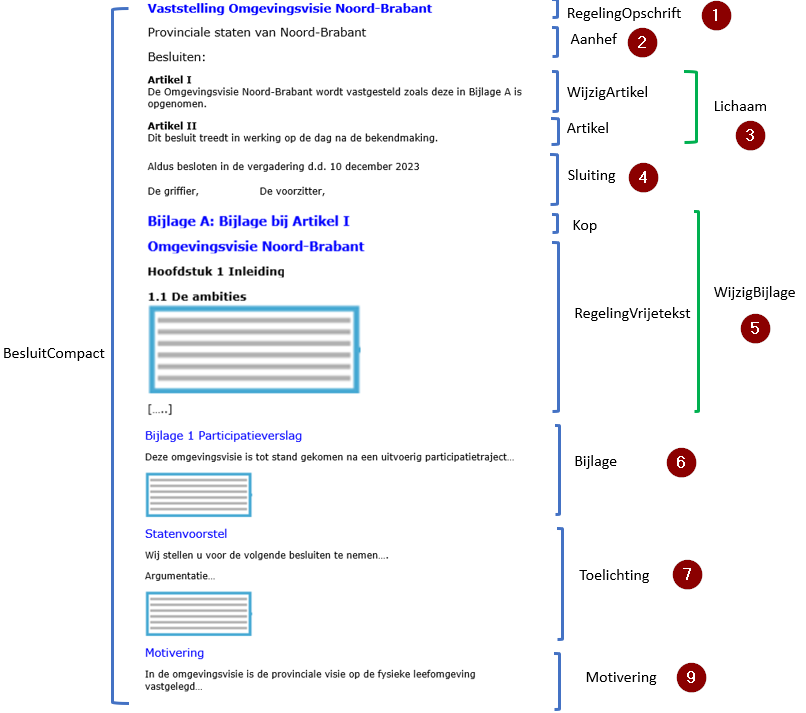Figuur 5Voorbeeld toepassing model BesluitCompact en RegelingVrijetekst op initieel besluit omgevingsvisie
Door toepassing van model BesluitCompact ziet een besluit tot wijziging van een omgevingsdocument met Vrijetekststructuur, oftewel een wijzigingsbesluit, er schematisch uit zoals aangegeven in Figuur 6. De nummers in deze figuur komen overeen met de nummering van de vorige twee paragrafen.
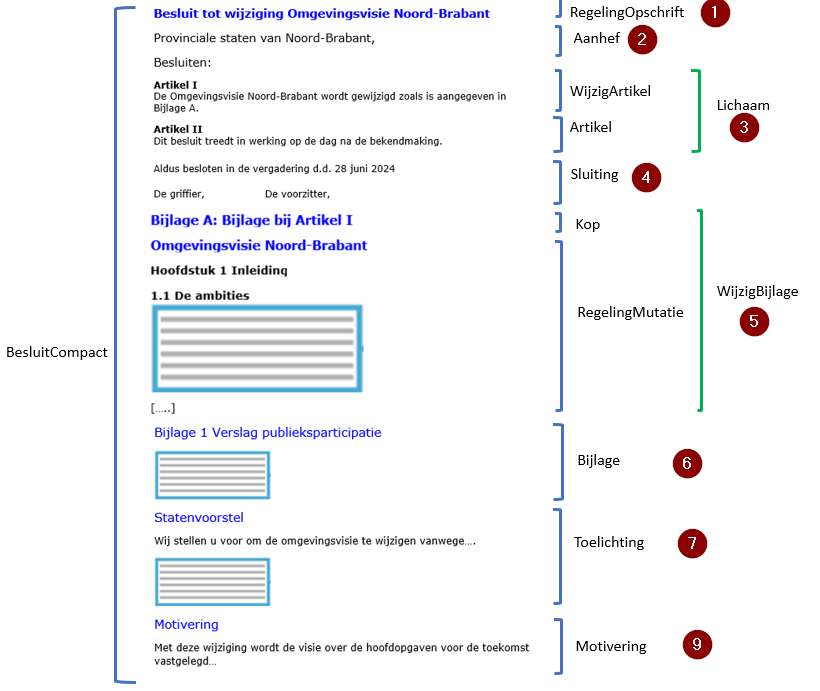Figuur 6Voorbeeld toepassing model BesluitCompact en RegelingMutatie op wijzigingsbesluit omgevingsvisie
4.4.3 Regeling
In de Regeling van een omgevingsdocument staat welke regels of beleid gelden in de fysieke leefomgeving, dan wel, in het geval van een projectbesluit, wat er wordt gerealiseerd in de fysieke leefomgeving. De Regeling is te vinden in de regelingenbank op overheid.nl en in DSO-LV.
In paragraaf 4.4.3.1 is de norm voor het model RegelingVrijetekst vastgelegd: welke elementen moeten respectievelijk mogen worden gebruikt en hoe vaak kunnen ze voorkomen. Paragraaf 4.4.3.2 geeft een uitgebreide toelichting op de elementen van de Regeling, waaronder ook tips over het al dan niet gebruikelijk zijn van een bepaald element. In paragraaf 4.4.3.3 worden norm en toelichting concreet gemaakt met een voorbeeld.
Opgemerkt wordt dat de modellen voor Besluit en Regeling XML-modellen zijn. Met de in de volgende paragrafen genoemde elementen worden dus (STOP-)XML-elementen bedoeld.
Omwille van de leesbaarheid en herkenbaarheid zijn de namen van de ‘hoofdelementen’ vetgedrukt en die van de ‘subelementen’ schuingedrukt. De ‘hoofdelementen’ zijn genummerd om er in de toelichting en het voorbeeld in de volgende paragrafen naar te kunnen verwijzen.
4.4.3.1 Norm
De (geconsolideerde) Regeling van het programma is opgebouwd overeenkomstig het model RegelingVrijetekst. RegelingVrijetekst bevat de volgende elementen:
RegelingOpschrift: STOP-element dat de officiële titel van de Regeling, oftewel het omgevingsdocument, bevat. Verplicht element. Komt 1 keer voor.
Lichaam: STOP-element dat de inhoud, oftewel de (beleids)teksten van de (geconsolideerde) Regeling van het omgevingsdocument bevat. Verplicht element. Komt 1 keer voor[8] Het Lichaam is het belangrijkste onderdeel van de Regeling. Zie daarvoor de toelichting in de volgende paragraaf en vooral de beschrijving van de Vrijetekststructuur in paragraaf 5.2. Dit is het deel dat wordt geannoteerd met OW-objecten, zie daarvoor hoofdstuk 7 . Het Lichaam wordt opgebouwd met Divisie (optioneel element) en Divisietekst (verplicht element). Divisie en Divisietekst moeten voldoen aan de specificaties voor de Vrijetekststructuur in paragraaf 5.2.
Bijlage: STOP-element dat een bijlage (in dit geval bij de Regeling) bevat. Optioneel element. Komt zo vaak voor als gewenst. Een bijlage die onderdeel is van de Regeling wordt geconsolideerd. Hoofdregel is dat een bijlage is vormgegeven als onderdeel van de tekst in STOP-XML. In bijzondere gevallen is het toegestaan een bijlage als PDF-document aan te leveren. Een Bijlage die in STOP-XML wordt opgesteld, bevat de volgende elementen:
Kop: STOP-element dat de Kop bevat. Verplicht element. Komt 1 keer voor. Bevat ten minste één van de Kopelementen Label, Nummer en Opschrift; ieder van deze elementen komt 0 of 1 keer voor. Optioneel kan het element Subtitel worden toegevoegd.
Gereserveerd: leeg STOP-element waarmee bij weergave op overheid.nl en in DSO-LV de tekst ‘Gereserveerd’ wordt gegenereerd. Optioneel element. Komt 0 of 1 keer voor. Indien in een Bijlage het element Gereserveerd wordt gebruikt mag in die Bijlage geen van de elementen Vervallen, Divisie en Divisietekst voorkomen.
Vervallen: leeg STOP-element waarmee bij weergave op overheid.nl en in DSO-LV de tekst ‘Vervallen’ wordt gegenereerd. Geeft aan dat de Bijlage de status ‘vervallen’ heeft; de Bijlage is niet langer juridisch geldig en heeft geen inhoud meer. Optioneel element. Komt 0 of 1 keer voor. Indien in een Bijlage het element Vervallen wordt gebruikt mag in die Bijlage geen van de elementen Gereserveerd, Divisie en Divisietekst voorkomen.
De inhoud van de Bijlage. Indien een Bijlage inhoud bevat, mogen in die Bijlage de elementen Gereserveerd en Vervallen niet voorkomen. De inhoud van de Bijlage wordt opgebouwd met Divisie (optioneel element) en Divisietekst (verplicht element). Divisie en Divisietekst moeten voldoen aan de specificaties voor de Vrijetekststructuur in paragraaf 5.2.
Sluiting: STOP-element dat de Bijlage afsluit. Optioneel element. Komt 0 of 1 keer voor. De tekst van de Sluiting staat in een of meer reguliere Alinea’s. Ook kan gebruik gemaakt worden van de optionele elementen Slotformulering, Dagtekening en Ondertekening.
Een bijlage mag alleen als PDF-document worden aangeleverd als het voor het bevoegd gezag redelijkerwijs niet mogelijk is om de bijlage als onderdeel van de tekst in STOP-XML op te stellen én als de bijlage informatie bevat die daadwerkelijk als (te consolideren) bijlage gezien kan worden. Het PDF-document moet dan voldoen aan de eisen van PDF/A-1a of PDF/A-2a en moet worden gemodelleerd als informatieobject.
4.4.3.2 Toelichting
RegelingVrijetekst is het model dat het bevoegd gezag moet gebruiken als het een nieuw, initieel omgevingsdocument met Vrijetekststructuur instelt. RegelingVrijetekst is ook het model voor de geconsolideerde regeling van omgevingsdocumenten met Vrijetekststructuur.
In deze paragraaf worden de elementen toegelicht die moeten respectievelijk kunnen voorkomen in een Regeling overeenkomstig het model RegelingVrijetekst. Figuur 7 laat schematisch zien hoe het model RegelingVrijetekst voor het programma er uit ziet (de nummers voor de elementen verwijzen naar de nummering in de vorige paragraaf).
Figuur 7Overzicht van model RegelingVrijetekst
In de hierna volgende toelichting wordt de nummering van paragraaf 4.4.3.1 gevolgd. In die paragraaf is van ieder element aangegeven of het moet (verplicht) of mag (optioneel) voorkomen; dat wordt in deze toelichting niet herhaald. De ‘hoofdelementen’ zijn weer vetgedrukt en de ‘subelementen’ schuingedrukt.
RegelingOpschrift: de officiële titel van de Regeling. Bijvoorbeeld: Omgevingsvisie Utrecht, of Woningbouwprogramma Amsterdam.
Lichaam: het element dat de inhoud oftewel de (beleids)tekst van het omgevingsdocument bevat. Deze inhoud staat in een of meer Divisieteksten, die desgewenst hiërarchisch kunnen worden gestructureerd in Divisies. Hiervoor gelden de specificaties voor de Vrijetekststructuur van paragraaf 5.2. Dit is het onderdeel dat wordt geannoteerd met de OW-objecten die zijn beschreven in hoofdstuk 7.
Bijlage: het gaat hier om een Bijlage bij de Regeling. Dit is een bijlage die informatie bevat die integraal onderdeel is van het omgevingsdocument maar om redenen van leesbaarheid en/of vormgeving (denk aan lange lijsten en complexe tabellen) niet goed in de (beleids)tekst in het Lichaam van de Regeling kan worden opgenomen. Er kunnen zoveel bijlagen bij de Regeling worden gevoegd als nodig is. Bijlagen bij de Regeling worden bekendgemaakt én geconsolideerd. Dat laatste houdt in dat ze met een later wijzigingsbesluit gewijzigd kunnen worden. Deze bijlagen zijn zowel te vinden in het publicatieblad van het bevoegd gezag op officielebekendmakingen.nl als in de regelingenbank op overheid.nl en in DSO-LV. Uitgangspunt van de STOP/TPOD-standaard is dat elke tekst die onderdeel is van een officiële publicatie, zoals een besluit of regeling, wordt uitgewisseld in STOP-XML. Daarmee is gewaarborgd dat de teksten voldoen aan alle wettelijke eisen. De teksten kunnen dan juridisch rechtsgeldig gepubliceerd worden en de voorzieningen zorgen er voor dat ze volgens de richtlijnen van digitale toegankelijkheid worden ontsloten. Als de bijlage onderdeel is van de tekst in STOP-XML, staat de inhoud in een of meer Divisieteksten, die desgewenst hiërarchisch kunnen worden gestructureerd in Divisies. Deze elementen van de Vrijetekststructuur en hun specificaties zijn beschreven in paragraaf 5.2. Een voorbeeld van een bijlage in STOP-XML is de bijlage met verwijzingen naar de (elders gepubliceerde) GIO’s. Het is mogelijk om zo’n bijlage in verschillende onderdelen op te delen. Voor die onderverdeling worden de vrijetekstelementen Divisie (optioneel element) en Divisietekst (verplicht element) gebruikt. Tekst uitwisselen in STOP-XML is niet altijd mogelijk zonder de tekst te moeten overtypen. Daarom ondersteunt de STOP/TPOD-standaard ook het aanleveren van tekst als PDF-document. Een tekst in een PDF-document is voor de landelijke voorzieningen minder goed te hanteren; denk aan verwijzen naar specifieke onderdelen en muteren dat niet -of niet goed- mogelijk is. Daarom wordt het gebruik van PDF-documenten slechts in specifieke, in het toepassingsprofiel vastgelegde, gevallen toegestaan. In dit toepassingsprofiel is, in de norm van paragraaf 4.4.3.1, bepaald dat een bijlage alleen als PDF-document mag worden aangeleverd als het voor het bevoegd gezag redelijkerwijs niet mogelijk is om de bijlage als onderdeel van de tekst in STOP-XML op te stellen én als de bijlage informatie bevat die daadwerkelijk als (te consolideren) bijlage gezien kan worden. Dat de bijlage informatie moet bevatten die daadwerkelijk als (te consolideren) bijlage gezien kan worden betekent dat het moet gaan om informatie die onlosmakelijk onderdeel is van de regeling maar om redenen van leesbaarheid en/of vormgeving niet in het Lichaam van de Regeling kan worden opgenomen. Het betekent ook dat niet de volledige inhoud van het Lichaam van de Regeling in een bijlage in PDF-formaat mag worden opgenomen. Een bijlage in de vorm van een PDF-document moet onveranderlijk zijn. Daarom moet het PDF-document voldoen aan de eisen van PDF/A-1a of PDF/A-2a en moet het worden gepubliceerd als informatieobject. Een beschrijving van beide publicatiemogelijkheden voor bijlagen staat in paragraaf 4.2. Bij een bijlage als onderdeel van de tekst in STOP-XML is het mogelijk om met een later wijzigingsbesluit één of meer gedeelten van de bijlage te wijzigen. Bij een bijlage in de vorm van een PDF-document kan dat niet; in dat geval wordt het hele PDF-document vervangen. In een Bijlage bij de Regeling kan het element Gereserveerd worden gebruikt. Dit element maakt het mogelijk om alvast een structuur neer te zetten die is voorbereid op toekomstige aanvullingen. Het is een leeg element waarmee bij weergave op overheid.nl en in DSO-LV de tekst ‘Gereserveerd’ wordt gegenereerd. Het bevoegd gezag kan het element niet zelf vullen met eigen tekst. Met latere wijzigingsbesluiten kan het element Gereserveerd worden vervangen door een structuurelement met daadwerkelijke inhoud. Wanneer een bijlage vervalt kan in het element Bijlage het element Vervallen worden opgenomen. Op deze manier blijft zichtbaar dat er een bijlage was en dat die later is vervallen. Het voordeel daarvan is dat in de wetstechnische informatie de historie van het element kan worden teruggevonden. Een andere mogelijkheid bij het vervallen van een bijlage is om het element Bijlage met een wijzigingsbesluit te verwijderen. Dan is het element niet langer zichtbaar en is er ook geen wetstechnische informatie meer. Een Bijlage kan worden afgesloten met het element Sluiting. Van die mogelijkheid zal naar verwachting niet vaak gebruik gemaakt worden. Een Bijlage wordt niet geannoteerd met OW-objecten.
Een aantal van de hiervoor besproken elementen moet worden voorzien van een Kop. Voor de Kop zijn de Kopelementen Label, Nummer en Opschrift beschikbaar. Label is de aanduiding van het type tekstelement, zoals Hoofdstuk, Paragraaf of Artikel. Opschrift is de titel van het tekstelement, die aangeeft waar de tekst over gaat.
In de schema’s van STOP komt in een aantal hoofd- en subelementen het element InleidendeTekst -bedoeld voor niet-juridische contextinformatie- voor. Dit element zal in een toekomstige versie van de standaard vervallen; gebruik daarvan wordt daarom nu afgeraden. Daarom is dit element hier niet opgenomen.
4.4.3.3 Voorbeeld
Door toepassing van model RegelingVrijetekst ziet de Regeling van een omgevingsdocument met Vrijetekststructuur er schematisch uit zoals aangegeven in Figuur 8. De nummers in deze figuur komen overeen met de nummering van de vorige twee paragrafen.
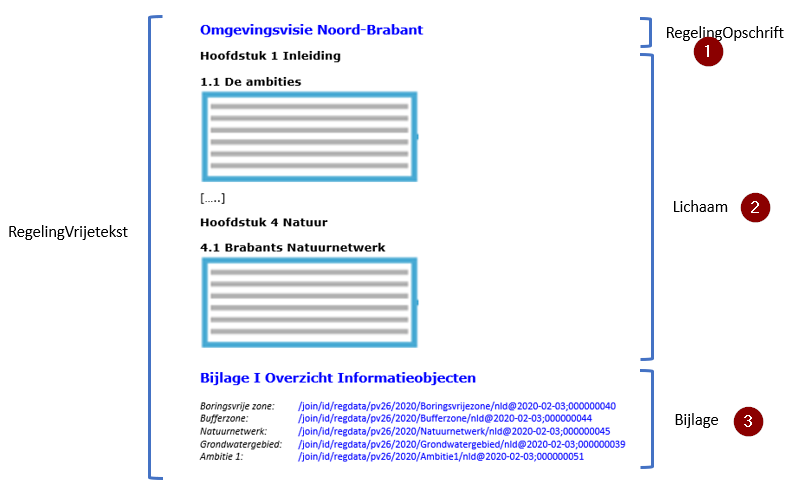Figuur 8Voorbeeld toepassing model RegelingVrijetekst op omgevingsvisie
5 Toepassing van de STOP-tekststructuren op omgevingsdocumenten
STOP benoemt tekstelementen en beschrijft de structuur waarin die tekstelementen toegepast kunnen worden. STOP geldt voor alle officiële overheidspublicaties. Specifieke typen publicaties hebben een eigen toepassingsprofiel op het STOP-model, dat nadere specificaties van STOP kan geven. In dit hoofdstuk wordt beschreven hoe de STOP-tekststructuren in zijn algemeenheid op omgevingsdocumenten en vervolgens specifiek op het programma moeten worden toegepast.
5.1 Soorten tekststructuur
STOP onderscheidt twee tekststructuren:
Artikelstructuur: de tekststructuur voor het Lichaam van een Regeling als dat is opgebouwd uit één of meer artikelen;
Vrijetekststructuur:
de tekststructuur voor het Lichaam van een Regeling van juridisch authentieke documenten die geen artikelen bevat;
de tekststructuur voor onderdelen van Regeling en Besluit buiten het Lichaam.
Er zijn omgevingsdocumenten waarvan het Lichaam artikelen bevat en dus de Artikelstructuur heeft, zoals de omgevingsverordening, de waterschapsverordening en het omgevingsplan, en omgevingsdocumenten waarvan het Lichaam geen artikelen bevat en dus de Vrijetekststructuur heeft, zoals de omgevingsvisie. In het vervolg van dit toepassingsprofiel worden omgevingsdocumenten waarvan het Lichaam artikelen bevat ‘omgevingsdocument met Artikelstructuur’ genoemd en worden omgevingsdocumenten waarvan het Lichaam de Vrijetekststructuur heeft (oftewel geen artikelen bevat) ‘omgevingsdocument met Vrijetekststructuur’ genoemd.
Zoals in hoofdstuk 4 al is opgemerkt komen er ook in het Lichaam van een Besluit artikelen voor. Deze artikelen vallen echter niet onder het begrip Artikelstructuur. Dat de elementen van de Vrijetekststructuur worden gebruikt buiten het Lichaam geldt zowel voor omgevingsdocumenten met Artikelstructuur als voor omgevingsdocumenten met Vrijetekststructuur, en zowel voor Regeling als Besluit. De specificatie van de STOP-Artikelstructuur is dus alleen van toepassing op het Lichaam van omgevingsdocumenten met Artikelstructuur. De specificatie van de STOP-Vrijetekststructuur is van toepassing op alle omgevingsdocumenten.
5.2 Specificatie van de Vrijetekststructuur
Zoals in paragraaf 5.1 is beschreven is de Vrijetekststructuur:
de tekststructuur voor het Lichaam van een Regeling van juridisch authentieke documenten die geen artikelen bevat;
de tekststructuur voor onderdelen van Regeling en Besluit buiten het Lichaam: Bijlage, Toelichting, ArtikelgewijzeToelichting en Motivering[9] Zie voor uitleg en toepassing van de elementen Lichaam, Regeling, Bijlage, Toelichting, ArtikelgewijzeToelichting en Motivering hoofdstuk 4 .
De specificaties voor de Vrijetekststructuur en de toepassing van die specificaties voor het programma worden in de navolgende paragrafen beschreven.
De elementen van de STOP-tekststructuren zijn onder te verdelen in structuurelementen, elementen met inhoud en de inhoud zelf. Structuurelementen zijn die elementen die de tekst structureren maar zelf geen inhoud bevatten. In de Vrijetekststructuur is dat het element Divisie. Elementen met inhoud zijn die elementen die inhoud bevatten maar niet zelf inhoud zijn. In de Vrijetekststructuur is dat het element Divisietekst. De inhoud zelf is dat wat in de Divisietekst staat. Voorbeelden van de vorm die de inhoud kan aannemen zijn Alinea, Tabel en Figuur. In de navolgende tekst gebruiken we ‘tekstelement’ als term voor de drie elementsoorten tezamen.
De opmaak van de tekst, waaronder die van de Koppen, wordt bepaald door de applicaties die de tekst tonen: officielebekendmakingen.nl, de regelingenbanken op overheid.nl en DSO-LV. Dit toepassingsprofiel bevat daarom geen voorschriften over de opmaak van de elementen en hun Koppen. Ten behoeve van de mensleesbare tekst in het proces van opstellen van en besluitvorming over het omgevingsdocument, voorafgaand aan de bekendmaking en consolidatie, kan de plansoftware -door leverancier of bevoegd gezag te bepalen- opmaak aan de tekst toevoegen.
In paragraaf 5.2.1 is de norm voor de toepassing van de Vrijetekststructuur op het programma vastgelegd: welke elementen moeten respectievelijk mogen worden gebruikt, hoe vaak kunnen ze voorkomen en in welke volgorde. Paragraaf 5.2.2 geeft daar een toelichting op.
5.2.1 Norm
De elementen van Besluit en Regeling van het programma waarvan in hoofdstuk 4 is bepaald dat ze moeten worden opgebouwd volgens de Vrijetekststructuur, moeten voldoen aan de specificaties in deze paragraaf. De Vrijetekststructuur kent de volgende elementen:
Divisie: STOP-structuurelement dat gebruikt wordt voor de structurering van vrije tekst. Optioneel element. Komt zo vaak voor als gewenst. Divisie kan genest worden, oftewel hiërarchisch ingedeeld worden in verschillende niveaus van Divisie. Indien gebruik gemaakt wordt van Divisie, moet in ieder geval de Divisie van het laagste hiërarchische niveau een of meer elementen Divisietekst bevatten. De Divisies van de overige hiërarchische niveaus kunnen Divisietekst bevatten. In de hiërarchische indeling van de Divisies kunnen geen niveaus worden overgeslagen. Divisie bevat de volgende elementen:
Kop: STOP-element dat de Kop bevat. Verplicht element. Komt 1 keer voor. Bevat ten minste één van de Kopelementen Label, Nummer en Opschrift; ieder van deze elementen komt 0 of 1 keer voor. Optioneel kan het element Subtitel worden toegevoegd.
Gereserveerd: leeg STOP-element waarmee bij weergave op overheid.nl en in DSO-LV de tekst ‘Gereserveerd’ wordt gegenereerd. Optioneel element. Komt 0 of 1 keer voor. Mag alleen voorkomen in een Divisie binnen de Regeling. Indien in een Divisie het element Gereserveerd wordt gebruikt mag in die Divisie geen van de elementen Divisie of Divisietekst voorkomen.
Vervallen: leeg STOP-element waarmee bij weergave op overheid.nl en in DSO-LV de tekst ‘Vervallen’ wordt gegenereerd. Geeft aan dat de Divisie de status ‘vervallen’ heeft; het is niet langer juridisch geldig en heeft geen inhoud meer. Optioneel element. Komt 0 of 1 keer voor. Mag alleen voorkomen in een Divisie binnen de Regeling. Indien in een Divisie het element Vervallen wordt gebruikt mag in die Divisie geen van de elementen Gereserveerd, Divisie en Divisietekst voorkomen.
Wanneer binnen de Divisie de elementen Gereserveerd of Vervallen niet voorkomen: een verplichte keuze tussen:
Divisie (van een lagergelegen niveau)
Divisietekst
Divisietekst: STOP-element dat de inhoudelijke bouwsteen is voor de Vrijetekststructuur. Onder voorwaarde verplicht element: alleen te gebruiken wanneer binnen het bovenliggende element de elementen Gereserveerd en Vervallen niet voorkomen; is dan verplicht en komt dan ten minste 1 keer voor. Divisietekst bevat de volgende elementen:
Kop: STOP-element dat de Kop bevat. Optioneel element. Komt 0 of 1 keer voor. Indien Kop voorkomt bevat het ten minste één van de Kopelementen Label, Nummer en Opschrift; ieder van deze onderdelen komt 0 of 1 keer voor. Optioneel kan het element Subtitel worden toegevoegd.
Gereserveerd: leeg STOP-element waarmee bij weergave op overheid.nl en in DSO-LV de tekst ‘Gereserveerd’ wordt gegenereerd. Optioneel element. Komt 0 of 1 keer voor. Mag alleen voorkomen in een Divisietekst binnen de Regeling. Indien in een Divisietekst het element Gereserveerd wordt gebruikt mag in die Divisie geen van de elementen Divisie of Divisietekst voorkomen.
Vervallen: leeg STOP-element waarmee bij weergave op overheid.nl en in DSO-LV de tekst ‘Vervallen’ wordt gegenereerd. Geeft aan dat de Divisietekst de status ‘vervallen’ heeft; het is niet langer juridisch geldig en heeft geen inhoud meer. Optioneel element. Komt 0 of 1 keer voor. Mag alleen voorkomen in een Divisietekst binnen de Regeling. Indien in een Divisietekst het element Vervallen wordt gebruikt mag in die Divisie geen van de elementen Gereserveerd, Divisie en Divisietekst voorkomen.
Inhoud: STOP-element voor de inhoud. Onder voorwaarde verplicht element: alleen te gebruiken wanneer binnen de Divisietekst de elementen Gereserveerd en Vervallen niet voorkomen; is dan verplicht en komt dan (per Divisietekst) ten minste 1 keer voor. Het element Inhoud bevat ten minste één van de inhoud-elementen Alinea, Begrippenlijst, Citaat, Figuur, Formule, Groep, Lijst, Tabel en Tussenkop. Deze elementen zijn desgewenst binnen het element Kadertekst te plaatsen.
Voor het inhoud-element Lijst kan gekozen worden tussen Lijst van het type expliciet en Lijst van het type ongemarkeerd.
5.2.2 Toelichting
De Artikelstructuur wordt alleen toegepast in het Lichaam van de Regeling van omgevingsdocumenten met Artikelstructuur. De Vrijetekststructuur is de tekststructuur voor het Lichaam van de Regeling van omgevingsdocumenten met Vrijetekststructuur, zoals de omgevingsvisie en het vrijetekstgedeelte van het projectbesluit. Dit is het deel dat de (beleids)tekst met de inhoud van het omgevingsdocument bevat. Daarnaast is de Vrijetekststructuur de tekststructuur die wordt gebruikt in diverse delen van Regeling en Besluit buiten het Lichaam: Bijlage, Toelichting, ArtikelgewijzeToelichting en Motivering. Dat geldt zowel voor omgevingsdocumenten met Vrijetekststructuur als voor omgevingsdocumenten met Artikelstructuur.
In de Artikelstructuur wordt structuur aangebracht met specifiek benoemde structuurelementen zoals Hoofdstuk, Afdeling en Paragraaf. Die structuur toont direct -mens- en machineleesbaar- de positie van een element in het geheel. In de Vrijetekststructuur komt slechts één structuurelement voor, namelijk Divisie. Divisies kunnen genest worden: de opsteller kan desgewenst de tekst naar eigen inzicht hiërarchisch indelen in verschillende niveaus van Divisie. De positie van een Divisie in de hiërarchie bepaalt het niveau van die Divisie. De indeling in Divisies is de structuur zoals die kan worden weergegeven in een inhoudsopgave. Figuur 9 toont een voorbeeld van een tekst met Divisie in drie hiërarchische niveaus.
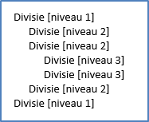Figuur 9Divisie in drie hiërarchische niveaus
In het Label van de Kop van de Divisie kan uiteraard gebruik gemaakt worden van de termen hoofdstuk, afdeling en paragraaf. Dat wordt getoond in Figuur 10.
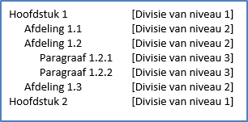Figuur 10Divisie in drie hiërarchische niveaus met de termen hoofdstuk, afdeling en paragraaf als Label in de Kop
Divisie is dus het structuurelement van de Vrijetekststructuur, vergelijkbaar met structuurelementen als Hoofdstuk en Paragraaf in de Artikelstructuur. Divisie is een optioneel element: het is dus niet verplicht om tekstdelen met Vrijetekststructuur te structureren met Divisies. In de praktijk zal dat vaak wel gebeuren en zal Divisie in ten minste één niveau voorkomen. Iedere Divisie moet worden voorzien van een Kop. In de Vrijetekststructuur worden slechts beperkte eisen aan Kop gesteld: er moet ten minste één van de Kopelementen Label, Nummer of Opschrift zijn. Hoe die worden ingevuld is aan de opsteller. Figuur 11 geeft een voorbeeld van een tekst met Divisies in drie niveaus waarbij in de Kop alleen gebruik wordt gemaakt van het Kop-element Opschrift.
Figuur 11Divisie in drie hiërarchische niveaus met een Kop die alleen bestaat uit Opschrift
In de Vrijetekststructuur is Divisietekst het element met inhoud: het element dat inhoud bevat maar niet zelf inhoud is. Divisietekst is het verplichte element: het moet in iedere tekst met Vrijetekststructuur voorkomen. Het element Divisietekst van de Vrijetekststructuur komt overeen met Artikel (en Lid) van de Artikelstructuur. Divisietekst kan niet genest worden en is dus niet in te delen in hiërarchische niveaus. Divisietekst is de kleinste mutatie-eenheid. Dit betekent dat het de eenheid is die, ongeacht hoeveel wijzigingen met een wijzigingsbesluit in die Divisietekst worden aangebracht, als geheel vervangen wordt bij consolidatie. Bij gebruik van de wijzigingsmethode renvooi wordt door de renvooi-weergave van de wijzigingen zichtbaar wat er door het wijzigingsbesluit in de Divisietekst gewijzigd is. De Divisietekst is ook de eenheid waarover in de wetstechnische informatie in de regelingenbanken de juridische verantwoording wordt bijgehouden.
Divisietekst is in STOP gedefinieerd als een zelfstandig leesbaar stuk tekst met een interne inhoudelijke samenhang. De opsteller bepaalt zelf wat tot een Divisietekst behoort. Dat kunnen een of meer alinea’s zijn, maar ook de volledige tekst binnen een Divisie.
Bij Divisietekst is de Kop optioneel: de opsteller kan een Divisietekst voorzien van een Kop, maar dat is niet verplicht. Als een Divisietekst een Kop heeft, geldt ook daarvoor de beperkte eis dat de Kop uit ten minste één van de Kopelementen Label, Nummer of Opschrift moet bestaan. Hoe die worden ingevuld is aan de opsteller.
Figuur 12Een structuur met Divisie in twee hiërarchische niveaus, met daaronder DivisietekstFiguur 13Een structuur met Divisie in twee hiërarchische niveaus met de termen hoofdstuk en afdeling als Label in de Kop, met daaronder Divisietekst met een Kop met als label paragraaf
Binnen de Divisietekst wordt Inhoud opgenomen. Hiervoor kan gebruik gemaakt worden van alle Inhoud-elementen die STOP kent. We lichten hier de Inhoud-elementen Tussenkop en Lijst toe. Met het element Tussenkop kan een niet-structurerende ordening in de tekst worden aangebracht. Tussenkop is geen structuurelement en komt dan ook niet in een inhoudsopgave voor. Voor Lijst kent STOP twee typen: expliciet en ongemarkeerd. Bij gebruik van het type expliciet levert het bevoegd gezag de opsommingstekens mee; ze staan dus hard in de tekst. Bij gebruik van het type ongemarkeerd levert het bevoegd gezag niet de opsommingstekens aan. De applicaties die de tekst tonen (officielebekendmakingen.nl, de regelingenbanken op overheid.nl en DSO-LV) tonen de lijstitems in de door het bevoegd gezag aangeleverde volgorde en bepalen zelf met welke opsommingstekens de lijstitems worden weergegeven. Voor een tekst met Vrijetekststructuur is niet voorgeschreven welk type Lijst gebruikt moet worden: het is aan het bevoegd gezag om een keuze tussen de twee types te maken. Wanneer het bevoegd gezag zelf wil bepalen met welke opsommingstekens lijstitems worden weergegeven, kiest het voor de Lijst van het type expliciet. Als het bevoegd gezag het aan de applicaties wil overlaten, kiest het voor de Lijst van type ongemarkeerd.
Figuur 14Toepassing van de Vrijetekststructuur in het Lichaam van de Regeling van een omgevingsvisie
In Figuur 14 is te zien dat Divisietekst kan voorkomen onder een Divisie van ieder niveau, ook als er Divisies van lagere niveaus zijn. De Vrijetekststructuur geeft dus meer vrijheid dan de artikelstructuur, waar een artikel alleen onder het structuurelement van het laagste niveau kan voorkomen.
Zowel in Divisie als in Divisietekst die voorkomen in de Regeling kunnen de elementen Gereserveerd en Vervallen geplaatst worden. Het element Gereserveerd is een leeg element waarmee bij weergave op overheid.nl en in DSO-LV de tekst ‘Gereserveerd’ wordt gegenereerd. Het bevoegd gezag kan het element niet zelf vullen met eigen tekst. Dit element maakt het mogelijk om alvast een structuur neer te zetten die is voorbereid op toekomstige aanvullingen. Met latere wijzigingsbesluiten kan het element Gereserveerd worden vervangen door een structuurelement met daadwerkelijke inhoud. Dat verklaart ook waarom het element Gereserveerd niet in Divisie en Divisietekst in het Besluit kan voorkomen. Het Besluit zelf wordt immers niet gewijzigd en daardoor zou het element Gereserveerd nooit vervangen worden door daadwerkelijke inhoud. Ook inhoudelijk zou een element Gereserveerd in een Besluit een wonderlijke keuze zijn.
Het element Vervallen is een leeg element waarmee bij weergave op overheid.nl en in DSO-LV de tekst ‘Vervallen’ wordt gegenereerd. Het bevoegd gezag kan het element niet zelf vullen met eigen tekst. Wanneer een Divisie of Divisietekst vervalt kan het worden vervangen door het element Vervallen. Op deze manier blijft zichtbaar dat er een Divisie of Divisietekst was en dat die later is vervallen. Het voordeel daarvan is dat in de wetstechnische informatie de historie van het element kan worden teruggevonden. Het element Vervallen kan niet in Divisie en Divisietekst in het Besluit voorkomen. Het Besluit zelf wordt immers niet gemuteerd en daardoor zijn er geen Besluit-onderdelen die vervallen. Het werken met het element Vervallen is niet verplicht: het is ook mogelijk om de betreffende Divisie of Divisietekst met een wijzigingsbesluit volledig te verwijderen. Dan is het element niet langer zichtbaar. Het nadeel hiervan is dat er van het element geen wetstechnische informatie meer is.
Opgemerkt wordt dat waar in deze paragraaf Divisie en Divisietekst worden genoemd, het gaat over de STOP-structuurelementen Divisie en Divisietekst. Het gaat niet over de OW-objecten Divisie en Divisietekst. Zoals hiervoor al gezegd komen de STOP-structuurelementen Divisie en Divisietekst voor in het Lichaam van de Regeling van omgevingsdocumenten met Vrijetekststructuur, maar ook in onderdelen van Besluit en Regeling daarbuiten, zowel in omgevingsdocumenten met Vrijetekststructuur als in omgevingsdocumenten met Artikelstructuur. In IMOW komen Divisie en Divisietekst voor als objecttypen, die alleen gebruikt kunnen worden in het Lichaam van de Regeling van omgevingsdocumenten met Vrijetekststructuur.
6 Inleiding op het Informatiemodel Omgevingswet
Het Informatiemodel Omgevingswet, verder afgekort tot IMOW, beschrijft vanuit informatiekundig én domeininhoudelijk perspectief de aspecten die van belang zijn voor het annoteren bij het opstellen van omgevingsdocumenten en ten behoeve van de informatieverschaffing in DSO-LV.
Dit hoofdstuk geeft een introductie op IMOW. Paragraaf 6.1 beschrijft de drie hoofdcomponenten van IMOW: tekst, locatie en annotatie. Voordat daar in hoofdstuk 7 gedetailleerd wordt ingegaan, wordt in paragraaf 6.2 beschreven hoe het annoteren met OW-objecten vanuit de standaard is bedoeld.
6.1 De drie hoofdcomponenten van IMOW: tekst, locatie en annotatie
Figuur 15De hoofdcomponenten van IMOW
Bovenstaande figuur toont de drie hoofdcomponenten van IMOW in hun samenhang. IMOW is een model waarmee van tekst kan worden vastgelegd op welke locatie deze geldig is en aan tekst en locatie met behulp van annotaties gegevens kunnen worden toegevoegd. Die gegevens maken tekst en locatie machineleesbaar waardoor ze bekendgemaakt kunnen worden, herkenbaar in een viewer weergegeven kunnen worden en waardoor onderdelen geselecteerd en bevraagd kunnen worden. Het vervolg van deze paragraaf beschrijft deze drie componenten in grote lijnen. In hoofdstuk 7 worden ze in detail beschreven.
Benadrukt wordt dat IMOW alleen van toepassing is op het Lichaam van de Regeling van omgevingsdocumenten, oftewel het onderdeel dat de artikelen respectievelijk de (beleids)teksten bevat.
6.1.1 Tekst
Zoals in hoofdstuk 5 al is beschreven kent STOP twee soorten tekststructuur: Artikelstructuur en Vrijetekststructuur. In het STOP-tekstmodel is Artikelstructuur de tekststructuur voor het Lichaam van een Regeling die is opgebouwd uit één of meer artikelen. Vrijetekststructuur is de tekststructuur die wordt gebruikt voor het Lichaam van een Regeling van juridisch authentieke documenten die geen artikelen bevat én voor diverse onderdelen van Regeling en Besluit buiten het Lichaam, waaronder Bijlage en Toelichting.
IMOW maakt eveneens onderscheid tussen de Artikelstructuur en de Vrijetekststructuur. Het verschil met STOP is dat IMOW alleen wordt toegepast op het lichaam van de Regeling van omgevingsdocumenten, oftewel het onderdeel dat de artikelen respectievelijk de (beleids)teksten bevat. IMOW wordt dus niet toegepast op de overige onderdelen van de Regeling, zoals motivering, artikelsgewijze toelichting en bijlagen, en niet op de onderdelen van het Besluit. Twee voorbeelden: IMOW wordt wel toegepast op de artikelen met regels van het omgevingsdocument maar niet op bijlagen bij die regels en ook niet op de motivering die onderdeel vormt van het besluit, wel op de beleidsteksten in de omgevingsvisie maar niet op een eventuele bijbehorende zienswijzennota of participatieverslag.
Voor tekst met Artikelstructuur onderscheidt IMOW de objecten Regeltekst en Juridische regel (beschreven in subparagraaf 6.1.1.1), voor het lichaam van omgevingsdocumenten met Vrijetekststructuur heeft IMOW de objecten Divisie, Divisietekst en Tekstdeel (de onderwerpen van subparagraaf 6.1.1.2).
6.1.1.1 Regeltekst en Juridische regel
Voor het Lichaam van de Regeling van omgevingsdocumenten met Artikelstructuur onderscheidt IMOW de objecttypen Regeltekst en Juridische regel.
Regeltekst is de IMOW-term voor de kleinste zelfstandige eenheid van (een of meer) bij elkaar horende Juridische regels in een omgevingsdocument met Artikelstructuur: artikel en lid. Het OW-objecttype Regeltekst is het koppelobject naar de STOP-elementen Artikel en Lid. Artikel en Lid zijn in STOP elementen met inhoud en geen structuurelementen. De Regeltekst is in een tekst concreet aan te wijzen.
Het OW-objecttype Juridische regel staat voor een abstract concept waarmee een regel met juridische werkingskracht wordt beschreven. Juridische regel wordt gebruikt om aan verschillende onderdelen van een Regeltekst locaties en annotaties met de domeinspecifieke OW-objecten (zie daarvoor hoofdstuk 7) te kunnen koppelen.
Regeltekst bevat altijd ten minste één Juridische regel; wanneer dat gewenst is kan Regeltekst meerdere Juridische regels bevatten. De individuele Juridische regels in een Regeltekst met meerdere Juridische regels zijn niet als zelfstandige eenheden te identificeren. Bij bevraging in bijvoorbeeld DSO-LV zal altijd de volledige Regeltekst als resultaat worden weergegeven en niet de individuele Juridische regel. Het is niet verplicht om een Regeltekst in meerdere Juridische regels onder te verdelen.
6.1.1.2 Divisie, Divisietekst en Tekstdeel
Voor het Lichaam van de Regeling van omgevingsdocumenten met Vrijetekststructuur onderscheidt IMOW de objecttypen Divisie, Divisietekst en Tekstdeel.
De OW-objecttypen Divisie en Divisietekst zijn de koppelobjecten naar de Divisie en Divisietekst van STOP. Zoals in paragraaf 5.2 is beschreven is Divisie in STOP het structurerende element dat ingedeeld kan worden in verschillende hiërarchische niveaus. De STOP-Divisie is dus vergelijkbaar met Hoofdstuk, Afdeling en Paragraaf et cetera van de Artikelstructuur. In STOP is Divisietekst het element dat de inhoud bevat, het is de inhoudelijke bouwsteen van de Vrijetekststructuur. De STOP-Divisietekst is vergelijkbaar met Artikel (en Lid) van de Artikelstructuur.
Het OW-objecttype Tekstdeel staat voor een abstract concept waarmee een deel van een tekst wordt beschreven. Tekstdeel wordt gebruikt om aan verschillende onderdelen van een Divisie of Divisietekst Locaties en annotaties met de domeinspecifieke OW-objecten (zie daarvoor hoofdstuk 7) te kunnen koppelen. Een Divisie of Divisietekst bevat altijd ten minste één Tekstdeel; wanneer dat gewenst is kan een Divisie of Divisietekst meerdere Tekstdelen bevatten.
Let op dat het STOP-tekstmodel de elementen Divisie en Divisietekst kent en IMOW de objecttypen Divisie en Divisietekst. Ze zijn niet hetzelfde. De STOP-elementen Divisie en Divisietekst worden gebruikt voor het Lichaam van de Regeling van omgevingsdocumenten met Vrijetekststructuur, maar ook voor diverse andere onderdelen van Besluit en Regeling. Dat is ruimer dan de OW-objecten Divisie en Divisietekst, die alleen kunnen voorkomen in het Lichaam van de Regeling van een omgevingsdocument met Vrijetekststructuur.
6.1.2 Locatie
6.1.2.1 Juridisch vastleggen van Locatie met geografisch informatieobject
In regelingen kan informatie worden vastgelegd die niet op een begrijpelijke manier in tekst te beschrijven is. De geometrische begrenzing van Locatie is daar een voorbeeld van; gedacht kan ook worden aan een geluidsfragment. STOP gebruikt het informatieobject als bedoeld in Aanwijzing 3.50 van de Aanwijzingen voor de regelgeving (waarin de voorwaarden staan waar verwijzingen naar informatie op internet aan moeten voldoen) om dergelijke informatie op een juridisch juiste manier vast te leggen en er vanuit de tekst van een regeling naar te verwijzen. Een informatieobject dat de geometrische begrenzing van een of meer Locaties vastlegt wordt een geografisch informatieobject genoemd. (Zoals al eerder gemeld wordt de term geografisch informatieobject afgekort tot GIO.) Feitelijk is een GIO een GML-bestand met een of meer geometrieën, voorzien van metadata conform de STOP-specificatie voor een GIO.
Een GIO is een technische voorziening voor het accuraat specificeren en juridisch borgen van een gebied. Het is onderdeel van het besluit als informatie die niet uit tekst bestaat als bedoeld in artikel 7, eerste lid, van de Bekendmakingswet. Het wordt tegelijk met de tekst van het besluit in het publicatieblad van het betreffende bevoegd gezag op officielebekendmakingen.nl gepubliceerd.
De tekst van de Regeling moet minimaal één keer met een tekstuele aanduiding verwijzen naar ieder GIO. Daardoor wordt de inhoud ervan onderdeel van besluit en regeling. Voor die tekstuele aanduiding wordt de naam van het GIO gebruikt. De vermelding van de naam van het GIO in de tekst heeft als doel dat een lezer begrijpt op welke locatie de tekst betrekking heeft. De systematiek waarmee informatieobjecten machineleesbaar worden vastgelegd en de manier waarop de tekst van de Regeling verwijst naar het informatieobject zorgen er voor dat:
de informatie permanent via de verwijzing is terug te vinden;
de informatie met algemeen beschikbare software op een voor de mens begrijpelijke manier weergegeven kan worden;
de onveranderlijkheid van het informatieobject voldoende is gewaarborgd.
STOP bevat de eisen waaraan een GIO moet voldoen. Deze eisen zorgen voor de borging van de juridische bestendigheid van de GIO’s. Aan een GIO kan een module worden toegevoegd met daarin de GIO-symbolisatie: informatie over hoe een GIO (op overheid.nl) wordt afgebeeld op een kaart. In het geval van een GIO met normwaarden is dat verplicht.
Voor de bekendmaking van omgevingsdocumenten is het verplicht om de geometrische begrenzing van onderdelen van de regeling vast te leggen in een GIO. Een uitzondering daarop is een regel die geldt voor het hele ambtsgebied van het bevoegd gezag: in dat geval wordt de Locatie, oftewel het ambtsgebied, niet vastgelegd met een GIO. Zie hiervoor verder paragraaf 7.6.5.
Het in omgevingsdocumenten juridisch juist werken met GIO’s gebeurt als volgt:
In de tekst van de Regeling moet de (mensleesbare) naam van ieder GIO minimaal één keer voorkomen, voorzien van een (machineleesbare) verwijzing naar het betreffende onderdeel in de bijlage Informatieobjecten.
De coördinaten van iedere Locatie moeten zijn vastgelegd in een GIO.
In de bijlage Informatieobjecten wordt de naam van het GIO opgenomen op een manier vergelijkbaar met een begrip en zijn definitie: bij wijze van definitie komt achter de naam de volledige identificatie van het GIO.
De constructie met de naam van het GIO in de lopende tekst waarna in de bijlage die naam wordt gekoppeld aan de volledige identificatie van het GIO zorgt er voor dat de lopende tekst goed leesbaar blijft, maar dat tevens de unieke identificatie van het GIO, waarmee de inhoud van het GIO wordt ontsloten, leesbaar in de regeling te vinden is.
Figuur 16 laat een voorbeeld van deze verwijzing zien in een Juridische regel; Figuur 17 laat een voorbeeld zien van deze verwijzing in een Tekstdeel:
Figuur 16Tekstuele aanduiding en informatieobject in omgevingsdocument met ArtikelstructuurFiguur 17Tekstuele aanduiding en informatieobject in omgevingsdocument met Vrijetekststructuur
6.1.2.2 OW-Locatie en werkingsgebied
In de toelichtingen op Omgevingswet en Omgevingsbesluit wordt de term werkingsgebied gebruikt voor het gebied waar een regel zijn werking heeft. In de praktijk bestaat het werkingsgebied van een Regeltekst niet altijd uit één aaneengesloten gebied, maar vaak uit meerdere gebieden en soms ook uit punten of lijnen. IMOW gebruikt voor de afzonderlijke onderdelen van het juridische werkingsgebied van een Regeltekst het object Locatie, dat de coördinaten bevat die het gebied begrenzen. Het werkingsgebied van de Regeltekst bestaat uit de optelling van alle Locaties van de Juridische regels die samen de Regeltekst vormen. Uit het juridisch systeem volgt dat van iedere Regeltekst duidelijk moet zijn waar deze geldt. Iedere Regeltekst heeft daarom een werkingsgebied en dus ook één of meer Locaties. In IMOW is het werkingsgebied de relatie tussen de Regeltekst en de Locatie(s) van die Regeltekst, of, als de Regeltekst uit meerdere Juridische regels bestaat, alle Locaties van de Juridische regels in de Regeltekst. Deze relatie wordt in DSO-LV afgeleid, het bevoegd gezag hoeft geen afzonderlijke geometrie voor het werkingsgebied aan te leveren.
Het OW-object Locatie heeft twee functies. De eerste functie is het (impliciet) juridisch vastleggen van het werkingsgebied van de Regeltekst. Dit maakt de ‘klik op de kaart’ mogelijk: door een klik op de kaart worden de op die plek geldende regels (of het geldende beleid) getoond. Het maakt ook het omgekeerde mogelijk: vanuit de tekst laten zien waar die tekst geldt. De tweede functie van Locatie is dat het vastlegt waar de domeinspecifieke objecttypen Activiteit (via ActiviteitLocatieaanduiding), Omgevingswaarde, Omgevingsnorm en de verschillende typen Gebiedsaanwijzing van toepassing zijn.
Gebieden, punten en lijnen kunnen worden gegroepeerd tot respectievelijk gebiedengroep, puntengroep of lijnengroep, in welk geval de groep een Locatie vormt. Soms komt de groep overeen met het GIO en soms de losse Locatie. Het OW-object Locatie heeft het optionele attribuut noemer. Dit maakt het mogelijk om een mensleesbare relatie te leggen tussen de OW-Locatie en de naam van het GIO die in de tekst van de regel voorkomt (zie hiervoor verder paragraaf 6.1.2.1). Iedere OW-locatie moet in een GIO voorkomen.
Locatie komt ook voor in het Lichaam van de Regeling van omgevingsdocumenten met Vrijetekststructuur. Het wordt gebruikt om het gebied vast te leggen waarover een Tekstdeel iets zegt. Net als bij de Regeltekst wordt de optelling van alle Locaties van de Tekstdelen die samen de Divisie of de Divisietekst vormen werkingsgebied genoemd. Ook hier geldt dat de relatie door LVBB en in DSO-LV wordt afgeleid en het bevoegd gezag geen afzonderlijke geometrie voor het werkingsgebied hoeft aan te leveren. Anders dan bij Juridische regel is het niet verplicht om aan ieder Tekstdeel een Locatie te koppelen.
Figuur 18 laat een voorbeeld zien: een artikel uit een omgevingsdocument met Artikelstructuur respectievelijk een Divisie of Divisietekst uit een omgevingsdocument met Vrijetekststructuur heeft drie Locaties die samen het werkingsgebied van dat artikel of Divisie c.q. Divisietekst vormen.
Figuur 18Drie Locaties die samen een werkingsgebied vormen
In paragraaf 6.1.2.1 is al beschreven dat de naam van ieder GIO minimaal één keer in de tekst van de Regeling moet voorkomen. Meer algemeen geldt dat uit de tekst duidelijk moet blijken waar een Juridische regel of Tekstdeel geldt. Voorbeelden daarvan zijn (de term waaruit blijkt waar de tekst geldt is cursief weergegeven): “In het ‘Stiltegebied’ is het verboden om een toestel te gebruiken dat het ervaren van de natuurlijke geluiden kan verstoren.” “Ter plaatse van de locatie ‘Duurzame energie’ wordt ernaar gestreefd om in 2025 18 hectare zonnepanelen gerealiseerd te hebben.” Als de locatie steeds dezelfde is, is het niet nodig om zo’n verwijzing in ieder artikel of lid op te nemen. Een oplossing kan zijn om in het begin van bij voorbeeld een afdeling of paragraaf een artikel op te nemen dat aangeeft wat het werkingsgebied van de artikelen in die afdeling of paragraaf is. Een voorbeeld: “Deze paragraaf geldt ter plaatse van de functie ‘wonen’.” Het is niet de bedoeling om alleen in het artikel of de bijlage met begripsbepalingen alle mensleesbare namen van de GIO’s en hun (machineleesbare) verwijzingen naar de betreffende onderdelen in de bijlage Informatieobjecten op te nemen en dat in de lopende tekst van de regeling niet te doen.
Met het OW-objecttype Locatie wordt de begrenzing vastgelegd van het gebied waarover een Juridische regel of een Tekstdeel gaat. Het kan wenselijk zijn om in de tekst een onderdeel van zo’n gebied in woorden te beschrijven, bijvoorbeeld met een geografische of vergelijkbare term (in het Stadspark, op de Veluwe, in ieder hoekpand), zonder de begrenzing van zo’n onderdeel vast te leggen. LVBB en DSO-LV kunnen de ligging van zo’n in woorden beschreven gebied niet afleiden en ook niet tonen. Zij weten immers niet waar het Stadspark is of waar de hoekpanden zijn. In zo’n geval worden de Locaties getoond die het werkingsgebied vormen van de Regeltekst of de Divisie of Divisietekst waarin die Juridische regel of dat Tekstdeel voorkomt. Het wordt dan aan de lezer overgelaten om te interpreteren waar de regel wel en niet werking heeft.
Locatie en de toepassing ervan worden in detail beschreven in paragraaf 7.6.
6.1.3 Annotatie
De STOP/TPOD-standaard maakt het voor bevoegde gezagen mogelijk om zich te beperken tot het verbinden van Juridische regels of Tekstdelen met Locaties. Een computer weet dan dat beide bij elkaar horen maar kan geen verdere betekenis aan die relatie geven en kan de Locaties ook niet op een voor de mens herkenbare manier op een kaart weergeven.
Dat kan wel met het in paragraaf 3.4 al kort beschreven mechanisme annoteren: het toevoegen van gegevens aan (onderdelen van) een omgevingsdocument die de inhoud van het omgevingsdocument voor de computer vertalen. Door het annoteren kan een viewer locaties en andere gegevens op een kaart en bij een tekst weergeven. Het annoteren zorgt er ook voor dat een omgevingsdocument op bepaalde kenmerken doorzoekbaar is. Het annoteren kan, in omgevingsdocumenten met artikelstructuur waarin regels over activiteiten worden gesteld, ook helpen bij het verbinden van toepasbare regels, oftewel vragenbomen, aan regels en Locaties. In paragraaf 6.2 wordt de bedoeling van het annoteren van omgevingsdocumenten met OW-objecten toegelicht. In hoofdstuk 7 worden de OW-objecten in detail gespecificeerd en toegelicht.
6.2 De bedoeling van het annoteren met OW-objecten
Zoals hiervoor al is beschreven maakt IMOW het mogelijk om vast te leggen op welke Locatie een bepaalde tekst geldig is en om daar nadere gegevens aan toe te voegen. Het doel daarvan is om die Locaties herkenbaar op een kaart weer te geven en om de informatie in het omgevingsdocument raadpleegbaar te maken: met behulp van die informatie kunnen bepaalde onderdelen geselecteerd worden. Een voorbeeld daarvan is het annoteren met de activiteit zwemmen. Door in een zoekscherm de activiteit zwemmen te selecteren, worden in DSO-LV de artikelen getoond waarin Juridische regels zijn geannoteerd met die Activiteit. Ook worden in het bijbehorende kaartbeeld alle Locaties getoond die bij die artikelen en die Activiteit-annotatie horen.
De bedoeling van het annoteren met IMOW is dat de Locaties en de nadere gegevens een letterlijke vertaling of vastlegging van de regels respectievelijk de beleidstekst zijn. IMOW is niet bedoeld voor interpretaties, nadere afleidingen of het toevoegen van niet door regels of beleidsteksten vastgelegde gebieden. Ook is IMOW niet bedoeld voor a contrario-redeneringen, bijvoorbeeld dat het gebruik van een annotatie op de ene plek een betekenis geeft aan het ontbreken van die annotatie (of juist zijn tegenhanger) op een andere plek.
Dit wordt toegelicht aan de hand van twee voorbeelden, het eerste voor een omgevingsdocument met Artikelstructuur en het tweede voor een omgevingsdocument met Vrijetekststructuur. De afbeeldingen in de voorbeelden zijn bedoeld om het principe uit te leggen, niet om de werking van een specifiek instrument te tonen. De weergave is willekeurig gekozen, het Presentatiemodel is niet toegepast.
Figuur 19Voorbeeld bedoeling van IMOW, activiteit in omgevingsplan
Bovenstaande afbeelding toont het grondgebied van een gemeente en de Locatie, bestaande uit drie Gebieden (eventueel gegroepeerd in één Gebiedengroep), die hoort bij de Juridische regel van artikel 2.10. Ter plaatse van deze Locatie is het -kort gezegd- toegestaan om zonder vergunning of melding een kinderopvanginstelling te exploiteren. De OW-objecten zijn niet bedoeld om vervolgens af te leiden dat in de rest van het grondgebied van deze gemeente het exploiteren van een kinderopvanginstelling verboden is, of dat daar voor die activiteit een vergunningplicht of meldingsplicht geldt. Dat is alleen zo wanneer het bevoegd gezag dat expliciet heeft bepaald, bijvoorbeeld door een Locatie voor de rest van het grondgebied op te nemen en daaraan een Juridische regel met een verbod, vergunningplicht of meldingsplicht te koppelen, met de bijbehorende annotatie.
Figuur 20Voorbeeld bedoeling van IMOW, omgevingsvisie
Bovenstaande afbeelding toont het grondgebied van een provincie en de Locatie, bestaande uit drie Gebieden (eventueel gegroepeerd in één Gebiedengroep), die hoort bij een hoofdstuk in de omgevingsvisie over kantoorontwikkelingslocaties. In haar omgevingsvisie legt de provincie vast dat zij de haar ter beschikking staande middelen wil inzetten om deze gebieden te ontwikkelen tot kantoorlocaties. De OW-objecten zijn niet bedoeld om vervolgens af te leiden dat er in de rest van het grondgebied van deze provincie geen kantoren aanwezig zijn of geen nieuwe kantoren kunnen komen. Dat is alleen zo wanneer het bevoegd gezag dat expliciet heeft bepaald, bijvoorbeeld door een Locatie voor de rest van het grondgebied op te nemen en daarvoor als beleidsvoornemen te formuleren dat bestaande leegstaande kantoorruimte wordt omgevormd tot woonruimte en dat geen nieuwe kantoorgebouwen worden toegestaan.
7 Annoteren met OW-objecten: productmodel, objecten en attributen
Dit hoofdstuk beschrijft de toepassing van het annoteren met OW-objecten op het programma. De objecten, de bijbehorende attributen en waardelijsten worden gedetailleerd toegelicht. Paragraaf 7.1 bevat het productmodel voor het programma in de vorm van een IMOW-UML-klassediagram, met een korte toelichting op het diagram. In de paragrafen 7.2 tot en met 7.12 worden in detail de OW-objecten en hun attributen en de toepassing van het annoteren met die objecten op het programma beschreven. Ieder onderdeel wordt volgens een vast stramien beschreven. Het begint met een toelichting op de toepassing: waarvoor en wanneer wordt het object of attribuut in de praktijk gebruikt. Daarna volgt een definitie van het object, om precies aan te geven waar het over gaat. In de volgende subparagraaf wordt aangegeven wat het doel van het objecttype is, met andere woorden: wat is het resultaat, wat levert de extra inspanning van het annoteren met dit object op? Vervolgens wordt de norm gesteld. Deze subparagraaf begint steeds met een uitsnede van het IMOW-diagram met daarin die objecten en relaties die relevant zijn. De norm somt de attributen op die horen bij dit OW-object, waarbij wordt aangegeven of het attribuut verplicht of optioneel is, hoe vaak het attribuut kan of moet voorkomen, of er een waardelijst voor het attribuut bestaat en of er constraints, oftewel voorwaarden voor de toepassing, gelden. De daaropvolgende subparagraaf geeft een toelichting op de attributen, de waardelijsten en de eventuele constraints die samen de norm vormen.
In paragraaf 8.3 is beschreven hoe het wijzigen van OW-objecten werkt. In paragraaf 7.13 zijn regels gegeven voor het verwijzen van OW-objecten naar andere OW-objecten. Die regels zijn van toepassing op ieder in dit hoofdstuk beschreven objecttype.
In de laatste twee paragrafen van dit hoofdstuk wordt beschreven op welk niveau annotaties worden geplaatst en wordt aangegeven hoe het annoteren wordt toegepast wanneer een deel van norm of beleid in een bijlage staat.
Daar waar in dit hoofdstuk de naam van een OW-object gebruikt wordt, wordt die naam met een hoofdletter geschreven. De namen van attributen van objecten worden cursief gedrukt.
7.1 Productmodel: het IMOW-UML-diagram voor het programma
Figuur 21 toont het volledige IMOW-diagram in UML voor het Lichaam van de Regeling van het programma: het deel dat de (beleids)tekst met de inhoud van het programma bevat.
Figuur 21UML-klassediagram van IMOW toegepast op het programma
In het diagram zijn in blauw de tekstobjecten weergegeven: Divisie, Divisietekst en Tekstdeel. Divisie en Divisietekst (in de donkerblauwe blokjes), zijn de koppelelementen naar STOP. In roze is Locatie met zijn verschijningsvormen weergegeven. Het groene blokje staat voor het domeinspecifieke annotatie-object Gebiedsaanwijzing. Tekst, Locatie en Annotatie zijn de hoofdcomponenten van IMOW die in paragraaf 6.1 al zijn beschreven. In het model is aangegeven welke waardelijsten van toepassing zijn. Het model bevat ook de attributen die nodig zijn om domeinspecifieke annotaties te kunnen presenteren op een kaart.
In de navolgende paragrafen worden de objecten in detail beschreven.
Onderstaande tabel (die het vervolg van Tabel 2 vormt) geeft aan of, en zo ja aan de hand van welke OW-objecten, de inhoudelijke kenmerken van het programma terugkomen.
Tabel 5Tabel 5 Kenmerken programma en OW-objecten
Onderwerp
IMOW
Activiteiten
Het kan voorkomen dat maatregelen betrekking hebben op activiteiten of andere randvoorwaarden hieraan stellen. In het huidige model van het programma is het niet mogelijk om rechtstreeks invloed uit te oefenen c.q. middels een programma een wijziging door te voeren op deze activiteiten. Wel kan een rechtstreekse verwijzing zoals besproken in paragraaf9.2opgenomen worden om de samenhang te duiden. Het wijzigen zal middels een wijzigingsbesluit van het bevoegd gezag dat de activiteit beheerd moeten worden gedaan.
Omgevingsvergunningen (omgang met)
N.t.b.
Beleidskader,
Wettelijk kader
Wanneer een programma zijn grondslag in een ander (omgevings)document heeft zijn er twee mogelijkheden om dit kenbaar te maken. Wanneer het een volledig document betreft kan dit via STOP-metadata en wanneer het om specifieke teksten gaat kan een verwijzing zoals beschreven in paragraaf9.2gebruikt worden.
Gebiedsgerichte informatie:
• Maatregel en uitvoering
• Emissie- en immissieobject
• Benoemd onderdeel fysieke leefomgeving
• Aanwijzing locatie
• Vastlegging maatschappelijke functie
In IMOW is een generiek mechanisme beschikbaar, namelijk de verschillende typen Gebiedsaanwijzing en de groepen hierbinnen, waarmee gebiedsgerichte informatie gemodelleerd kan worden binnen een Programma.
Met deze IMOW voorziening is het mogelijk allerlei gebiedsgerichte informatie in een programma te modelleren:
• Maatregelen die zowel gebiedsgericht als domein/sectoraal ingericht of ingedeeld zijn. Hieronder vallen ook maatregelen van procedurele of financiële aard (Deze maatregelen zijn gekoppeld aan het hele programmagebied of Regelingsgebied).
Voor elk type Gebiedsaanwijzing (zie par B6.4.8 t/m B6.4.23) wordt “maatregelengebied” als waarde toegevoegd aan de gesloten waardelijst van de betreffende groep. Dit gegeven maakt het mogelijk dat raadplegers binnen DSO-LV gericht kunnen zoeken / filteren op maatregelen. Via het open invoerveld en de zelf te kiezen naam van de specifieke gebiedsaanwijzing kan een opsteller zelf domeininhoudelijke, specifieke aanduidingen aangeven die horen bij het maatregelengebied.
Voorbeelden hiervan kunnen variëren van domein-inhoudelijke maatregelen: "verder vrijzetten windbanen door bomenkap", "vergroten stuifzandgebied", "verwijderen bos", "reduceren waterwinning", "aanvullend gerichte begrazing met een gescheperde kudde", "beperken riooloverstorten", "beperken ongerioleerde lozingen". Tot procedurele / procesmatige maatregelen als “vergroten subsidie”, “voorlichtingscampagnes” etc. Tot brede typeringen van maatregelen als compensatiemaatregel, preventiemaatregel, onderhoudsmaatregel, instandhoudingsmaatregel, beschermingsmaatregel, herstelmaatregel, beheersmaatregel, bronmaatregel, overdrachtsmaatregel, handhavingsmaatregel etc. Het staat het bevoegd gezag vrij de naam van de maatregel aan te geven.
• de beschrijving van bronnen van emissie of objecten die tegen immissie beschermd moeten worden
• domein of sectorale typeringen/aanduidingen van gebieden
• algemene aanwijzingen van locaties
• vastlegging van maatschappelijke functies als waternatuur, vaarweg, schelpdierwater etc.
NB: dit zijn geen gemeentelijke functies.
Totstandkomingsproces
Dergelijke informatie kan gemodelleerd worden in IMOW via het Thema.
Monitoring
Dergelijke informatie kan gemodelleerd worden in IMOW via het Thema.
7.2 Objecttype Divisie
7.2.1 Toelichting op de toepassing
In het STOP-tekstmodel is Divisie het structurerende hiërarchische element voor alle elementen die zijn opgebouwd volgens de Vrijetekststructuur: het Lichaam van de Regeling van omgevingsdocumenten met Vrijetekststructuur maar ook diverse onderdelen van Besluit en Regeling buiten het Lichaam, zoals Bijlage en Toelichting. Divisie is in STOP een structuurelement: het structureert de tekst maar bevat zelf geen inhoud. In STOP kan Divisie een verzameling van (lagergelegen) Divisie-, Divisietekst- en/of Tekstdeel-objecten bevatten.
In IMOW komt het objecttype Divisie alleen voor in het Lichaam van de Regeling van omgevingsdocumenten met Vrijetekststructuur: het deel dat de (beleids)tekst met de inhoud van het programma bevat. Divisie en de in paragraaf 7.3 besproken Divisietekst zijn in IMOW de koppelobjecten naar STOP.
Opgemerkt wordt dat het OW-object Tekstdeel, het objecttype dat geannoteerd wordt met de overige OW-objecten, via de koppelobjecten Divisie of Divisietekst wordt gekoppeld aan de STOP-elementen Divisie respectievelijk Divisietekst. In STOP is Divisie een structuurelement en is Divisietekst een element dat inhoud bevat. In omgevingsdocumenten met Vrijetekststructuur is het daardoor mogelijk om te annoteren op het niveau van het element dat inhoud bevat én op het niveau van structuurelementen. Dat is anders dan bij omgevingsdocumenten met Artikelstructuur, waar alleen geannoteerd kan worden op het niveau van het element dat inhoud bevat, te weten Regeltekst. Wanneer het bevoegd gezag het omgevingsdocument met Vrijetekststructuur wil annoteren op het niveau van structuurelementen (bijvoorbeeld op de Divisie van het niveau dat vergelijkbaar is met een heel hoofdstuk of paragraaf), moet het de tekst structureren met het STOP-element Divisie en uiteraard het te annoteren Tekstdeel koppelen aan het OW-objecttype Divisie. Als het bevoegd gezag het omgevingsdocument met Vrijetekststructuur wil annoteren op het niveau van het element dat inhoud bevat, moet het het te annoteren Tekstdeel koppelen aan het OW-objecttype Divisietekst. Annoteren op het niveau van structuurelementen (Divisie) ligt het meest voor de hand bij annotaties met het objecttype Hoofdlijn en eventueel met het attribuut thema. Het ligt niet voor de hand om dat te doen bij annotaties met het objecttype Gebiedsaanwijzing. Gebiedsaanwijzing is sterk verbonden aan de tekst waarin het gebied wordt aangewezen en benoemd. Daarom ligt het annoteren met het objecttype Gebiedsaanwijzing het meest voor de hand op het niveau van het element dat inhoud bevat: Divisietekst. Divisietekst kan ook goed geannoteerd worden met het attribuut thema en met het objecttype Hoofdlijn.
Een annotatie op een Divisie geldt voor alle onderliggende Divisies, Divisieteksten en Tekstdelen. Als voorbeeld: een annotatie met een Hoofdlijn op een Divisie van het hoogste niveau, bijvoorbeeld het hoofdstuk, geldt ook voor de onderliggende afdelingen, paragrafen en de tekst in die paragrafen, Als dat niet de bedoeling is, moet de annotatie worden toegevoegd op het niveau waar deze van toepassing is. Figuur 22 en Figuur 23 laten schematische voorbeelden zien van deze doorwerking.
Figuur 22Doorwerking van een annotatie op onderliggende Divisies. Divisieteksten en inhoudFiguur 23Doorwerking annotaties op verschillende niveaus
Door dit principe zal een viewer als de DSO-viewer bij het filteren op bijvoorbeeld een Hoofdlijn, de Divisie die met die specifieke Hoofdlijn is geannoteerd én alle onderliggende Divisies, Divisieteksten en Tekstdelen als resultaat geven.
7.2.2 Definitie
Het OW-objecttype Divisie is een zelfstandige eenheid van (een of meer) bij elkaar horende beleidsteksten waarnaar kan worden verwezen in het Lichaam van de Regeling van omgevingsdocumenten met Vrijetekststructuur.
7.2.3 Doel
Doel van het objecttype Divisie is het leggen van de verbinding tussen het Tekstdeel uit het OW-domein en de Divisie uit STOP.
7.2.4 Norm
Figuur 24Uitsnede uit IMOW-diagram voor objecttype Divisie
Divisie kent het volgende attribuut:
identificatie: de unieke identificatie waaronder elk object van dit type bekend is. Identificatie conform NEN3610. Verplicht attribuut. Komt 1 keer voor. De identificatie moet de code (uit de STOP-waardelijst voor gemeente, waterschap, provincie of ministerie) bevatten van het bevoegd gezag dat het besluit neemt waarmee de Regeling wordt ingesteld of gewijzigd.
Divisie kent geen waardelijsten en geen constraints.
7.2.5 Toelichting op de norm
Het attribuut identificatie behoeft geen toelichting.
In de uitsnede van het diagram is ook het attribuut werkingsgebied te zien. Dit attribuut is de verwijzing van een specifieke Divisie naar (de identificatie van) de bijbehorende Locatie(s). De relatie is in een onderbroken lijn weergegeven omdat het een conceptuele relatie is. De relatie is impliciet inbegrepen in de relatie tussen Divisie, Tekstdeel en Locatie en geeft aan wat het werkingsgebied van de Divisie is: het gebied waar het Tekstdeel zijn werking heeft. De relatie wordt afgeleid door LVBB en in DSO-LV waarbij de som van de locaties van de onderliggende Tekstdelen wordt gebruikt. Het is dus niet zo dat het bevoegd gezag ook nog een afzonderlijke geometrie voor het werkingsgebied moet aanleveren.
Let ook op de regels voor het verwijzen van een OW-object naar een ander OW-object in paragraaf 7.13.2.1, met name over het verwijzen naar een OW-object behorend bij een andere Regeling en over het verwijzen van en naar een OW-object in een tijdelijk regelingdeel.
7.3 Objecttype Divisietekst
7.3.1 Toelichting op de toepassing
In het STOP-model voor de Vrijetekststructuur is Divisietekst het element dat inhoud bevat maar niet zelf inhoud is. Het is de inhoudelijke bouwsteen voor alle elementen die zijn opgebouwd volgens de Vrijetekststructuur: het Lichaam van de Regeling van omgevingsdocumenten met Vrijetekststructuur maar ook diverse onderdelen van Besluit en Regeling buiten het Lichaam, zoals Bijlage en Toelichting.
In IMOW komt het objecttype Divisietekst alleen voor in het Lichaam van de Regeling van omgevingsdocumenten met Vrijetekststructuur: het deel dat de (beleids)tekst met de inhoud van het programma bevat. Divisietekst en de in paragraaf 7.2 besproken Divisie zijn in IMOW de koppelobjecten naar STOP. Divisietekst kan een verzameling van Tekstdeel-objecten bevatten.
Opgemerkt wordt dat het OW-object Tekstdeel, het objecttype dat geannoteerd wordt met de overige OW-objecten, via de koppelobjecten Divisie of Divisietekst wordt gekoppeld aan de STOP-elementen Divisie respectievelijk Divisietekst. In STOP is Divisie een structuurelement en is Divisietekst een element dat inhoud bevat. In omgevingsdocumenten met Vrijetekststructuur is het daardoor mogelijk om te annoteren op het niveau van het element dat inhoud bevat én op het niveau van structuurelementen. Dat is anders dan bij omgevingsdocumenten met Artikelstructuur, waar alleen geannoteerd kan worden op het niveau van het element dat inhoud bevat, te weten Regeltekst. Wanneer het bevoegd gezag het omgevingsdocument met Vrijetekststructuur wil annoteren op het niveau van structuurelementen (bijvoorbeeld op de Divisie van het niveau dat vergelijkbaar is met een heel hoofdstuk of paragraaf), moet het de tekst structureren met het STOP-element Divisie en uiteraard het te annoteren Tekstdeel koppelen aan het OW-objecttype Divisie. Als het bevoegd gezag het omgevingsdocument met Vrijetekststructuur wil annoteren op het niveau van het element dat inhoud bevat, moet het het te annoteren Tekstdeel koppelen aan het OW-objecttype Divisietekst. Annoteren op het niveau van structuurelementen (Divisie) ligt het meest voor de hand bij annotaties met het objecttype Hoofdlijn en eventueel met het attribuut thema. Het ligt niet voor de hand om dat te doen bij annotaties met het objecttype Gebiedsaanwijzing. Gebiedsaanwijzing is sterk verbonden aan de tekst waarin het gebied wordt aangewezen en benoemd. Daarom ligt het annoteren met het objecttype Gebiedsaanwijzing het meest voor de hand op het niveau van het element dat inhoud bevat: Divisietekst. Divisietekst kan ook goed geannoteerd worden met het attribuut thema en met het objecttype Hoofdlijn. Een annotatie op een Divisietekst geldt voor alle Tekstdelen, oftewel alle tekst, in die Divisietekst.
7.3.2 Definitie
Het OW-objecttype Divisietekst is de diepste zelfstandige eenheid van (een of meer) bij elkaar horende beleidsteksten waarnaar kan worden verwezen in het Lichaam van de Regeling van omgevingsdocumenten met Vrijetekststructuur.
7.3.3 Doel
Doel van het objecttype Divisietekst is het leggen van de verbinding tussen het Tekstdeel uit het OW-domein en de Divisietekst uit STOP.
7.3.4 Norm
Figuur 25Uitsnede uit IMOW-diagram voor objecttype Divisietekst
Divisietekst kent het volgende attribuut:
identificatie: de unieke identificatie waaronder elk object van dit type bekend is. Identificatie conform NEN3610. Verplicht attribuut. Komt 1 keer voor. De identificatie moet de code (uit de STOP-waardelijst voor gemeente, waterschap, provincie of ministerie) bevatten van het bevoegd gezag dat het besluit neemt waarmee de Regeling wordt ingesteld of gewijzigd.
Divisietekst kent geen waardelijsten en geen constraints.
7.3.5 Toelichting op de norm
Het attribuut identificatie behoeft geen toelichting.
In de uitsnede van het diagram is ook het attribuut werkingsgebied te zien. Dit attribuut is de verwijzing van een specifieke Divisietekst naar (de identificatie van) de bijbehorende Locatie(s). De relatie is in een onderbroken lijn weergegeven omdat het een conceptuele relatie is. De relatie is impliciet inbegrepen in de relatie tussen Divisietekst, Tekstdeel en Locatie en geeft aan wat het werkingsgebied van de Divisietekst is: het gebied waar het Tekstdeel zijn werking heeft. De relatie wordt afgeleid door LVBB en in DSO-LV waarbij de som van de locaties van de onderliggende Tekstdelen wordt gebruikt. Het is dus niet zo dat het bevoegd gezag ook nog een afzonderlijke geometrie voor het werkingsgebied moet aanleveren.
Let ook op de regels voor het verwijzen van een OW-object naar een ander OW-object in paragraaf 7.13.2.1, met name over het verwijzen naar een OW-object behorend bij een andere Regeling en over het verwijzen van en naar een OW-object in een tijdelijk regelingdeel.
7.4 Objecttype Tekstdeel
7.4.1 Toelichting op de toepassing
Tekstdeel is een conceptuele constructie, die in IMOW wordt gebruikt om verschillende onderdelen van een Divisie of Divisietekst in het Lichaam van de Regeling van omgevingsdocumenten met Vrijetekststructuur een eigen Locatie te kunnen geven. Ook maakt Tekstdeel het mogelijk om verschillende onderdelen van een Divisie of Divisietekst een eigen thema te geven en/of te annoteren met verschillende domeinspecifieke annotaties van het objecttype Gebiedsaanwijzing. Tekstdeel is altijd onderdeel van een Divisie of Divisietekst. Divisie en Divisietekst kunnen meerdere Tekstdelen bevatten. Voor Tekstdeel geldt, net als voor Divisie en Divisietekst, dat het alleen gebruikt kan worden in het Lichaam van de Regeling van omgevingsdocumenten met Vrijetekststructuur.
7.4.2 Definitie
Tekstdeel is het objecttype, te gebruiken in het Lichaam van de Regeling van omgevingsdocumenten met Vrijetekststructuur, dat de relatie vormt tussen een beleids- of realisatietekst en de daarmee samenhangende annotaties.
7.4.3 Doel
Doel van het objecttype Tekstdeel is:
het kunnen verbinden van verschillende onderdelen van een Divisie of Divisietekst met eigen Locaties;
het kunnen annoteren van verschillende onderdelen van een Divisie of Divisietekst met thema, Hoofdlijn en de verschillende typen Gebiedsaanwijzing;
het kunnen leggen van de relaties tussen de domeinspecifieke annotaties, waardoor het Tekstdeel als geheel machineleesbaar wordt;
het, door middel van het attribuut thema, in samenhang kunnen tonen van verschillende Tekstdelen binnen hetzelfde omgevingsdocument;
het kunnen leggen van verbindingen tussen onderdelen van verschillende omgevingsdocumenten, bijvoorbeeld een omgevingsvisie en een omgevingsverordening, die met hetzelfde thema zijn geannoteerd.
7.4.4 Norm
Figuur 26Uitsnede uit IMOW-diagram voor objecttype Tekstdeel
Tekstdeel kent de volgende attributen:
identificatie: de unieke identificatie waaronder elk object van dit type bekend is. Identificatie conform NEN3610. Verplicht attribuut. Komt 1 keer voor. De identificatie moet de code (uit de STOP-waardelijst voor gemeente, waterschap, provincie of ministerie) bevatten van het bevoegd gezag dat het besluit neemt waarmee de Regeling wordt ingesteld of gewijzigd.
idealisatie: attribuut dat vastlegt op welke manier de begrenzing van Locatie voor dit Tekstdeel geïnterpreteerd moet worden en door het bevoegd gezag bedoeld is. Te kiezen uit de limitatieve waardelijst ‘Idealisatie’. Onder voorwaarde verplicht attribuut: alleen te gebruiken wanneer Tekstdeel Locatie of Locaties heeft; dan verplicht. Komt dan 1 keer voor.
thema: de naam van het thema van het Tekstdeel, te kiezen uit de limitatieve waardelijst ‘Thema’. Optioneel attribuut. Komt zo vaak voor als gewenst.
divisieaanduiding: de verwijzing van een specifiek Tekstdeel naar de Divisie of de Divisietekst waar het Tekstdeel onderdeel van is. Verplicht attribuut. Komt 1 keer voor. De keuze tussen Divisie en Divisietekst wordt aangegeven met het keuze-element DivisieOfDivisietekst.
hoofdlijnaanduiding: de verwijzing van een specifiek Tekstdeel naar (de identificatie van) de bijbehorende Hoofdlijn(en). Optioneel attribuut. Komt zo vaak voor als gewenst.
locatieaanduiding: de verwijzing van een specifiek Tekstdeel naar (de identificatie van) de bijbehorende Locatie(s); attribuut dat een of meer specifieke Locatie(s) aanduidt waar dit Tekstdeel van toepassing is. Optioneel attribuut. Komt zo vaak voor als gewenst.
gebiedsaanwijzing: de verwijzing van een specifiek Tekstdeel naar (de identificatie van) een Gebiedsaanwijzing. Attribuut dat vastlegt dat het Tekstdeel met (één van de typen van) het object Gebiedsaanwijzing geannoteerd is. Optioneel attribuut. Komt zo vaak voor als gewenst.
kaartaanduiding: de verwijzing van een specifiek Tekstdeel naar (de identificatie van) de Kaart waarop de Locaties en OW-objecten worden weergegeven die horen bij het betreffende Tekstdeel. Optioneel attribuut. Komt zo vaak voor als gewenst.
Tekstdeel kent de volgende constraint:
idealisatie verplicht als Tekstdeel een Locatie heeft.
Werkafspraak
Tot anders is bepaald in een volgende versie van dit toepassingsprofiel dan wel in een nader bericht van de beheerder van de TPOD-Standaard geldt de volgende werkafspraak:
Het attribuut idealisatie moet voor alle Tekstdelen in een Divisie of een Divisietekst dezelfde waarde hebben.
7.4.5 Toelichting op de norm
Attributen
idealisatie: attribuut dat aangeeft op welke manier de begrenzing van Locatie voor een Tekstdeel door het bevoegd gezag bedoeld is: is het een exacte of een indicatieve afbakening? Het attribuut idealisatie is in IMOW gepositioneerd als attribuut van Tekstdeel. Dat lijkt misschien vreemd omdat het informatie geeft over de gewenste interpretatie van Locatie. Toch hoort idealisatie bij Tekstdeel omdat het vertelt hoe de Locatie voor dít Tekstdeel geïnterpreteerd moet worden. Op deze manier is het mogelijk om dezelfde Locatie ook voor een ander Tekstdeel te (her)gebruiken en voor dat Tekstdeel een andere idealisatie te geven. De waardelijst ‘Idealisatie’ kent twee waarden: exact en indicatief. Hiermee kan worden aangegeven of de begrenzing van Locatie voor dit Tekstdeel exact of indicatief bedoeld is. Wanneer wordt gekozen voor de waarde indicatief geeft dat alleen aan dat de begrenzing indicatief bedoeld is. Met idealisatie wordt niet vastgelegd met welke marge de indicatieve begrenzing bedoeld is. Bij Tekstdeel is het attribuut idealisatie alleen verplicht wanneer het Tekstdeel een Locatie heeft. Zie verder de constraint die hierna wordt besproken.
thema: attribuut dat kernachtig de grondgedachte van het Tekstdeel weergeeft. Het thema is een aanduiding van het aspect van de fysieke leefomgeving waar de Juridische regel over gaat. Om harmonisatie tussen bevoegde gezagen en tussen instrumenten te bevorderen is er een waardelijst voor thema. Het overgrote deel van de waarden van deze waardelijst is rechtstreeks ontleend aan artikel 1.2 Ow, waarin is aangegeven welke aspecten de fysieke leefomgeving omvat. In 1 wordt de relatie tussen artikel 1.2 Ow en de waarden van de waardelijst gelegd. Per Tekstdeel kunnen net zoveel thema’s worden toegevoegd als gewenst is. thema is een attribuut en geen object. Het kent daardoor geen eigen weergave. Met het attribuut thema kan het thema van een Tekstdeel worden aangegeven. thema kan bijvoorbeeld worden gebruikt om alle Tekstdelen over een bepaald thema in eenzelfde omgevingsdocument te selecteren, of om van verschillende omgevingsdocumenten de Tekstdelen en/of Juridische regels met hetzelfde thema te selecteren. Afhankelijk van de functionaliteit die een viewer biedt is het vervolgens ook mogelijk om de Locaties van alle Tekstdelen en/of Juridische regels met hetzelfde thema op een kaartbeeld weer te geven. Overwogen wordt om aan het objecttype Tekstdeel een attribuut subthema toe te voegen waarmee het bevoegde gezag desgewenst binnen een thema een nadere specialisatie kan aanbrengen.
divisieaanduiding: attribuut voor de verwijzing van een Tekstdeel naar de identificatie van de Divisie of Divisietekst waarin het Tekstdeel voorkomt. Tekstdeel wordt via de koppelobjecten Divisie respectievelijk Divisietekst gekoppeld aan de STOP-elementen Divisie of Divisietekst. Bij ieder Tekstdeel moet bepaald worden of het hoort bij een Divisie of een Divisietekst. Deze keuze wordt gemaakt met het keuze-element DivisieOfDivisietekst. Het STOP-element Divisie is een structuurelement en het STOP-element Divisietekst is een element dat inhoud bevat. In omgevingsdocumenten met Vrijetekststructuur is het daardoor mogelijk om te annoteren op het niveau van het element dat inhoud bevat én op het niveau van structuurelementen. In het geval van een annotatie op het niveau van structuurelementen (bijvoorbeeld op de Divisie van het niveau dat vergelijkbaar is met een heel hoofdstuk of paragraaf), wordt bij het keuze-element DivisieOfDivisietekst gekozen voor het OW-objecttype Divisie. Bij een annotatie op het niveau van het element dat inhoud bevat, wordt bij het keuze-element DivisieOfDivisietekst gekozen voor het OW-objecttype Divisietekst. Annoteren op het niveau van structuurelementen (Divisie) ligt het meeste voor de hand bij annotaties met het attribuut thema en met het objecttype Hoofdlijn. Het ligt niet voor de hand om dat te doen bij annotaties met het objecttype Gebiedsaanwijzing. Het annoteren met het objecttype Gebiedsaanwijzing ligt het meeste voor de hand op het niveau van het element dat inhoud bevat: Divisietekst. Divisietekst kan ook goed geannoteerd worden met het attribuut thema en met het objecttype Hoofdlijn.
hoofdlijnaanduiding: attribuut dat de verwijzing bevat van Tekstdeel naar de identificatie(s) van het daarbij behorende object Hoofdlijn. Het object Hoofdlijn wordt beschreven in paragraaf 7.5. Dit attribuut geeft aan dat het Tekstdeel hoort bij een bepaalde Hoofdlijn.
locatieaanduiding: attribuut dat de verwijzing bevat naar de identificatie van de Locatie(s) die bij het Tekstdeel horen én aangeeft wat de betekenis van die Locatie(s) is voor het object waar het bij hoort; in dit geval voor Tekstdeel. Wanneer bij een Tekstdeel Locatie wordt gebruikt legt dit attribuut dus vast dat deze Locatie(s) de locatie(s) is (zijn) waar dit Tekstdeel van toepassing is. Het annoteren van Locatie bij een Tekstdeel is optioneel. Let op dat het niet annoteren van Locatie bij een Tekstdeel tot gevolg heeft dat het niet mogelijk is om in een viewer met een klik op de kaart de daar relevante onderdelen van de tekst te vinden.
gebiedsaanwijzing: attribuut dat de verwijzing bevat van Tekstdeel naar de identificatie van het specifieke voorkomen van een bepaald type Gebiedsaanwijzing. Samen met die domeinspecifieke annotatie duidt dit attribuut aan dat het Tekstdeel gaat over een van de typen gebiedsaanwijzing.
kaartaanduiding: attribuut dat de verwijzing bevat van het Tekstdeel naar de identificatie van een specifiek Kaartobject. Met het objecttype Kaart kan bij een Tekstdeel een specifieke kaart worden gegenereerd waarop alle bij dat Tekstdeel behorende Locaties en OW-objecten worden weergegeven. Het is ook mogelijk om vanuit meerdere Tekstdelen te verwijzen naar dezelfde Kaart. Daardoor ontstaat een gecombineerd kaartbeeld met alle kaartgerelateerde informatie uit alle Tekstdelen die naar dezelfde Kaart verwijzen. Zie voor het objecttype Kaart paragraaf 7.10.
Constraints
idealisatie verplicht als Tekstdeel een Locatie heeft: deze constraint betekent dat áls Tekstdeel een Locatie heeft, het verplicht is om idealisatie te gebruiken. Bij Tekstdeel is, anders dan bij Juridische regel, het attribuut idealisatie slechts onder voorwaarde verplicht. Het moet gebruikt worden wanneer het Tekstdeel een Locatie heeft. Dat is namelijk niet verplicht.
Let ook op de regels voor het verwijzen van een OW-object naar een ander OW-object in paragraaf 7.13.2.1, met name over het verwijzen naar een OW-object behorend bij een andere Regeling en over het verwijzen van en naar een OW-object in een tijdelijk regelingdeel.
Toelichting op werkafspraak
idealisatie is het attribuut van Tekstdeel dat aangeeft op welke manier het bevoegd gezag de begrenzing van de Locatie(s) voor dat Tekstdeel bedoeld heeft: is het een exacte of een indicatieve afbakening? Bij een Divisie of Divisietekst kunnen 1 of meer Tekstdelen horen. Modelmatig is het toegestaan dat bij een Divisie of Divisietekst zowel Tekstdelen met een exacte als Tekstdelen met een indicatieve idealisatie horen. Tekstdeel is echter een abstract concept, waardoor in de tekst niet is aan te wijzen welke delen van de tekst horen bij welk Tekstdeel en ook niet is aan te wijzen welke Locatie hoort bij welk deel van de tekst. Als bij een Divisie of Divisietekst zowel Tekstdelen met een exacte als Tekstdelen met een indicatieve idealisatie horen kunnen viewers daardoor niet laten zien voor welk deel van de tekst de begrenzing van de Locatie exact of juist indicatief bedoeld is.
Daarom geldt, totdat in een volgende versie van dit toepassingsprofiel dan wel in een nader bericht van de beheerder van de TPOD-Standaard anders is bepaald, de werkafspraak ‘Het attribuut idealisatie moet voor alle Tekstdelen in een Divisie of een Divisietekst dezelfde waarde hebben.’
7.5 Objecttype Hoofdlijn
7.5.1 Toelichting op toepassing
Hoofdlijn biedt aan de hand van de attributen soort en naam de mogelijkheid Tekstdeel extra informatie mee te geven waardoor informatie in het Lichaam van de Regeling van omgevingsdocumenten met Vrijetekststructuur volgens een door het bevoegd gezag gekozen indeling te structureren is. Voor het attribuut soort kan het bevoegd gezag een herkenbare term kiezen die in het document terugkomt, zoals ‘ambitie’, ‘doelstelling’ of ‘pijler’. Met het attribuut naam kan vervolgens een meer specifieke naam opgenomen worden die correspondeert met de inhoud of het opschrift van het gekozen deel van de tekst. Omdat er geen gebruik gemaakt wordt van waardelijsten biedt dit de grootst mogelijk flexibiliteit voor het naar eigen inzicht inrichten van visie-achtige omgevingsdocumenten.
Bij de Hoofdlijn kan als extra informatie worden aangegeven of de Hoofdlijn een relatie met een andere Hoofdlijn in het omgevingsdocument heeft.
In de paragrafen 7.2, 7.3 en 7.4 over de objecttypen Divisie, Divisietekst en Tekstdeel is al aangegeven dat het in omgevingsdocumenten met Vrijetekststructuur mogelijk is om te annoteren op het niveau van het (STOP-)element dat inhoud bevat (Divisietekst) én op het niveau van het (STOP-)structuurelement (Divisie). Daar is ook aangegeven dat het annoteren op het niveau van het structuurelement Divisie het meest voor de hand ligt bij annotaties met het objecttype Hoofdlijn (en met het attribuut thema). Dat laat onverlet dat het annoteren met Hoofdlijn ook goed toe te passen is op het niveau van Divisietekst.
7.5.2 Definitie
Hoofdlijn is het objecttype, te gebruiken in het Lichaam van de Regeling van omgevingsdocumenten met Vrijetekststructuur, dat machineleesbaar maakt dat in een bepaald Tekstdeel een hoofdlijn van de kwaliteit, ontwikkeling of staat van of het beleid voor de fysieke leefomgeving is vastgelegd.
7.5.3 Doel
Doel van het objecttype Hoofdlijn is het mogelijk maken om:
in een omgevingsdocument met Vrijetekststructuur verschillende onderdelen met eenzelfde Hoofdlijn te selecteren;
in verschillende omgevingsdocumenten met Vrijetekststructuur onderdelen dezelfde Hoofdlijn te geven of dezelfde Hoofdlijn-systematiek toe te passen.
7.5.4 Norm
Figuur 27Uitsnede uit IMOW-diagram voor objecttype Hoofdlijn
Hoofdlijn kent de volgende attributen:
identificatie: de unieke identificatie waaronder elk object van dit type bekend is. Identificatie conform datatype NEN3610-ID. Verplicht attribuut. Komt 1 keer voor. De identificatie moet de code (uit de STOP-waardelijst voor gemeente, waterschap, provincie of ministerie) bevatten van het bevoegd gezag dat het besluit neemt waarmee de Regeling wordt ingesteld of gewijzigd.
naam: de naam van deze specifieke Hoofdlijn. Het bevoegd gezag is vrij in de keuze van de naam van de Hoofdlijn. Verplicht attribuut, komt 1 keer voor.
soort: de soort waartoe deze Hoofdlijn behoort. Het bevoegd gezag is vrij in het kiezen van een benaming voor soort. Verplicht attribuut, komt 1 keer voor.
gerelateerdeHoofdlijn: de verwijzing van een specifieke Hoofdlijn naar een andere Hoofdlijn die aangeeft dat er een bijzondere relatie bestaat tussen die twee Hoofdlijnen. Optioneel attribuut. Komt zo vaak voor als gewenst.
Hoofdlijn kent geen waardelijsten en geen constraints.
7.5.5 Toelichting op de norm
naam: door het bevoegd gezag zelf te kiezen, er is geen waardelijst voor de naam van de Hoofdlijn. Voorbeelden zijn: ‘Een klimaatbestendige delta’, ‘Duurzaam, concurrerend en circulair’.
soort: door het bevoegd gezag zelf te kiezen, er is geen waardelijst voor de soort van de Hoofdlijn. Het attribuut soort maakt het mogelijk om Hoofdlijnen te groeperen. Voorbeelden zijn: ambitie, doel, opgave, toekomstperspectief, prioriteit, beleidskeuze.
gerelateerdeHoofdlijn: een Hoofdlijn kan in een bijzondere relatie tot een andere Hoofdlijn staan waardoor het van belang is dat de gebruiker ook op de andere Hoofdlijn wordt geattendeerd. Dat kan worden aangegeven met het attribuut gerelateerdeHoofdlijn.
Let ook op de regels voor het verwijzen van een OW-object naar een ander OW-object in paragraaf 7.13.2.1, met name over het verwijzen naar een OW-object behorend bij een andere Regeling en over het verwijzen van en naar een OW-object in een tijdelijk regelingdeel.
7.6 Objecttype Locatie
7.6.1 Toelichting op de toepassing
Het OW-object Locatie geeft aan waar een Juridische regel of Tekstdeel en de domeinspecifieke annotaties Activiteit, Omgevingswaarde, Omgevingsnorm, de verschillende typen Gebiedsaanwijzing en de bijbehorende waarden van toepassing zijn. De optelling van alle Locaties van alle Juridische regels in een Regeltekst vormt het werkingsgebied van de Regeltekst; de optelling van alle Locaties van alle Tekstdelen in een Divisie of Divisietekst vormt het werkingsgebied van de Divisie of Divisietekst. Locatie wordt altijd vastgelegd in een GIO.
Locatie heeft zeven verschijningsvormen: Gebied, Gebiedengroep, Lijn, Lijnengroep, Punt, Puntengroep en Ambtsgebied. Optioneel kan de hoogteligging van het Gebied, de Lijn of de Punt worden vastgelegd. Toegestane geometrieën bij een Gebied zijn Surface en MultiSurface (de termen die de GML-standaard gebruikt voor Vlak en Multivlak); bij een Lijn zijn dat Curve en MultiCurve (GML-termen voor Lijn en Multilijn) en bij Punt tenslotte zijn toegestaan Point en MultiPoint (de GML-termen voor Punt en Multipunt). Bij MultiSurface worden meerdere vlakken samengevoegd tot één onlosmakelijk geheel. Wanneer slechts een onderdeel gewijzigd moet worden, leidt dat toch tot een wijziging van de hele MultiSurface. Datzelfde geldt voor MultiCurve en MultiPoint. Aanbevolen wordt om MultiSurface, MultiCurve en MultiPoint alleen te gebruiken wanneer het daadwerkelijk de bedoeling is dat er één onlosmakelijk geheel ontstaat. Een andere manier van groepering is het samenvoegen van twee of meer Gebieden, Lijnen of Punten tot een Gebiedengroep, Lijnengroep respectievelijk Puntengroep. Op deze manier is het mogelijk om één van de Gebieden van een Gebiedengroep, één van de Lijnen van een Lijnengroep of één van de Punten van een Puntengroep te wijzigen. Punt is noodzakelijk voor het als omgevingswaarde vaststellen van geluidproductieplafonds; die hebben de vorm van een puntlocatie. Lijn wordt onder andere in het omgevingsplan gebruikt voor het aangeven van rooilijnen bij het stellen van regels over het situeren van bouwwerken. Voor het overige is het aan te bevelen om Punt en Lijn als Geometrie zoveel mogelijk te vermijden omdat bij raadplegen in een viewer een punt en een lijn lastig te vinden zijn.
Locaties kunnen onbeperkt gestapeld worden, dat wil zeggen dat Locaties elkaar geheel of gedeeltelijk kunnen overlappen. Dat geldt zowel voor Locaties met eenzelfde annotatie oftewel OW-object als voor Locaties met verschillende annotaties c.q. OW-objecten. Het is dus mogelijk om op exact dezelfde plek bijvoorbeeld de Locaties van verschillende Juridische regels of Tekstdelen, van een aantal Activiteiten, van een Omgevingswaarde, van een aantal Omgevingsnormen en diverse typen Gebiedsaanwijzing neer te leggen. Ook kunnen die Locaties elkaar gedeeltelijk overlappen. De navolgende figuren laten daarvan voorbeelden zien. De figuren laten mogelijke toepassingen in het omgevingsplan zien, maar zijn bedoeld om generiek voor omgevingsdocumenten het principe te illustreren.
Figuur 28Voorbeelden van stapeling van Locaties
7.6.2 Definitie
Locatie is het objecttype dat machineleesbaar vastlegt waar een Juridische regel, Tekstdeel en/of de domeinspecifieke objecttypen van toepassing zijn.
7.6.3 Doel
Doel van het objecttype Locatie is het met coördinaten vastleggen waar een Juridische regel, Tekstdeel, Activiteit, Omgevingsnorm, Omgevingswaarde, type Gebiedsaanwijzing en bij Omgevingsnorm en Omgevingswaarde behorende waarden van toepassing zijn.
7.6.4 Norm
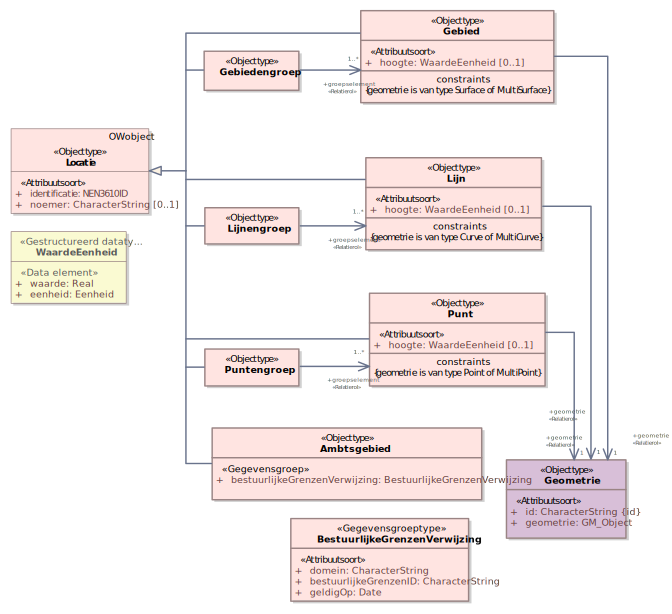Figuur 29Uitsnede uit IMOW-diagram voor objecttype Locatie
Locatie kent de volgende attributen:
identificatie: de unieke identificatie waaronder elk object van dit type bekend is. Identificatie conform datatype NEN3610-ID. Verplicht attribuut. Komt 1 keer voor. De identificatie moet de code (uit de STOP-waardelijst voor gemeente, waterschap, provincie of ministerie) bevatten van het bevoegd gezag dat het besluit neemt waarmee de Regeling wordt ingesteld of gewijzigd.
noemer: de mensleesbare term of frase waarmee een Locatie wordt aangeduid. Optioneel attribuut. Komt 0 of 1 keer voor.
Locatie kent zeven verschijningsvormen:
Gebied: op zichzelf staande geometrisch afgebakende ‘ruimte’ in een virtuele weergave van de fysieke leefomgeving. De geometrische afbakening is juridisch van aard. Gebied heeft alle attributen van Locatie, aangevuld met:
hoogte: de hoogte waarop het Gebied ligt of de hoogte binnen het Gebied waarop de Juridische regel of het Tekstdeel van toepassing is. Optioneel attribuut. Komt 0 of 1 keer voor. Wordt vastgelegd met WaardeEenheid, dat bestaat uit de volgende elementen:
waarde: de numerieke waarde van de hoogte. Verplicht element indien het attribuut hoogte wordt gebruikt.
eenheid: de grootheid waarin de hoogte wordt uitgedrukt. Voor eenheid wordt gebruik gemaakt van de waardelijst 'Eenheid’. Verplicht element indien het attribuut hoogte wordt gebruikt.
geometrie: de verwijzing van een specifiek Gebied naar (de identificatie van) de bijbehorende Geometrie. Verplicht attribuut. Komt 1 keer voor.
Gebiedengroep: een groep of verzameling van bij elkaar behorende Gebieden, die samen de Locatie vormen. Gebiedengroep heeft alle attributen van Locatie, aangevuld met:
groepselement: de verwijzing van een Gebiedengroep naar de Gebieden die samen de Gebiedengroep vormen. Verplicht attribuut. Komt ten minste 1 keer voor.
Lijn: op zichzelf staande geometrisch afgebakende lijnlocatie in een virtuele weergave van de fysieke leefomgeving. De geometrische afbakening is juridisch van aard. Lijn heeft alle attributen van Locatie, aangevuld met:
hoogte: de hoogte waarop de Lijn ligt. Optioneel attribuut. Komt 0 of 1 keer voor. Wordt vastgelegd met WaardeEenheid, dat bestaat uit de volgende elementen:
waarde: de numerieke waarde van de hoogte. Verplicht element indien het attribuut hoogte wordt gebruikt.
eenheid: de grootheid waarin de hoogte wordt uitgedrukt. Voor eenheid wordt gebruik gemaakt van de waardelijst 'Eenheid’. Verplicht element indien het attribuut hoogte wordt gebruikt.
geometrie: de verwijzing van een specifieke Lijn naar (de identificatie van) de bijbehorende Geometrie. Verplicht attribuut. Komt 1 keer voor.
Lijnengroep: een groep of verzameling van bij elkaar behorende Lijnen, die samen de Locatie vormen. Lijnengroep heeft alle attributen van Locatie, aangevuld met:
groepselement: de verwijzing van een Lijnengroep naar de Lijnen die samen de Lijnengroep vormen. Verplicht attribuut. Komt ten minste 1 keer voor.
Punt: op zichzelf staande geometrisch afgebakende puntlocatie in een virtuele weergave van de fysieke leefomgeving. De geometrische afbakening is juridisch van aard. Punt heeft alle attributen van Locatie, aangevuld met:
hoogte: de hoogte waarop de Punt ligt. Optioneel attribuut. Komt 0 of 1 keer voor. Wordt vastgelegd met WaardeEenheid, dat bestaat uit de volgende elementen:
waarde: de numerieke waarde van de hoogte. Verplicht element indien het attribuut hoogte wordt gebruikt.
eenheid: de grootheid waarin de hoogte wordt uitgedrukt. Voor eenheid wordt gebruik gemaakt van de waardelijst 'Eenheid’. Verplicht element indien het attribuut hoogte wordt gebruikt.
geometrie: de verwijzing van een specifieke Punt naar (de identificatie van) de bijbehorende Geometrie. Verplicht attribuut. Komt 1 keer voor.
Puntengroep: een groep of verzameling van bij elkaar behorende Punten, die samen de Locatie vormen. Puntengroep heeft alle attributen van Locatie, aangevuld met:
groepselement: de verwijzing van een Puntengroep naar de Punten die samen de Puntengroep vormen. Verplicht attribuut. Komt ten minste 1 keer voor.
Ambtsgebied: bijzondere vorm van Gebied, zijnde een op zichzelf staande geometrisch afgebakende ‘ruimte’ in een virtuele weergave van de fysieke leefomgeving, die samenvalt met het ambtsgebied van een bepaald bevoegd gezag: het gebied waarover dat bevoegd gezag de bevoegdheid tot regeling en bestuur heeft. Ambtsgebied heeft alle attributen van Locatie, aangevuld met:
bestuurlijkeGrenzenVerwijzing: attribuut dat de gegevens voor het doen van een verwijzing naar de bestuurlijkeGrenzen-voorziening bevat. bestuurlijkeGrenzenVerwijzing wordt ingevuld met de gegevensgroep BestuurlijkeGrenzenVerwijzing die de volgende attributen kent:
bestuurlijkeGrenzenID: de identificatie van het gebied in de bestuurlijkegrenzenvoorziening: de CBS-code respectievelijk de RVIG-code van het bevoegd gezag, inclusief de letteraanduiding in hoofdletters van de bestuurslaag;
domein: het onderdeel van de bestuurlijkeGrenzen-voorziening waarin de ambtsgebieden worden bijgehouden. Verplicht attribuut. Komt 1 keer voor. Wordt ingevuld met de verplichte waarde ‘NL.BI.BestuurlijkGebied’.
geldigOp: de datum waarop Ambtsgebied geldig is. Verplicht attribuut. Komt 1 keer voor. De verwijzing is altijd statisch: met de Locatie Ambtsgebied wordt bedoeld het ambtsgebied zoals dat gold op de ingevulde datum.
Locatie kent geen waardelijsten.
Locatie kent de volgende constraints:
(bij Gebied): geometrie is van type Surface of MultiSurface;
(bij Lijn): geometrie is van type Curve of MultiCurve;
(bij Punt): geometrie is van type Point of MultiPoint.
Werkafspraak
Tot anders is bepaald in een volgende versie van dit toepassingsprofiel dan wel in een nader bericht van de beheerder van de TPOD-Standaard geldt de volgende werkafspraak:
Gebruik het attribuut hoogte niet.
7.6.5 Toelichting op de norm
noemer: de mensleesbare term of frase waarmee de Locatie wordt aangeduid en beschreven, waardoor er, indien relevant, naar de Locatie kan worden verwezen. Let op: de noemer is niet altijd gelijk aan de naam van het GIO. Het gebruik van noemer is optioneel omdat een noemer niet altijd zinvol is en omdat er Locaties zijn die niet met een term of frase te benoemen zijn. Dat geldt bijvoorbeeld voor de losse Locaties binnen een Gebiedengroep. Voorbeelden van noemer voor omgevingsplan respectievelijk omgevingsverordening, waarbij de noemer in cursieve tekst is weergegeven, zijn: Ter plaatse van de functie Levendig stadscentrum zijn de volgende activiteiten toegestaan. Nieuwe luidruchtige activiteiten en gedragingen zijn in een stiltegebied verboden. Locatie kan de locatie zijn van een Juridische regel of Tekstdeel (en daarmee, al dan niet samen met andere Locaties, het werkingsgebied van de Regeltekst, de Divisie of de Divisietekst), en/of de Locatie van een van de domeinspecifieke annotaties Activiteit, Gebiedsaanwijzing, Omgevingsnorm en Omgevingswaarde. Het hangt af van het objecttype waarmee de Locatie wordt gecombineerd of het gebruik van het attribuut noemer zinvol is of niet. Bij de beschrijving van die objecttypen wordt dit aangegeven.
hoogte: optioneel attribuut waarmee voor Gebied, Lijn en Punt de hoogteligging kan worden vastgelegd. hoogte wordt vastgelegd met WaardeEenheid, dat bestaat uit de elementen waarde en eenheid. waarde legt de hoogte in een getal vast, eenheid geeft aan in welke grootheid de hoogte moet worden gemeten. Voor eenheid wordt gebruik gemaakt van de waardelijst 'Eenheid’. Het gebruik van het attribuut hoogte maakt een (zeer beperkte) benadering van 3D mogelijk. hoogte kan bijvoorbeeld worden gebruikt om van (de omgevingswaarde) geluidproductieplafonds aan te geven op welke hoogte ze gelden; in dat geval wordt de eenheid meter gekozen.
geometrie: attribuut dat de verwijzing bevat van een specifiek Gebied, Lijn of Punt naar de identificatie van de bijbehorende Geometrie. Dit attribuut legt dus vast dat deze Geometrie bij het betreffende Gebied, Lijn of Punt hoort. Bij Ambtsgebied kan er geen geometrie worden meegeleverd.
bestuurlijkeGrenzenVerwijzing: attribuut waardoor DSO-LV weet dat de inhoud van dit object te vinden is in een andere voorziening, alleen te gebruiken bij Ambtsgebied. Het bijhouden van het Ambtsgebied gebeurt in de bestuurlijkeGrenzen-voorziening. Het attribuut bestuurlijkeGrenzenVerwijzing maakt gebruik van de gegevensgroep BestuurlijkeGrenzenVerwijzing. In het navolgende worden de attributen van BestuurlijkeGrenzenVerwijzing toegelicht.
bestuurlijkeGrenzenID: de identificatie van het Ambtsgebied. Deze is gelijk aan de bevoegd-gezag-code. Voor gemeenten, provincies en waterschappen is dat de CBS-code, inclusief de letteraanduiding van de bestuurslaag. Een voorbeeld daarvan is GM0297 voor de gemeente Zaltbommel. Voor het Rijk wordt de RVIG-code gehanteerd. Aan de hand van deze code weet DSO-LV van welk bevoegd gezag het ambtsgebied uit de bestuurlijkeGrenzen-voorziening getoond moet worden
domein: attribuut dat aangeeft welke van de onderdelen van de bestuurlijkeGrenzen-voorziening moet worden bevraagd: het bestuurlijk gebied;
geldigOp: attribuut waardoor DSO-LV weet welke versie van het ambtsgebied getoond moet worden: het Ambtsgebied zoals dat geldig was op de ingevulde datum. Wanneer naar aanleiding van een bestuurlijke herindeling of andere grenscorrectie het ambtsgebied is gewijzigd, kan met een wijzigingsbesluit het Ambtsgebied-object gewijzigd worden door de geldigOp-datum van de bestuurlijkeGrenzenVerwijzing te wijzigen.
Met uitzondering van Locatie in de verschijningsvorm van Ambtsgebied wordt Locatie altijd vastgelegd in een GIO.
Ambtsgebied
Het Ambtsgebied-object wordt alleen aangeleverd als dat noodzakelijk is: de eerste keer dat in een Regeling het Ambtsgebied de Locatie is van een regel én wanneer naar aanleiding van een bestuurlijke herindeling of andere grenscorrectie in een wijzigingsbesluit het Ambtsgebied wordt gewijzigd naar een nieuwe versie van dat Ambtsgebied.
Uitgangspunt van regelgeving over de bekendmaking van besluiten is dat informatie die niet op een begrijpelijke manier in tekst te beschrijven is, wordt vastgelegd in een informatieobject. Daarom wordt de locatie waar een regel (of beleid) geldig is, vastgelegd met een GIO. Op deze manier is de locatie permanent terug te vinden en is de onveranderlijkheid van de locatie gewaarborgd (zie ook paragraaf 6.1.2.1). Door het nemen van het besluit stelt het bevoegd gezag het GIO vast en ‘ontstaat’ de locatie. Wanneer een regel geldt voor het hele ambtsgebied van het bevoegd gezag wordt het niet passend geacht als het bevoegd gezag dat ambtsgebied in de vorm van een GIO vast zou stellen. Ambtsgebieden worden immers door andere wetgeving (en in de meeste gevallen door een ander bevoegd gezag) vastgesteld. Daarom wordt Ambtsgebied als verschijningsvorm van Locatie niet vastgelegd met het object Geometrie en niet vastgesteld in de vorm van een GIO, maar neemt het bevoegd gezag een verwijzing op naar het eigen ambtsgebied in de bestuurlijkeGrenzen-voorziening. Dit is de voorziening waarin de door die andere wetgeving vastgestelde bestuurlijke grenzen worden vastgelegd en beheerd. Aangezien Ambtsgebied niet wordt vastgelegd met het object Geometrie en niet door het bevoegd gezag wordt vastgesteld, kent het niet de attributen geometrie en hoogte.
Bij het gebruik van Ambtsgebied als Locatie van een regel of beleid wordt altijd statisch verwezen naar het Ambtsgebied. Dat is nodig om bij een eventuele toekomstige bestuurlijke herindeling de overgang naar de nieuwe indeling te kunnen maken.
Aanbevolen wordt om, als het de bedoeling is dat een regel of (beleids)tekst geldt voor het hele ambtsgebied, vanuit de Juridische regel of het Tekstdeel te verwijzen naar (de identificatie van) het ambtsgebied in de bestuurlijkeGrenzen-voorziening. Het is echter mogelijk om in zo’n geval gebruik te maken van een zelf gecreëerde Locatie. Het is dan aan het bevoegd gezag om er voor te zorgen dat de geometrie van die zelf gecreëerde Locatie exact samenvalt met de geometrie van het ambtsgebied in de bestuurlijkeGrenzen-voorziening. Dat kan door een kopie te maken van de geometrie van het ambtsgebied in de bestuurlijkeGrenzen-voorziening. Het aanleveren van een onjuiste geometrie heeft gevolgen voor de vindbaarheid van regels op locatie in DSO-LV.
Locatie kent geen waardelijsten.
Constraints
Locatie heeft drie constraints:
(bij Gebied): geometrie is van type Surface of MultiSurface;
(bij Lijn): geometrie is van type Curve of MultiCurve;
(bij Punt): geometrie is van type Point of MultiPoint.
Deze constraints betekenen enerzijds -tamelijk voor de hand liggend- dat de Locatieverschijningsvorm Gebied alleen mag verwijzen naar vlak-geometrieën en niet naar punt- of lijn-geometrieën, dat de Locatieverschijningsvorm Lijn alleen mag verwijzen naar lijn-geometrieën en niet naar punt- of vlak-geometrieën en dat de Locatieverschijningsvorm Punt alleen mag verwijzen naar punt-geometrieën en niet naar vlak- of lijn-geometrieën. Anderzijds betekenen de constraints dat gekozen moet worden tussen de enkelvoudige en de multivariant van de geometrietypen. Zoals in paragraaf 7.6.1 al is beschreven, worden bij de multivarianten meerdere vlakken (of lijnen of punten) samengevoegd tot één onlosmakelijk geheel en moeten de multivarianten alleen gekozen worden als het daadwerkelijk de bedoeling is dat er één onlosmakelijk geheel ontstaat.
Let ook op de regels voor het verwijzen van een OW-object naar een ander OW-object in paragraaf 7.13.2.1, met name over het verwijzen naar een OW-object behorend bij een andere Regeling en over het verwijzen van en naar een OW-object in een tijdelijk regelingdeel.
Toelichting op werkafspraak
hoogte is het attribuut van Locatie waarmee voor Gebied, Lijn en Punt de hoogteligging kan worden vastgelegd. STOP kent hoogte niet, het is geen kenmerk van het GIO. Daardoor kan de hoogte niet bekendgemaakt worden en heeft het geen juridische werking.
Daarom geldt, totdat in een volgende versie van dit toepassingsprofiel dan wel in een nader bericht van de beheerder van de TPOD-Standaard anders is bepaald, de werkafspraak ‘Gebruik het attribuut hoogte niet’.
7.7 Objecttype Geometrie
7.7.1 Toelichting op de toepassing
Met uitzondering van Ambtsgebied worden de in de vorige paragraaf besproken typen van Locatie vastgelegd met Geometrie. Het object Geometrie legt de positie en vorm van een Gebied, Lijn of Punt vast door middel van coördinaten om het te kunnen begrenzen en op een kaart op de juiste positie te kunnen weergeven. Geometrie wordt door zowel IMOW als STOP gebruikt. Geometrie wordt vastgelegd in de vorm van een GML-bestand dat in het GIO wordt opgenomen.
7.7.2 Definitie
Geometrie is het object dat de geometrische bepaling van een Gebied, Lijn of Punt door middel van coördinaten bevat.
7.7.3 Doel
Doel van het objecttype Geometrie is:
het vastleggen en begrenzen van Locatie door middel van coördinaten ten behoeve van het publiceren van geo-informatieobjecten;
het op een kaart of in een viewer op de juiste positie weergeven van Locaties.
7.7.4 Norm
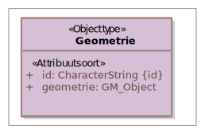Figuur 30Uitsnede uit IMOW-diagram voor objecttype Geometrie
Geometrie kent de volgende attributen:
id: het identificerend attribuut dat gebruikt wordt om naar de Geometrie te verwijzen. Verplicht attribuut. Komt 1 keer voor.
geometrie: het attribuut dat de coördinaten van de Geometrie bevat. Verplicht attribuut. Komt 1 keer voor.
Geometrie kent geen waardelijsten en constraints.
7.7.5 Toelichting op de norm
geometrie: dit attribuut bevat de coördinaten van de Geometrie. De geometrische typen die gebruikt worden binnen dit attribuut dienen overeen te komen met de gekozen verschijningsvorm van Locatie. Zie hiervoor de constraints bij het objecttype Locatie. Deze constraints zijn beschreven in paragraaf 7.6.4 en toegelicht in paragraaf 7.6.5.
Let ook op de regels voor het verwijzen van een OW-object naar een ander OW-object in paragraaf 7.13.2.1, met name over het verwijzen naar een OW-object behorend bij een andere Regeling en over het verwijzen van en naar een OW-object in een tijdelijk regelingdeel.
7.8 Objecttype Gebiedsaanwijzing
7.8.1 Toelichting op de toepassing
In omgevingsdocumenten worden gebieden benoemd waarover regels worden gesteld respectievelijk beleids- of uitvoeringsaspecten worden vastgelegd. Met het objecttype Gebiedsaanwijzing kunnen die gebieden op een kaart worden weergeven, op een zodanige manier dat duidelijk is waar de regel of het beleids- of uitvoeringsaspect over gaat. Ook maakt Gebiedsaanwijzing het mogelijk om in een viewer een selectie te maken van bepaalde gebieden.
Het objecttype Gebiedsaanwijzing is een generiek objecttype. Het is generiek gemodelleerd om voldoende flexibiliteit te bieden voor toekomstige ontwikkelingen. Het wordt specifiek gemaakt door het attribuut type, dat gekozen wordt uit een limitatieve waardelijst. Nieuwe typen gebieden kunnen worden aangewezen doordat (na een wijzigingsproces) nieuwe waarden aan de waardelijst voor type worden toegevoegd; het is dus niet nodig om extra objecttypen aan het informatiemodel toe te voegen.
De waardelijst voor de Gebiedsaanwijzingtypen bevat nu 19 waarden. Ze zijn onder te verdelen in sectorale en niet-sectorale typen, zoals is aangegeven in Tabel 6.
Tabel 6De Gebiedsaanwijzingtypen, onderverdeeld in sectoraal en niet-sectoraal
Sectorale Gebiedsaanwijzingtypen
Niet-sectorale Gebiedsaanwijzingtypen
Bodem
Landschap
Beperkingengebied
Bouw
Leiding
Functie
Defensie
Lucht
Ruimtelijk gebruik
Energievoorziening
Mijnbouw
Erfgoed
Natuur
Externe veiligheid
Recreatie
Geluid
Verkeer
Geur
Water en watersysteem
7.8.1.1 Onderscheid tussen sectorale en niet-sectorale Gebiedsaanwijzingtypen
Met de sectorale Gebiedsaanwijzingtypen wordt aangegeven voor welk aspect van de fysieke leefomgeving een gebied wordt aangewezen. Ze zijn bedoeld om gebieden waarover regels respectievelijk beleidsuitspraken met een sterk sectoraal karakter worden gesteld c.q. gedaan, in een viewer op een kaartbeeld weer te kunnen geven en er zoek- en selecteeracties mee te kunnen doen.
De drie typen Functie, Beperkingengebied en Ruimtelijk gebruik zijn niet bedoeld om een gebied voor een aspect van de fysieke leefomgeving aan te wijzen, maar hebben een ander karakter. De Gebiedsaanwijzing van het type Functie is bedoeld voor de situatie waarin het bevoegd gezag er voor kiest om de evenwichtige toedeling van functies aan locaties niet alleen als abstract criterium te hanteren maar om het resultaat daarvan ook (geheel of gedeeltelijk) op een kaart weer te geven, vergelijkbaar met het in het bestemmingsplan aanwijzen van de bestemming van gronden op grond van de Wet ruimtelijke ordening. Dit type kan alleen in het omgevingsplan en de omgevingsverordening toegepast worden. Het Gebiedsaanwijzingtype Beperkingengebied is specifiek bedoeld voor het aanwijzen van beperkingengebieden: gebieden waar regels gelden over activiteiten die gevolgen hebben of kunnen hebben voor een bepaald, in dat gebied aanwezig, werk of object. Dit type kan alleen toegepast worden in omgevingsdocumenten waarvan in de Omgevingswet is bepaald dat ze beperkingengebieden kunnen aanwijzen en/of regels over beperkingengebiedactiviteiten kunnen bevatten. Het Gebiedsaanwijzingtype Ruimtelijk gebruik is enerzijds bedoeld om provincies in staat te stellen om hun niet-sectorale regels in een viewer op een kaartbeeld weer te geven. Anderzijds sluit het aan bij de door de VNG ontwikkelde staalkaarten voor het omgevingsplan en stelt het gemeenten in staat om tot een ordening van (combinaties van) activiteiten te komen, als alternatief voor het werken met functies.
7.8.1.2 Gebruik van Gebiedsaanwijzingtypen per omgevingsdocument
Niet ieder type Gebiedsaanwijzing kan in ieder omgevingsdocument worden gebruikt, zie bijvoorbeeld wat hiervoor al is aangegeven over het type Beperkingengebied. Daarnaast zijn er Gebiedsaanwijzingtypen waarvan het gebruik in het ene omgevingsdocument meer voor de hand ligt dan in het andere. Provincies worden geacht terughoudend te zijn met het toedelen van functies. Wanneer Rijk en provincies zelf gebiedsgerichte regels stellen, gebruiken ze daarvoor primair de sectorale Gebiedsaanwijzingtypen. Dat geldt ook voor de waterschappen. Omgekeerd ligt het in de rede dat gemeenten in het omgevingsplan terughoudend zijn bij het gebruik van de sectorale Gebiedsaanwijzingtypen. Hen wordt aangeraden voor dat instrument primair gebruik te maken van de Gebiedsaanwijzingtypen Functie en Ruimtelijk gebruik. Tabel 7 geeft inzicht in het beoogde gebruik van de Gebiedsaanwijzingtypen.
Tabel 7Gebruik van de Gebiedsaanwijzingtypen in de verschillende omgevingsdocumenten
Omgevingsdocument/ soort regeling
→
AMvB/ MR
Omgevingsverordening
Waterschapsverordening
Omgevingsplan
Omgevingsvisie
Projectbesluit vrijetekstdeel
Omgevingsplanregels uit een projectbesluit[10] Dit zijn de regels in het tijdelijk regelingdeel waarmee het projectbesluit een omgevingsplan wijzigt
Voorbeschermingsregels omgevingsverordening
Voorbeschermingsregels omgevingsplan
Programma
Natura 2000-besluiten
Gebiedsaanwijzingtype
↓
Beperkingengebied
√
√
√
√
X
X
√
√
√
X
X
Bodem
√
√
T
T
√
√
T
√
T
√
X
Bouw
X
X
X
√
X
X
√
X
√
X
X
Defensie
√
√
X
T
√
√
T
√
T
√
X
Energievoorziening
√
√
T
T
√
√
T
√
T
√
X
Erfgoed
√
√
T
T
√
√
T
√
T
√
X
Externe veiligheid
√
√
X
√
√
√
√
√
√
√
X
Functie
X
T
X
√
X
X
√
T
√
X
X
Geluid
√
√
T
√
√
√
√
√
√
√
X
Geur
√
√
X
√
√
√
√
√
√
√
X
Landschap
√
√
T
T
√
√
T
√
T
√
X
Leiding
√
√
T
T
√
√
T
√
T
√
X
Lucht
√
√
X
T
√
√
T
√
T
√
X
Mijnbouw
√
√
X
T
√
√
T
√
T
√
X
Natuur
√
√
T
√
√
√
√
√
√
√
√
Recreatie
√
√
X
T
√
√
T
√
T
√
X
Ruimtelijk gebruik
√
√
X
√
√
√
√
√
√
√
X
Verkeer
√
√
T
T
√
√
T
√
T
√
X
Water en watersysteem
√
√
√
T
√
√
T
√
T
√
X
Tabel 8Legenda
√
Kan gebruikt worden in dit omgevingsdocument
T
Terughoudend gebruik
X
Kan niet gebruikt worden in dit omgevingsdocument
7.8.1.3 Combinatie van Gebiedsaanwijzing met objecttypen voor tekst
Het objecttype Gebiedsaanwijzing worden altijd toegepast in combinatie met een locatie en tekst. In het geval van omgevingsdocumenten met Vrijetekststructuur wordt de Gebiedsaanwijzing gecombineerd met het tekst-object Tekstdeel. In omgevingsdocumenten met Vrijetekststructuur kan geannoteerd worden op het niveau van het element dat inhoud bevat (Divisietekst) én op het niveau van het structuurelement (Divisie). Het annoteren met het objecttype Gebiedsaanwijzing ligt het meeste voor de hand op het niveau van het element dat inhoud bevat: Divisietekst. Het annoteren van Locatie bij een Tekstdeel is optioneel. Let op dat het niet annoteren van Locatie bij een Tekstdeel tot gevolg heeft dat het ook niet mogelijk is om dat Tekstdeel te annoteren met Gebiedsaanwijzing. Bij omgevingsdocumenten met Artikelstructuur wordt de Gebiedsaanwijzing gecombineerd met het tekst-object Juridische regel. De Gebiedsaanwijzing kan gecombineerd worden met alle typen Juridische regel. Dat maakt het mogelijk om met een Gebiedsaanwijzing een gebied aan te wijzen waarvoor een rechtstreeks werkende regel (dus een Juridische regel van het type Regel voor iedereen) wordt gesteld. Ook kan Gebiedsaanwijzing worden gebruikt om duidelijk te maken dat een instructieregel over een bepaald type gebied gaat waarbij dat gebied ook in de Juridische regel van de instructieregel wordt benoemd. Tot slot is het ook mogelijk om een omgevingswaarderegel, naast de annotatie met Omgevingswaarde, ook te annoteren met een Gebiedsaanwijzing.
7.8.1.4 Weergave op de kaart
Op voorhand is niet te zeggen hoeveel en welke specifieke vormen van een bepaald Gebiedsaanwijzingtype in de verschillende omgevingsdocumenten begrensd zullen worden, het is mogelijk dat het er veel verschillende zullen zijn. Er is geen symbolisatie (kleur, arcering, lijnstijl) voorhanden die een grote hoeveelheid verschillende specifieke vormen van een type kan weergeven op een manier die voor het menselijk oog voldoende onderscheidend is. Daarom heeft niet iedere individuele Gebiedsaanwijzing een eigen symbolisatie, maar is er een (standaard)symbolisatie per groep bij elkaar horende Gebiedsaanwijzingen van een bepaald type. Daarvoor heeft Gebiedsaanwijzing het attribuut groep en is er voor ieder Gebiedsaanwijzingtype een (limitatieve) waardelijst voor de groep. Het bevoegd gezag kiest een eigen naam voor de individuele Gebiedsaanwijzing van een bepaald type en kiest voor het attribuut groep uit de waardelijst de waarde die het meest overeenkomt met de bedoeling van die Gebiedsaanwijzing. Hierdoor kunnen de Locaties van alle specifieke vormen van dat type Gebiedsaanwijzing in een (interactieve) viewer met de standaardweergave worden weergegeven op een kaart. Een voorbeeld van het Gebiedsaanwijzingtype Functie om het gebruik van Gebiedsaanwijzing te verduidelijken: De functie supermarkt (naam) hoort tot de functiegroep detailhandel (groep) van het Gebiedsaanwijzingtype Functie (type).
7.8.2 Definitie
Gebiedsaanwijzing is het objecttype voor het Lichaam van de Regeling van omgevingsdocumenten dat machineleesbaar maakt dat een Juridische regel of een Tekstdeel en de bijbehorende Locatie(s) een specifiek type gebied aanwijzen of over een specifiek type gebied gaan.
7.8.3 Doel
Doel van het generieke objecttype Gebiedsaanwijzing is het bieden van modelmatige flexibiliteit waardoor het toevoegen van nieuwe typen mogelijk is zonder modelwijziging.
Doel van de verschillende typen Gebiedsaanwijzing is:
machineleesbaar vastleggen dat een Juridische regel of Tekstdeel en de bijbehorende Locatie(s) gaan over een specifiek type gebied;
zodanig op een kaart weergeven van de Locaties waar de regels of het beleid over dat type gebied gelden, dat herkenbaar is over welk aspect ze gaan en er een legenda gemaakt kan worden;
kunnen filteren in een viewer of op een kaart.
7.8.4 Norm
Figuur 31Uitsnede uit IMOW-diagram voor objecttype GebiedsaanwijzingFiguur 32Groepen bij een aantal van de verschillende typen Gebiedsaanwijzing
Gebiedsaanwijzing kent de volgende attributen:
identificatie: de unieke identificatie waaronder elk object van dit type bekend is. Identificatie conform datatype NEN3610-ID. Verplicht attribuut. Komt 1 keer voor. De identificatie moet de code (uit de STOP-waardelijst voor gemeente, waterschap, provincie of ministerie) bevatten van het bevoegd gezag dat het besluit neemt waarmee de Regeling wordt ingesteld of gewijzigd.
type: het type Gebiedsaanwijzing. Te kiezen uit de limitatieve waardelijst ‘TypeGebiedsaanwijzing’. Verplicht attribuut. Komt 1 keer voor.
naam: de naam van de specifieke vorm van een bepaald type Gebiedsaanwijzing. Het bevoegd gezag is vrij in de keuze van de naam. Verplicht attribuut. Komt 1 keer voor.
groep: de categorie waartoe de specifieke vorm van een bepaald type Gebiedsaanwijzing behoort; attribuut dat de koppeling legt naar de standaardsymbolisatie van die categorie van de Gebiedsaanwijzing. Te kiezen uit de voor het betreffende type Gebiedsaanwijzing van toepassing zijnde limitatieve waardelijst ‘[TypeGebiedsaanwijzing]groep’ (waarbij op de plaats van [TypeGebiedsaanwijzing] het betreffende type Gebiedsaanwijzing wordt ingevuld). Verplicht attribuut. Komt 1 keer voor.
locatieaanduiding: de verwijzing van een specifieke vorm van een bepaald type Gebiedsaanwijzing naar de bijbehorende Locatie door middel van de identificatie van; attribuut waarmee de Locatie wordt aangeduid waar deze annotatie Gebiedsaanwijzing van toepassing is. Verplicht attribuut. Komt ten minste 1 keer voor. Gebiedsaanwijzing heeft één of meer Locaties en één of meer locatieaanduiding-relaties met Locatie.
Gebiedsaanwijzing kent geen constraints.
7.8.5 Toelichting op de norm
type: Gebiedsaanwijzing is een generiek objecttype dat gespecificeerd wordt naar type. Het type wordt vastgelegd met het attribuut type. De typen die gebruikt kunnen worden zijn opgenomen in de limitatieve waardelijst ‘TypeGebiedsaanwijzing’. Voorbeelden zijn: Beperkingengebied, Externe veiligheid en Functie.
naam: door het bevoegd gezag zelf te kiezen, er is geen waardelijst voor de naam van de gebiedsaanwijzingen. Het gaat hier om de naam van een specifiek voorkomen van een bepaald type gebiedsaanwijzing, bijvoorbeeld ‘Centrumgebied’ als voorkomen van het Gebiedsaanwijzingtype Functie of ‘Kantoorlocatie’ als voorkomen van het Gebiedsaanwijzingtype Ruimtelijk gebruik.
groep: om een groot aantal verschillende gebiedsaanwijzingen van een bepaald type op een kaartbeeld te kunnen weergeven op een manier die voor het menselijk oog voldoende onderscheidend is, wordt ieder type Gebiedsaanwijzing gebundeld in groepen. De groep vormt het kenmerk waarop de symbolisatie (kleur, arcering, lijnstijl) van de standaardweergave wordt georganiseerd. Ieder type Gebiedsaanwijzing heeft een eigen, limitatieve, waardelijst voor de groepen. Afhankelijk van het type wordt de bijbehorende waardelijst gekozen. Zie hiervoor ook de uitgebreidere toelichting in paragraaf 7.8.1.4.
locatieaanduiding: attribuut dat vastlegt dat deze Locatie de locatie is waar deze specifieke vorm van een bepaald type Gebiedsaanwijzing van toepassing is. Bij een specifieke vorm van een bepaald Gebiedsaanwijzingtype horen één of meer Locaties; per Locatie is er een locatieaanduiding. Uitgangspunt is dat het objecttype Gebiedsaanwijzing wordt gebruikt voor het aanwijzen van gebieden. In principe verwijst de locatieaanduiding van een Gebiedsaanwijzing altijd naar Locaties van de verschijningsvorm Gebied of Gebiedengroep (of eventueel Ambtsgebied). Er zijn echter gevallen waarin het wenselijk kan zijn om een Gebiedsaanwijzing te gebruiken voor het herkenbaar weergeven van lijnen. Een voorbeeld daarvan is het gebruik van de Gebiedsaanwijzing Bouw om in het omgevingsplan rooilijnen weer te geven. Het gebruik van het object Gebiedsaanwijzing in combinatie met punten ligt minder voor de hand, maar wordt niet uitgesloten.
Let ook op de regels voor het verwijzen van een OW-object naar een ander OW-object in paragraaf 7.13.2.1, met name over het verwijzen naar een OW-object behorend bij een andere Regeling en over het verwijzen van en naar een OW-object in een tijdelijk regelingdeel.
7.8.6 Aanbevelingen voor Locatie, noemer en naam GIO bij annoteren met Gebiedsaanwijzing
Een Gebiedsaanwijzing wordt aan de bijbehorende Locatie gekoppeld. De locaties verwijzen steeds naar één Geometrie, dit kan een Surface (vlak) maar ook een MultiSurface (multivlak) zijn. Aanbevelingen voor het gebruik van Locatie, noemer en naam GIO:
de Locatie is een Gebiedengroep;
de Locatie heeft een noemer;
de naam van de Gebiedsaanwijzing is hetzelfde als de naam van het GIO;
de naam van de Gebiedsaanwijzing (en daarmee ook van het GIO) moet in de tekst van de regel voorkomen;
de noemer van de Locatie is hetzelfde als de naam van de Gebiedsaanwijzing.
7.8.7 De typen Gebiedsaanwijzing
In het programma mogen uitsluitend de typen Gebiedsaanwijzing worden gebruikt die in deze paragraaf zijn opgenomen.
7.8.7.1 Bodem
7.8.7.1.1 Toelichting op de toepassing
De Gebiedsaanwijzing van het type Bodem wordt gebruikt voor gebieden waar specifieke regels met het oog op de bescherming van de bodemkwaliteit gelden, zoals bodembeheergebieden en stortplaatsen. De Gebiedsaanwijzing van het type Bodem kan ook worden gebruikt in visies en programma’s voor het aangeven van gebieden en objecten waar beleidsmatig bijzondere aandacht is voor de kwaliteit van de bodem, inclusief bodemdaling.
Provincies zullen de Gebiedsaanwijzing van het type Bodem onder andere gebruiken voor bodembeheergebieden, veenkoloniaal gebied, gesloten of voormalige stortplaatsen, bodemdalingsgebieden en zones die vrij moeten blijven van boringen en/of warmte-koude-opslag. Ook gemeenten zullen in omgevingsplan, omgevingsvisie en andere beleidsmatige instrumenten regels en beleid over bodemaspecten opnemen. Voor de beleidsmatige instrumenten kunnen zij gebruik maken van de Gebiedsaanwijzing van het type Bodem. Voor het omgevingsplan is het uitgangspunt dat zij bij voorkeur gebruik maken van de Gebiedsaanwijzing van het type Functie (en daarvan de relevante groep kiezen).
7.8.7.1.2 Definitie
De Gebiedsaanwijzing van het type Bodem is het objecttype dat machineleesbaar maakt dat een Juridische regel of een Tekstdeel en de bijbehorende Locatie(s) een gebied aanwijzen waar de regels of het beleid gericht zijn op de bescherming van de bodemkwaliteit.
7.8.7.2 Defensie
7.8.7.2.1 Toelichting op de toepassing
De Gebiedsaanwijzing van het type Defensie wordt gebruikt voor militaire gebieden, militaire objecten, (de omgeving van) schietterreinen en voor gebieden waar verstoring van radarapparatuur en zend- en ontvangstinstallaties moet worden voorkomen. Voor deze locaties worden bijzondere regels gesteld, onder andere door het Rijk. De Gebiedsaanwijzing van het type Defensie kan ook worden gebruikt in visies en programma’s voor het aangeven van gebieden en objecten waar beleidsmatig bijzondere aandacht is voor defensie. Ook gemeenten zullen in omgevingsplan, omgevingsvisie en andere beleidsmatige instrumenten beleid en regels over defensie opnemen. Voor de beleidsmatige instrumenten kunnen zij gebruik maken van de Gebiedsaanwijzing van het type Defensie. Voor het omgevingsplan is het uitgangspunt dat zij bij voorkeur gebruik maken van de Gebiedsaanwijzing van het type Functie (en daarvan de relevante groep kiezen).
7.8.7.2.2 Definitie
De Gebiedsaanwijzing van het type Defensie is het objecttype dat machineleesbaar maakt dat een Juridische regel of een Tekstdeel en de bijbehorende Locatie(s) een gebied aanwijzen waar de regels of het beleid gericht zijn op de effecten, de bescherming en het tegengaan van verstoring van militaire gebieden en objecten.
7.8.7.3 Energievoorziening
7.8.7.3.1 Toelichting op de toepassing
De Gebiedsaanwijzing van het type Energievoorziening wordt gebruikt voor gebieden waar specifieke regels gelden met het oog op de energievoorziening, bijvoorbeeld locaties voor kernenergie of hoogspanningsverbindingen. De Gebiedsaanwijzing Energievoorziening kan ook worden gebruikt in visies en programma’s voor het aangeven van gebieden en objecten waar beleidsmatig bijzondere aandacht is voor de energievoorziening, zoals zoeklocaties voor windenergie.
Provincies zullen de Gebiedsaanwijzing Energievoorziening onder andere gebruiken voor gebieden voor bodemenergie, windturbines, zonne-energie en duurzame energie. Ook gemeenten zullen in omgevingsplan, omgevingsvisie en andere beleidsmatige instrumenten beleid en regels over de energievoorziening opnemen. Voor de beleidsmatige instrumenten kunnen zij gebruik maken van de Gebiedsaanwijzing van het type Energievoorziening. Voor het omgevingsplan is het uitgangspunt dat zij bij voorkeur gebruik maken van de Gebiedsaanwijzing van het type Functie (en daarvan de relevante groep kiezen).
7.8.7.3.2 Definitie
De Gebiedsaanwijzing van het type Energievoorziening is het objecttype dat machineleesbaar maakt dat een Juridische regel of een Tekstdeel en de bijbehorende Locatie(s) een gebied aanwijzen waar de regels of het beleid gericht zijn op de bescherming en bevordering van de energievoorziening.
7.8.7.4 Erfgoed
7.8.7.4.1 Toelichting op de toepassing
De Gebiedsaanwijzing van het type Erfgoed wordt gebruikt voor het weergeven van gebieden en objecten waar specifieke regels gelden met het oog op de bescherming van (cultureel) erfgoed. Het gaat hierbij bijvoorbeeld om werelderfgoederen, beschermde stads- en dorpsgezichten, monumenten en waardevolle cultuurlandschappen. De Gebiedsaanwijzing van het type Erfgoed kan ook worden gebruikt in visies en programma’s voor het aangeven van gebieden en objecten waar beleidsmatig bijzondere aandacht is voor het erfgoed.
Provincies zullen de Gebiedsaanwijzing Erfgoed onder andere gebruiken voor archeologie, buitenplaatsen, cultuurhistorie, werelderfgoed en cultuurhistorisch waardevol gebied. Ook gemeenten zullen in omgevingsplan, omgevingsvisie en andere beleidsmatige instrumenten beleid en regels over erfgoed opnemen. Voor de beleidsmatige instrumenten kunnen zij gebruik maken van de Gebiedsaanwijzing van het type Erfgoed. Voor het omgevingsplan is het uitgangspunt dat zij bij voorkeur gebruik maken van de Gebiedsaanwijzing van het type Functie (en daarvan de relevante groep kiezen). Dat geldt in het bijzonder voor beschermde stads- en dorpsgezichten en voor (al dan niet voorbeschermde) gemeentelijke en provinciale monumenten. Die moeten worden geannoteerd met de Gebiedsaanwijzing van het type Functie, omdat uit Omgevingswet en Bbl blijkt dat de wetgever ervan uitgaat dat daarvoor de systematiek van functie-aanduiding in het omgevingsplan wordt toegepast.
7.8.7.4.2 Definitie
De Gebiedsaanwijzing van het type Erfgoed is het objecttype dat machineleesbaar maakt dat een Juridische regel of een Tekstdeel en de bijbehorende Locatie(s) een gebied aanwijzen waar de regels of het beleid gericht zijn op de bescherming van cultureel erfgoed.
7.8.7.5 Externe veiligheid
7.8.7.5.1 Toelichting op de toepassing
De Gebiedsaanwijzing van het type Externe veiligheid wordt gebruikt voor gebieden waar met het oog op het waarborgen van de veiligheid specifieke regels gelden. Het gaat hierbij met name om de aandachtsgebieden externe veiligheid (groepsrisico) en de afstanden voor het plaatsgebonden risico. Dit zijn gebieden rond risicovolle activiteiten waarvoor het rijk instructieregels heeft gesteld. De Gebiedsaanwijzing Externe veiligheid kan ook worden gebruikt in visies en programma’s voor het aangeven van gebieden en objecten waar beleidsmatig bijzondere aandacht is voor de externe veiligheid.
Provincies zullen de Gebiedsaanwijzing Externe veiligheid vooral gebruiken voor belemmeringengebieden en risicogebieden. Ook gemeenten zullen in omgevingsvisie en omgevingsplan beleid en regels over de externe veiligheid opnemen en kunnen daarvoor gebruik maken van de Gebiedsaanwijzing Externe veiligheid, bijvoorbeeld voor het in het omgevingsplan opnemen van bouwvoorschriftengebieden en aandachtsgebieden externe veiligheid. Voor het overige is uitgangspunt dat zij in het omgevingsplan bij voorkeur gebruik maken van de Gebiedsaanwijzing van het type Functie (en daarvan de relevante groep kiezen).
7.8.7.5.2 Definitie
De Gebiedsaanwijzing van het type Externe veiligheid is het objecttype dat machineleesbaar maakt dat een Juridische regel of een Tekstdeel en de bijbehorende Locatie(s) een gebied aanwijzen waar de regels of het beleid gericht zijn op het waarborgen van de veiligheid.
7.8.7.6 Geluid
7.8.7.6.1 Toelichting op de toepassing
De Gebiedsaanwijzing van het type Geluid wordt gebruikt voor gebieden waar met het oog op het tegengaan van geluidhinder specifieke regels gelden. De Gebiedsaanwijzing van het type Geluid kan ook worden gebruikt in visies en programma’s voor het aangeven van gebieden en objecten waar beleidsmatig bijzondere aandacht is voor geluid.
Provincies zullen de Gebiedsaanwijzing van het type Geluid vooral gebruiken voor het aanwijzen van stiltegebieden. Ook gemeenten zullen in omgevingsvisie en omgevingsplan beleid en regels over geluid opnemen en kunnen daarvoor gebruik maken van de Gebiedsaanwijzing van het type Geluid. Dat geldt in ieder geval voor het in het omgevingsplan aanwijzen van stille gebieden. Wanneer alle bestuurslagen voor het reguleren van stilte- en stille gebieden gebruik maken van de Gebiedsaanwijzing Geluid en de groep ‘stiltegebied’ kan dat de vindbaarheid van stilte- en stille gebieden bevorderen. Voor het overige is uitgangspunt dat in het omgevingsplan bij voorkeur gebruik gemaakt wordt van de Gebiedsaanwijzing van het type Functie (en daarvan de relevante groep kiezen).
7.8.7.6.2 Definitie
De Gebiedsaanwijzing van het type Geluid is het objecttype dat machineleesbaar maakt dat een Juridische regel of een Tekstdeel en de bijbehorende Locatie(s) een gebied aanwijzen waar de regels of het beleid gericht zijn op het tegengaan van geluidhinder.
7.8.7.7 Geur
7.8.7.7.1 Toelichting op de toepassing
De Gebiedsaanwijzing van het type Geur wordt gebruikt voor gebieden waar met het oog op het tegengaan van geurhinder specifieke regels gelden. Het gaat hierbij met name om de in het omgevingsplan aangewezen bebouwingscontour geur en om de reconstructiegebieden voor veehouderijen. De Gebiedsaanwijzing van het type Geur kan ook worden gebruikt in visies en programma’s voor het aangeven van gebieden en objecten waar beleidsmatig bijzondere aandacht is voor geur.
Gemeenten zullen in omgevingsplan, omgevingsvisie en andere beleidsmatige instrumenten regels en beleid over geur opnemen. Voor de beleidsmatige instrumenten kunnen zij gebruik maken van de Gebiedsaanwijzing van het type Geur. Voor het omgevingsplan is het uitgangspunt dat zij bij voorkeur gebruik maken van de Gebiedsaanwijzing van het type Functie (en daarvan de relevante groep kiezen).
7.8.7.7.2 Definitie
De Gebiedsaanwijzing van het type Geur is het objecttype dat machineleesbaar maakt dat een Juridische regel of een Tekstdeel en de bijbehorende Locatie(s) een gebied aanwijzen waar de regels of het beleid gericht zijn op het tegengaan van geurhinder.
7.8.7.8 Landschap
7.8.7.8.1 Toelichting op de toepassing
De Gebiedsaanwijzing van het type Landschap wordt gebruikt voor gebieden waar met het oog op de bescherming en de ontwikkeling van het landschap specifieke regels gelden. De Gebiedsaanwijzing van het type Landschap kan ook worden gebruikt in visies en programma’s voor het aangeven van gebieden en objecten waar beleidsmatig bijzondere aandacht is voor het landschap. Daar waar Landschap beschouwd en beschermd moet worden als Erfgoed wordt gebruik gemaakt van de Gebiedsaanwijzing van het type Erfgoed.
Gemeenten zullen in omgevingsplan, omgevingsvisie en andere beleidsmatige instrumenten regels en beleid over landschappen opnemen. Voor de beleidsmatige instrumenten kunnen zij gebruik maken van de Gebiedsaanwijzing van het type Landschap. Voor het omgevingsplan is het uitgangspunt dat zij bij voorkeur gebruik maken van de Gebiedsaanwijzing van het type Functie (en daarvan de relevante groep kiezen).
7.8.7.8.2 Definitie
De Gebiedsaanwijzing van het type Landschap is het objecttype dat machineleesbaar maakt dat een Juridische regel of een Tekstdeel en de bijbehorende Locatie(s) een gebied aanwijzen waar de regels of het beleid gericht zijn op de bescherming en de ontwikkeling van het landschap vanuit ander perspectief dan natuur en erfgoed.
7.8.7.9 Leiding
7.8.7.9.1 Toelichting op de toepassing
De Gebiedsaanwijzing van het type Leiding wordt gebruikt voor het weergeven van gebieden waar met het oog op het waarborgen van de goede staat en instandhouding van hoogspanningsverbindingen en (buis)leidingen specifieke regels gelden. Het kan ook gaan om het behouden van ruimte voor toekomstige verbindingen. De Gebiedsaanwijzing van het type Leiding kan ook worden gebruikt in visies en programma’s voor het aangeven van gebieden en objecten waar beleidsmatig bijzondere aandacht is voor de leiding, bijvoorbeeld als zoekgebied voor toekomstige tracés.
Gemeenten zullen in omgevingsplan, omgevingsvisie en andere beleidsmatige instrumenten regels en beleid over kabels en leidingen opnemen. Voor de beleidsmatige instrumenten kunnen zij gebruik maken van de Gebiedsaanwijzing van het type Leiding. Voor het omgevingsplan is het uitgangspunt dat zij bij voorkeur gebruik maken van de Gebiedsaanwijzing van het type Functie (en daarvan de relevante groep kiezen).
7.8.7.9.2 Definitie
De Gebiedsaanwijzing van het type Leiding is het objecttype dat machineleesbaar maakt dat een Juridische regel of een Tekstdeel en de bijbehorende Locatie(s) een gebied aanwijzen waar de regels of het beleid gericht zijn op het waarborgen van de goede staat en instandhouding van leidingen.
7.8.7.10 Lucht
7.8.7.10.1 Toelichting op de toepassing
De Gebiedsaanwijzing van het type Lucht wordt gebruikt voor gebieden waar met het oog op het beschermen van de kwaliteit van de buitenlucht specifieke regels gelden. Het gaat hierbij in elk geval om de gebieden die in het Besluit kwaliteit leefomgeving zijn aangewezen als gebieden waar niet kan worden uitgesloten dat er sprake is een van dreigende overschrijding van de rijksomgevingswaarden voor de kwaliteit van de buitenlucht. De Gebiedsaanwijzing van het type Lucht kan ook worden gebruikt in visies en programma’s voor het aangeven van gebieden en objecten waar beleidsmatig bijzondere aandacht is voor de kwaliteit van de buitenlucht.
Provincies zullen de Gebiedsaanwijzing van het type Lucht vooral gebruiken bij het stellen van regels over varend ontgassen. Ook gemeenten zullen in omgevingsplan, omgevingsvisie en andere beleidsmatige instrumenten regels en beleid en regels over (de kwaliteit van) lucht opnemen. Voor de beleidsmatige instrumenten kunnen zij gebruik maken van de Gebiedsaanwijzing van het type Lucht. Voor het omgevingsplan is het uitgangspunt dat zij bij voorkeur gebruik maken van de Gebiedsaanwijzing van het type Functie (en daarvan de relevante groep kiezen).
7.8.7.10.2 Definitie
De Gebiedsaanwijzing van het type Lucht is het objecttype dat machineleesbaar maakt dat een Juridische regel of een Tekstdeel en de bijbehorende Locatie(s) een gebied aanwijzen waar de regels of het beleid gericht zijn op de bescherming van de kwaliteit van de buitenlucht.
7.8.7.11 Mijnbouw
7.8.7.11.1 Toelichting op de toepassing
De Gebiedsaanwijzing van het type Mijnbouw wordt gebruikt voor gebieden waar met het oog op het kunnen uitvoeren van mijnbouwactiviteiten specifieke regels gelden. De Gebiedsaanwijzing van het type Mijnbouw kan ook worden gebruikt in visies en programma’s voor het aangeven van gebieden en objecten waar beleidsmatig bijzondere aandacht is voor de mijnbouw.
Provincies zullen de Gebiedsaanwijzing van het type Mijnbouw onder andere gebruiken voor beleid en het stellen van regels over de winning van schaliegas. Ook gemeenten zullen in omgevingsplan, omgevingsvisie en andere beleidsmatige instrumenten regels en beleid over de mijnbouw opnemen. Voor de beleidsmatige instrumenten kunnen zij gebruik maken van de Gebiedsaanwijzing van het type Mijnbouw. Voor het omgevingsplan is het uitgangspunt dat zij bij voorkeur gebruik maken van de Gebiedsaanwijzing van het type Functie (en daarvan de relevante groep kiezen).
7.8.7.11.2 Definitie
De Gebiedsaanwijzing van het type Mijnbouw is het objecttype dat machineleesbaar maakt dat een Juridische regel of een Tekstdeel en de bijbehorende Locatie(s) een gebied aanwijzen waar de regels of het beleid gericht zijn op het kunnen verrichten van mijnbouwactiviteiten.
7.8.7.12 Natuur
7.8.7.12.1 Toelichting op de toepassing
De Gebiedsaanwijzing van het type Natuur wordt gebruikt voor gebieden waar specifieke regels respectievelijk beleid voor de bescherming van de natuur gelden. De Omgevingswet verplicht ertoe om bepaalde gebieden en landschappen aan te wijzen. Het gaat dan bijvoorbeeld om Natura 2000-gebieden, gebieden behorend tot het natuurnetwerk Nederland, nationale parken en bijzondere nationale en provinciale natuurgebieden. Doelen van die aanwijzingen zijn het behoud of herstel van dier- en plantensoorten, van hun biotopen en (natuurlijke) habitats en de preventie en beheersing van de introductie en verspreiding van invasieve uitheemse soorten. Deze gebieden zullen worden aangewezen bij specifieke aanwijzingsbesluiten respectievelijk bij omgevingsverordening. In de omgevingsvisies en programma’s van het Rijk en de provincies zullen de beleidsuitgangspunten en doelstellingen voor de aanwijzing van die gebieden beschreven worden. Ook voor andere gebieden zal, ter bescherming van de natuur, beleid geformuleerd worden en regels gesteld worden. Dat doen in ieder geval Rijk en provincie. Ook gemeenten zullen in omgevingsplan, omgevingsvisie en andere beleidsmatige instrumenten regels en beleid over natuur opnemen. Voor de beleidsmatige instrumenten kunnen zij gebruik maken van de Gebiedsaanwijzing van het type Natuur. Voor het omgevingsplan is het uitgangspunt dat zij bij voorkeur gebruik maken van de Gebiedsaanwijzing van het type Functie (en daarvan de relevante groep kiezen).
7.8.7.12.2 Definitie
De Gebiedsaanwijzing van het type Natuur is het objecttype dat machineleesbaar maakt dat een Juridische regel of een Tekstdeel en de bijbehorende Locatie(s) een gebied aanwijzen waar de regels of het beleid gericht zijn op de bescherming van natuur en landschap.
7.8.7.13 Recreatie
7.8.7.13.1 Toelichting op de toepassing
De Gebiedsaanwijzing van het type Recreatie wordt gebruikt voor gebieden waar specifieke regels gelden met het oog op recreatie, bijvoorbeeld locaties waar verblijfsrecreatie wel of juist niet is toegestaan. De Gebiedsaanwijzing van het type Recreatie kan ook worden gebruikt in visies en programma’s voor het aangeven van gebieden en objecten waar beleidsmatig bijzondere aandacht is voor recreatie.
Provincies zullen de Gebiedsaanwijzing van het type Recreatie onder andere gebruiken voor beleid en regels over verblijfsrecreatie en kleinschalige vormen van recreatie. Ook gemeenten zullen in omgevingsplan, omgevingsvisie en andere beleidsmatige instrumenten regels en beleid over recreatie opnemen. Voor de beleidsmatige instrumenten kunnen zij gebruik maken van de Gebiedsaanwijzing van het type Recreatie. Voor het omgevingsplan is het uitgangspunt dat zij bij voorkeur gebruik maken van de Gebiedsaanwijzing van het type Functie (en daarvan de relevante groep kiezen).
7.8.7.13.2 Definitie
De Gebiedsaanwijzing van het type Recreatie is het objecttype dat machineleesbaar maakt dat een Juridische regel of een Tekstdeel en de bijbehorende Locatie(s) een gebied aanwijzen waar de regels of het beleid gericht zijn op de beheersing en ontwikkeling van recreatie.
7.8.7.14 Ruimtelijk gebruik
7.8.7.14.1 Toelichting op de toepassing
De Gebiedsaanwijzing van het type Ruimtelijk gebruik wordt gebruikt voor gebieden waarvoor beleid en regels gesteld worden over die vormen van ruimtelijk gebruik die niet onder een van de andere Gebiedsaanwijzingtypen te vatten zijn. Het gaat hierbij met name om specifieke stedelijke, landelijke, en recreatieve gebieden waar beperkingen gelden, maar eventueel ook ruimtelijke ontwikkeling mogelijk is. De Gebiedsaanwijzing van het type Ruimtelijk gebruik kan ook worden gebruikt in visies en programma’s voor het aangeven van gebieden waarvoor het ruimtelijk gebruik beleidsmatig bijzondere aandacht vereist.
Provincies zullen de Gebiedsaanwijzing van het type Ruimtelijk gebruik met name benutten voor het aangeven van specifieke vormen van ruimtelijk gebruik, zoals bebouwingscontouren, bedrijventerreinen, detailhandel, kantoorlocaties, landbouw en veehouderij. Voor gemeenten biedt de Gebiedsaanwijzing van het type Ruimtelijk gebruik de mogelijkheid om een generalisatie van het feitelijke ruimtelijke gebruik weer te geven voor het gemeentelijke grondgebied of delen daarvan. Dit type Gebiedsaanwijzing geeft ook aansluiting bij de door de VNG ontwikkelde staalkaarten voor het omgevingsplan. Een voorbeeld daarvan is ‘stedelijk gebied-buiten centrum’.
7.8.7.14.2 Definitie
De Gebiedsaanwijzing van het type Ruimtelijk gebruik is het objecttype dat machineleesbaar maakt dat een Juridische regel of een Tekstdeel en de bijbehorende Locatie(s) een gebied aanwijzen waar de regels of het beleid gericht zijn op die vormen van ruimtelijk gebruik die niet onder een van de andere Gebiedsaanwijzingtypen te vatten zijn.
7.8.7.15 Verkeer
7.8.7.15.1 Toelichting op de toepassing
De Gebiedsaanwijzing van het type Verkeer wordt gebruikt voor gebieden waar mobiliteit een belangrijk aspect is. Het kan hierbij gaan om spoorwegen, wegen en luchthavens en de gebieden daaromheen waar specifieke regels gelden over beheer, onderhoud en ontwikkeling van deze gebieden, maar ook bijvoorbeeld over het plaatsen van reclame-uitingen. De Gebiedsaanwijzing van het type Verkeer kan ook worden gebruikt in visies en programma’s voor het aangeven van gebieden en objecten waar beleidsmatig bijzondere aandacht is voor verkeer.
Provincies zullen de Gebiedsaanwijzing van het type Verkeer onder andere gebruiken voor luchtvaart, wegen en spoorwegen. Ook gemeenten zullen in omgevingsplan, omgevingsvisie en andere beleidsmatige instrumenten regels en beleid over verkeersaspecten opnemen. Voor de beleidsmatige instrumenten kunnen zij gebruik maken van de Gebiedsaanwijzing van het type Verkeer. Voor het omgevingsplan is het uitgangspunt dat zij bij voorkeur gebruik maken van de Gebiedsaanwijzing van het type Functie (en daarvan de relevante groep kiezen).
7.8.7.15.2 Definitie
De Gebiedsaanwijzing van het type Verkeer is het objecttype dat machineleesbaar maakt dat een Juridische regel of een Tekstdeel en de bijbehorende Locatie(s) een gebied aanwijzen waar de regels of het beleid gericht zijn op beheer, onderhoud en ontwikkeling van verkeer en mobiliteit.
7.8.7.16 Water en watersysteem
7.8.7.16.1 Toelichting op de toepassing
De Gebiedsaanwijzing van het type Water en watersysteem wordt gebruikt voor gebieden en waterstaatswerken die van belang zijn voor het beheer van water en watersystemen. Voorbeelden zijn de ligging van oppervlaktewateren en waterstaatswerken en de begrenzing van het kustfundament, zwemlocaties, grondwaterbeschermingsgebieden en voor de reserveringsgebieden van grote rivieren. De Gebiedsaanwijzing van het type Water en watersysteem kan ook worden gebruikt in visies en programma’s voor het aangeven van gebieden en objecten waar beleidsmatig bijzondere aandacht is voor water en watersysteem.
Provincies en waterschappen zullen de Gebiedsaanwijzing van het type Water en watersysteem vooral gebruiken voor waterbergingsgebieden, grondwater en grondwaterbeschermingsgebieden, oppervlaktewateren en (primaire en regionale) keringen. Voor de waterschapsverordening zal het Gebiedsaanwijzingtype Water en watersystemen het belangrijkste objecttype zijn. Ook gemeenten zullen in omgevingsplan, omgevingsvisie en andere beleidsmatige instrumenten regels en beleid over water en watersystemen opnemen. Voor de beleidsmatige instrumenten kunnen zij gebruik maken van de Gebiedsaanwijzing van het type Water en watersysteem. Voor het omgevingsplan is het uitgangspunt dat zij bij voorkeur gebruik maken van de Gebiedsaanwijzing van het type Functie (en daarvan de relevante groep kiezen).
7.8.7.16.2 Definitie
De Gebiedsaanwijzing van het type Water en watersysteem is het objecttype dat machineleesbaar maakt dat een Juridische regel of een Tekstdeel en de bijbehorende Locatie(s) een gebied aanwijzen waar de regels of het beleid gericht zijn op het beheer van water en watersystemen.
7.9 Objecttype SymbolisatieItem
7.9.1 Toelichting op de toepassing
Zoals in paragraaf 3.6 is beschreven, heeft het bevoegd gezag twee methoden om zelf invloed uit te oefenen op de weergave van objecten, Locaties en waarden op een kaart. De eerste methode bestaat uit het kiezen van een eigen, specifieke symbolisatie voor een aantal objecttypen. Het bevoegd gezag kan de symbolisatie zelf kiezen uit de lijst van gestandaardiseerde symboolcodes, te vinden in de symbolenbibliotheek. Daarvoor wordt het objecttype SymbolisatieItem gebruikt.
Met SymbolisatieItem kan het bevoegd gezag een eigen, specifieke symbolisatie geven aan ActiviteitLocatieaanduiding, Normwaarde en (de verschillende typen) Gebiedsaanwijzing.
De tweede methode, het zelf samenstellen van kaarten en kaartlagen, is beschreven in de paragrafen 7.10 en 7.11.
7.9.2 Definitie
SymbolisatieItem is het objecttype waarmee een bevoegd gezag zelf de symbolisatie van domeinspecifieke objecten kan bepalen, die daarmee voorrang krijgt boven de standaardsymbolisatie.
7.9.3 Doel
Doel van het objecttype SymbolisatieItem is om het bevoegd gezag de mogelijkheid te bieden om zelf de symbolisatie van objecten te bepalen.
7.9.4 Norm
Figuur 33Uitsnede uit IMOW-diagram voor objecttype SymbolisatieItem
SymbolisatieItem kent de volgende attributen:
symboolcode: een waarde uit de lijst van gestandaardiseerde symboolcodes, te vinden in de symbolenbibliotheek. Verplicht attribuut. Komt 1 keer voor.
activiteitLocatieaanduidingSymbolisatie: de Activiteitlocatieaanduiding die weergegeven dient te worden met de symbolisatie die door het bevoegd gezag is bepaald en afwijkt van de standaardsymbolisatie. Optioneel attribuut. Komt zo vaak voor als gewenst.
gebiedsaanwijzingSymbolisatie: de Gebiedsaanwijzing die weergegeven dient te worden met de stijl behorende bij de symboolcode. Optioneel attribuut. Komt zo vaak voor als gewenst.
normwaardeSymbolisatie: de normwaarde die weergegeven dient te worden met de stijl behorende bij de symboolcode. Optioneel attribuut. Komt zo vaak voor als gewenst.
SymbolisatieItem kent geen constraints.
Werkafspraak
Tot anders is bepaald in een volgende versie van dit toepassingsprofiel dan wel in een nader bericht van de beheerder van de TPOD-Standaard geldt de volgende werkafspraak:
Gebruik het objecttype SymbolisatieItem niet.
7.9.5 Toelichting op de norm
symboolcode: het attribuut waarmee de gekozen symboolcode wordt vastgelegd. Het bevoegd gezag kiest de symboolcode uit de symbolenbibliotheek die hoort bij de symbolisatie die overeenkomt met de wijze waarop het bevoegd gezag de objecten wil weergeven. Wanneer het object SymbolisatieItem wordt gebruikt, is dat het object dat voor de weergave zorgt. Het gaat dan dus boven de weergave-werking van het attribuut groep.
activiteitLocatieaanduidingSymbolisatie, gebiedsaanwijzingSymbolisatie, normwaardeSymbolisatie: de attributen die de verwijzing bevatten van het SymbolisatieItem naar de identificatie van een specifieke ActiviteitLocatieaanduiding, Gebiedsaanwijzing of Normwaarde. Dit attribuut geeft aan welke van die objecten weergegeven wordt met de symboolcode uit het SymbolisatieItem. Voor de volledigheid wordt opgemerkt dat de ActiviteitLocatieaanduidingen, Gebiedsaanwijzingen Normwaarden waarnaar niet verwezen wordt met SymbolisatieItem, worden weergegeven met de standaardweergave van de groep die bij die objecten hoort. Met activiteitLocatieaanduidingSymbolisatie is het mogelijk om de activiteiten ‘het exploiteren van een discotheek’ en ‘het exploiteren van daghoreca’ ieder op een eigen manier weer te geven in plaats van met de standaardweergave die hoort bij de Activiteitengroep ‘exploitatieactiviteit horeca’. Ook is het hiermee mogelijk om de symbolisatie af te stemmen op de ‘instantie’ van de activiteit, oftewel de activiteitregelkwalificatie. De Locaties waar voor een bepaalde activiteit een vergunningplicht geldt worden dan bijvoorbeeld in een rode kleur weergegeven en de locaties waar die activiteit zonder vergunning of melding is toegestaan worden in een groene kleur weergegeven. Met gebiedsaanwijzingSymbolisatie kunnen specifieke voorkomens van een type Gebiedsaanwijzing die tot dezelfde groep behoren, ieder op een manier worden weergegeven in plaats van met de standaardweergave die hoort bij de betreffende groep. Met normwaardeSymbolisatie is het bijvoorbeeld mogelijk om van een omgevingsnorm of omgevingswaarde alle waarden die liggen tussen 0 en 5 met een rode kleur weer te geven en alle waarden die liggen tussen 6 en 10 met een blauwe kleur.
Toelichting op werkafspraak
Geconstateerd is dat het objecttype SymbolisatieItem niet goed gemodelleerd is. Het heeft geen identificatie waardoor het niet op de gebruikelijke wijze gewijzigd kan worden. Het is mogelijk om meer dan 1 SymbolisatieItem aan een object te koppelen. In dat geval is niet gedefinieerd welke symbolisatie gebruikt moet worden voor de weergave van het object. Bovendien is de methode van symbolisatie van OW-objecten conceptueel anders dan de symbolisatie van GIO’s waardoor symbolisatie twee keer én net anders moet worden uitgewisseld.
Er wordt een verbeterde methode voor de eigen symbolisatie ontwikkeld. Om te voorkomen dat als dat gereed is, alle omgevingsdocumenten waarin SymbolisatieItem is gebruikt moeten worden aangepast of gemigreerd, ook als er geen inhoudelijke reden is om het omgevingsdocument nog te wijzigen, is het wenselijk dat het objecttype SymbolisatieItem niet wordt toegepast.
Daarom geldt, totdat in een volgende versie van dit toepassingsprofiel dan wel in een nader bericht van de beheerder van de TPOD-Standaard anders is bepaald, de werkafspraak ‘Gebruik het objecttype SymbolisatieItem niet’.
7.10 Objecttype Kaart
7.10.1 Toelichting op de toepassing
Zoals in paragraaf 3.6 is beschreven, heeft het bevoegd gezag twee methoden om zelf invloed uit te oefenen op de weergave van objecten, Locaties en waarden op een kaart. De eerste methode, die bestaat uit het kiezen van een eigen symbolisatie met behulp van het objecttype SymbolisatieItem, is beschreven in paragraaf 7.9.
De tweede methode die bevoegde gezagen ter beschikking staat, is het zelf samenstellen van kaarten en kaartlagen. Met deze methode kan het bevoegd gezag zelf aangeven dat bepaalde informatie, of een set van informatie, op een afzonderlijke kaart of kaartlaag moet worden weergegeven. Die tweede methode wordt beschreven in deze en in de volgende paragraaf.
Het objecttype Kaart kan gebruikt worden om vast te leggen dat een Juridische regel of een Tekstdeel wordt weergegeven op een specifieke kaart. Daarmee is het mogelijk om een kaart te genereren waarop alle Locaties en OW-objecten worden weergegeven die horen bij Juridische regels respectievelijk Tekstdelen die met het objecttype Kaart zijn geannoteerd.
Deze eigen weergavemogelijkheden gelden alleen voor DSO-LV en een eventuele eigen viewer van het bevoegd gezag, niet op overheid.nl.
7.10.2 Definitie
Het objecttype Kaart is het objecttype waarmee een bevoegd gezag aan kan geven dat bij een specifieke Juridische regel respectievelijk een specifiek Tekstdeel de domeinspecifieke OW-objecten moeten worden weergegeven op een afzonderlijke kaart.
7.10.3 Doel
Doel van het objecttype Kaart is het kunnen genereren van een kaart waarop de Locaties en OW-objecten worden weergegeven die horen bij één of meer bepaalde Juridische regels of Tekstdelen zodat die in samenhang kunnen worden getoond.
7.10.4 Norm
Figuur 34Uitsnede uit IMOW-diagram voor objecttype Kaart
Kaart kent de volgende attributen:
identificatie: de unieke identificatie waaronder elk object van dit type bekend is. Identificatie conform datatype NEN3610-ID. Verplicht attribuut. Komt 1 keer voor. De identificatie moet de code (uit de STOP-waardelijst voor gemeente, waterschap, provincie of ministerie) bevatten van het bevoegd gezag dat het besluit neemt waarmee de Regeling wordt ingesteld of gewijzigd.
naam: de naam van de kaart. Het bevoegd gezag is vrij in de keuze van de naam. Verplicht attribuut. Komt 1 keer voor.
nummer: het nummer van de kaart. Door het bevoegd gezag te kiezen. Optioneel attribuut. Komt 0 of 1 keer voor.
uitsnede: de ligging van de kaart. Verplicht attribuut. Komt 1 keer voor. Het attribuut uitsnede wordt ingevuld met de gegevensgroep Kaartextent die de volgende attributen kent:
minX: de laagste X-coördinaat, bepaalt de linkergrens van de kaart. Verplicht attribuut. Komt 1 keer voor.
minY: de laagste Y-coördinaat, bepaalt de ondergrens van de kaart. Verplicht attribuut. Komt 1 keer voor.
maxX: de hoogste X-coördinaat, bepaalt de rechtergrens van de kaart. Verplicht attribuut. Komt 1 keer voor.
maxY: de hoogste Y-coördinaat, bepaalt de bovengrens van de kaart. Verplicht attribuut. Komt 1 keer voor.
kaartlagen: de verwijzing van een specifieke Kaart naar (de identificatie van) de kaartlagen die deze kaart vormen. Verplicht attribuut. Komt 1 of meerdere keren voor.
Wanneer Kaart wordt gebruikt, moet aan de bijbehorende Juridische regel dan wel het bijbehorende Tekstdeel het attribuut kaartaanduiding worden toegevoegd, dat aangeeft op welke Kaart de Juridische regel dan wel het Tekstdeel wordt weergegeven.
Kaart kent geen waardelijsten en geen constraints.
7.10.5 Toelichting op de norm
kaartuitsnede: met het attribuut kaartuitsnede kan het bevoegd gezag de exacte grenzen van een specifieke kaart aangeven. DSO-LV kan dit gebruiken in de weergave.
kaartlagen: het attribuut dat de verwijzing bevat van een specifieke kaart naar de identificatie van de afzonderlijke kaartlagen die de kaart opbouwen. De volgorde waarmee verwezen wordt naar de afzonderlijke kaartlagen heeft geen invloed aangezien de opbouw van de kaart bepaald wordt door het attribuut niveau van het object Kaartlaag.
Let ook op de regels voor het verwijzen van een OW-object naar een ander OW-object in paragraaf 7.13.2.1, met name over het verwijzen naar een OW-object behorend bij een andere Regeling en over het verwijzen van en naar een OW-object in een tijdelijk regelingdeel.
7.11 Objecttype Kaartlaag
7.11.1 Toelichting op de toepassing
Op een kaart kan veel informatie voorkomen. Wanneer die informatie in verschillende kaartlagen wordt vastgelegd is het mogelijk om alle informatie van de kaart tegelijk weer te geven, om de informatie van één van de kaartlagen weer te geven en om de informatie van een deel van de kaartlagen in samenhang weer te geven.
7.11.2 Definitie
Kaartlaag is het objecttype waarmee de lagen worden gedefinieerd waaruit een kaart wordt opgebouwd.
7.11.3 Doel
Doel van het objecttype Kaartlaag is om het mogelijk te maken dat een kaart kan worden opgebouwd uit verschillende, door het bevoegd gezag te bepalen lagen en dat geselecteerd kan worden welke informatie van een kaart op die kaartlaag wordt weergegeven.
7.11.4 Norm
Figuur 35Uitsnede uit IMOW-diagram voor objecttype Kaartlaag
Kaartlaag kent de volgende attributen:
identificatie: de unieke identificatie waaronder elk object van dit type bekend is. Identificatie conform datatype NEN3610-ID. Verplicht attribuut. Komt 1 keer voor. De identificatie moet de code (uit de STOP-waardelijst voor gemeente, waterschap, provincie of ministerie) bevatten van het bevoegd gezag dat het besluit neemt waarmee de Regeling wordt ingesteld of gewijzigd.
naam: de naam van de Kaartlaag. Het bevoegd gezag is vrij in de keuze van de naam. Optioneel attribuut. Komt 0 of 1 keer voor.
niveau: de plaats van een specifieke Kaartlaag in de volgorde van Kaartlagen waarmee een Kaart moet worden opgebouwd. Verplicht attribuut. Komt 1 keer voor. Wordt vastgelegd door middel van een positief geheel getal.
gebiedsaanwijzingweergave: de verwijzing van een specifieke Kaartlaag naar (de identificatie van) een Gebiedsaanwijzing die op de kaartlaag weergegeven dient te worden. Optioneel attribuut. Komt zo vaak voor als gewenst.
normweergave: de verwijzing van een specifieke Kaartlaag naar (de identificatie van) een Omgevingsnorm of Omgevingswaarde die op de kaartlaag weergegeven dient te worden. Optioneel attribuut. Komt zo vaak voor als gewenst.
activiteitlocatieweergave: de verwijzing van een specifieke Kaartlaag naar (de identificatie van) een ActiviteitLocatieaanduiding die op de kaartlaag weergegeven dient te worden. Optioneel attribuut. Komt zo vaak voor als gewenst.
Kaartlaag kent geen waardelijsten en geen constraints.
7.11.5 Toelichting op de norm
niveau: het niveau bepaalt de volgorde waarin de kaartlagen worden opgebouwd. Niveau 1 is de onderste Kaartlaag, de hier op volgende kaartlagen worden daarboven geprojecteerd.
activiteitlocatieweergave, gebiedsaanwijzingweergave, normweergave: de attributen die de verwijzing bevatten van de Kaartlaag naar de identificatie van een specifieke ActiviteitLocatieaanduiding, Gebiedsaanwijzing, Omgevingswaarde of Omgevingsnorm. Dit attribuut geeft aan welke van die objecten moet worden weergegeven op een bepaalde kaartlaag. Wanneer aan de specifieke ActiviteitLocatieaanduiding, Gebiedsaanwijzing, Omgevingswaarde of Omgevingsnorm het object SymbolisatieItem is gekoppeld, wordt het object op de kaartlaag weergegeven met de door het bevoegd gezag gekozen symbolisatie. Wanneer er geen object SymbolisatieItem is gekoppeld, wordt het object op de kaartlaag weergegeven met de standaardweergave van de groep die bij het specifieke object is aangegeven.
Let ook op de regels voor het verwijzen van een OW-object naar een ander OW-object in paragraaf 7.13.2.1, met name over het verwijzen naar een OW-object behorend bij een andere Regeling en over het verwijzen van en naar een OW-object in een tijdelijk regelingdeel.
7.12 Objecttype Regelingsgebied
7.12.1 Toelichting op de toepassing
Het objecttype Regelingsgebied is bedoeld om het volledige gebied waar de Regeling over gaat aan te geven. Dat volledige gebied wordt gevormd door de optelling van alle Locaties van de Juridische regels of Tekstdelen die in de Regeling voorkomen. Het object Regelingsgebied bestaat uit één Locatie die de buitengrens of buitengrenzen van de optelling van alle Locaties vormt. Wanneer het Regelingsgebied niet één aaneengesloten geheel vormt, kan de Locatie uiteraard bestaan uit de samenvoeging van twee of meer Gebieden tot een Gebiedengroep. Aan de hand van dit object kan DSO-LV bepalen welke regelingen op welke gebieden van toepassing zijn. Het objecttype Regelingsgebied is noodzakelijk voor DSO-LV om het omgevingsdocument te kunnen tonen. Door dit object kan de DSO-viewer de begrenzing laten zien van het volledige gebied waar de Regeling over gaat én kan die viewer bij een klik op de kaart laten zien welke omgevingsdocumenten op die plek van toepassing zijn.
Het bevoegd gezag dient per Regeling het Regelingsgebied aan te leveren. In principe is dit een eenmalige aanlevering. Voor omgevingsplan en waterschapsverordening zal het Regelingsgebied samen met de bruidsschat door het Rijk worden aangeleverd en hoeven gemeenten en waterschappen dat niet zelf te doen. Mocht gedurende de levensloop van de Regeling het Regelingsgebied wijzigen, dan moet het bevoegd gezag uiteraard de Locatie behorend bij het Regelingsgebied wijzigen.
In veel gevallen valt het Regelingsgebied samen met het ambtsgebied van het bevoegd gezag. Dat is in ieder geval zo bij AMvB, ministeriële regeling, omgevingsverordening, waterschapsverordening, omgevingsplan en omgevingsvisie.
Let op dat bij het omgevingsplan en de waterschapsverordening het Regelingsgebied óók het ambtsgebied is wanneer in omgevingsplan of waterschapsverordening als bodembeheergebied als bedoeld in artikel 5.89o respectievelijk 6.3 Besluit kwaliteit leefomgeving een gebied wordt aangewezen dat groter is dan het ambtsgebied van de aanwijzende gemeente respectievelijk waterschap[11] Artikel 5.89o Besluit kwaliteit leefomgeving geeft gemeenten de bevoegdheid om in het omgevingsplan een bodembeheergebied aan te wijzen voor het met een maatwerkregel of maatwerkvoorschrift afwijken van bepaalde kwaliteitseisen van het Besluit activiteiten leefomgeving voor het toepassen van grond, baggerspecie, mijnsteen of vermengde mijnsteen op of in de landbodem. Blijkens de Nota van Toelichting op het Aanvullingsbesluit Bodem (Staatsblad 2021, nr 98, pag. 427-428) mag de gemeente daarbij een groter gebied aanwijzen dan de eigen gemeente. De gemeente kan het gebied buiten de eigen gemeente alleen aanwijzen als herkomstgebied en niet als toepassingsgebied. Artikel 6.3 Besluit kwaliteit leefomgeving geeft waterschappen een vergelijkbare bevoegdheid voor de waterschapsverordening. . Het gebied buiten het ambtsgebied valt dan buiten het Regelingsgebied.
Bij het projectbesluit en het Natura 2000-besluit valt het Regelingsgebied niet samen met het ambtsgebied, maar is het Regelingsgebied gelijk aan het gebied waar het project (met inbegrip van eventuele (compensatie)maatregelen) wordt uitgevoerd, het Natura 2000-gebied dat wordt aangewezen respectievelijk het deel daarvan waar een beperking aan de toegang wordt gesteld. Bij programma, instructie, reactieve interventie en voorbereidingsbesluit is het sterk afhankelijk van de inhoud of het Regelingsgebied gelijk is aan het ambtsgebied of niet.
Regelingsgebied is een objecttype dat hoort bij de Regeling. Voor de relatie tussen Regelingsgebied, Locatie, GIO en tekst geldt één van de volgende opties:
In de situatie waarin het Regelingsgebied gelijk is aan het ambtsgebied: De geometrie van het Regelingsgebied wordt niet in een GIO vastgelegd. Het Regelingsgebied wordt als los OW-object meegeleverd dat verwijst naar het ambtsgebied in de BestuurlijkeGrenzenVoorziening. Het Regelingsgebied wordt niet gekoppeld aan een Juridische regel of Tekstdeel en het is niet nodig (en ook niet de bedoeling) om in de regeling een artikel of stuk tekst op te nemen dat het Regelingsgebied instelt of benoemt.
In de situatie waarin het Regelingsgebied niet gelijk is aan het ambtsgebied: De geometrie waarvan het Regelingsgebied gebruikt maakt moet in een GIO vastgelegd zijn. Er zijn twee situaties te onderscheiden:
Het omgevingsdocument heeft al vanuit de inhoud een specifieke Locatie waar het Regelingsgebied naar kan verwijzen Voorbeelden daarvan zijn het in het projectbesluit benoemde projectgebied en het door een aanwijzingsbesluit Natura 2000 aangewezen Natura 2000-gebied. Het Regelingsgebied wordt als los OW-object meegeleverd dat verwijst naar de betreffende specifieke Locatie. Het Regelingsgebied zelf wordt niet gekoppeld aan een Juridische regel of Tekstdeel en het is niet nodig om in de regeling een artikel of stuk tekst op te nemen dat het Regelingsgebied instelt of benoemt en de verwijzing naar een GIO bevat. Het Regelingsgebied verwijst immers naar een bestaande specifieke Locatie; in de tekst is die specifieke Locatie al benoemd en die tekst bevat ook al de GIO-verwijzing.
Het omgevingsdocument heeft niet vanuit de inhoud een specifieke Locatie waar het Regelingsgebied naar kan verwijzen Een voorbeeld hiervan is een reactieve interventie die bepaalt dat een aantal onderdelen, met eigen Locaties, van een besluit tot wijziging van een omgevingsplan geen deel van het omgevingsplan uitmaken. In dit geval moet voor het Regelingsgebied een Locatie worden gecreëerd die de buitengrens vormt van de optelling van alle Locaties van de Juridische regels of Tekstdelen die in de Regeling voorkomen. Het is in deze situatie wel nodig om in de regeling een artikel of stuk tekst op te nemen dat het Regelingsgebied benoemt en de verwijzing naar een GIO bevat. Het OW-object Regelingsgebied wordt gekoppeld aan de Juridische regel of het Tekstdeel van dat artikel of stuk tekst.
7.12.2 Definitie
Regelingsgebied is het objecttype dat machineleesbaar vastlegt waar de volledige Regeling van toepassing is.
7.12.3 Doel
Doel van het objecttype Regelingsgebied is het geheel van Locaties aan te geven waarover in een bepaalde Regeling regels dan wel beleid zijn vastgesteld.
7.12.4 Norm
Figuur 36Uitsnede uit IMOW-diagram voor objecttype Regelingsgebied
Regelingsgebied kent de volgende attributen:
identificatie: de unieke identificatie waaronder elk object van dit type bekend is. Identificatie conform datatype NEN3610-ID. Verplicht attribuut. Komt 1 keer voor. De identificatie moet de code (uit de STOP-waardelijst voor gemeente, waterschap, provincie of ministerie) bevatten van het bevoegd gezag dat het besluit neemt waarmee de Regeling wordt ingesteld of gewijzigd.
locatieaanduiding: de verwijzing van een Regelingsgebied naar (de identificatie van) de bijbehorende Locatie; attribuut dat de specifieke Locatie aanduidt waar dit Regelingsgebied van toepassing is. Verplicht attribuut. Komt 1 keer voor.
Regelingsgebied kent geen waardelijsten en geen constraints.
7.12.5 Toelichting op de norm
locatieaanduiding: het attribuut dat de verwijzing bevat naar de identificatie van de specifieke Locatie die bij het Regelingsgebied hoort. Voor Regelingsgebied bevat Locatie (de verwijzingen naar) de geometrie(ën) die de buitengrens of buitengrenzen van de regeling vormen.
Let ook op de regels voor het verwijzen van een OW-object naar een ander OW-object in paragraaf 7.13.2.1, met name over het verwijzen naar een OW-object behorend bij een andere Regeling en over het verwijzen van en naar een OW-object in een tijdelijk regelingdeel.
7.13 Hergebruik van en verwijzen naar OW-objecten in een andere Regeling
In het kader van enkelvoudige opslag, meervoudig gebruik kan de wens bestaan om in een omgevingsdocument gebruik te maken van een OW-object uit een ander omgevingsdocument, oftewel een andere Regeling. Doorgaans zal dat gaan om het verwijzen naar Locaties in een andere Regeling. Dat kan op twee manieren:
door een kopie van een OW-object te maken en die in een andere Regeling te gebruiken;
door te verwijzen naar een OW-object in een andere Regeling.
Deze methoden worden in de volgende paragrafen beschreven, met regels over de toepassing.
7.13.1 Hergebruik door het kopiëren van OW-objecten
Bij deze methode wordt een kopie gemaakt van een OW-object in Regeling A en wordt die kopie in Regeling B gebruikt. Dit kan als Regelingen A en B van hetzelfde bevoegd gezag zijn, maar ook als ze van verschillende bevoegde gezagen zijn. De kopie moet een andere identificatie krijgen dan het origineel. Dat is omdat iedere identificatie uniek moet zijn en (relevant bij een kopie van een OW-object van een ander bevoegd gezag) omdat in de OW-object-identificatie de bevoegdgezag-code verweven is. Door hergebruik door het kopiëren van een OW-object hoort het gekopieerde OW-object bij de Regeling waarin het wordt gebruikt. Deze methode is zonder meer toegestaan. Het hergebruik zal doorgaans (mede) betrekking hebben op een of meer Locaties. Dan zal ook het GIO waarin die Locaties zijn vastgelegd, gekopieerd worden. Voor het kopiëren van OW-Locaties en GIO’s kan gebruik gemaakt worden van de downloadservice die het stelsel ter beschikking stelt.
7.13.2 Hergebruik door te verwijzen naar een OW-object in een andere Regeling
In de tekst van omgevingsdocumenten en bij het annoteren ervan wordt verwezen naar (de identificatie van) GIO’s en OW-objecten. Bij deze methode van hergebruik wordt in Regeling B niet verwezen naar een OW-object dat behoort bij die Regeling, maar wordt verwezen naar (de identificatie van) een OW-object dat behoort bij Regeling A. Ook deze vorm van hergebruik zal doorgaans betrekking hebben op een of meer Locaties. Er zal dan ook sprake zijn van verwijzen naar GIO’s in de andere Regeling. Het verwijzen naar GIO’s volgt dan ook de regels van de Norm van paragraaf 7.13.2.1.
7.13.2.1 Norm
Voor het verwijzen van OW-objecten naar andere OW-objecten gelden de volgende regels:
een OW-object behorend bij een Regeling niet zijnde een tijdelijk regelingdeel mag alleen verwijzen naar een OW-object behorend bij een Regeling van hetzelfde bevoegd gezag, met uitzondering van de relatie bovenliggendeActiviteit van het OW-object Activiteit, waarvoor specifieke regels gelden;
een OW-object behorend bij een Regeling niet zijnde een tijdelijk regelingdeel mag niet verwijzen naar een OW-object behorend bij een tijdelijk regelingdeel;
een OW-object behorend bij een tijdelijk regelingdeel mag alleen verwijzen naar een OW-object behorend bij hetzelfde tijdelijk regelingdeel, met uitzondering van de relatie bovenliggendeActiviteit van de tophaak-Activiteit van het tijdelijk regelingdeel, waarvoor specifieke regels gelden.
7.13.2.2 Toelichting op de norm
Inleiding en achtergrond
Als een OW-object behorend bij Regeling A kan verwijzen naar een OW-object in Regeling B, kan het gebeuren dat op een gegeven moment het OW-object in Regeling B wordt beëindigd omdat het niet meer van toepassing is. Bij de huidige stand van TPOD-standaard en implementatie in de DSO-keten kan naar een OW-object alleen dynamisch worden verwezen; er wordt verwezen naar de actuele versie en het is niet mogelijk om te verwijzen naar een specifieke versie van een OW-object. In Regeling A zou dan worden verwezen naar een niet meer bestaand OW-object. DSO-LV kan niet omgaan met verwijzingen naar niet meer bestaande OW-objecten, omdat er dan een dode link is en DSO-LV geen resultaat kan teruggeven. Daarom geldt de regel dat een OW-object niet mag worden beëindigd als ernaar wordt verwezen.
Het verwijzen naar OW-objecten in andere Regelingen levert technische en juridische problemen en risico’s op. De volgende voorbeelden illustreren dat:
De provincie verwijst in de omgevingsverordening naar de locatie van een Natura 2000-gebied dat het Rijk in een Regeling heeft aangewezen. Als het Rijk later de Regeling intrekt, kan het Rijk -op grond van de eerder genoemde regel- de Locatie van het Natura 2000-gebied niet beëindigen omdat er vanuit de omgevingsverordening naar wordt verwezen. De Locatie van het Natura 2000-gebied blijft, als enige onderdeel van de ingetrokken Regeling, in DSO-LV achter. Door het intrekken van de Regeling is de juridische grondslag voor die Locatie vervallen. De verwijzing vanuit de omgevingsverordening naar die Locatie verdwijnt niet automatisch. De provincie krijgt geen melding dat de Regeling van het Rijk waar die Locatie bij hoorde niet meer bestaat. Vanuit de omgevingsverordening wordt nog steeds naar die Locatie verwezen waarvan de juridische grondslag is vervallen.
In een omgevingsplan is voor het werkingsgebied van een artikel verwezen naar een Locatie in de omgevingsverordening. Als de provincie later die Locatie wijzigt, is daardoor ook het werkingsgebied van het artikel in het omgevingsplan gewijzigd, zonder dat de gemeente daarover een besluit heeft genomen. Voor die wijziging is niet de juiste procedure van ter inzage leggen van ontwerpbesluit en van definitief besluit gevolgd, met de bijbehorende mogelijkheden van zienswijzen en beroep. Bovendien bestaat er het risico dat de provincie de Locatie zo wijzigt dat deze de gemeentegrens overschrijdt. Door de verwijzing zou de Locatie in het omgevingsplan automatisch meewijzigen en zou de gemeente regels stellen in een gebied waar ze niet bevoegd is dat te doen.
Hoofdregel
Om de technische en juridische problemen en risico’s te voorkomen is de hoofdregel dat een OW-object alleen mag verwijzen naar een OW-object behorend bij een Regeling van hetzelfde bevoegd gezag. Het is dus wel toegestaan dat OW-objecten in de omgevingsvisie van provincie A verwijzen naar OW-objecten in de omgevingsverordening van diezelfde provincie, maar het is niet toegestaan dat OW-objecten in een waterschapsverordening verwijzen naar OW-objecten in een omgevingsverordening. Uitgangspunt bij het wel toestaan van verwijzingen naar een OW-object in een Regeling van hetzelfde bevoegd gezag is dat het bevoegd gezag zich bewust zal zijn van dergelijke verwijzingen. Het kan dan zelf maatregelen treffen om de hiervoor genoemde technische en juridische onwenselijke situatie te voorkomen. Als het bevoegd gezag dat nog niet heeft gedaan voorafgaand aan de aanlevering van de beëindiging van een object, krijgt het zelf de melding van het stelsel dat het beëindigen van het OW-object niet mogelijk is omdat er (vanuit een andere Regeling) naar dat object wordt verwezen.
Specifieke regels
Op de regel dat OW-objecten alleen mogen verwijzen naar OW-objecten die horen bij een andere Regeling als dat een Regeling van hetzelfde bevoegd gezag is, geldt een aantal uitzonderingen. Voor die uitzonderingen gelden specifieke regels.
De eerste uitzondering betreft tijdelijk regelingdelen. Het tijdelijk regelingdeel moet zoveel als maar mogelijk is autonoom zijn. Dat maakt het mogelijk dat bij het intrekken van een tijdelijk regelingdeel automatisch alle OW-objecten behorend bij dat tijdelijk regelingdeel worden beëindigd. Daarom mag een OW-object behorend bij een tijdelijk regelingdeel alleen verwijzen naar een OW-object in hetzelfde tijdelijk regelingdeel en mag omgekeerd een OW-object behorend bij een andere Regeling niet verwijzen naar OW-objecten in een tijdelijk regelingdeel. Bij voorbeeld: Een Juridische regel in een tijdelijk regelingdeel met voorbeschermingsregels bij het omgevingsplan van de gemeente A mag wel verwijzen naar een Locatie behorend bij datzelfde tijdelijk regelingdeel en niet naar een Locatie behorend bij de hoofdregeling van het omgevingsplan van de gemeente A. De Juridische regel in dat tijdelijk regelingdeel mag ook niet verwijzen naar een Locatie behorend bij de omgevingsverordening van de provincie die het voorbereidingsbesluit heeft genomen dat het tijdelijk regelingdeel instelt. Op de regel dat een OW-object behorend bij een tijdelijk regelingdeel alleen mag verwijzen naar een OW-object in hetzelfde tijdelijk regelingdeel geldt weer een uitzondering voor de bovenliggendeActiviteit-relatie van de tophaak-Activiteit van het tijdelijk regelingdeel. Aangezien het programma niet met Activiteit geannoteerd kan worden, wordt deze uitzondering niet verder besproken.
De tweede uitzondering betreft de relatie bovenliggendeActiviteit van het OW-object Activiteit behorend bij andere Regelingen dan tijdelijk regelingdelen. Aangezien het programma niet met Activiteit geannoteerd kan worden, wordt deze uitzondering niet verder besproken.
Aandachtspuntenbij verwijzen naar OW-objecten in Regeling van hetzelfde bevoegd gezag
Er zijn gevallen waarin het de bedoeling van het bevoegd gezag is dat Regeling B mee wijzigt met wijzigingen van de eigen Regeling A. Een voorbeeld is dat in een omgevingsverordening de begrenzing van grondwaterbeschermingsgebieden wordt vastgesteld en omgevingsvisie en waterprogramma die begrenzing volgen. Toekomstige wijzigingen kunnen dan in Regeling B juridisch worden geborgd door de formulering daarop af te stemmen.
Ter voorkoming van wijzigingen met ongewenst juridisch effect wordt geadviseerd om, als er wordt verwezen naar een OW-object in een andere Regeling van hetzelfde bevoegd gezag, van de ‘harde’ Regeling naar de ‘zachte’ Regeling te verwijzen. Dus wel een verwijzing vanuit de gemeentelijke omgevingsvisie naar een OW-object in het omgevingsplan, maar niet vanuit het omgevingsplan verwijzen naar een OW-object in de omgevingsvisie.
Maak bij voorkeur geen verwijzing vanuit een Regeling naar een OW-object in een andere Regeling die mogelijk in de toekomst wordt ingetrokken of waarvan in de toekomst de vindbaarheid wordt beperkt omdat die Regeling dan materieel uitgewerkt is. Een voorbeeld van dat laatste is een Locatie die in een projectbesluit van het waterschap wordt ingesteld. Het waterschap kan er in de toekomst voor kiezen om het resultaat van het project dat door dat projectbesluit mogelijk is gemaakt, te borgen in de waterschapsverordening. Als het project volledig is gerealiseerd, is het projectbesluit materieel uitgewerkt. Het is dan niet langer zinvol om het vrijetekstgedeelte van het projectbesluit nog in de regelingenbank op overheid.nl en in DSO-LV in het overzicht van actuele instrumenten te zien. Een volgende versie van de STOP/TPOD-standaard gaat het mogelijk maken om de vindbaarheid van het vrijetekstgedeelte van het projectbesluit te beperken. Het is dan niet wenselijk als vanuit de waterschapsverordening is verwezen naar een Locatie in het projectbesluit.
Tijdelijke maatregel
Het beperken van de mogelijkheid om te verwijzen naar OW-objecten in andere Regelingen is een tijdelijke maatregel. De bedoeling is dat dat in de toekomst wel kan. Daarvoor is het nodig dat de TPOD-standaard het mogelijk maakt om naar een specifieke versie van een OW-object te verwijzen, en/of dat DSO-LV kan omgaan met verwijzingen naar niet meer bestaande OW-objecten.
Workaround
Zolang deze regel geldt kan een bevoegd gezag wel gebruik maken van een OW-object in een Regeling van een ander bevoegd gezag, maar dan door dat object te kopiëren en zelf in de eigen regeling op te nemen. Dat is de methode die is beschreven in paragraaf 7.13.1.
7.14 Het niveau van annoteren
Een annotatie met een OW-object kan -in inhoudelijke zin- betrekking hebben op een hele Regeltekst respectievelijk een hele Divisie of Divisietekst, of alleen op een Juridische regel of een Tekstdeel, en indien gewenst zelfs op een onderdeel daarvan. In de technische uitwerking worden annotaties gepositioneerd op het niveau van Regeltekst respectievelijk Divisie of Divisietekst: iedere annotatie verwijst naar de identificatie van de Regeltekst dan wel de Divisie of Divisietekst. De annotatie die inhoudelijk gaat over een onderdeel van een Regeltekst, Divisie of Divisietekst verwijst dus niet exact naar het opsommingsonderdeel of het stukje tekst waarop de annotatie van toepassing is, maar naar (de identificatie van) de Regeltekst (oftewel het artikel of lid) of de Divisie of Divisietekst waarin de annotatie voorkomt. Gevolg daarvan is dat DSO-LV bij een bevraging het hele Artikel of het hele Lid c.q. de hele Divisie of Divisietekst toont en niet alleen de Juridische regel, Tekstdeel of het stukje tekst waar de annotatie inhoudelijk betrekking op heeft. Dat is ook wenselijk omdat op die manier de volledige context wordt getoond.
7.15 Annoteren wanneer een deel van norm of beleid in een bijlage staat
Zoals hiervoor al een aantal keren is opgemerkt wordt het annoteren met OW-objecten alleen toegepast op het Lichaam van de Regeling van omgevingsdocumenten, oftewel het onderdeel dat de artikelen respectievelijk de inhoudelijke (beleids)teksten bevat. Bij dat inhoudelijke deel kunnen bijlagen worden gevoegd. Aan (onderdelen van) bijlagen kunnen geen annotaties worden toegevoegd. In omgevingsdocumenten met Artikelstructuur kunnen Locatie en de domeinspecifieke annotaties (Activiteit, Omgevingsnorm, Omgevingswaarde en Gebiedsaanwijzing) immers alleen gekoppeld worden aan het OW-object Juridische regel. Het object Juridische regel kan alleen worden toegepast op een artikel of een lid en niet op (onderdelen van) een bijlage. Datzelfde geldt voor omgevingsdocumenten met Vrijetekststructuur: daar kan de domeinspecifieke annotatie (i.c. Gebiedsaanwijzing) alleen gekoppeld worden aan het OW-object Tekstdeel. Het object Tekstdeel kan alleen worden toegepast op de (beleids)tekst van het omgevingsdocument en niet op (onderdelen van) een bijlage.
Er zijn situaties waarin het, bijvoorbeeld om redenen van leesbaarheid of vormgeving (denk aan lange lijsten en complexe tabellen), wenselijk is om onderdelen van een norm niet in het artikel van de norm maar in een bijlage te plaatsen. Voorbeelden van die onderdelen zijn de waarden van een omgevingsnorm of omgevingswaarde en de locaties waar een norm geldt. Ook in zo’n geval wordt een bijlage niet geannoteerd, maar worden de annotaties aan het artikel (of lid) toegevoegd. De mensleesbare informatie staat dan in de bijlage; de machineleesbare informatie is gekoppeld aan het artikel of lid. Een gebruiker merkt dat niet.
Deze systematiek kan worden toegepast bij het annoteren met Activiteit. Een voorbeeld is een artikel in een omgevingsplan waarin staat dat het ter plaatse van de functie Bedrijventerrein toegestaan is om de activiteiten te verrichten die in de bijlage zijn opgesomd. Ook bij het annoteren met de OW-objecten Omgevingsnorm en Omgevingswaarde kan dit principe worden toegepast. Er moet dan echter wel rekening mee gehouden worden dat de STOP/TPOD-standaard niet toestaat dat kwantitatieve respectievelijk kwalitatieve waarden die bij een norm horen zowel in de tekst als in GIO’s en het normwaarde-attribuut van Omgevingsnorm of Omgevingswaarde voorkomen. Wanneer de waarden in de tekst van de bijlage zijn geplaatst moet bij het annoteren van het artikel met Omgevingsnorm of Omgevingswaarde gekozen worden voor het normwaarde-attribuut ‘waardeInRegeltekst’. Daarmee wordt een verwijzing gemaakt naar de tekst van het artikel dat de norm bevat; het artikel bevat dan weer de verwijzing naar de bijlage. Het GIO bevat in zo’n geval alleen de geometrie en geen waarden (en ook geen verwijzing naar de tekst, die kent alleen de TPOD-standaard). Dit geldt overigens ook wanneer kwantitatieve of kwalitatieve waarden in de tekst van het artikel staan; ook dan moet bij het annoteren met Omgevingsnorm of Omgevingswaarde gekozen worden voor het normwaarde-attribuut ‘waardeInRegeltekst’.
Hier kan nog worden opgemerkt dat het vanuit de standaard niet nodig is om te werken met waarden en locaties in een bijlage. De kenbaarheid is immers afdoende juridisch geborgd wanneer die informatie in het GIO is opgenomen. Vanuit dat principe volstaat het om de norm in het artikel op te nemen en de geometrie en de waarden in het GIO (en in het normwaarde-attribuut van Omgevingsnorm of Omgevingswaarde) vast te leggen.
8 Wijzigen van omgevingsdocumenten met wijzigingsbesluiten
Dit hoofdstuk gaat over het wijzigen van omgevingsdocumenten met wijzigingsbesluiten. Daarbij is onderscheid gemaakt in het wijzigen van tekst (paragraaf 8.1), het wijzigen van GIO’s (paragraaf 8.2) en het wijzigen van OW-objecten (paragraaf 8.3). De wijzigingsmethode Intrekken & vervangen, als reguliere wijzigingsmethode, is het onderwerp van paragraaf 8.4.
8.1 Wijzigen van tekst
Nadat een initiële regeling van een omgevingsdocument tot stand is gekomen, wordt deze met wijzigingsbesluiten gewijzigd. Uitgangspunt van de STOP/TPOD-standaard is dat voor het wijzigen van tekst gebruik gemaakt wordt van de wijzigingsmethode renvooi. Hoe renvooi moet worden toegepast, wordt beschreven in paragraaf 8.1.1. Er bestaat een alternatief voor renvooi, te weten Integrale tekstvervanging, die onder bepaalde omstandigheden mag worden toegepast. Deze alternatieve wijzigingsmethode wordt in paragraaf 8.1.2 beschreven.
8.1.1 Wijzigingsmethode renvooi
Een bestuursorgaan dat een omgevingsdocument wijzigt, besluit alleen over de wijzigingen die het in dat omgevingsdocument aanbrengt, niet over de ongewijzigde onderdelen. In een wijzigingsbesluit staan daarom alleen de onderdelen van het omgevingsdocument die gewijzigd zijn. De wijzigingsmethode renvooi ondersteunt dat aspect van het besluitvormingsproces optimaal: met renvooi worden in de tekst speciale markeringen aangebracht die de wijzigingen die het besluit ten opzichte van de vorige versie van de regeling aanbrengt, op een voor de mens inzichtelijk manier zichtbaar maken. Daarnaast is deze methodiek automatiseerbaar. Daardoor kan geautomatiseerd uit de bestaande tekst en de renvooimarkeringen in het wijzigingsbesluit de nieuwe versie van de tekst ge(re)construeerd worden en kunnen de renvooimarkeringen geautomatiseerd worden gegenereerd door de twee versies van de tekst met elkaar te vergelijken.
Het bevoegd gezag start het wijzigingsproject door de juridische uitgangssituatie te kiezen: de versie van de regeling ten opzichte waarvan de wijzigingen worden aangebracht. Doorgaans zal dat de op het moment van starten geldende versie van de regeling zijn. Bij toepassing van versiebeheer wordt van die juridische uitgangssituatie een bevroren versie gemaakt. In die bevroren regelingversie worden de voor het wijzigingsproject benodigde wijzigingen in de tekst aangebracht. Het is mogelijk dat tussen de start van dit project en de publicatie van het ontwerp- of definitieve besluit andere wijzigingsbesluiten hebben geleid tot een nieuwe versie van de geldende regeling. Als dat zo is, worden die wijzigingen overgenomen in de juridische uitgangssituatie voor het wijzigingsproject. De juridische uitgangssituatie is de ‘was’-versie; de juridische uitgangssituatie inclusief de wijzigingen van het wijzigingsproject is de ‘wordt’-versie. Uit een vergelijking van de ‘wordt’-versie van de regeling met de ‘was’-versie van de regeling genereert de plansoftware (of een renvooiservice) het ontwerp- of definitieve wijzigingsbesluit, waarin de wijzigingen met renvooimarkeringen zijn aangegeven.
Bron van het wijzigingsbesluit is de XML-versie waarin machineleesbaar de wijzigingen worden gespecificeerd. Daarvan wordt een PDF-versie gegenereerd, waarin in renvooi de wijzigingen op een mensleesbare manier worden weergegeven.
Bij gebruik van de wijzigingsmethode renvooi wordt in de WijzigBijlage van het Besluit een RegelingMutatie opgenomen met daarin achtereenvolgens alle wijzigingen.
Het model voor regelingen met artikelstructuur kent de volgende elementen:
RegelingOpschrift
Lichaam, met daarbinnen de tekstelementen Hoofdstuk, Titel, Afdeling, Paragraaf, Subparagraaf, Subsubparagraaf, Artikel en Lid
Bijlage, met daarbinnen Divisie en Divisietekst
Toelichting, met daarbinnen
AlgemeneToelichting, met daarbinnen Divisie en Divisietekst
ArtikelgewijzeToelichting, met daarbinnen Divisie en Divisietekst
De elementen van een regeling die met de wijzigingsmethode renvooi gemuteerd kunnen worden, worden mutatie-eenheden genoemd. De mutatie-eenheden in een regeling met artikelstructuur zijn:
de elementen Lichaam, Bijlage, Toelichting, AlgemeneToelichting en ArtikelgewijzeToelichting;
de tekstelementen Hoofdstuk, Titel, Afdeling, Paragraaf, Subparagraaf, Subsubparagraaf, Artikel, Divisie en Divisietekst.
Het RegelingOpschrift kan niet gemuteerd worden. Het hele lichaam wordt slechts in uitzonderlijke gevallen, wanneer er ingrijpende wijzigingen in de structuur van het lichaam van de regeling nodig zijn, vervangen.
In het lichaam is artikel de kleinste mutatie-eenheid. Dit betekent dat het artikel de eenheid is die, ongeacht hoeveel wijzigingen in dat artikel of in de leden van dat artikel worden aangebracht, als geheel vervangen wordt bij consolidatie. Door de renvooi-weergave wordt zichtbaar wat er door het wijzigingsbesluit in het artikel gewijzigd is. Het is ook de eenheid waarover in de wetstechnische informatie in de regelingenbanken de juridische verantwoording wordt bijgehouden. In de Bijlage, AlgemeneToelichting en ArtikelgewijzeToelichting is Divisietekst de kleinste mutatie-eenheid. Ook daarvoor geldt dat, ongeacht hoeveel wijzigingen in die Divisietekst worden aangebracht, de Divisietekst als geheel vervangen wordt bij consolidatie en dat door de renvooi-weergave zichtbaar wordt wat de wijzigingen in de Divisietekst zijn.
De wijzigingsmethode renvooi maakt het bijvoorbeeld mogelijk om een volledig hoofdstuk met daarin afdelingen, paragrafen en artikelen in het lichaam van een regeling toe te voegen, om de algemene toelichting te vervangen door een nieuwe versie daarvan, maar ook om een lid uit een artikel te verwijderen of een woord in een lid van een artikel te wijzigen in een ander woord. In de laatste twee gevallen bevat het wijzigingsbesluit het volledige artikel dat gewijzigd wordt, waardoor de wijziging in haar context zichtbaar en daardoor begrijpelijk is.
Figuur 37 en Figuur 38 geven een beeld van de werking van de wijzigingsmethode renvooi. In Figuur 37 staat links de tekst van artikel 5.7 in de oude versie van de regeling, oftewel de ‘was’-versie, en rechts de tekst van datzelfde artikel in de nieuwe versie van de regeling, de ‘wordt’-versie. De plansoftware (of een renvooiservice) heeft een vergelijking van de ‘wordt’-versie met de ‘was’-versie van de regeling gemaakt en heeft daaruit het ontwerp- of definitieve wijzigingsbesluit gegenereerd. Figuur 38 laat de mensleesbare renvooiweergave van het wijzigingsbesluit zien.
Figuur 37Links oude versie regeling (‘was’-versie), rechts nieuwe versie regeling (‘wordt’- versie)Figuur 38Wijzigingsbesluit met mensleesbare renvooiweergave van verwijderde en nieuwe tekst
Door deze methodiek is precies te zien welke onderdelen van de tekst door het wijzigingsbesluit gewijzigd zijn. Bij (wijzigings)besluiten waartegen beroep kan worden ingesteld maakt dat ook direct duidelijk waarover dat beroep kan gaan. Uit de weergave van het voorbeeld van Figuur 38 wordt duidelijk dat het recht op het bouwen van een bijbehorend bouwwerk en het gebruik daarvan voor mantelzorg al bestond en dat in beroep alleen kan worden opgekomen tegen de vergroting van de toegelaten oppervlakte en de beperking tot alleen buiten de bebouwde kom.
Het model voor regelingen met Vrijetekststructuur kent de volgende elementen:
RegelingOpschrift
Lichaam, met daarbinnen Divisie en Divisietekst
Bijlage, met daarbinnen Divisie en Divisietekst
De elementen van een regeling die met de wijzigingsmethode renvooi gemuteerd kunnen worden, worden mutatie-eenheden genoemd. De mutatie-eenheden in een regeling met Vrijetekststructuur zijn:
de elementen Lichaam en Bijlage;
de tekstelementen Divisie en Divisietekst.
Het RegelingOpschrift kan niet gemuteerd worden. Het hele lichaam wordt slechts in uitzonderlijke gevallen, wanneer er ingrijpende wijzigingen in de structuur van het lichaam van de regeling nodig zijn, vervangen. Divisietekst is, zowel in het lichaam als in de bijlage, de kleinste mutatie-eenheid. Dat betekent dat, ongeacht hoeveel wijzigingen in die Divisietekst worden aangebracht, de Divisietekst als geheel vervangen wordt bij consolidatie. Door de renvooi-weergave wordt zichtbaar wat de wijzigingen in de Divisietekst zijn. Het is ook de eenheid waarover de juridische verantwoording wordt bijgehouden.
Om een wijzigingsbesluit leesbaar te houden, wordt niet de volledige tekst van de regeling met renvooi opgenomen in het besluit, maar alleen de delen waarin de wijzigingen voorkomen: het gewijzigde artikel, het ingevoegde hoofdstuk et cetera. Het kan wenselijk zijn, bijvoorbeeld ten behoeve van het besluitvormingsproces, om ook een versie van de gehele tekst van de regeling te hebben waarin de wijzigingen die het wijzigingsbesluit daarin aanbrengt in renvooi worden weergegeven. Daardoor wordt het effect van de wijzigingen op de hele regeling inzichtelijk. Dit is mogelijk door een proefversie te maken: de regelingversie die volgt uit dit specifieke besluit. Door het geautomatiseerde proces komt de regeling-in-renvooi namelijk exact overeen met het besluit.
8.1.2 Alternatief voor renvooi: Integrale tekstvervanging
Er zijn omstandigheden waarin het gebruik van de wijzigingsmethode renvooi niet mogelijk is, bijvoorbeeld omdat de plansoftware die het bevoegd gezag gebruikt dat nog niet ondersteunt. Voor het wijzigen van het programma is het dan bij wijze van Tijdelijke Alternatieve Maatregel toegestaan om gebruik te maken van de alternatieve wijzigingsmethode Integrale tekstvervanging (zie paragraaf 8.1.2.1)[12] Er bestond een tweede alternatieve wijzigingsmethode, te weten Intrekken & vervangen. Met ingang van 1 oktober 2023 is het gebruik van deze wijzigingsmethode als alternatief voor renvooi niet meer toegestaan . Gebruik van deze wijzigingsmethode stelt bijzondere eisen aan de formulering van het besluit. Die zijn, met een voorbeeld, het onderwerp van paragraaf 8.1.2.2.
8.1.2.1 Integrale tekstvervanging als alternatieve wijzigingsmethode
Bij gebruik van de alternatieve wijzigingsmethode Integrale tekstvervanging wordt de gehele versie van een regeling vervangen door een nieuwe versie van die regeling. Deze wijzigingsmethode kan ook gebruikt worden voor het wijzigen van een hoofdregeling wanneer bij die hoofdregeling één of meer tijdelijk regelingdelen horen.
Bij de alternatieve wijzigingsmethode Integrale tekstvervanging wordt in de WijzigBijlage een RegelingMutatie opgenomen, met daarin een VervangRegeling die de gehele gewijzigde nieuwe regelingversie bevat. In het element RegelingMutatie worden de identificaties van de was- en de wordt-versie opgenomen. Ongewijzigde GIO’s worden bij deze methode niet opnieuw aangeleverd.
8.1.2.2 Formulering besluit bij gebruik Integrale tekstvervanging
Bij de toepassing van de alternatieve wijzigingsmethode Integrale tekstvervanging wordt een volledige (versie van een) regeling vervangen door een nieuwe (versie van een) regeling. Daarin is niet gemarkeerd welke wijzigingen het wijzigingsbesluit daarin aanbrengt. Het is uiteraard niet de bedoeling dat door het om technische redenen toepassen van een van deze wijzigingsmethoden de volledige regeling voor beroep vatbaar wordt, dus ook de onderdelen die juridisch gezien niet gewijzigd zijn. Om dat te voorkomen wordt geadviseerd om in het dictum van het besluit de wijzigingen aan te geven. Daarmee wordt bewerkstelligd dat in juridische zin sprake is van een wijzigingsbesluit, terwijl dat technisch is uitgevoerd met Intrekken & vervangen of Integrale tekstvervanging. De door VNG en ministerie van BZK geadviseerde opzet van zo’n besluit is weergegeven in Figuur 39.
Figuur 39Voorbeeld van de tekst van een besluit bij mutatiescenario Integrale Tekstvervanging
NB1: In het voorbeeld van Figuur 39 lijkt het alsof in Artikel III andere artikelen, ondergebracht in een hoofdstuk, voorkomen. Dat is alleen visueel zo; de STOP/TPOD-standaard staat geen artikelen in artikelen toe. In technische termen bestaat Artikel III uit een Kop, gevolgd door een element Inhoud dat een aantal alinea’s en een opsomming met lijstitems bevat.
NB2: In het voorbeeld is artikel IV een WijzigArtikel, de andere artikelen zijn reguliere Artikelen.
8.2 Wijzigen van GIO’s
Op grond van artikel 7, eerste lid, Bekendmakingswet bestaat een regeling uit tekst en kan een regeling tevens informatie bevatten die niet uit tekst bestaat. Een GIO is zo’n onderdeel dat uit andere informatie bestaat. In het derde lid van dit artikel is nu bepaald dat bij wijziging van een onderdeel van een regeling dat niet uit tekst maar uit andere informatie bestaat of van een bijlage bij die regeling die wegens aard of omvang niet in het publicatieblad maar elders elektronisch is gepubliceerd, die informatie of die bijlage opnieuw wordt vastgesteld. Er is een wijziging van lid 3 van artikel 7 in voorbereiding waardoor deze bepaling alleen nog geldt voor onderdelen van een regeling die uit andere informatie dan tekst bestaat (en voor bijlagen) die niet geconsolideerd kunnen worden. Een GIO is een onderdeel dat geconsolideerd kan worden. Daardoor hoeft, na inwerkingtreden van deze wijziging van de Bekendmakingswet, bij wijziging een GIO niet opnieuw vastgesteld te worden maar kan het gewijzigd kan worden.
Om technische reden is het nog niet mogelijk om GIO’s te wijzigen door alleen de gewijzigde onderdelen aan te leveren. Voor GIO’s bestaat nog geen renvooi-weergave. Als een bestuursorgaan een GIO wil wijzigen, bijvoorbeeld omdat bij het gebiedsgewijs opbouwen van het omgevingsplan een artikel over de activiteit wonen niet alleen meer het centrum als werkingsgebied heeft maar ook het buitengebied, dan doet het dat door een nieuwe versie van het GIO vast te stellen en aan te leveren. Ook hier geldt dat het niet de bedoeling is dat door het moeten aan leveren van een nieuwe versie van een GIO, bij iedere wijziging van een GIO, hoe klein ook, het hele GIO voor beroep vatbaar wordt, dus ook de onderdelen die niet gewijzigd zijn. Om dat te voorkomen kan een vergelijkbare werkwijze worden toegepast als bij de alternatieve wijzigingsmethoden Intrekken & vervangen en Integrale tekstvervanging. Geadviseerd wordt om in het dictum van het besluit de wijzigingen in het GIO precies te beschrijven. Dan is juridisch sprake van een wijzigingsbesluit, dat technisch wordt uitgevoerd op de beschikbare manier, namelijk door het vaststellen en aanleveren van een nieuwe versie van het GIO. Dit kan verduidelijkt worden door in de motivering of de toelichting kaartjes op te nemen waarmee de verschillen worden geïllustreerd. Figuur 40 laat een voorbeeld van zo’n kaartje zien (bron: LandGoed en gemeente Amsterdam).
Figuur 40Voorbeeld kaartje ter illustratie van wijziging GIO
8.3 Wijzigen van OW-objecten
8.3.1 Inleiding
Een wijzigingsbesluit kan ook gevolgen hebben voor de OW-objecten in de geconsolideerde regeling. Het bevoegd gezag kan het omgevingsdocument zo wijzigen dat de OW-objecten wijzigen of dat er andere OW-objecten nodig zijn. Voor het wijzigen van OW-objecten zijn er in grove lijnen drie scenario’s: het wijzigen van een bestaand OW-object, het laten vervallen van een bestaand OW-object en het toevoegen van een nieuw OW-object.
Wanneer door of samen met het wijzigingsbesluit een bestaand OW-object wijzigt, voegt het bevoegd gezag bij de aanlevering van het bekend te maken besluit de gewijzigde attributen met de bestaande identificatie van een al bestaand OW-object toe. DSO-LV herkent het OW-object op basis van de identificatie en verwerkt de attributen.
In het geval dat door of samen met het wijzigingsbesluit een bestaand OW-object moet vervallen (in mutatietermen: het object wordt beëindigd), voegt het bevoegd gezag bij de aanlevering van het bekend te maken besluit het OW-object met een bestaande identificatie toe met de status ‘beëindigen’. DSO-LV herkent de identificatie van het OW-object en verwerkt het op basis van de status ‘beëindigen’: (het effect van) het OW-object wordt niet meer getoond.
Wanneer door het wijzigingsbesluit een nieuw OW-object ontstaat, levert het bevoegd gezag bij de aanlevering van het bekend te maken besluit het nieuwe OW-object aan. Er wordt dan een OW-object meegeleverd met een identificatie die in DSO-LV nog niet bekend is. DSO-LV beschouwt het als een nieuw OW-object en voegt het toe op dezelfde manier als bij de aanlevering van een initieel besluit.
Voor het wijzigen van OW-objecten gelden drie uitgangspunten:
lever alleen gegevens aan als ze gewijzigd zijn;
verwijder expliciet gegevens die niet meer gebruikt worden;
een wijziging van een object zorgt voor een nieuwe versie van dat object.
8.3.2 Norm
Voor het wijzigen van OW-objecten gelden de volgende regels:
een besluit mag alleen een OW-object wijzigen dat hoort bij de Regeling die door het besluit wordt gewijzigd;
aanleveren van een wijziging van een OW-object zonder besluit is niet toegestaan.
8.3.3 Toelichting op de norm
8.3.3.1 Besluit mag alleen OW-objecten wijzigen die horen bij de Regeling die het besluit wijzigt
Een besluit wijzigt een regeling. Dat besluit mag alleen OW-objecten wijzigen die horen bij die regeling. Onder het wijzigen van OW-objecten verstaan we het wijzigen of laten vervallen van bestaande OW-objecten en het toevoegen van nieuwe OW-objecten. Een voorbeeld: Een provincie mag met een besluit tot wijziging van de omgevingsverordening wel de OW-objecten van die omgevingsverordening wijzigen, maar niet de OW-objecten van de omgevingsvisie, en ook niet de OW-objecten van de omgevingsverordening van een andere provincie.
8.3.3.2 Aanleveren van wijziging van OW-object zonder besluit niet toegestaan
Een bevoegd gezag kan een OW-object alleen wijzigen bij de aanlevering van een wijzigingsbesluit. Aanleveren van een wijziging van een OW-object zonder besluit, een zogenaamde directe mutatie, is niet toegestaan. Een fout in een bestaand OW-object, zoals een ongelukkig gekozen naam van een Gebiedsaanwijzing, of een verkeerde activiteitregelkwalificatie, kan worden hersteld bij de aanlevering van het eerstvolgende besluit. Wanneer de correctie ingrijpend is en niet inhoudelijk samenhangt met de andere onderdelen van het besluit, is het aan te bevelen om dat expliciet onder de aandacht van het bestuursorgaan te brengen. Dat kan bijvoorbeeld door het als beslispunt in het dictum in het (vaststellings)besluit voor te leggen, of door het in de toelichting op het besluit op te nemen.
Bevoegde gezagen mogen geen directe mutaties aanleveren. Directe mutaties mogen alleen nog worden toegepast door beheerders van het stelsel voor het oplossen van problemen in de keten, bijvoorbeeld met een vastzittende regeling. De beheerders van het stelsel voeren deze functionaliteit uit op verzoek van het bevoegd gezag.
Er is een aantal redenen waarom het niet is toegestaan om een directe mutatie van een OW-object aan te leveren. Een directe mutatie van een OW-object kan leiden tot verschillen tussen de regeling op overheid.nl en de regeling in het DSO. Dit levert een juridisch risico op. Een directe mutaties is niet te traceren en werkt bovendien door met terugwerkende kracht. Bij een tijdreis naar een datum in het verleden ziet een raadpleger door die terugwerkende kracht iets anders dan wat destijds op die datum werkelijk te zien was. Het met een directe mutatie verwijderen van een Activiteit heeft grote gevolgen voor de toepasbare regels bij die Activiteit. Er is dan geen aanvraagformulier meer en een eerder ingediende vergunningaanvraag kan niet meer aangevuld worden.
Tijdelijke maatregel
De harde afkadering dat een bevoegd gezag een OW-object alleen mag wijzigen bij de aanlevering van een wijzigingsbesluit en niet zelf een directe mutatie mag aanleveren, is bedoeld als tijdelijke situatie. Beoogd is dat er in de toekomst functionaliteit komt waarmee die OW-objecten waarbij dat juridisch verantwoord kan, zonder besluit van het bestuursorgaan kunnen worden gewijzigd. Die functionaliteit moet dan ook zorgen voor de traceerbaarheid van de wijziging. Bij het ontwerpen van deze functionaliteit hoort ook een oplossing voor de terugwerkende kracht van wijzigingen van een OW-object zonder besluit.
Werkwijze zolang tijdelijke maatregel geldt
Zolang de tijdelijke maatregel geldt, kan een bevoegd gezag een OW-object wijzigen bij de aanlevering van een volgend wijzigingsbesluit. Voor het oplossen van een probleem in de keten, bijvoorbeeld met een vastzittende regeling, kunnen de beheerders van het stelsel gebruik maken van directe mutaties. Het bevoegd gezag kan daarvoor bij die beheerder een verzoek indienen.
Een probleem in de keten, bijvoorbeeld met een vastzittende regeling, kunnen de beheerders van het stelsel op verzoek van het bevoegd gezag oplossen, met inzet van directe mutaties
8.4 Intrekken & vervangen als reguliere wijzigingsmethode
Sommige typen omgevingsdocument zijn verplicht: het bestuursorgaan moet ze vaststellen en daarna, zo volgt uit het systeem van de wet, moet het openbaar lichaam steeds beschikken over dat omgevingsdocument. Voorbeelden daarvan voor de provincie zijn de omgevingsvisie en de omgevingsverordening, voor de gemeente de omgevingsvisie en het omgevingsplan, voor het waterschap de waterschapsverordening en het waterbeheerprogramma en voor het Rijk de omgevingsvisie, de AMvB en de ministeriële regeling. Deze omgevingsdocumenten worden, na hun initiële vaststelling, met wijzigingsbesluiten gewijzigd. Het kan voorkomen dat de wijzigingen zo omvangrijk zijn dat het bestuursorgaan het omgevingsdocument intrekt en vervangt door een nieuwe. Een voorbeeld is een provincie die in 2023 een omgevingsvisie heeft vastgesteld genaamd ‘Prachtig Provincieland 2035’. De provincie heeft de daarin gestelde ontwikkelings- en beleidsdoelen bereikt en wil nieuw beleid en ontwikkelingen gaan realiseren. In 2035 trekt de provincie daarom de bestaande omgevingsvisie in en stelt een nieuwe omgevingsvisie vast genaamd ‘Provincieland economisch voorop 2050’.
Dat het nieuwe omgevingsdocument bedoeld is als opvolger, voortzetting, van het bestaande omgevingsdocument kan sterker tot uitdrukking worden gebracht door die opvolgingsrelatie expliciet in de metadata van de regeling op te nemen. Dat kan met Intrekken & vervangen als reguliere wijzigingsmethode. Deze wijzigingsmethode wordt toegepast als het bevoegd gezag (zowel juridisch als technisch) een bestaande regeling intrekt en vervangt door een nieuwe regeling, waarbij die regelingen zo sterk met elkaar verbonden zijn dat sprake is van een opvolgingsrelatie. In de RegelingMetadata van de nieuwe regeling wordt met het element opvolgerVan verwezen naar (de identificatie van) de ingetrokken regeling. Door het aangeven van deze opvolg-relatie kan DSO-LV bij een tijdreis vanuit de nieuwe regeling de ingetrokken regeling als voorganger tonen.
Juridisch gezien ligt het voor de hand om het intrekken van de oude regeling en het instellen van de nieuwe regeling in één besluit op te nemen, en om het continu aanwezig zijn van het omgevingsdocument te borgen door de (inwerkingtredings)datum van de intrekking dezelfde te laten zijn als de inwerkingtredingsdatum van de nieuwe regeling. Technisch gezien maakt het bij regulier Intrekken & vervangen niet uit of de intrekking en de instelling in één of twee besluiten worden aangeleverd, als in de RegelingMetadata van de nieuwe regeling maar het element opvolgerVan is opgenomen. Het is aan het bevoegd gezag om er voor te zorgen dat de juridisch juiste datum wordt opgenomen voor intrekking van de oude regeling en inwerkingtreding van de nieuwe regeling, daarop wordt niet gevalideerd.
9 Overige modelleringsaspecten van het programma
9.1 Standaardindeling programma
9.1.1 Toelichting
Om het bestuursorgaan de mogelijkheid te bieden het programma zoveel mogelijk naar eigen inzicht in te delen, stelt dit toepassingsprofiel slechts één indelingseis. Die betreft de bijlage met namen en identificatiecodes van de geografische informatieobjecten.
9.1.2 Norm
De Regeling van het programma moet een bijlage met namen en identificatiecodes van de geografische informatieobjecten bevatten.
9.2 Tekstverwijzing
9.2.1 Toelichting
Een stuk tekst kan een verwijzing naar een ander tekstelement of ander document bevatten. Voorbeelden hiervan zijn:
de verwijzing vanuit een begrip in een regel naar de begripsbepaling waarin dat begrip wordt gedefinieerd;
de verwijzing vanuit een beleidsregel over de toepassing van een open norm naar de regel waarin de open norm is vastgelegd;
de verwijzing vanuit een artikel naar de artikelsgewijze toelichting op dat artikel (en vice versa);
de verwijzing vanuit een regel naar een wettelijke bepaling;
de verwijzing vanuit een tekstelement in een omgevingsdocument met Vrijetekststructuur naar een ander tekstelement in datzelfde of een ander omgevingsdocument of in een ander besluit of regeling.
Het gaat hier om een simpele verwijzing; de verhouding tussen het ene tekstelement en het andere tekstelement of document is niet gekwalificeerd. Met de hier beschreven verwijzing wordt ook uitdrukkelijk niet de verwijzing vanuit een Juridische regel, Divisie, Divisietekst of Tekstdeel naar een Locatie of een OW-object bedoeld.
Het model maakt het mogelijk de hier bedoelde verwijzing te maken. Hiervoor wordt gebruik gemaakt van de STOP-XML-elementen IntRef (voor verwijzingen tussen tekstelementen binnen een omgevingsdocument) en ExtRef (voor verwijzingen vanuit een omgevingsdocument naar tekstelementen in) andere documenten; dat kunnen omgevingsdocumenten maar ook andere typen documenten zijn). Een verwijzing kan gemaakt worden naar een tekstelement in het programma zelf, maar ook naar (een tekstelement in) een ander document.
Bij een verwijzing naar een ander document is aandacht nodig voor de formulering van de verwijzing. Wanneer een algemene verwijzing naar het andere document wordt gemaakt, dus zonder te verwijzen naar een specifieke versie daarvan, zou een wijziging in het andere document onbedoeld kunnen leiden tot wijziging van het programma zonder dat daar een besluit van het bevoegd gezag aan ten grondslag ligt. Zo’n algemene verwijzing zonder specifieke versie noemen we een dynamische verwijzing. Wanneer het ongewenst is dat een wijziging in het andere document doorwerkt in het programma kan een statische verwijzing worden gemaakt. Er wordt dan expliciet verwezen naar een specifieke versie van dat andere document.
Ten behoeve van de goede raadpleegbaarheid van het programma wordt sterk aanbevolen om in ieder geval gebruik te maken van de verwijzing vanuit een begrip in een regel naar de begripsbepaling waarin dat begrip wordt gedefinieerd.
9.2.2 Norm
Voor het maken van de verwijzing wordt gebruik gemaakt van de generieke XML-elementen IntRef (voor de verwijzing naar een ander tekstelement in hetzelfde document) en ExtRef (voor de verwijzing naar (tekstelementen in) een ander document).
9.3 Onderdelen van de standaard die voor omgevingsdocumenten met Vrijetekststructuur verplicht of noodzakelijk zijn
Een besluit kan pas in werking treden als het is bekendgemaakt, aldus artikel 3:40 Awb. De Bekendmakingswet stelt algemene regels over de bekendmaking. Voor omgevingsdocumenten[13] Omgevingsdocumenten zijn besluiten en andere rechtsfiguren die in de Omgevingsregeling (de ministeriële regeling bij de Omgevingswet) als zodanig zijn aangewezen gelden specifieke regels[14] Deze regels zijn vastgelegd in de Regeling standaarden publicaties Omgevingswet, een ministeriële regeling bij de Bekendmakingswet . Omgevingsdocumenten, en ontwerpen daarvan, moeten door het betrokken bestuursorgaan elektronisch worden vormgegeven overeenkomstig STOP, IMOW en het betreffende toepassingsprofiel en moeten voor publicatie worden aangeleverd aan het bronhouderkoppelvlak van de LVBB. Daarnaast is in de Omgevingswet bepaald dat omgevingsdocumenten worden ontsloten via DSO-LV.
9.3.1 Juridische verplichtingen voor de bekendmaking
Door de hiervoor genoemde bepalingen geldt een aantal verplichtingen voor het publiceren van ontwerpen en het juridisch rechtsgeldig bekendmaken van besluiten. Een besluit tot vaststelling of wijziging van het programma moet worden vormgegeven overeenkomstig de in paragraaf 4.4 voorgeschreven en op het programma toegespitste STOP-modellen voor Besluit en Regeling. De tekst in het Lichaam van de Regeling moet worden gestructureerd overeenkomstig de in paragraaf 5.2 voorgeschreven specificaties van de Vrijetekststructuur. Van de tekst kan worden vastgelegd op welke Locatie of Locaties deze van toepassing is. Bij elkaar horende collecties van Locaties moeten worden vastgesteld in de vorm van een GIO, waarmee de identiteit en onveranderlijkheid van de geometrie wordt geborgd. De GIO’s moeten bij het besluit over de regeling worden gevoegd. Als er een Locatie bij de tekst hoort, moet met een tekstuele aanduiding een verwijzing naar het GIO gemaakt worden (zie Figuur 17 voor een illustratie). Door deze verwijzing in de tekst krijgt het GIO juridische status.
9.3.2 Annotaties voor de dienstverlening in DSO-LV
Belangrijke resultaten van het annoteren met OW-objecten zijn het herkenbaar op de kaart weergegeven van de werkingsgebieden van (beleids)tekst en het mogelijk maken van selecteren en filteren. Annoteren met OW-objecten verhoogt het niveau van dienstverlening in het Omgevingsloket van DSO-LV. Er is niet wettelijk bepaald dat en in welke mate geannoteerd moet worden, wel dat daarbij IMOW en het betreffende toepassingsprofiel moeten worden toegepast. Om het afgesproken dienstverleningsniveau van DSO-LV te bereiken is het annoteren wel noodzakelijk.
Om het omgevingsdocument met alles wat daar bij hoort in DSO-LV te kunnen tonen, is het verplicht om, eenmalig per omgevingsdocument, het Regelingsgebied aan te leveren.
Het annoteren met de overige OW-objecten is alleen mogelijk als die tekst is geannoteerd met Divisie respectievelijk Divisietekst en Tekstdeel. Door een Tekstdeel aan een of meer Locaties te koppelen, wordt inzichtelijk waar het tekstonderdeel van toepassing is. Dat is bij omgevingsdocumenten met Vrijetekststructuur echter niet verplicht. Als gebruik gemaakt wordt van Locaties moeten ze voldoen aan de specificaties voor Locatie. Het niet of zeer beperkt gebruik maken van Locaties geeft een heel beperkt kaartbeeld en zorgt er voor dat niet inzichtelijk is waar het bevoegd gezag heeft bedoeld dat een bepaalde (beleids)tekst van toepassing is.
Het aanwijzen van specifieke gebieden in omgevingsdocumenten met Vrijetekststructuur gebeurt door het annoteren met een van de typen Gebiedsaanwijzing. Dat zorgt er voor dat die gebieden herkenbaar op de kaart worden weergegeven en dat er kan worden gefilterd op alle teksten die over een bepaald type gebied gaan. De annotatie met Gebiedsaanwijzing kan tevens worden gebruikt om de relatie met een ander omgevingsdocument te versterken, wanneer daarin dezelfde Gebiedsaanwijzing voor dezelfde Locatie is geannoteerd.
Het attribuut thema zal voor omgevingsdocumenten met Vrijetekststructuur een belangrijke rol spelen. Daarmee kan worden aangegeven over welk aspect van de fysieke leefomgeving de tekst gaat. Ook met thema kan de relatie met een ander omgevingsdocument worden versterkt, als daarin hetzelfde thema is geannoteerd.
Het object Hoofdlijn tenslotte kan worden gebruikt om de informatie inzichtelijk gestructureerd aan eindgebruikers aan te bieden en een extra filtermogelijkheid te bieden waardoor bij elkaar horende onderdelen in samenhang getoond kunnen worden.
C Aspecten van de aanlevering
Dit deel bevat twee hoofdstukken. Hoofdstuk 10 beschrijft de wettelijk voorgeschreven procedure die het programma doorloopt en de producten en gegevens die per stap in die procedure moeten worden aangeleverd. Hoofdstuk 11 gaat over Rectificatie en Revisie. Voorlopig is alleen paragraaf 11.1 Rectificatie gevuld, paragraaf 11.2, over de Revisie, krijgt in een volgende versie inhoud.
10 Procedure, aan te leveren producten en gegevens
10.1 Inleiding
Een (voorgenomen) besluit tot het vaststellen of wijzigen van een omgevingsdocument doorloopt een procedure. Die procedure begint bij de meeste omgevingsdocumenten met een voorbereidende, meer informele fase. Tijdens deze fase vinden overleg met eventuele initiatiefnemers, medeoverheden en adviseurs en participatie door belanghebbenden plaats. Voor deze fase gelden meestal geen procedurele eisen en aan producten die worden gebruikt voor overleg en participatie worden geen vormvereisten gesteld. Het is mogelijk om voor overleg en participatie een conceptversie van het voorgenomen besluit te maken die aan de STOP/TPOD-standaard voldoet, maar dat is niet verplicht. Documenten en conceptversies worden niet op overheid.nl gepubliceerd en ook niet in DSO-LV getoond. Het raadplegen van een conceptversie van een omgevingsdocument kan alleen in een eigen raadpleegomgeving van het bevoegd gezag. Ze worden dus niet aan de LVBB aangeboden en de bepalingen en beschrijvingen in dit hoofdstuk zijn er niet op van toepassing.
Bij het projectbesluit is dat anders. Het daadwerkelijke opstellen van het projectbesluit wordt voorafgegaan door de voorbereidende fase van de projectprocedure, waarvoor procedurele eisen gelden en vormvereisten en inhoudelijke eisen gesteld zijn aan de kennisgevingen en (ontwerp)stukken die ter inzage gelegd en vastgesteld moeten worden.
Nadat een bevoegd gezag is gestart met het opstellen van het initiële omgevingsdocument of de wijziging daarvan doorloopt het de bij dat instrument behorende formele procedure, waarvoor diverse wettelijke bepalingen gelden. In de loop van die procedure worden een of meer versies van het besluit (inclusief de initiële regeling of de wijzigingsinstructies voor de geconsolideerde regeling) aan de LVBB aangeleverd. Ook kan er een wettelijke verplichting bestaan om een kennisgeving te doen, die ook aan de LVBB moet worden aangeleverd. Nadat het bevoegd gezag het besluit heeft genomen en het besluit bekend is gemaakt en in werking is getreden, is voor een aantal instrumenten de procedure afgelopen. In het geval van een besluit waartegen beroep kan worden ingesteld, volgt nog een proceduregedeelte dat kan leiden tot wijzigingen in de geldigheid en zelfs tot wijzigingen in de inhoud van het besluit. Een wijziging in de geldigheid kan zich bijvoorbeeld voordoen wanneer een besluit naar aanleiding van een verzoek om voorlopige voorziening door de rechter wordt geschorst. Een wijziging in de geldigheid én de inhoud is mogelijk wanneer de rechter een besluit geheel of gedeeltelijk vernietigt, dan wel zelf in de zaak voorziend het besluit wijzigt. Deze wijzigingen moeten worden doorvertaald naar de geconsolideerde Regeling van het omgevingsdocument. Om dit hele proces te kunnen verwerken en het resultaat correct aan DSO-LV door te kunnen leveren, heeft de LVBB informatie nodig over de procedure en informatie voor de consolidatie. Het bevoegd gezag levert die informatie deels aan samen met de aanlevering van de besluitversie; deels moet het die informatie in een later stadium aanleveren.
Paragraaf 10.2 beschrijft de producten die het bevoegd gezag tijdens de procedure van het programma moet aanleveren. In deze paragraaf wordt van een aantal producten de STOP-modellering beschreven. Paragraaf 10.3 gaat over de aan te leveren gegevens over de producten en de procedure. Van deze gegevens wordt aangegeven of het een verplicht of optioneel gegeven is en hoe vaak het moet of mag voorkomen. Daarnaast schetst deze paragraaf de achtergrond van de gegevens: waarom moet een bevoegd gezag het gegeven gebruiken en wat voor effect heeft het gegeven.
Paragraaf 10.4 beschrijft de afzonderlijke fasen in de procedure van het omgevingsdocument. Van iedere fase worden het juridisch kader en de aan te leveren producten en gegevens beschreven. Dit is een praktische paragraaf: per fase wordt precies aangegeven wat het bevoegd gezag moet doen. Degene die bijvoorbeeld heel concreet wil weten wat hij of zij moet doen en aanleveren voor de ontwerpfase van een omgevingsdocument leest deze paragraaf en volgt indien gewenst van daaruit de verwijzingen naar paragraaf 10.3 om daar (nogmaals) de achtergronden van bepaalde gegevens te lezen.
10.2 Producten die nodig zijn voor de procedure van een omgevingsdocument
10.2.1 Besluit en Regeling
Het belangrijkste product dat tijdens de procedure moet worden aangeleverd is uiteraard het besluit tot vaststelling of wijziging van het programma. Dat is in deel B uitgebreid beschreven.
10.2.2 Kennisgeving
In een aantal gevallen, die in paragraaf 10.4 worden beschreven, moet het bevoegd gezag een kennisgeving doen, die in een van de officiële publicatiebladen wordt geplaatst. De kennisgeving is een zakelijke weergave van de inhoud, vaak van een besluit. De kennisgeving wordt conform STOP gemodelleerd. De kennisgeving is een zelfstandige eenheid. Dat betekent dat een kennisgeving als een afzonderlijke bestandenset wordt aangeleverd. De kennisgeving behorend bij een besluit moet worden aangeleverd nádat de bestandenset van het besluit is aangeleverd.
De kennisgeving heeft de Vrijetekststructuur. De modellering van de kennisgeving is als volgt:
RegelingOpschrift: verplicht element, komt 1 keer voor.
Lichaam: verplicht element, komt 1 keer voor.
Divisietekst: verplicht element, komt zo vaak voor als gewenst. Bevat de volgende elementen:
Kop: STOP-element dat de Kop bevat. Optioneel element. Komt 0 of 1 keer voor. Indien Kop voorkomt bevat het ten minste één van de Kopelementen Label, Nummer en Opschrift; ieder van deze onderdelen komt 0 of 1 keer voor. Optioneel kan het element Subtitel worden toegevoegd. Als de kennisgeving maar één Divisietekst bevat, hoeft de Divisietekst geen Kop te hebben.
Inhoud: STOP-element dat de inhoud van de kennisgeving bevat. Verplicht element. Komt (per DivisieTekst) 1 keer voor. Het element Inhoud bevat ten minste één van de tekstelementen die STOP daarvoor kent; alle tekstelementen voor Inhoud zijn toegestaan.
10.2.3 Mededeling van een rechterlijke uitspraak
Als beroep is ingesteld tegen een besluit en de bestuursrechter het besluit geheel of gedeeltelijk vernietigt, moet het bestuursorgaan mededeling doen van de uitspraak op de manier die voor de bekendmaking van het besluit is voorgeschreven. Dat betekent dat de volledige inhoud van de uitspraak in publicatieblad van het bevoegd gezag moet worden geplaatst. De kennisgeving wordt conform STOP gemodelleerd.
De Mededeling heeft de Vrijetekststructuur. De modellering van de Mededeling is als volgt:
RegelingOpschrift: verplicht element, komt 1 keer voor.
Lichaam: verplicht element, komt 1 keer voor.
Divisietekst: verplicht element, komt zo vaak voor als gewenst. Bevat de volgende elementen:
Kop: STOP-element dat de Kop bevat. Optioneel element. Komt 0 of 1 keer voor. Indien Kop voorkomt bevat het ten minste één van de Kopelementen Label, Nummer en Opschrift; ieder van deze onderdelen komt 0 of 1 keer voor. Optioneel kan het element Subtitel worden toegevoegd. Als de Mededeling maar één Divisietekst bevat, hoeft de Divisietekst geen Kop te hebben.
Inhoud: STOP-element dat de inhoud van de Mededeling bevat. Verplicht element. Komt (per DivisieTekst) 1 keer voor. Het element Inhoud bevat ten minste één van de tekstelementen die STOP daarvoor kent; alle tekstelementen voor Inhoud zijn toegestaan.
Toekomstige functionaliteit
In de toekomst zal de mededeling van de uitspraak van de rechter met toepassing van de STOP/TPOD-standaard worden opgesteld en aan de LVBB worden aangeleverd voor de publicatie in het publicatieblad.
Workaround
Zolang de Mededeling van de uitspraak van de rechter nog niet in de DSO-keten is geïmplementeerd, wordt voor de mededeling van de uitspraak van de rechter een besluit conform model BesluitCompact gebruikt. In het besluit moet dan worden aangegeven dat het niet een besluit maar een mededeling betreft.
10.3 Gegevens die nodig zijn voor de procedure van een omgevingsdocument
In deze paragraaf worden alle gegevens beschreven die informatie geven over de aan te leveren producten en de procedure: Doel (paragraaf 10.3.1), BesluitMetadata (paragraaf 10.3.2), RegelingMetadata (paragraaf 10.3.3), KennisgevingMetadata (paragraaf 10.3.4), soort procedure en ConsolidatieInformatie (paragraaf 10.3.5) en Procedure-informatie (paragraaf 10.3.6). Deze paragraaf geeft vooral achtergrondinformatie over de gegevens. Paragraaf 10.4 beschrijft vervolgens de concrete toepassing van de gegevens per fase en per product op het programma.
10.3.1 Doel als identificatie van een Regelingversie
Voor het bereiken van bepaalde doelen of voldoen aan bepaalde verplichtingen met betrekking tot de fysieke leefomgeving is het nodig om een van de juridische instrumenten van de Omgevingswet in te zetten. Dit instrument doorloopt de wettelijk voorgeschreven procedure. In de loop van die procedure worden een of meer versies van het besluit (inclusief de initiële regeling of de wijzigingsinstructies voor de geconsolideerde regeling) en gegevens over dat besluit aan de LVBB aangeleverd. Het uiteindelijke resultaat van het hele proces is dat er een nieuwe Regeling ontstaat, of een nieuwe versie van een bestaande Regeling.
Om van een omgevingsdocument vast te leggen dat tekst, informatieobjecten en OW-informatie bij elkaar horen, gedurende alle stadia van het proces van opstellen, voorbereidingsprocedure, besluitvorming, bekendmaken en consolideren, is een unieke identificatie nodig. De STOP/TPOD-standaard noemt die identificatie Doel. De term Doel is afgeleid van het doel dat het bevoegd gezag voor ogen heeft als aanleiding voor de introductie van een specifiek nieuw omgevingsdocument of wijziging daarvan op één moment in de tijd. Voor degenen die met de RO-Standaarden en IMRO bekend zijn is Doel enigszins vergelijkbaar met het dossiernummer oftewel de IMRO-code van een plan of besluit op grond van de Wet ruimtelijke ordening.
Doel is in STOP gedefinieerd als de identificatie van een nieuwe regeling of de wijziging daarvan met één moment van inwerkingtreding, één (beoogd) moment waarop de regeling geldig wordt en eventueel één moment waarop de geldigheid van de regeling eindigt. De LVBB gebruikt het Doel om de consolidatie van regelingen te sturen.
Wanneer het bevoegd gezag constateert dat er een nieuw omgevingsdocument nodig is, of dat een bestaand omgevingsdocument gewijzigd moet worden, maakt het een nieuwe Regelingversie met een nieuw Doel oftewel identificatie aan. Afhankelijk van de gebruikte software kan het bevoegd gezag het aanmaken van de identificatie aan de software overlaten. Alles wat nodig is om de versie van de Regeling van het omgevingsdocument vast te leggen en te beschrijven wordt aan een Doel gekoppeld:
één versie van de tekst (inclusief afbeeldingen en dergelijke) voor het omgevingsdocument dat moet ontstaan of wordt gewijzigd (of eventueel één versie van de tekst voor elke regeling die moet ontstaan of wordt gewijzigd in het geval het besluit meerdere regelingen instelt en/of wijzigt);
één versie van elk informatieobject dat onderdeel is van het nieuwe of gewijzigde omgevingsdocument;
één versie van de OW-informatie die hoort bij het nieuwe of gewijzigde omgevingsdocument.
Ten behoeve van de publicatie of bekendmaking genereert de software van het bevoegd gezag een besluitversie die wordt aangeleverd aan de LVBB. Bij een Doel oftewel identificatie van een versie van regelgeving kunnen dus in de loop van de procedure meerdere besluitversies worden aangeleverd.
Zoals gezegd is Doel de identificatie van een nieuw omgevingsdocument of de wijziging daarvan met één moment van inwerkingtreding. De LVBB gebruikt Doel om de consolidatie van omgevingsdocumenten te sturen: per inwerkingtredingsdatum (of geldigheidsdatum in geval van terugwerkende kracht) kan op deze manier een Toestand van de Regeling gemaakt worden.
Sterk aanbevolen wordt om in één besluit alleen onderdelen met eenzelfde inwerkingtredingsdatum op te nemen. Daarom wordt ook aanbevolen om bijtijds na te denken over welke wijzigingen gecombineerd kunnen worden en welke wijzigingen juist niet gecombineerd kunnen worden. Redenen voor het niet combineren van wijzigingen zijn bijvoorbeeld dat de wijzigingen door verschillende bestuursorganen zullen worden vastgesteld en de verschillende mate van gevoeligheid van wijzigingen. Wijzigingen die te combineren zijn kunnen direct in één RegelingVersie met één Doel samengebracht worden. Voor wijzigingen die niet gecombineerd kunnen worden moeten verschillende RegelingVersies met verschillende Doelen worden aangemaakt. Iedere RegelingVersie (met bijbehorend Doel) wordt in een eigen besluit opgenomen.
Mochten toch bij uitzondering met één besluit verschillende onderdelen van een Regeling worden vastgesteld die op verschillende momenten in werking treden, dan krijgt iedere inwerkingtredingsmoment-onderdelencombinatie een eigen Doel. Ieder Doel hoort bij een versie van een regeling en de bijbehorende GIO’s. Een voorbeeld: Provinciale staten stellen bij besluit van 28 januari 2024 een wijziging van de omgevingsverordening vast. Hiervan treden 10 onderdelen op 12 februari in werking, de resterende onderdelen treden op 24 maart in werking. De onderdelen die op 12 februari in werking treden, worden in één RegelingVersie ondergebracht en krijgen Doel X, de onderdelen die op 24 maart in werking treden worden in een andere RegelingVersie ondergebracht en krijgen Doel Y. Een besluit met verschillende inwerkingtredingsmomenten voor verschillende onderdelen zou zich bijvoorbeeld kunnen voordoen wanneer het dagelijks bestuur een besluit heeft voorbereid en vervolgens aan het algemeen bestuur voorlegt, waarna dat algemeen bestuur besluit niet alle onderdelen tegelijkertijd in werking te laten treden. Zoals hiervoor beschreven noodzaakt dat er toe om verschillende RegelingVersies te maken.
De mogelijkheid bestaat dat er twee besluiten zijn voorbereid met ieder een eigen Doel omdat de verwachting was dat ze niet gelijktijdig in werking zouden treden, waarover toch gelijktijdig besluitvorming plaatsvindt. Het is dan niet nodig om de Doelen samen te voegen tot één Doel.
In paragraaf 10.4.1.2 is de concrete toepassing van Doel op het programma beschreven in de vorm van specificaties en een voorbeeld.
10.3.2 BesluitMetadata
De BesluitMetadata leggen vast welke organisatie verantwoordelijk is voor de besluitversie en bevatten gegevens om het besluit goed vindbaar te maken. In deze paragraaf zijn de BesluitMetadata beschreven die voor besluiten tot vaststelling of wijziging van omgevingsdocumenten relevant zijn. De BesluitMetadata voor het ontwerpbesluit en het definitieve besluit zijn gelijk. Aangegeven is of het gegeven verplicht of optioneel is en hoe vaak het moet of kan voorkomen. Daarnaast is bij de meeste gegevens een toelichting gegeven: hoe werkt het en wat voor effect heeft het. Er is geen vaste, voorgeschreven volgorde voor de BesluitMetadata.
eindverantwoordelijke: (de identificatie van) het openbaar lichaam dat de wettelijke verantwoordelijkheid draagt voor de inhoud van het ontwerp- of definitief besluit. Uit de STOP-waardelijsten voor gemeente, waterschap, provincie respectievelijk ministerie moet de juiste waarde gekozen worden. Verplicht gegeven. Komt 1 keer voor. Door dit gegeven wordt in de voorzieningen de naam van de gemeente, het waterschap, de provincie of het ministerie getoond.
maker: (de identificatie van) het openbaar lichaam dat de eindverantwoordelijkheid draagt voor het creëren van de instrumentversie. Uit de STOP-waardelijsten voor gemeente, waterschap, provincie respectievelijk ministerie moet de juiste waarde gekozen worden. Verplicht gegeven. Komt 1 keer voor. Door dit gegeven wordt in de voorzieningen de naam van de gemeente, het waterschap, de provincie of het ministerie getoond.
soortBestuursorgaan: de typering van het bestuursorgaan dat verantwoordelijk is voor het besluit. Uit de STOP-waardelijst bestuursorgaan moet de juiste waarde gekozen worden. Verplicht gegeven. Komt 1 keer voor. Voorbeelden zijn ‘college van burgemeester en wethouders’, ‘dagelijks bestuur’ en ‘minister’. In de BesluitMetadata moet gekozen worden voor het bestuursorgaan dat het besluit daadwerkelijk neemt of gaat nemen, ook als dat op grond van een gedelegeerde bevoegdheid gebeurt.
informatieobjectRef: de verwijzing naar een versie van een Juridisch informatieobject dat met de tekst van het ontwerp- of definitief besluit gepubliceerd moet worden omdat het onderdeel is van de juridische inhoud van het besluit of aanvullende informatie geeft over het besluit. Komt zo vaak voor als gewenst. Wordt geplaatst binnen het container-element informatieobjectRefs, dat 1 of meer informatieobjectRef-elementen bevat. Het containerelement informatieobjectRefs is verplicht wanneer tot het ontwerp- of definitief besluit een of meer GIO’s of PDF-documenten behoren en komt niet voor wanneer tot het ontwerpbesluit geen GIO’s of PDF-documenten behoren.
officieleTitel: de titel van het besluit zoals die door het bevoegd gezag wordt vastgesteld. Verplicht gegeven. Komt 1 keer voor. De officiële titel moet gelijk zijn aan het RegelingOpschrift van het besluit.
citeertitel: de titel van het besluit die gebruikt wordt in aanhalingen. Wordt geplaatst binnen het containerelement CiteertitelInformatie, dat op zijn beurt wordt geplaatst binnen het element heeftCiteertitelInformatie. Het element heeftCiteertitelInformatie is een optioneel element, dat 0 of 1 keer voorkomt. Bij de citeertitel moet worden aangegeven of de citeertitel officieel is of niet, door bij het gegeven isOfficieel de juiste waarde te kiezen. De citeertitel is officieel als deze in het besluit wordt vastgesteld; voor isOfficieel moet dan de waarde true worden gekozen. Als de citeertitel niet in het besluit wordt vastgesteld, is de citeertitel een ‘redactioneel’ gegeven; voor isOfficieel moet dan de waarde false worden gekozen. In het geval van een omgevingsdocument zal de citeertitel over het algemeen niet in het besluit worden vastgesteld. De citeertitel van een (ontwerp)besluit is gelijk aan de officiële titel en het RegelingOpschrift van het besluit, of, als die erg lang zijn, een verkorte versie daarvan. Het wordt aanbevolen om aan de metadata van het besluit het gegeven citeertitel toe te voegen. De reden daarvoor is als volgt. Wanneer er tegelijkertijd meerdere ontwerpbesluiten tot wijziging van dezelfde regeling in procedure zijn, zal de DSO-viewer een reeks van ontwerpregelingen tonen. Als de DSO-viewer voor de ‘naam’ van iedere ontwerpregelingversie alleen de citeertitel uit de RegelingMetadata zou gebruiken (zie hiervoor paragraaf 10.3.3), zou iedere ontwerpregelingversie dezelfde ‘naam’ hebben. Voor een raadpleger is dan niet duidelijk welke ontwerpregeling voor haar of hem interessant is. Daarom zal de DSO-viewer in de toekomst gebruik maken van de citeertitel uit de BesluitMetadata om de verschillende ontwerpregelingen van elkaar te kunnen onderscheiden. Wanneer de citeertitel ontbreekt, zal de DSO-viewer gebruik maken van het gegeven officieleTitel of van het RegelingOpschrift van het besluit.
onderwerp: een korte specificatie van de inhoud van het ontwerp- of definitief besluit, te kiezen uit de STOP-waardelijst onderwerp. Verplicht gegeven. Komt ten minste 1 keer voor. Wordt geplaatst binnen het containerelement onderwerpen, dat 1 of meer onderwerp-elementen bevat. Het containerelement onderwerpen is een verplicht element, dat 1 keer voorkomt. Het onderwerp speelt een rol bij het vindbaar maken en bij de zoekresultaatfiltering van besluiten, regelingen en kennisgevingen op overheid.nl. Daarom wordt geadviseerd om alle toepasselijke onderwerpen van de waardelijst toe te voegen.
rechtsgebied: specificatie hoe het instrument wordt ingedeeld binnen het geheel van het recht, te kiezen uit de STOP-waardelijst rechtsgebied. Komt zo vaak voor als gewenst. Wordt geplaatst binnen het containerelement rechtsgebieden, dat 1 of meer rechtsgebied-elementen bevat. Het containerelement rechtsgebieden is een optioneel element, dat 0 of 1 keer voorkomt. Het rechtsgebied speelt een rol bij het vindbaar maken en bij de zoekresultaatfiltering van besluiten, regelingen en kennisgevingen op overheid.nl. Daarom wordt geadviseerd om het element rechtsgebied te gebruiken.
soortProcedure: de typering van (het product van) de fase van de procedure, te kiezen uit de STOP-waardelijst soortprocedure. Verplicht gegeven. Komt 1 keer voor. Met dit gegeven wordt aangegeven of een ontwerpbesluit of een definitief besluit wordt aangeleverd. Bij een ontwerpbesluit moet de waarde Ontwerpbesluit worden gekozen. Bij de aanlevering ter bekendmaking van een vastgesteld besluit moet de waarde Definitief besluit worden gekozen. Deze keuze bepaalt ook welke procedurestappen in het Procedureverloop (zie paragraaf 10.3.5 beschikbaar zijn.
grondslag: de machineleesbare verwijzing naar de juridische bron die de wettelijke grondslag van het instrument geeft. Moet altijd verwijzen naar (een versie van) een geconsolideerde regeling. Komt zo vaak voor als gewenst. Wordt geplaatst binnen het containerelement grondslagen, dat 1 of meer grondslag-elementen bevat. Het containerelement grondslagen is een optioneel element. Komt 0 of 1 keer voor. De grondslag ziet er -in STOP-XML- uit als in de navolgende afbeelding. De uri is een Juriconnect 1.3.1-verwijzing. Zie daarvoor ook de ‘Juriconnect-standaard voor identificatie van en verwijzing naar wet- en regelgeving’. Wanneer verwezen wordt naar een artikel in een wet die in werking is getreden, kan de uri eenvoudig gegenereerd worden door op wetten.overheid.nl naar het betreffende artikel te gaan en daar met behulp van de linktool een link naar de meest recente versie zonder geldigheidsdatum te genereren en die te kopiëren.
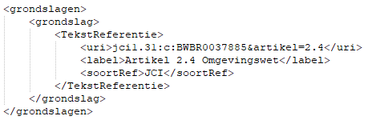Figuur 41Voorbeeld van de grondslag voor het omgevingsplan)
STOP kent naast de hiervoor genoemde BesluitMetadata ook nog de metadata afkortingen en alternatieveTitels. Geadviseerd wordt om deze metadata bij omgevingsdocumenten niet te gebruiken. Ze worden daarom niet verder besproken.
Waarschuwing toekomstigewijziging TPOD-standaard
In een volgende versie van de TPOD-standaard zal het verplicht worden om het gegeven citeertitel te gebruiken. Als overgangsmaatregel wordt geadviseerd wordt om -wanneer en zodra de gebruikte plansoftware dat mogelijk maakt- op deze wijziging te anticiperen door het gegeven citeertitel te gebruiken.
10.3.3 RegelingMetadata
De RegelingMetadata leggen vast welke organisatie verantwoordelijk is voor de regelingversie en bevatten gegevens om de regeling goed vindbaar te maken. In deze paragraaf zijn de RegelingMetadata beschreven die voor omgevingsdocumenten relevant zijn. De RegelingMetadata die bij een ontwerpbesluit worden aangeleverd zijn nagenoeg gelijk aan de RegelingMetadata die bij een definitief besluit worden aangeleverd. Aangegeven is of het gegeven verplicht of optioneel is en hoe vaak het moet c.q. kan voorkomen. Daarnaast is bij de meeste gegevens een toelichting gegeven: hoe werkt het en wat voor effect heeft het. Er is geen vaste, voorgeschreven volgorde voor de RegelingMetadata.
soortRegeling: nadere typering van een regeling, te kiezen uit de STOP-waardelijst soortregeling. Verplicht gegeven. Komt 1 keer voor. Voorbeelden zijn omgevingsplan en waterschapsverordening.
eindverantwoordelijke: (de identificatie van) het openbaar lichaam dat de wettelijke verantwoordelijkheid draagt voor de inhoud van de regeling. Uit de STOP-waardelijsten voor gemeente, waterschap, provincie respectievelijk ministerie moet de juiste waarde gekozen worden. Verplicht gegeven. Komt 1 keer voor. Door dit gegeven wordt in de voorzieningen de naam van de gemeente, het waterschap, de provincie of het ministerie getoond.
maker: (de identificatie van) het openbaar lichaam dat de eindverantwoordelijkheid draagt voor het creëren van de instrumentversie. Uit de STOP-waardelijsten voor gemeente, waterschap, provincie respectievelijk ministerie moet de juiste waarde gekozen worden. Verplicht gegeven. Komt 1 keer voor. Door dit gegeven wordt in de voorzieningen de naam van de gemeente, het waterschap, de provincie of het ministerie getoond.
soortBestuursorgaan: de typering van het bestuursorgaan dat verantwoordelijk is voor de regeling. Verplicht gegeven. Komt 1 keer voor. Uit de STOP-waardelijst bestuursorgaan moet de juiste waarde gekozen worden. Voorbeelden zijn gemeenteraad, algemeen bestuur en provinciale staten. In de RegelingMetadata moet gekozen worden voor het bestuursorgaan waaraan in de Omgevingswet de bevoegdheid tot het vaststellen van het omgevingsdocument is toegedeeld, ook als dat bestuursorgaan die bevoegdheid (gedeeltelijk) aan een ander bestuursorgaan heeft gedelegeerd.
officieleTitel: de titel van de regeling zoals die door het bevoegd gezag wordt vastgesteld. Verplicht gegeven. Komt 1 keer voor. De officiële titel moet gelijk zijn aan het RegelingOpschrift van de regeling.
citeertitel: de titel van de regeling die gebruikt wordt in aanhalingen. Wordt geplaatst binnen het containerelement CiteertitelInformatie, dat op zijn beurt wordt geplaatst binnen het element heeftCiteertitelInformatie. Het element heeftCiteertitelInformatie is een optioneel element, dat 0 of 1 keer voorkomt. Bij de citeertitel moet worden aangegeven of de citeertitel officieel is of niet, door bij het gegeven isOfficieel de juiste waarde te kiezen. De citeertitel is officieel als deze in de regeling wordt vastgesteld; voor isOfficieel moet dan de waarde true worden gekozen. Als de citeertitel niet in de regeling wordt vastgesteld, is de citeertitel een ‘redactioneel’ gegeven; voor isOfficieel moet dan de waarde false worden gekozen. De citeertitel is niet hetzelfde als de officiële titel. Bij wetgeving gebeurt het vaak dat de wet een lange officiële titel heeft en een korte citeertitel die in de dagelijkse praktijk wordt gebruikt. Een voorbeeld: ‘Wet van 1 juli 2020 tot wijziging van de Bekendmakingswet en andere wetten in verband met de elektronische publicatie van algemene bekendmakingen, mededelingen en kennisgevingen’ is de officiële titel van de wet met de citeertitel ‘Wet elektronische publicaties’. De citeertitel is in deze wet vastgesteld en is dus officieel. Hoewel het bij veel omgevingsdocumenten niet voor de hand lijkt te liggen om een citeertitel toe te voegen omdat die hetzelfde zal zijn als de officiële titel, is dat wel wenselijk. In de DSO-viewer namelijk speelt de ‘naam’ van het omgevingsdocument op verschillende plekken een rol: in de resultaat- en filterschermen na een zoekactie en in het scherm waarin tekst en kaart van de regeling worden getoond. De DSO-viewer gebruikt daarvoor de citeertitel uit de RegelingMetadata. Als er geen citeertitel is, stelt de viewer zelf de ‘naam’ samen uit de gegevens soortRegeling en eindverantwoordelijke.
onderwerp: een korte specificatie van de inhoud van de regeling, te kiezen uit de STOP-waardelijst onderwerp. Verplicht gegeven. Komt ten minste 1 keer voor. Wordt geplaatst binnen het containerelement onderwerpen, dat 1 of meer onderwerp-elementen bevat. Het containerelement onderwerpen is een verplicht element, dat 1 keer voorkomt. Het onderwerp speelt een rol bij het vindbaar maken en bij de zoekresultaatfiltering van besluiten, regelingen en kennisgevingen op overheid.nl. Daarom wordt geadviseerd om alle toepasselijke onderwerpen van de waardelijst toe te voegen.
rechtsgebied: specificatie hoe het instrument wordt ingedeeld binnen het geheel van het recht, te kiezen uit de STOP-waardelijst rechtsgebied. Komt zo vaak voor als gewenst. Wordt geplaatst binnen het containerelement rechtsgebieden, dat 1 of meer rechtsgebied-elementen bevat. Het containerelement rechtsgebieden is een optioneel element, dat 0 of 1 keer voorkomt. Het rechtsgebied speelt een rol bij het vindbaar maken en bij de zoekresultaatfiltering van besluiten, regelingen en kennisgevingen op overheid.nl. Daarom wordt geadviseerd om het element rechtsgebied te gebruiken.
overheidsdomein: brede onderverdeling van de overheidsbrede thema's die op een instrument van toepassing zijn, te kiezen uit de STOP-waardelijst overheidsthema. Komt zo vaak voor als gewenst. Wordt geplaatst binnen het containerelement overheidsdomeinen, dat 1 of meer overheidsdomein-elementen bevat. Het containerelement overheidsdomeinen is een optioneel element, dat 0 of 1 keer voorkomt. Het overheidsdomein speelt een rol bij het vindbaar maken en in de zoekresultaatfiltering van besluiten, regelingen en kennisgevingen op overheid.nl. Daarom wordt geadviseerd om het element overheidsdomein te gebruiken.
opvolgerVan: de verwijzing van een opvolgende regeling naar de door deze regeling opgevolgde andere regeling. De opvolgingsrelatie wijst naar het Work van de opgevolgde regeling. Komt zo vaak voor als gewenst. Wordt geplaatst binnen het containerelement opvolging, dat 1 of meer opvolgerVan-elementen bevat. Het containerelement opvolging is een optioneel element, dat 0 of 1 keer voorkomt. OpvolgerVan komt alleen voor wanneer de regeling een andere regeling daadwerkelijk opvolgt. Het komt alleen voor wanneer de oorspronkelijke regeling wordt ingetrokken en vervangen door een nieuwe regeling en alleen bij een regeling behorend bij een definitief besluit, niet bij een regeling behorend bij een ontwerpbesluit. Een voorbeeld is een provincie die aanvankelijk een omgevingsvisie genaamd ‘Prachtig Provincieland’ had en deze na verloop van een aantal jaren intrekt en een nieuwe omgevingsvisie instelt genaamd ‘Provincieland economisch voorop’. Bij de nieuwe omgevingsvisie ‘Provincieland economisch voorop’ wordt met opvolgerVan verwezen naar (de identificatie van) de ingetrokken omgevingsvisie ‘Prachtig Provincieland’. Door het aangeven van deze opvolg-relatie is het mogelijk om bij een tijdreis vanuit de nieuwe regeling de ingetrokken regeling als voorganger te tonen.
grondslag: de machineleesbare verwijzing naar een juridische bron die de wettelijke grondslag van het instrument geeft. Moet altijd verwijzen naar (een versie van) een geconsolideerde regeling. Komt zo vaak voor als gewenst. Wordt geplaatst binnen het containerelement grondslagen, dat 1 of meer grondslag-elementen bevat. Het containerelement grondslagen is een optioneel element, dat 0 of 1 keer voorkomt. De grondslag ziet er -in STOP-XML- uit als in onderstaande afbeelding. De uri is een Juriconnect 1.3.1-verwijzing. Zie daarvoor ook de ‘Juriconnect-standaard voor identificatie van en verwijzing naar wet- en regelgeving’. Wanneer verwezen wordt naar een artikel in een wet die in werking is getreden, kan de uri eenvoudig gegenereerd worden door op wetten.overheid.nl naar het betreffende artikel te gaan en daar met behulp van de linktool een link naar de meest recente versie zonder geldigheidsdatum te genereren en die te kopiëren.
Figuur 42Voorbeeld van een grondslag (hier voor het omgevingsplan)
STOP kent naast de hiervoor genoemde RegelingMetadata ook nog de metadata afkorting, voorkeursafkorting en alternatieveTitel. Geadviseerd wordt om deze metadata bij omgevingsdocumenten niet te gebruiken. Ze worden daarom niet verder besproken.
Waarschuwing toekomstigewijziging TPOD-standaard
In een volgende versie van de TPOD-standaard zal het verplicht worden om het gegeven citeertitel te gebruiken. Als overgangsmaatregel wordt geadviseerd wordt om -wanneer en zodra de gebruikte plansoftware dat mogelijk maakt- op deze wijziging te anticiperen door het gegeven citeertitel te gebruiken.
10.3.4 KennisgevingMetadata
De KennisgevingMetadata leggen vast welke organisatie verantwoordelijk is voor de kennisgeving en bevatten gegevens om de kennisgeving goed vindbaar te maken. In deze paragraaf zijn de KennisgevingMetadata beschreven die voor de kennisgeving van omgevingsdocumenten relevant zijn. Aangegeven is of het gegeven verplicht of optioneel is en hoe vaak het moet c.q. kan voorkomen. Daarnaast is bij de meeste gegevens een toelichting gegeven: hoe werkt het en wat voor effect heeft het. Er is geen vaste, voorgeschreven volgorde voor de KennisgevingMetadata.
eindverantwoordelijke: (de identificatie van) het openbaar lichaam dat de wettelijke verantwoordelijkheid draagt voor de inhoud van de kennisgeving. Uit de STOP-waardelijsten voor gemeente, waterschap, provincie respectievelijk ministerie moet de juiste waarde gekozen worden. Verplicht gegeven. Komt 1 keer voor. Door dit gegeven wordt op overheid.nl de naam van de gemeente, het waterschap, de provincie of het ministerie getoond.
maker: (de identificatie van) het openbaar lichaam dat de eindverantwoordelijkheid draagt voor het creëren van de kennisgeving. Uit de STOP-waardelijsten voor gemeente, waterschap, provincie respectievelijk ministerie moet de juiste waarde gekozen worden. Verplicht gegeven. Komt 1 keer voor. Door dit gegeven wordt op overheid.nl de naam van de gemeente, het waterschap, de provincie of het ministerie getoond.
officieleTitel: de titel van de kennisgeving zoals die door het bevoegd gezag is bepaald; deze is gelijk aan de tekstuele weergave van het gehele RegelingOpschrift van de kennisgeving (zie daarvoor paragraaf 10.2.1). Verplicht gegeven. Komt 1 keer voor. Dit gegeven speelt een rol bij het vindbaar en herkenbaar maken van de kennisgeving op overheid.nl. Daarom wordt geadviseerd om de kennisgeving een zo onderscheidend en herkenbaar mogelijke titel (en RegelingOpschrift) te geven.
onderwerp: een korte specificatie van de inhoud van de kennisgeving, te kiezen uit de STOP-waardelijst onderwerp. Verplicht gegeven. Komt ten minste 1 keer voor. Wordt geplaatst binnen het containerelement onderwerpen, dat 1 of meer onderwerp-elementen bevat. Het containerelement onderwerpen is een verplicht element, dat 1 keer voorkomt. Het onderwerp speelt een rol bij het vindbaar maken en bij de zoekresultaatfiltering van besluiten, regelingen en kennisgevingen op overheid.nl. Daarom wordt geadviseerd om alle toepasselijke onderwerpen van de waardelijst toe te voegen.
mededelingOver: de verwijzing vanuit een kennisgeving naar (de identificatie van) het (ontwerp)besluit waarover de kennisgeving gaat. Onder voorwaarde verplicht gegeven. Komt 0 of 1 keer voor. Dit gegeven is alleen verplicht als de kennisgeving gaat over een (voorafgaand aan de kennisgeving aangeleverd, daadwerkelijk bestaand) ontwerp- of definitief besluit. Door dit gegeven is vanuit de kennisgeving op eenvoudige wijze het (ontwerp)besluit vindbaar waar de kennisgeving over gaat. Het werkt ook omgekeerd: vanuit het besluit is de kennisgeving makkelijk te vinden. Daardoor is vanuit het besluit de informatie over de procedure van het besluit, zoals de begin- en einddatum van de inzagetermijn dan wel de einddatum van de beroepstermijn, te raadplegen.
soortKennisgeving: gegeven dat aangeeft wat voor soort kennisgeving het betreft, te kiezen uit een waardelijst die in het STOP-schema is opgenomen. Optioneel gegeven. Komt 0 of 1 keer voor. Met dit gegeven wordt aangegeven of het een kennisgeving betreft waarmee (inzage- en bezwaar/beroeps-)termijnen worden doorgegeven of een kennisgeving waarmee informatie wordt doorgegeven over het voornemen een besluit te gaan nemen zonder (inzage- en beroeps-)termijnen. In STOP 1.3.0 is dit gegeven, om redenen van backwards compatibility, zo gemodelleerd dat het een optioneel gegeven is met KennisgevingBesluittermijnen als defaultwaarde. Dit betekent dat wanneer het gegeven soortKennisgeving in de aanlevering niet wordt aangeleverd, het een KennisgevingBesluittermijnen is (uiteraard is dat ook zo als het element soortKennisgeving wel voorkomt met de waarde KennisgevingBesluittermijnen). Wanneer het een ander soort kennisgeving is, moet het element soortKennisgeving voorkomen. In STOP 2.0 zal soortKennisgeving worden gewijzigd in een verplicht gegeven dat 1 keer voorkomt. Nadrukkelijk wordt geadviseerd om daarop vooruit te lopen en ook bij een kennisgeving waarmee (inzage- en bezwaar/beroeps-)termijnen worden doorgegeven, het gegeven soortKennisgeving te gebruiken.
10.3.5 Soort procedure en consolidatie
Aan de hand van de soort procedure bepaalt de LVBB wat er met het besluit wordt gedaan. Uiteraard moet DSO-LV weten of de aangeleverde OW-objecten horen bij een ontwerpbesluit of een definitief besluit. Daarvoor kent ook IMOW proceduregegevens. DSO-LV weet dat het gaat om OW-objecten behorend bij een ontwerpregeling omdat in dat geval bij de OW-objecten als procedurestatus ‘ontwerp’ is aangegeven.
Indien sprake is van een ontwerpbesluit levert het bevoegd gezag het ontwerpbesluit aan bij de LVBB met als soortProcedure ‘ontwerpbesluit’. Na ontvangst van een ontwerpbesluit genereert de LVBB daaruit een proefversie: bij een initieel ontwerpbesluit de eerste (ontwerp)versie van de regeling en bij een ontwerp-wijzigingsbesluit de verwerking van het ontwerpbesluit in de regelingversie waarop het bevoegd gezag het ontwerpbesluit heeft gebaseerd. De LVBB stelt de proefversie beschikbaar voor DSO-LV en levert de OW-objecten door aan DSO-LV. DSO-LV toont vervolgens die proefversie in de vorm van een ontwerpregeling.
Nadat het bestuursorgaan een besluit over een omgevingsdocument heeft genomen, levert het dat besluit aan bij de LVBB met als soortProcedure ‘definitief besluit’. Na ontvangst van een initieel besluit destilleert de LVBB daaruit de Regelingversie. Na ontvangst van een wijzigingsbesluit voert de LVBB de consolidatie uit met als resultaat een nieuwe toestand van de Regeling. De LVBB doet dat wanneer de inwerkingtredingsdatum van het (wijzigings)besluit -en daarmee ook van de nieuwe RegelingVersie- bekend is. De LVBB haalt die datum op uit de meegeleverde ConsolidatieInformatie.
Toekomstige functionaliteit
Het tonen van de procedurestatus van onderdelen van een regeling is in DSO-LV geïmplementeerd voor ontwerpregelingen; in de regelingenbank is het niet geïmplementeerd.
Workaround
Geen
10.3.6 Procedure-informatie doorgeven met Procedureverloop
10.3.6.1 De module Procedureverloop
De STOP/TPOD-standaard ziet het ontwerpbesluit en het definitieve besluit als afzonderlijke procedures. Zoals in paragraaf 10.3.5 al is aangegeven moet bij de aanlevering van een besluitversie de soort procedure worden gekozen: aangegeven moet worden of een ontwerpbesluit of een definitief besluit wordt aangeleverd. De procedure-informatie wordt verder ingevuld met de module Procedureverloop. Dit is de verzameling van stappen in de procedure van de besluitversie. De module Procedureverloop kan dus meerdere stappen bevatten, en ook in de loop van de tijd aan de hand van het verloop van de procedure worden aangevuld. Deze module en de Procedurestappen die als metadata kunnen worden aangeleverd betreffen alleen het formele en door DSO-LV ondersteunde deel van de procedure, dus vanaf de publicatie van een ontwerpbesluit. Gegevens over de daaraan voorafgaande stappen, zoals participatie, conceptversies voor overleg en voorbereiding van de besluitvorming door het bestuursorgaan, worden niet door de STOP/TPOD-standaard ondersteund en niet door de LVBB verwerkt. Ze kunnen uiteraard wel door het bevoegd gezag in de eigen software worden bijgehouden.
Het ontwerpbesluit en het definitieve besluit hebben ieder een afzonderlijke module Procedureverloop. In de ontwerpfase levert het bevoegd gezag het ontwerpbesluit aan bij de LVBB met als soortProcedure ‘ontwerpbesluit’ en het Procedureverloop met de relevante Procedurestappen horend bij een ontwerpbesluit. Nadat het bestuursorgaan een besluit over een omgevingsdocument heeft genomen, levert het dat besluit aan bij de LVBB met als soortProcedure ‘definitief besluit’ en het Procedureverloop met de relevante stappen horend bij een definitief besluit. Diverse omgevingsdocumenten treden direct na de bekendmaking van het besluit in werking en zijn dan ook direct onherroepelijk. Besluiten waartegen beroep kan worden ingesteld worden geconsolideerd terwijl nog niet zeker is of ze (geheel of gedeeltelijk) blijvend onderdeel van het omgevingsdocument uitmaken. Voor een raadpleger van de geconsolideerde regeling is het van belang om van ieder onderdeel van de regeling te weten wat de status daarvan is om te kunnen bepalen welke rechten en verplichtingen zij/hij daaraan kan ontlenen. Dat geldt voor alle tekstonderdelen, GIO’s en OW-objecten. Daarom moeten bij besluiten waartegen beroep kan worden ingesteld, na de aanlevering van het definitieve besluit, nieuwe Procedurestappen aan het Procedureverloop worden toegevoegd. Dit maakt het mogelijk om in de geconsolideerde regelingen op overheid.nl en in DSO-LV de status aan te geven van de onderdelen van die regeling die door het betreffende besluit zijn gewijzigd.
De initiële aanlevering van het Procedureverloop vindt doorgaans plaats bij het ontwerpbesluit respectievelijk definitieve besluit. Vervolgens wordt het Procedureverloop gemuteerd met een Procedureverloopmutatie bij de kennisgeving of met een directe mutatie. In paragraaf 10.4 is steeds in iedere fase en bij ieder product aangegeven welke methode moet worden toegepast.
Een Procedurestap kent de volgende gegevens:
soortStap: geeft aan welke stap het betreft, te kiezen uit de STOP-waardelijst Procedurestap_ontwerp respectievelijk Procedurestap_definitief. Verplicht gegeven. Komt 1 keer voor.
voltooidOp: datum waarop deze procedurestap heeft plaats gevonden of (naar verwachting) plaats zal vinden. Verplicht gegeven. Komt 1 keer voor.
meerInformatie: URL-verwijzing naar extra informatie over de Procedurestap. Optioneel gegeven. Komt 0 of 1 keer voor. Dit gegeven is bedoeld voor het geven van extra informatie over de betreffende Procedurestap en de gevolgen daarvan op de geldigheid van regeling, niet voor extra informatie over de inhoud van de regeling. Dit gegeven wordt alleen in de beroepsfase van het besluit gebruikt, en dus alleen bij besluiten waartegen bezwaar en/of beroep kan worden ingesteld.
Naast de Procedurestap(pen) bevat het Procedureverloop het gegeven bekendOp. Daar vult het bevoegd gezag de datum in waarop eenieder kennis kon hebben van deze informatie.
Het gevolg van de Procedurestappen op de geldigheid van regeling leidt de LVBB af uit de aangeleverde informatie en wordt automatisch bij de bekendmaking, in de regelingenbanken en in DSO-LV getoond.
Toekomstige functionaliteit
Het tonen van de procedurestatus van onderdelen van een regeling is in DSO-LV geïmplementeerd voor ontwerpregelingen; in de regelingenbank is het niet geïmplementeerd.
Het doorgeven van wijzigingen in de status van een besluit in de beroepsfase is nog niet geïmplementeerd in de DSO-keten; naar huidige verwachting zal dat na inwerkingtreden van de Omgevingswet gebeuren.
Workaround
Geen
10.3.6.2 Vervangen en verwijderen van Procedurestappen
In de vorige paragraaf zijn Procedureverloopmutaties beschreven waarmee een Procedurestap aan het Procedureverloop wordt toegevoegd (voegStappenToe). Er zijn ook mutaties voor het vervangen (vervangStappen) en voor het verwijderen van Procedurestappen (verwijderStappen). Dit is bijvoorbeeld nodig wanneer een al gestarte terinzagelegging van een ontwerpbesluit opnieuw moet beginnen vanwege het ontbreken van een cruciaal onderzoeksrapport. Een ander voorbeeld is de situatie waarin in de beroepsfase de Procedurestap Beroep ingesteld was aangeleverd, terwijl later blijkt dat er geen beroep is ingesteld.
In het geval van de al gestarte terinzagelegging van een ontwerpbesluit die opnieuw moet beginnen, moet daarvoor een nieuwe kennisgeving in het publicatieblad van het bevoegd gezag gepubliceerd worden. Het bevoegd gezag levert die kennisgeving dan aan met daarbij
Procedureverloopmutaties vervangStappen, waarmee de Procedurestappen Begin inzagetermijn en Einde inzagetermijn met de oorspronkelijke data die bij de kennisgeving waren aangeleverd, worden vervangen door de Procedurestappen Begin inzagetermijn en Einde inzagetermijn met de nieuwe data.
Er zijn ook gevallen waarin niet een nieuwe publicatie (zoals een kennisgeving) wordt gedaan. Voorbeelden zijn het eerdergenoemde onterechte aanleveren van de Procedurestap Beroep ingesteld, of de situatie waarin de tekst van de kennisgeving wel de juiste data zijn genoemd, maar in het Procedureverloop onjuiste data staan. In die gevallen wordt gebruik gemaakt van de dan geldende correctiemethode bij de LVBB.
10.4 Procedure programma en aan te leveren producten en gegevens
In deze paragraaf wordt de procedure beschreven die een besluit tot vaststelling of wijziging van een programma doorloopt. Van iedere stap in die procedure wordt aangegeven of deze door de STOP/TPOD-standaard en de DSO-keten wordt ondersteund en zo ja, welke producten en welke gegevens en metadata moeten worden aangeleverd.
Opgemerkt wordt dat, op enkele uitzonderingen na, het programma geen verandering in het recht met zich meebrengt, niet gericht is op rechtsgevolg. Er is daarom geen sprake van een publiekrechtelijke rechtshandeling. Daardoor is het programma in de regel geen besluit als bedoeld in de Awb[15] Zie hiervoor ook MvT bij Invoeringswet Omgevingswet, Kamerstukken II 2017/18, 34 986, nr. 3, blz. 351 . Het bestuursorgaan besluit wel tot vaststelling of wijziging van het programma. Die beslissing wordt in het vervolg van deze paragraaf aangeduid met de term ‘besluit tot vaststelling of wijziging van het programma’.
Figuur 43 geeft een overzicht van de verschillende fasen in de procedure van het programma. De beroepsfase komt slechts in enkele gevallen voor. Dat is in het kleurgebruik van de fasen in het schema tot uitdrukking gebracht.
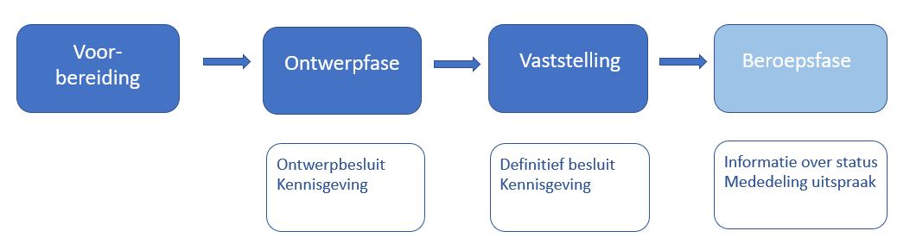Figuur 43Globaal overzicht van de procedure en de per fase aan de LVBB aan te leveren producten
10.4.1 Voorbereidingsfase
10.4.1.1 Inleiding
Figuur 44 Voorbereidingsfase in de procedure van het programma
Zoals in paragraaf 10.1 al is beschreven begint de procedure van een besluit tot het vaststellen of wijzigen van het programma met een voorbereidende fase van overleg en participatie. In deze fase gelden geen procedurele eisen en er worden geen vormvereisten gesteld aan gebruikte producten. Er kan voor overleg en participatie een conceptversie van het voorgenomen besluit gemaakt worden die aan de STOP/TPOD-standaard voldoet, maar dat is niet verplicht. Het raadplegen van zo’n conceptversie kan alleen in een eigen raadpleegomgeving van gemeente, waterschap, provincie of Rijk. Conceptversies (en eventuele andere documenten) worden niet aan de LVBB aangeboden, niet op overheid.nl gepubliceerd en ook niet in DSO-LV getoond. De bepalingen en beschrijvingen in deze paragraaf over het aanleveren van producten en gegevens zijn er niet op van toepassing.
10.4.1.2 Technische voorbereiding: aanmaken van het Doel
Zoals in paragraaf 10.3.1 al is aangegeven, is een unieke identificatie nodig om van een omgevingsdocument vast te leggen dat tekst, informatieobjecten en OW-informatie bij elkaar horen, gedurende het hele proces van concipiëren, voorbereiden, besluiten, bekendmaken en consolideren. De STOP/TPOD-standaard noemt die identificatie Doel. Het Doel wordt bij het ter publicatie of bekendmaking aanleveren van een (ontwerp)besluit tot vaststelling of wijziging van het programma meegeleverd.
De eerste handeling bij de start van het opstellen van zo’n besluit is het aanmaken van een nieuwe Regelingversie met een nieuw Doel oftewel identificatie. Het Doel moet voldoen aan de eisen die STOP daaraan stelt:
de identificatie moet het volgende patroon volgen: /join/id/proces/” <overheid> “/” <datum> “/” <overig>
overheid: code van het bevoegde gezag volgens één van de STOP-waardelijsten voor gemeente, waterschap, provincie of ministerie
datum: datum van het ontstaan van het doel; dit mag een jaartal of een volledige datum zijn
overig: door het bevoegd gezag te bepalen; dit kan een betekenisloze code zijn of een betekenisvolle tekstuele beschrijving van (het resultaat van) het doel. Hiervoor gelden de volgende eisen:
alleen toegestaan: boven- en onderkast letters, cijfers en underscore;
te beginnen met een cijfer of letter;
maximale lengte:128 karakters.
Het Doel moet uiteraard uniek zijn.
Het Doel bij een besluit tot vaststelling van een programma zou er zo uit kunnen zien: /join/id/proces/gm0479/2023/instelling_rioleringsprogramma_2026-2030, maar ook /join/id/proces/gm0479/2023/546d9cff158f4d148f9bb6c953dc3019. De plansoftware moet er voor zorgen dat het Doel uniek is. Het is dus goed mogelijk dat de plansoftware zelf het Doel genereert en dat dat eerder Doelen met een betekenisloze code (zoals het tweede voorbeeld) dan met een betekenisvolle beschrijving oplevert.
Nadat het Doel is aangemaakt, start de ambtelijke organisatie van gemeente, waterschap, provincie of Rijk in de plansoftware met de nieuwe regelingversie van het programma. Wanneer wordt gestart met de eerste versie van het programma, zal in de plansoftware een volledig nieuwe regeling van het programma worden opgesteld. Wanneer het gaat om een wijziging van een bestaand programma, worden in de nieuwe regelingversie de wijzigingen ten opzichte van de voorgaande toestand van de regeling aangebracht die voor de betreffende wijziging nodig zijn. Afhankelijk van de functionaliteiten die de gebruikte plansoftware biedt, zullen tussentijdse producten worden gegenereerd ten behoeve van intern en extern overleg, zoals met initiatiefnemers, adviseurs en medeoverheden.
10.4.2 Ontwerpfase en ontwerpbesluit
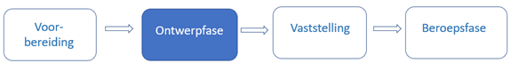Figuur 45Ontwerpfase in de procedure van het programma
10.4.2.1 Juridisch kader
Op de voorbereiding van de verplichte programma’s van paragraaf 3.2.2 Ow, de in paragraaf 3.2.3 Ow genoemde onverplichte programma’s en de programma’s met programmatische aanpak van paragraaf 3.2.4 Ow is afdeling 3.4 Awb van toepassing[16] Artikel 16.27 lid 1 Ow . Afdeling 3.4 Awb is ook van toepassing op de documenten die voor het opstellen van een programma afzonderlijk worden vastgesteld[17] Artikel 16.27 lid 1 Ow . Een bestuursorgaan kan, voor zover dat niet in strijd is met internationaalrechtelijke verplichtingen, bij de voorbereiding van deze programma’s afdeling 3.4 Awb buiten toepassing laten als het gaat om een ondergeschikte wijziging die niet leidt tot grotere nadelige gevolgen voor het milieu en die wijziging niet ziet op een in dat programma opgenomen beschrijving van een activiteit als gevolg waarvan de activiteit is toegestaan[18] Artikel 16.27 lid 2 Ow . Uit artikel 3.4 Ow volgt dat gemeente, waterschap, provincie en Rijk ook voor andere dan in de paragrafen 3.2.2 t/m 3.2.4 genoemde onderdelen van de fysieke leefomgeving een programma kunnen vaststellen. Het bestuursorgaan kan dan zelf bepalen of het afdeling 3.4 Awb toepast of niet.
Het van afdeling 3.4 Awb onderdeel uitmakende artikel 3:11 lid 1 Awb luidt: “Het bestuursorgaan legt het ontwerp van het te nemen besluit, met de daarop betrekking hebbende stukken die redelijkerwijs nodig zijn voor een beoordeling van het ontwerp, ter inzage, met uitzondering van stukken waarvoor bij wettelijk voorschrift mededeling op de in artikel 12 van de Bekendmakingswet bepaalde wijze is voorgeschreven.” Bij diverse besluiten en andere rechtsfiguren die als omgevingsdocument zijn aangewezen, waaronder de omgevingsvisie, is zo’n uitzondering gemaakt en is in het Omgevingsbesluit bepaald dat van het ontwerp mededeling gedaan moet worden in het publicatieblad. In dat geval wordt een publicatie van de volledige inhoud van het ontwerpbesluit in het publicatieblad geplaatst[19] Artikelen 1, 2 en 12 Bekendmakingswet en wordt het ontwerpbesluit zelf dus niet ter inzage gelegd. Het Omgevingsbesluit voorziet (nog) niet in een verplichting om in het publicatieblad mededeling te doen van het ontwerp van het programma. Daarom moet het bestuursorgaan het ontwerp van het programma op elektronische wijze en op een fysieke locatie ter inzage leggen. Echter als het ontwerp van een programma niet aan de LVBB wordt aangeleverd en niet in het publicatieblad wordt gepubliceerd, wordt het ook niet aan DSO-LV doorgeleverd en kan het niet in de DSO-viewer geraadpleegd worden. De geometrische begrenzing van het programma en van onderdelen daarvan kan dan alleen in de vorm van kaarten in de tekst of in een bijlage bij de tekst worden opgenomen en niet als interactief raadpleegbaar geheel van tekst en kaart. Het definitieve besluit tot vaststelling of wijziging van het programma moet wel bekendgemaakt worden door plaatsing van de volledige inhoud van het programma in het publicatieblad en het programma moet vervolgens in de interactieve raadpleegomgeving van DSO-LV ontsloten worden. Besluit en programma moeten dan voldoen aan de eisen van de STOP/TPOD-standaard. Als het ontwerp van het programma niet met toepassing van de STOP/TPOD-standaard wordt opgesteld en alleen ter inzage gelegd wordt, zullen er grote verschillen zijn tussen het ontwerp en de definitieve versie. Dat is niet wenselijk. Daarom wordt aanbevolen om het ontwerp mede te delen door de volledige inhoud van het ontwerp van het programma, met toepassing van de STOP/TPOD-standaard, in gemeenteblad, waterschapsblad, provinciaal blad respectievelijk Staatscourant te plaatsen. In de beschrijvingen in de paragrafen 10.4.2.2 en 10.4.2.3 gaat dit toepassingsprofiel van die situatie uit. Wanneer deze aanbeveling wordt opgevolgd is het aan te raden om, zolang het Omgevingsbesluit niet voorziet in een verplichting om mededeling te doen van het ontwerp van het programma, het ontwerp van het programma ook bij de ter inzage gelegde stukken te presenteren.
Gemeente, waterschap, provincie of Rijk moet het ontwerp van het besluit en de op het ontwerp betrekking hebbende stukken die redelijkerwijs nodig zijn voor een beoordeling van het ontwerp, ter inzage leggen[20] Artikel 3:11 lid 1 Awb . Die terinzagelegging geschiedt zowel op elektronische wijze als op een door gemeente, waterschap, provincie of Rijk aan te wijzen locatie[21] Artikel 13 lid 1 Bekendmakingswet . De terinzagelegging vindt niet plaats in het publicatieblad van het bevoegd gezag[22] Artikel 13 lid 3 Bekendmakingswet . Dit betekent dat gemeente, waterschap, provincie en Rijk moeten zorgen voor de elektronische terinzagelegging van de op het ontwerpbesluit betrekking hebbende stukken en voor de terinzagelegging van die stukken op een fysieke locatie. Op het ontwerp-besluit betrekking hebbende stukken zullen vooral bestaan uit rapportages van uitgevoerde onderzoeken. De terinzagelegging op een door gemeente, waterschap, provincie of Rijk te bepalen locatie kan worden georganiseerd door op een in de kennisgeving aangegeven fysieke locatie de mogelijkheid te bieden om op een beeldscherm de op het ontwerp betrekking hebbende stukken te raadplegen. Uiteraard is het ook mogelijk om alle stukken te printen en op een fysieke locatie klaar te leggen voor inzage.
Voorafgaand aan de terinzagelegging geeft gemeente, waterschap, provincie of Rijk kennis van het ontwerp[23] Artikel 3:12 lid 1 Awb in gemeenteblad, waterschapsblad, provinciaal blad of Staatscourant[24] Artikel 12 jo artikel 2 Bekendmakingswet . De kennisgeving vermeldt in ieder geval:
een zakelijke weergave van de inhoud van het ontwerpbesluit[25] Artikel 12 Bekendmakingswet jo artikel 3.7 Besluit elektronische publicaties ;
een beschrijving van het betreffende object of de betreffende activiteit en, in voorkomend geval, de locatie daarvan;
een zodanige beschrijving van het ontwerpbesluit en het beoogde rechtsgevolg daarvan dat potentiële belanghebbenden eruit kunnen afleiden in hoeverre zij in hun belangen worden geraakt;
de wijze waarop en de periode waarin de stukken waar de kennisgeving betrekking op heeft voor eenieder ter inzage liggen[26] Artikel 12 Bekendmakingswet ;
wie in de gelegenheid worden gesteld om zienswijzen naar voren te brengen[27] Artikel 3:12 lid 2 Awb ;
op welke wijze dit kan geschieden[28] Artikel 3:12 lid 2 Awb .
Zienswijzen over het ontwerp kunnen naar voren worden gebracht door eenieder[29] Artikel 3:15 Awb jo artikel 16.23 lid 1 Ow . De termijn daarvoor bedraagt zes weken[30] Artikel 3:16 lid 1 Awb .
Wanneer de aanbeveling om het ontwerp van het programma mede te delen wordt opgevolgd, moet gemeente, waterschap, provincie of Rijk het ontwerpbesluit en de kennisgeving, met bijbehorende informatie, conform de STOP/TPOD-standaard opstellen en aan de LVBB aanleveren. De aanlevering van het ontwerpbesluit is beschreven in paragraaf 10.4.2.2; de aanlevering van de kennisgeving in paragraaf 10.4.2.3. De elektronische terinzagelegging van de op het ontwerp betrekking hebbende stukken is het onderwerp van paragraaf 10.4.2.4.
10.4.2.2 Aanleveren ontwerpbesluit
Ten behoeve van de interne ambtelijke en bestuurlijke besluitvorming binnen gemeente, waterschap, provincie of Rijk zal gebruik gemaakt worden van een versie van het ontwerpbesluit die door de plansoftware is gegenereerd. Na eventuele aanpassingen die uit de interne besluitvorming nodig zijn gebleken, wordt vanuit de plansoftware van gemeente, waterschap, provincie of Rijk een ontwerpbesluit gegenereerd ten behoeve van de publicatie in gemeenteblad, waterschapsblad, provinciaal blad of Staatscourant en het in DSO-LV kunnen raadplegen van de ontwerpregeling. Het ontwerpbesluit bestaat uit een ontwerpversie van het Besluit en de Regeling. In de Regeling staat de volledige initiële regeling (bij het instellen van een programma) of de wijzigingsinstructies voor de geconsolideerde regeling (bij een wijziging van een programma). Dit geheel wordt aangeleverd aan de LVBB. Let op dat er bij een ontwerpbesluit in het Besluit een (ontwerp)-artikel moet zijn waarin wordt aangegeven wat het voorgenomen besluit is (het vaststellen van het besluit). Dit artikel (in termen van de standaard: het WijzigArtikel) is nodig om te verwijzen naar de WijzigBijlage.
Voor de meeste programma’s geldt er geen wettelijke verplichting om het definitieve besluit te voorzien van een deugdelijke motivering en die motivering te vermelden bij de bekendmaking van het besluit (zie hiervoor verder paragraaf 10.4.3.1). Wanneer gemeente, waterschap, provincie of Rijk er voor kiest om dat wel te doen, en bij de programma’s waarvoor de motivering wel verplicht is, wordt die (ontwerp-)motivering ook opgenomen in het ontwerpbesluit. De motivering wordt geplaatst in het onderdeel Motivering van het Besluit.
Om de mededeling van het ontwerpbesluit in gemeenteblad, waterschapsblad, provinciaal blad of Staatscourant te kunnen doen en doorlevering door LVBB aan DSO-LV mogelijk te maken moeten Besluit en Regeling voldoen aan de specificaties die in deel B van dit toepassingsprofiel zijn gegeven. Aanvullend daarop moet gemeente, waterschap, provincie of Rijk metadata over besluit en regeling en informatie over het Procedureverloop en de consolidatie meeleveren. Gemeente, waterschap, provincie of Rijk moet ook een publicatieopdracht aan de LVBB aanleveren, waarin zij/hij aangeeft welk soort publicatie wordt aangeleverd en op welke datum die publicatie gepubliceerd moet worden. Dat is achtereenvolgens in de volgende paragrafen beschreven.
10.4.2.2.1 Besluitmetadata
De Besluitmetadata leggen vast welke organisatie verantwoordelijk is voor de besluitversie en bevatten gegevens om het besluit goed vindbaar te maken. In paragraaf 10.3.2 zijn de Besluitmetadata beschreven. Daar is aangegeven of het gegeven verplicht of optioneel is, hoe vaak het moet c.q. kan voorkomen en wat het doel respectievelijk het resultaat van het gegeven is. Hierna is voor de BesluitMetadata die relevant zijn voor het ontwerpbesluit tot vaststelling of wijziging van een programma aangegeven hoe ze moeten worden toegepast.
eindverantwoordelijke: kies uit de STOP-waardelijst voor gemeente, waterschap, provincie of ministerie (de identificatiecode van) de betreffende gemeente, waterschap, provincie of ministerie.
maker: kies uit de STOP-waardelijst voor gemeente, waterschap, provincie of ministerie (de identificatiecode van) de betreffende gemeente, waterschap, provincie of ministerie.
soortBestuursorgaan: kies uit de STOP-waardelijst bestuursorgaan de waarde ‘college van burgemeester en wethouders’, ‘algemeen bestuur’, ‘gedeputeerde staten’ respectievelijk ‘minister’.
informatieobjectRef: neem hier de verwijzingen op naar de GIO’s (en eventueel de als informatieobject gemodelleerde PDF-documenten) die het ontwerpbesluit aan de regeling toevoegt of die het ontwerpbesluit wijzigt.
officieleTitel: geef het ontwerpbesluit een onderscheidende en herkenbare titel. De officiële titel moet gelijk zijn aan het RegelingOpschrift van het besluit. Een voorbeeld van de officiële titel van een ontwerpbesluit tot vaststelling van een programma is ‘Ontwerp Nationaal Waterprogramma’; een voorbeeld van de officiële titel van een ontwerpbesluit tot wijziging van een programma is ‘Ontwerp wijziging van het beheerplan Natura 2000-gebied Veluwe t.b.v. het wijzigen van enkele kernkwaliteiten’.
citeertitel: geadviseerd wordt om het gegeven citeertitel te gebruiken. Pas de citeertitel als volgt toe:
de citeertitel is in het besluit vastgesteld: neem de citeertitel over uit de betreffende bepaling en kies voor isOfficieel de waarde true;
de citeertitel is niet in het besluit vastgesteld: laat de citeertitel hetzelfde zijn als de officiële titel en het RegelingOpschrift van het besluit, of, als die erg lang zijn, een verkorte versie daarvan en kies voor isOfficieel de waarde false.
onderwerp: kies uit de STOP-waardelijst onderwerp alle toepasselijke onderwerpen. Voor omgevingsdocumenten kunnen deze waarden uit de waardelijst passend zijn: wonen, verkeer, ruimte en infrastructuur, natuur en milieu, cultuur en recreatie, bouwen en verbouwen, scheepvaart, rail- en wegverkeer, luchtvaart, waterbeheer, ruimtelijke ordening, veiligheid, water, stoffen, natuur- en landschapsbeheer, lucht, geluid, flora en fauna, energie, bodem, afval, defensie, recreatie, horeca, evenementen, cultuur, cultureel erfgoed, klimaatverandering.
rechtsgebied: kies uit de STOP-waardelijst rechtsgebied in ieder geval voor de waarde ‘omgevingsrecht’ en vul dit indien van toepassing aan met andere toepasselijke waarden uit deze waardelijst.
soortProcedure: kies uit de STOP-waardelijst soortprocedure de waarde ‘Ontwerpbesluit’.
grondslag: maak een verwijzing naar het betreffende artikel uit de paragrafen 3.2.2, 3.2.3 of 3.2.4 Ow indien het gaat om een van de specifieke vormen van het programma die in die artikelen zijn benoemd; als het om een ander soort programma gaat wordt een verwijzing gemaakt naar artikel 3.4 Omgevingswet, de algemene grondslag voor het vaststellen van het programma. De grondslag ziet er -in STOP-XML- uit als in Figuur 46:
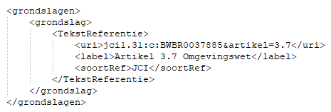Figuur 46Grondslag voor een programma, i.c. een waterbeheerprogramma
Waarschuwing toekomstigewijziging TPOD-standaard
In een volgende versie van de TPOD-standaard zal het verplicht worden om het gegeven citeertitel te gebruiken. Als overgangsmaatregel wordt geadviseerd wordt om -wanneer en zodra de gebruikte plansoftware dat mogelijk maakt- op deze wijziging te anticiperen door het gegeven citeertitel te gebruiken.
10.4.2.2.2 Regelingmetadata
De Regelingmetadata leggen vast welke organisatie verantwoordelijk is voor de regelingversie en bevatten gegevens om de regeling goed vindbaar te maken. In paragraaf 10.3.3 zijn de RegelingMetadata beschreven. Daar is aangegeven of het gegeven verplicht of optioneel is, hoe vaak het moet c.q. kan voorkomen en wat het doel respectievelijk het resultaat van het gegeven is. Hierna is voor de RegelingMetadata die relevant zijn voor het ontwerpbesluit tot vaststelling of wijziging van een programma aangegeven hoe ze moeten worden toegepast.
soortRegeling: kies uit de STOP-waardelijst soortRegeling de waarde ‘Programma’.
eindverantwoordelijke: kies uit de STOP-waardelijst voor gemeente, waterschap, provincie of ministerie (de identificatiecode van) de betreffende gemeente, waterschap, provincie of ministerie.
maker: kies uit de STOP-waardelijst voor gemeente, waterschap, provincie of ministerie (de identificatiecode van) de betreffende gemeente, waterschap, provincie of ministerie.
soortBestuursorgaan: kies uit de STOP-waardelijst bestuursorgaan de waarde ‘college van burgemeester en wethouders’, ‘algemeen bestuur’, ‘gedeputeerde staten’ respectievelijk ‘minister’
officieleTitel: geef de regeling van het programma een onderscheidende en herkenbare titel. Voorbeelden van de officiële titel van een programma zijn 'Nationaal Waterprogramma', 'Beheerplan Natura 2000-gebied Alde Feanen', 'Rioleringsprogramma Barneveld'.
citeertitel: maak gebruik van het gegeven citeertitel en doe dat als volgt:
in het programma is de citeertitel vastgesteld: neem de citeertitel over uit de betreffende bepaling en kies voor isOfficieel de waarde true;
in het programma is de citeertitel niet vastgesteld: laat de citeertitel hetzelfde zijn als de officiële titel (en het RegelingOpschrift van de regeling), of, als die erg lang is, een verkorte versie daarvan en kies voor isOfficieel de waarde false.
onderwerp: kies uit de STOP-waardelijst onderwerp alle toepasselijke onderwerpen. Voor omgevingsdocumenten kunnen deze waarden uit de waardelijst passend zijn: wonen, verkeer, ruimte en infrastructuur, natuur en milieu, cultuur en recreatie, bouwen en verbouwen, scheepvaart, rail- en wegverkeer, luchtvaart, waterbeheer, ruimtelijke ordening, veiligheid, water, stoffen, natuur- en landschapsbeheer, lucht, geluid, flora en fauna, energie, bodem, afval, defensie, recreatie, horeca, evenementen, cultuur, cultureel erfgoed, klimaatverandering.
rechtsgebied: kies uit de STOP-waardelijst rechtsgebied in ieder geval de waarde ‘omgevingsrecht’ en vul dit indien van toepassing aan met andere toepasselijke waarden uit deze waardelijst.
overheidsdomein: kies uit de STOP-waardelijst overheidsthema alle toepasselijke waarden. Voor omgevingsdocumenten kunnen deze waarden uit de waardelijst passend zijn: bouwen, wonen en leefomgeving; cultuur, sport, vrije tijd; landbouw, natuur en voedsel; milieu, ruimte en water; defensie; verkeer en vervoer.
grondslag: maak een verwijzing naar het betreffende artikel uit de paragrafen 3.2.2, 3.2.3 of 3.2.4 Ow indien het gaat om een van de specifieke vormen van het programma die in die artikelen zijn benoemd; als het om een ander soort programma gaat wordt een verwijzing gemaakt naar artikel 3.4 Omgevingswet, de algemene grondslag voor het vaststellen van het programma. De grondslag ziet er -in STOP-XML- uit als in Figuur 47:
Figuur 47Grondslag voor een programma, i.c. een waterbeheerprogramma
Waarschuwing toekomstigewijziging TPOD-standaard
In een volgende versie van de TPOD-standaard zal het verplicht worden om het gegeven citeertitel te gebruiken. Als overgangsmaatregel wordt geadviseerd wordt om -wanneer en zodra de gebruikte plansoftware dat mogelijk maakt- op deze wijziging te anticiperen door het gegeven citeertitel te gebruiken.
10.4.2.2.3 Procedureverloop
Met de module Procedureverloop wordt informatie over het verloop van de procedure van het besluit tot vaststelling of wijziging van een programma en de verschillende stappen daarin bijgehouden. In paragraaf 10.3.6 is beschreven hoe het doorgeven van procedure-informatie met het Procedureverloop werkt. Hierna is aangegeven hoe dat concreet bij het ontwerpbesluit tot vaststelling of wijziging van een programma moet worden toegepast.
In de procedure van het ontwerpbesluit moet een module Procedureverloop worden aangeleverd. Dat kan op twee manieren. De eerste manier is door het Procedureverloop initieel aan te leveren met het ontwerpbesluit en vervolgens met een Procedureverloopmutatie te muteren door de kennisgeving. De tweede manier is door bij het ontwerpbesluit geen Procedureverloop aan te leveren maar het Procedureverloop aan te leveren met de kennisgeving. Ook in dat geval moet dat met een Procedureverloopmutatie. Welke manier wordt gekozen hangt ervan af of het bij het bevoegd gezag gebruikelijk is dat het dagelijkse bestuur zelf besluit om het ontwerpbesluit ter inzage te leggen of dat dit gemandateerd is aan een ambtenaar. In het eerste geval is er een Procedureverloop bij het ontwerpbesluit, in het tweede geval niet. Het Procedureverloop is dus bij het ontwerpbesluit optioneel en bij de kennisgeving verplicht. Bij het programma ligt het voor de hand dat B&W, algemeen bestuur, GS respectievelijk de minister zelf het besluit zullen nemen om het ontwerpbesluit ter inzage te leggen; een dergelijke beslissing zal niet gemandateerd zijn.
Als wordt gekozen voor de eerste manier wordt de module Procedureverloop bij het ontwerpbesluit aangeleverd. Het Procedureverloop moet dan de volgende gegevens bevatten, met dien verstande dat ten minste één van de Procedurestappen moet voorkomen:
Procedurestap
soortStap: kies uit de STOP-waardelijst Procedurestap_ontwerp de waarde ‘Vaststelling’
voltooidOp: vul de datum in waarop het bestuursorgaan het ontwerpbesluit heeft vastgesteld
Procedurestap
soortStap: kies uit de STOP-waardelijst Procedurestap_ontwerp de waarde ‘Ondertekening’
voltooidOp: vul de datum in waarop het bestuursorgaan het ontwerpbesluit heeft ondertekend
bekendOp: vul de datum in waarop het ontwerpbesluit in het gemeenteblad, waterschapsblad, provinciaal blad of Staatscourant wordt gepubliceerd.
Gebruik het gegeven meerInformatie niet.
NB: bij keuze voor de tweede manier is er geen Procedureverloop bij het ontwerpbesluit.
Toekomstige functionaliteit
In de huidige versie van de STOP/TPOD-standaard is beschreven dat in de procedure van het ontwerpbesluit de module Procedureverloop verplicht is bij de aanlevering van de kennisgeving en optioneel bij de aanlevering van het ontwerpbesluit. De DSO-keten ondersteunt dit nog niet; het wordt in de keten geïmplementeerd als onderdeel van de implementatie van de huidige versie van de standaard.
Workaround
Zolang dit niet in de DSO-keten is geïmplementeerd, is het verplicht een module Procedureverloop bij het ontwerpbesluit aan te leveren en die door de kennisgeving te muteren.
NB: de module Procedureverloop bij het ontwerpbesluit mag niet leeg zijn.
10.4.2.2.4 ConsolidatieInformatie
Met de module ConsolidatieInformatie wordt informatie aangeleverd ten behoeve van de consolidatie van het besluit in de regeling. In de module ConsolidatieInformatie worden opgenomen:
(een container) BeoogdeRegelgeving met daarin:
BeoogdeRegeling, met daarbinnen:
Doel: vul hier het Doel in van het ontwerp-vaststellings- of wijzigingsbesluit
instrumentVersie: vul hier de identificatie in van de nieuwe regelingversie van het programma
eId: vul hier de identificatie in van het WijzigArtikel in het ontwerpbesluit (het artikel waarin staat wat het bestuursorgaan beoogt met het besluit vast te stellen of te wijzigen)
BeoogdInformatieobject, voor ieder Informatieobject dat het ontwerpbesluit vaststelt, met daarbinnen:
Doel: vul hier het Doel in van het ontwerp-vaststellings- of wijzigingsbesluit
instrumentVersie: vul hier de identificatie in van het nieuwe Informatieobject
eId: maak hier een verwijzing naar het element in de informatieobjecten-bijlage in de WijzigBijlage dat de ExtIoRef (de identificatie van het daadwerkelijke informatieobject) bevat.
Bij een ontwerpbesluit worden geen tijdstempels toegevoegd.
10.4.2.2.5 Datum publicatie ontwerpbesluit
Gemeente, waterschap, provincie of Rijk moet de datum waarop zij/hij wil dat het ontwerpbesluit in het gemeenteblad, waterschapsblad, provinciaal blad of Staatscourant wordt gepubliceerd, doorgeven in de publicatieopdracht aan de LVBB, met het gegeven datumBekendmaking. Deze datum moet altijd in de toekomst liggen.
10.4.2.3 Kennisgeving ontwerpbesluit
10.4.2.3.1 Inhoud en aanlevering kennisgeving
Zoals in paragraaf 10.4.2.1 al is beschreven moet gemeente, waterschap, provincie of Rijk voorafgaand aan de terinzagelegging in gemeenteblad, waterschapsblad, provinciaal blad of Staatscourant kennis geven van het ontwerpbesluit. De kennisgeving vermeldt in ieder geval:
een zakelijke weergave van de inhoud van het ontwerpbesluit;
een beschrijving van het betreffende object of de betreffende activiteit en, in voorkomend geval, de locatie daarvan;
een zodanige beschrijving van het ontwerpbesluit en het beoogde rechtsgevolg daarvan dat potentiële belanghebbenden eruit kunnen afleiden in hoeverre zij in hun belangen worden geraakt;
de wijze waarop en de periode waarin de stukken waar de kennisgeving betrekking op heeft voor eenieder ter inzage liggen;
wie in de gelegenheid worden gesteld om zienswijzen naar voren te brengen;
op welke wijze dit kan geschieden.
Om de kennisgeving aan de LVBB aan te kunnen leveren en in gemeenteblad, waterschapsblad, provinciaal blad respectievelijk Staatscourant te plaatsen moet deze voldoen aan de specificaties voor de kennisgeving, die in paragraaf 10.2.2 zijn beschreven. De kennisgeving is een zelfstandige eenheid en is geen onderdeel van het ontwerpbesluit. De kennisgeving zit niet in hetzelfde aanleverpakket als het ontwerpbesluit waar het bij hoort, maar moet apart worden aangeleverd nádat het besluit-pakket is aangeleverd.
Bij de kennisgeving moet gemeente, waterschap, provincie of Rijk KennisgevingMetadata en informatie over het Procedureverloop meeleveren. Gemeente, waterschap, provincie of Rijk moet ook een publicatieopdracht aan de LVBB aanleveren, waarin zij/hij aangeeft welk soort publicatie wordt aangeleverd en op welke datum die publicatie gepubliceerd moet worden. Dat is achtereenvolgens in de volgende paragrafen beschreven.
NB: de kennisgeving komt wel in gemeenteblad, waterschapsblad, provinciaal blad, of Staatscourant, maar wordt niet in DSO-LV getoond. In DSO-LV wordt wel gebruik gemaakt van informatie uit (de metadata bij) de kennisgeving.
10.4.2.3.2 Kennisgevingmetadata
De KennisgevingMetadata leggen vast welke organisatie verantwoordelijk is voor de kennisgeving en bevatten gegevens om de kennisgeving goed vindbaar te maken. In paragraaf 10.3.4 zijn de KennisgevingMetadata beschreven. Daar is aangegeven of het gegeven verplicht of optioneel is, hoe vaak het moet c.q. kan voorkomen en wat het doel respectievelijk het resultaat van het gegeven is. Hierna is voor de KennisgevingMetadata die relevant zijn voor de kennisgeving behorend bij een ontwerpbesluit tot vaststelling of wijziging van een programma aangegeven hoe ze moeten worden toegepast.
eindverantwoordelijke: kies uit de STOP-waardelijst voor gemeente, waterschap, provincie of ministerie (de identificatiecode van) de betreffende gemeente, waterschap, provincie of ministerie.
maker: kies uit de STOP-waardelijst voor gemeente, waterschap, provincie of ministerie (de identificatiecode van) de betreffende gemeente, waterschap, provincie of ministerie.
officieleTitel: geef de kennisgeving een zo onderscheidend en herkenbaar mogelijke titel. De officiële titel moet gelijk zijn aan het RegelingOpschrift van de kennisgeving. Voorbeelden van de officiële titel van deze kennisgeving zijn ‘Kennisgeving ontwerpbesluit Nationaal Waterprogramma’ en ‘Kennisgeving ontwerp wijziging van het beheerplan Natura 2000-gebied Veluwe t.b.v. het wijzigen van enkele kernkwaliteiten’.
onderwerp: kies uit de STOP-waardelijst onderwerp alle toepasselijke onderwerpen. Voor omgevingsdocumenten kunnen deze waarden uit de waardelijst passend zijn: wonen, verkeer, ruimte en infrastructuur, natuur en milieu, cultuur en recreatie, bouwen en verbouwen, scheepvaart, rail- en wegverkeer, luchtvaart, waterbeheer, ruimtelijke ordening, veiligheid, water, stoffen, natuur- en landschapsbeheer, lucht, geluid, flora en fauna, energie, bodem, afval, defensie, recreatie, horeca, evenementen, cultuur, cultureel erfgoed, klimaatverandering.
mededelingOver: maak een verwijzing naar de identificatie van het ontwerpbesluit waarover de kennisgeving gaat.
soortKennisgeving: kies de waarde KennisgevingBesluittermijnen.
10.4.2.3.3 Procedureverloop
Met de module Procedureverloop wordt informatie over het verloop van de procedure van het besluit tot vaststelling of wijziging van een programma en de verschillende stappen daarin bijgehouden. In paragraaf 10.3.6 is beschreven hoe het doorgeven van procedure-informatie met het Procedureverloop werkt. Hierna is aangegeven hoe dat concreet bij de kennisgeving behorend bij een ontwerpbesluit tot vaststelling of wijziging van een programma moet worden toegepast.
Zoals in paragraaf 10.4.2.2.3 al is aangegeven moet in de procedure van het ontwerpbesluit een module Procedureverloop worden aangeleverd en kan dat op twee manieren. De eerste manier is door het Procedureverloop initieel aan te leveren met het ontwerpbesluit en vervolgens met een Procedureverloopmutatie te muteren door de kennisgeving. De tweede manier is door bij het ontwerpbesluit geen Procedureverloop aan te leveren maar het Procedureverloop aan te leveren met de kennisgeving. Het Procedureverloop is dus bij het ontwerpbesluit optioneel en bij de kennisgeving verplicht.
Bij beide manieren wordt bij de kennisgeving van het ontwerpbesluit het Procedureverloop met een Procedureverloopmutatie aangeleverd. Daarmee worden aan het Procedureverloop de volgende gegevens toegevoegd:
Procedurestap
soortStap: kies uit de STOP-waardelijst Procedurestap_ontwerp de waarde ‘Begin inzagetermijn’.
voltooidOp: vul de datum in waarop de inzagetermijn van het ontwerpbesluit start.
Procedurestap
soortStap: kies uit de STOP-waardelijst Procedurestap_ontwerp de waarde ‘Einde inzagetermijn’
voltooidOp: vul de datum in waarop de inzagetermijn van het ontwerpbesluit is geëindigd. Dit is de laatste dag waarop nog zienswijzen op het ontwerpbesluit kunnen worden ingediend.
bekendOp: vul de datum in waarop de kennisgeving in het gemeenteblad, waterschapsblad, provinciaal blad of Staatscourant wordt gepubliceerd.
Gebruik het gegeven meerInformatie niet.
Toekomstige functionaliteit
In de huidige versie van de STOP/TPOD-standaard is beschreven dat in de procedure van het ontwerpbesluit de module Procedureverloop verplicht is bij de aanlevering van de kennisgeving en optioneel bij de aanlevering van het ontwerpbesluit. De DSO-keten ondersteunt dit nog niet; het wordt in de keten geïmplementeerd als onderdeel van de implementatie van de huidige versie van de standaard.
Workaround
Zolang dit niet in de DSO-keten is geïmplementeerd, is het verplicht een module Procedureverloop bij het ontwerpbesluit aan te leveren en die door de kennisgeving te muteren.
NB: de module Procedureverloop bij het ontwerpbesluit mag niet leeg zijn.
10.4.2.3.4 Datum publicatie kennisgeving
Gemeente, waterschap, provincie of Rijk moet de datum waarop zij/hij wil dat de kennisgeving in het gemeenteblad, waterschapsblad, provinciaal blad of Staatscourant wordt gepubliceerd, doorgeven in de publicatieopdracht aan de LVBB, met het gegeven datumBekendmaking. Deze datum moet altijd in de toekomst liggen.
10.4.2.4 Terinzageleggen op het ontwerpbesluit betrekking hebbende stukken
Gemeente, waterschap, provincie of Rijk moet eventuele op het ontwerp betrekking hebbende stukken die redelijkerwijs nodig zijn voor een beoordeling van het ontwerp, ter inzage leggen.
NB: Zoals in paragraaf 10.4.2.1 al is aangegeven zullen op het ontwerp-besluit betrekking hebbende stukken vooral bestaan uit rapportages van uitgevoerde onderzoeken.
Toekomstige functionaliteit
Onderzocht wordt of in de toekomst voor de elektronische terinzagelegging van stukken die betrekking hebben op het (ontwerp)besluit van omgevingsdocumenten gebruik gemaakt kan worden van een nog te ontwikkelen centrale voorziening voor het ontsluiten van dergelijke stukken in het kader van de Wet open overheid en de Bekendmakingswet. Wanneer duidelijk is of voor deze stukken gebruik gemaakt kan worden van een centrale voorziening, welke voorziening dat is en hoe de aanlevering moet plaatsvinden, zal dat in een volgende versie van dit toepassingsprofiel beschreven worden.
Workaround
Zolang er geen centrale voorziening is voor de elektronische terinzagelegging van op het (ontwerp)besluit betrekking hebbende stukken, past het bevoegd gezag naar keuze één van de volgende methoden toe:
het ontsluit de betreffende stukken op een zelf te bepalen elektronische wijze, bijvoorbeeld via de eigen website, of
het levert de betreffende stukken aan de LVBB aan als onderdeel van het Besluit conform STOP. Daarbij moet worden voldaan aan de eisen aan PDF-bijlagen die in dit hoofdstuk zijn beschreven. De LVBB stelt beperkingen aan de bestandsgrootte.
Op het besluit betrekking hebbende stukken zijn stukken waarmee het bestuursorgaan het besluit onderbouwt en motiveert. Wanneer het bevoegd gezag zelf de stukken op elektronische wijze ontsluit, neemt het in het onderdeel Motivering dan wel in het onderdeel Toelichting van het Besluit een link op naar de webpagina waar die stukken zijn ontsloten, en/of een link naar het betreffende stuk op die webpagina. Wanneer het bevoegd gezag de stukken opneemt als onderdeel van het Besluit, neemt het ze op als Bijlagen bij de Motivering dan wel de Toelichting.
Wanneer het bevoegd gezag zelf de stukken op elektronische wijze ontsluit, wordt aanbevolen om de terinzagelegging op elektronische wijze van de op het ontwerpbesluit betrekking hebbende stukken en de op het (definitieve) besluit betrekking hebbende stukken in ieder geval te laten voortduren totdat de volledige procedure is afgerond.
10.4.3 Fase van vaststelling, bekendmaking en inwerkingtreden: definitief besluit
Figuur 48 Vaststellingsfase in de procedure van het programma
10.4.3.1 Juridisch kader
Het college van burgemeester en wethouders, het algemeen bestuur van het waterschap, gedeputeerde staten respectievelijk de minister die het aangaat stelt het programma vast[31] Artikel 3.4 Ow . Deze bevoegdheid kan niet gedelegeerd worden.
Bij het vaststellen van een programma wordt aangegeven hoe burgers, bedrijven, maatschappelijke organisaties en bestuursorganen bij de voorbereiding zijn betrokken en wat de resultaten daarvan zijn[32] Artikel 10.8 lid 1 Ob . In het geval van een programma van gemeente, waterschap of provincie wordt daarbij aangegeven op welke wijze invulling is gegeven aan het toepasselijke decentrale participatiebeleid[33] Artikel 10.8 lid 2 Ob . Voor bepaalde programma’s gelden bijzondere overlegverplichtingen[34] Artikelen 10.10, 10.11, 10.12, 10.13, 10.14, 10.15, 10.16, 10.17 en 10.19a Ob .
Artikel 3:42 Awb is van overeenkomstige toepassing op de verplichte programma’s van paragraaf 3.2.2 Ow, de in paragraaf 3.2.3 Ow genoemde onverplichte programma’s en de programma’s met programmatische aanpak van paragraaf 3.2.4 Ow[35] Artikel 16.77b lid 2 Ow . Dat betekent dat het definitieve besluit tot vaststelling of wijziging van het programma wordt bekendgemaakt in gemeenteblad, waterschapsblad, provinciaal blad of Staatscourant[36] Artikel 3:42 Awb en artikel 5 respectievelijk artikel 6 en artikel 2 Bekendmakingswet . Uitgangspunt voor de navolgende subparagrafen is dat dat ook geldt voor andere dan de in de paragrafen 3.2.2 t/m 3.2.4 genoemde programma’s. Gemeente, waterschap, provincie of Rijk kan zelf de datum van bekendmaking bepalen. Het programma treedt in werking op de dag na de bekendmaking, tenzij in het besluit daarvoor een ander tijdstip is aangewezen.
Tegen een programma als bedoeld in de artikelen 3.4, 3.6 t/m 3.10, 3.14 en 3.15 Ow staat geen beroep open voor zover het niet betreft een daarin opgenomen beschrijving van een activiteit als gevolg waarvan de activiteit is toegestaan[37] Artikel 8:5 lid 1 en Bijlage 2 artikel 1 Awb (Aanwijzing besluiten waartegen geen beroep openstaat) . Het besluit tot vaststelling of wijziging van zo’n programma is daarom onherroepelijk vanaf het moment dat het in werking is getreden.
Programma waartegen geen beroep kan worden ingesteld
Aangezien een programma waartegen geen beroep kan worden ingesteld geen besluit in de zin van de Awb is, zijn de overige bepalingen van afdeling 3.6 en van afdeling 3.7 Awb over de bekendmaking en mededeling en over de motivering van besluiten niet van toepassing op zo’n programma. Er gelden dus geen wettelijke verplichtingen om:
op de zaak betrekking hebbende stukken ter inzage te leggen;
kennis te geven van die terinzagelegging;
mededeling van het besluit te doen aan degenen die bij de voorbereiding ervan hun zienswijze naar voren hebben gebracht;
een exemplaar van het besluit te zenden aan degenen die bij de voorbereiding ervan hun zienswijze naar voren hebben gebracht;
het besluit te voorzien van een motivering en die motivering te vermelden bij de bekendmaking van het besluit.
Dat er geen wettelijke verplichting geldt, betekent niet dat gemeente, waterschap, provincie of Rijk deze zaken niet kan of niet mag doen.
Programma waartegen beroep kan worden ingesteld
Er kan wel beroep worden ingesteld tegen een onderdeel van een programma waarin een beschrijving is opgenomen van een activiteit als gevolg waarvan (het verrichten van) de activiteit is toegestaan[38] In Bijlage 2 artikel 1 Awb zijn die onderdelen uitgezonderd van de aanwijzing van besluiten waartegen geen beroep openstaat . In zo’n geval zijn, naast de bepalingen van de Bekendmakingswet, niet alleen het hiervoor al beschreven artikel 3:42 Awb maar ook de overige bepalingen van afdeling 3.6 en van afdeling 3.7 Awb over de bekendmaking en mededeling en over de motivering van besluiten wel van toepassing.
Het besluit dient te berusten op een deugdelijke motivering, die moet worden vermeld bij de bekendmaking van het besluit[39] Artikel 3:46 en 3:47 lid 1 Awb . Bij de bekendmaking van het besluit moet melding gemaakt worden van het feit dat tegen het besluit beroep kan worden ingesteld. Daarbij moet worden vermeld door wie, binnen welke termijn en bij welk orgaan beroep kan worden ingesteld[40] Artikel 3:45 Awb . Deze bepaling houdt in dat deze zogeheten rechtsmiddelenclausule in het besluit moet worden opgenomen.
Het besluit tot vaststelling of wijziging van een programma waartegen beroep kan worden ingesteld is een besluit dat niet tot een of meer belanghebbenden is gericht en is voorbereid met toepassing van afdeling 3.4 Awb. Daarom moeten de op de zaak betrekking hebbende stukken ter inzage worden gelegd[41] Artikel 3:44 lid 2, artikel 3:44 lid 1 onderdeel a en artikel 3:11 lid 1 Awb en moet gelijktijdig met de bekendmaking van het besluit kennis worden gegeven van de terinzagelegging van die stukken[42] Artikel 3:44 lid 2, artikel 3:44 lid 1 onderdeel a en artikel 3:12 lid 1 Awb . De terinzagelegging geschiedt zowel op elektronische wijze als op een door de gemeente aan te wijzen locatie[43] Artikel 13 lid 1 Bekendmakingswet . De terinzagelegging vindt niet plaats in gemeenteblad, waterschapsblad, provinciaal blad of Staatscourant[44] Artikel 13 lid 3 Bekendmakingswet . Dit betekent dat gemeente, waterschap, provincie of Rijk moet zorgen voor de elektronische terinzagelegging van op de zaak betrekking hebbende stukken en voor de terinzagelegging van die stukken op een fysieke locatie. Op de zaak betrekking hebbende stukken zullen vooral bestaan uit rapportages van uitgevoerde onderzoeken. De terinzagelegging op een door gemeente, waterschap, provincie of Rijk te bepalen locatie kan worden georganiseerd door op een in de kennisgeving aangegeven locatie, zoals het gemeentehuis, de mogelijkheid te bieden om op een beeldscherm de op de zaak betrekking hebbende stukken te raadplegen. Uiteraard is het ook mogelijk om alle stukken te printen en op de fysieke locatie klaar te leggen voor inzage. Het besluit zelf hoeft niet ter inzage gelegd te worden, dat moet immers bekendgemaakt worden in het publicatieblad. De stukken liggen ter inzage totdat de beroepstermijn is verstreken[45] Artikel 3:44 lid 2 jo artikel 3:44 lid 1 onder a Awb .
Tegelijkertijd met of zo spoedig mogelijk na de bekendmaking moet gemeente, waterschap, provincie of Rijk van het besluit mededeling doen aan degenen die bij de voorbereiding ervan hun zienswijze naar voren hebben gebracht[46] Artikel 3:43 lid 1 Awb . Aan hen moet gemeente, waterschap, provincie of Rijk een exemplaar van het besluit toezenden[47] Artikel 3:44 lid 2 jo artikel 3:44 lid 1 onderdeel b .
Een belanghebbende kan bij de rechtbank beroep instellen tegen het onderdeel van een programma waarin een beschrijving is opgenomen van een activiteit als gevolg waarvan (het verrichten van) de activiteit is toegestaan[48] Artikel 8:1 Awb . Aangezien het besluit is voorbereid met toepassing van afdeling 3.4 Awb hoeft de belanghebbende niet eerst bezwaar te maken[49] Artikel 7:1 lid 1 aanhef en onder d Awb .
De termijn voor het indienen van een beroepschrift bedraagt zes weken[50] Artikel 6:7 Awb . De termijn begint op de dag na die waarop het besluit is bekendgemaakt[51] Artikel 6:8 lid 1 Awb . Tegen de uitspraak van de rechtbank kunnen een belanghebbende en het bestuursorgaan hoger beroep instellen bij de Afdeling bestuursrechtspraak van de Raad van State[52] Artikel 8:104 jo 8:105 lid 1 Awb .
10.4.3.2 Voorbereiding en besluitvorming
Na de publicatie van het ontwerpbesluit en voorafgaand aan de bekendmaking van het definitieve besluit vindt een extern en intern proces plaats. Er worden zienswijzen ingediend over het ontwerpbesluit, die zienswijzen worden beantwoord en wanneer er naar aanleiding van die zienswijzen aanpassingen in het programma nodig zijn, verwerkt gemeente, waterschap, provincie of Rijk die in de plansoftware.
In de bekendmaking van het besluit moet gemeente, waterschap, provincie of Rijk aangeven hoe burgers, bedrijven, maatschappelijke organisaties en bestuursorganen bij de voorbereiding zijn betrokken. Gemeente, waterschap en provincie moeten ook aangeven wat de resultaten daarvan zijn en op welke wijze invulling is gegeven aan het toepasselijke decentrale participatiebeleid. Deze beschrijvingen worden geplaatst in het onderdeel Motivering van het Besluit, zie daarvoor paragraaf 4.4.2 en met name de toelichting in paragraaf 4.4.2.2.
Bij het programma waartegen geen beroep kan worden ingesteld is er geen wettelijke verplichting om het besluit tot vaststelling of wijziging van het programma te voorzien van een deugdelijke motivering en die motivering te vermelden bij de bekendmaking van het besluit. Gemeente, waterschap, provincie of Rijk kan er uiteraard voor kiezen om dat wel te doen. Het programma waartegen wel beroep kan worden ingesteld moet worden voorzien van een deugdelijke motivering en die motivering moet vermeld worden bij de bekendmaking van het besluit. In beide gevallen wordt die motivering geplaatst in het onderdeel Motivering van het Besluit, zie daarvoor weer paragraaf 4.4.2 en met name de toelichting in paragraaf 4.4.2.2.
Hierna maakt de ambtelijke organisatie van gemeente, waterschap, provincie of Rijk een nieuwe versie van Besluit en Regeling, die het interne besluitvormingsproces doorloopt. Dit resulteert in een voorstel aan het bevoegde bestuursorgaan. Bij het nemen van het besluit kan het bestuursorgaan nog wijzigingen aanbrengen. De ambtelijke organisatie verwerkt deze eventuele wijzigingen in de plansoftware.
Bij het programma waartegen geen beroep kan worden ingesteld is er geen wettelijke verplichting om mededeling van het besluit tot vaststelling of wijziging van het programma te doen aan degenen die bij de voorbereiding ervan hun zienswijze naar voren hebben gebracht en aan hen een exemplaar van het besluit toe te zenden. Gemeente, waterschap, provincie of Rijk kan er uiteraard voor kiezen om dat wel te doen. Bij het programma waartegen wel beroep kan worden ingesteld moet mededeling van het besluit tot vaststelling of wijziging van het programma worden gedaan aan degenen die bij de voorbereiding ervan hun zienswijze naar voren hebben gebracht en moet aan hen een exemplaar van het besluit toegezonden worden. Voor beide is het aan gemeente, waterschap, provincie of Rijk om te bepalen hoe en in welke vorm zij/hij mededeling doet en het besluit toezendt. De DSO-keten biedt daar geen ondersteuning voor.
10.4.3.3 Aanleveren definitief besluit
Ten behoeve van de bekendmaking van het definitieve besluit in gemeenteblad, waterschapsblad, provinciaal blad of Staatscourant genereert de ambtelijke organisatie vanuit de plansoftware van gemeente, waterschap, provincie of Rijk een besluit, bestaande uit een (definitieve) versie van het Besluit en de Regeling. In de Regeling staat de volledige initiële regeling (bij het instellen van een programma) of de wijzigingsinstructies voor de geconsolideerde regeling (bij een wijziging van een programma). Dit geheel moet gemeente, waterschap, provincie of Rijk aanleveren aan de LVBB.
Opgemerkt wordt dat de STOP/TPOD-standaard de term ‘definitief besluit’ gebruikt. Dit is een technische term die zowel wordt gebruikt voor het ‘product’ van deze fase, te weten het genomen besluit, als voor de procedure van besluitvorming, bekendmaking en inwerkingtreding.
Om de bekendmaking van het besluit tot vaststelling of wijziging van het programma in gemeenteblad, waterschapsblad, provinciaal blad of Staatscourant te kunnen doen en doorlevering door LVBB aan DSO-LV mogelijk te maken, moeten Besluit en Regeling voldoen aan de specificaties die in deel B van dit toepassingsprofiel zijn gegeven. Aanvullend daarop moet gemeente, waterschap, provincie of Rijk metadata over besluit en regeling en informatie over het Procedureverloop en de consolidatie meeleveren. Gemeente, waterschap, provincie of Rijk moet ook een publicatieopdracht aan de LVBB aanleveren, waarin zij/hij aangeeft welk soort publicatie wordt aangeleverd en op welke datum die publicatie gepubliceerd moet worden. Dat is achtereenvolgens in de volgende paragrafen beschreven.
10.4.3.3.1 Besluitmetadata
De Besluitmetadata leggen vast welke organisatie verantwoordelijk is voor de besluitversie en bevatten gegevens om het besluit goed vindbaar te maken. In paragraaf 10.3.2 zijn de Besluitmetadata beschreven. Daar is aangegeven of het gegeven verplicht of optioneel is, hoe vaak het moet c.q. kan voorkomen en wat het doel respectievelijk het resultaat van het gegeven is. Hierna is voor de BesluitMetadata die relevant zijn voor het definitieve besluit tot vaststelling of wijziging van een programma aangegeven hoe ze moeten worden toegepast.
eindverantwoordelijke: kies uit de STOP-waardelijst voor gemeente, waterschap, provincie of ministerie (de identificatiecode van) de betreffende gemeente, waterschap, provincie of ministerie.
maker: kies uit de STOP-waardelijst voor gemeente, waterschap, provincie of ministerie (de identificatiecode van) de betreffende gemeente, waterschap, provincie of ministerie.
soortBestuursorgaan: kies uit de STOP-waardelijst bestuursorgaan de waarde ‘college van burgemeester en wethouders’, ‘algemeen bestuur’, ‘gedeputeerde staten’ respectievelijk ‘minister’.
informatieobjectRef: neem hier de verwijzingen op naar de GIO’s (en eventueel de als informatieobject gemodelleerde PDF-documenten) die het besluit aan de regeling toevoegt of die het besluit wijzigt.
officieleTitel: geef het besluit een onderscheidende en herkenbare titel. De officiële titel moet gelijk zijn aan het RegelingOpschrift van het besluit. Een voorbeeld van de officiële titel van een besluit tot vaststelling van een programma is ‘Besluit tot vaststelling van het Nationaal Waterprogramma’; een voorbeeld van de officiële titel van een besluit tot wijziging van een programma is ‘Besluit tot wijziging van het beheerplan Natura 2000-gebied Veluwe t.b.v. het wijzigen van enkele kernkwaliteiten’.
citeertitel: geadviseerd wordt om het gegeven citeertitel te gebruiken. Pas de citeertitel als volgt toe:
de citeertitel is in het besluit vastgesteld: neem de citeertitel over uit de betreffende bepaling en kies voor isOfficieel de waarde true;
de citeertitel is niet in het besluit vastgesteld: laat de citeertitel hetzelfde zijn als de officiële titel en het RegelingOpschrift van het besluit, of, als die erg lang zijn, een verkorte versie daarvan en kies voor isOfficieel de waarde false.
onderwerp: kies uit de STOP-waardelijst onderwerp alle toepasselijke onderwerpen. Voor omgevingsdocumenten kunnen deze waarden uit de waardelijst passend zijn: wonen, verkeer, ruimte en infrastructuur, natuur en milieu, cultuur en recreatie, bouwen en verbouwen, scheepvaart, rail- en wegverkeer, luchtvaart, waterbeheer, ruimtelijke ordening, veiligheid, water, stoffen, natuur- en landschapsbeheer, lucht, geluid, flora en fauna, energie, bodem, afval, defensie, recreatie, horeca, evenementen, cultuur, cultureel erfgoed, klimaatverandering.
rechtsgebied: kies uit de STOP-waardelijst rechtsgebied in ieder geval voor de waarde ‘omgevingsrecht’ en vul dit indien van toepassing aan met andere toepasselijke waarden uit deze waardelijst.
soortProcedure: kies uit de STOP-waardelijst soortprocedure de waarde ‘Definitief besluit’.
grondslag: maak een verwijzing naar het betreffende artikel uit de paragrafen 3.2.2, 3.2.3 of 3.2.4 Ow indien het gaat om een van de specifieke vormen van het programma die in die artikelen zijn benoemd; als het om een ander soort programma gaat wordt een verwijzing gemaakt naar artikel 3.4 Omgevingswet, de algemene grondslag voor het vaststellen van het programma. De grondslag ziet er -in STOP-XML- uit als in Figuur 49:
Figuur 49Grondslag voor een programma, i.c. een waterbeheerprogramma
Waarschuwing toekomstigewijziging TPOD-standaard
In een volgende versie van de TPOD-standaard zal het verplicht worden om het gegeven citeertitel te gebruiken. Als overgangsmaatregel wordt geadviseerd wordt om -wanneer en zodra de gebruikte plansoftware dat mogelijk maakt- op deze wijziging te anticiperen door het gegeven citeertitel te gebruiken.
10.4.3.3.2 Regelingmetadata
De Regelingmetadata leggen vast welke organisatie verantwoordelijk is voor de regelingversie en bevatten gegevens om de regeling goed vindbaar te maken. In paragraaf 10.3.3 zijn de RegelingMetadata beschreven. Daar is aangegeven of het gegeven verplicht of optioneel is, hoe vaak het moet c.q. kan voorkomen en wat het doel respectievelijk het resultaat van het gegeven is. Hierna is voor de RegelingMetadata die relevant zijn voor het definitieve besluit tot vaststelling of wijziging van een programma aangegeven hoe ze moeten worden toegepast.
soortRegeling: kies uit de STOP-waardelijst soortRegeling de waarde ‘Programma’.
eindverantwoordelijke: kies uit de STOP-waardelijst voor gemeente, waterschap, provincie of ministerie (de identificatiecode van) de betreffende gemeente, waterschap, provincie of ministerie.
maker: kies uit de STOP-waardelijst voor gemeente, waterschap, provincie of ministerie (de identificatiecode van) de betreffende gemeente, waterschap, provincie of ministerie.
soortBestuursorgaan: kies uit de STOP-waardelijst bestuursorgaan de waarde ‘college van burgemeester en wethouders’, ‘algemeen bestuur’, ‘gedeputeerde staten’ respectievelijk ‘minister’.
officieleTitel: geef de regeling van het programma een onderscheidende en herkenbare titel. Voorbeelden van de officiële titel van een programma zijn ‘Nationaal Waterprogramma’, ‘Beheerplan Natura 2000-gebied Alde Feanen’, ‘Gemeentelijk Rioleringsprogramma Barneveld’.
citeertitel: maak gebruik van het gegeven citeertitel en doe dat als volgt:
in het programma is de citeertitel vastgesteld: neem de citeertitel over uit de betreffende bepaling en kies voor isOfficieel de waarde true;
in het programma is de citeertitel niet vastgesteld: laat de citeertitel hetzelfde zijn als de officiële titel (en het RegelingOpschrift van de regeling), of, als die erg lang is, een verkorte versie daarvan en kies voor isOfficieel de waarde false.
onderwerp: kies uit de STOP-waardelijst onderwerp alle toepasselijke onderwerpen. Voor omgevingsdocumenten kunnen deze waarden uit de waardelijst passend zijn: wonen, verkeer, ruimte en infrastructuur, natuur en milieu, cultuur en recreatie, bouwen en verbouwen, scheepvaart, rail- en wegverkeer, luchtvaart, waterbeheer, ruimtelijke ordening, veiligheid, water, stoffen, natuur- en landschapsbeheer, lucht, geluid, flora en fauna, energie, bodem, afval, defensie, recreatie, horeca, evenementen, cultuur, cultureel erfgoed, klimaatverandering.
rechtsgebied: kies uit de STOP-waardelijst rechtsgebied in ieder geval de waarde ‘omgevingsrecht’ en vul dit indien van toepassing aan met andere toepasselijke waarden uit deze waardelijst.
overheidsdomein: kies uit de STOP-waardelijst overheidsthema alle toepasselijke waarden. Voor omgevingsdocumenten kunnen deze waarden uit de waardelijst passend zijn: bouwen, wonen en leefomgeving; cultuur, sport, vrije tijd; landbouw, natuur en voedsel; milieu, ruimte en water; defensie; verkeer en vervoer.
opvolgerVan: gegeven dat alleen voorkomt wanneer de regeling een andere regeling opvolgt, dus wanneer de oorspronkelijke regeling wordt ingetrokken en vervangen door een nieuwe regeling. Maak een verwijzing naar de identificatie van het Work van de opgevolgde regeling.
grondslag: maak een verwijzing naar het betreffende artikel uit de paragrafen 3.2.2, 3.2.3 of 3.2.4 Ow indien het gaat om een van de specifieke vormen van het programma die in die artikelen zijn benoemd; als het om een ander soort programma gaat wordt een verwijzing gemaakt naar artikel 3.4 Omgevingswet, de algemene grondslag voor het vaststellen van het programma. De grondslag ziet er -in STOP-XML- uit als in Figuur 50:
Figuur 50Grondslag voor een programma, i.c. een waterbeheerprogramma
Toekomstige functionaliteit
In de toekomst wordt de aanlevering van de Regelingmetadata verplicht bij het ontwerpbesluit en worden Regelingmetadata bij het definitief besluit alleen nog aangeleverd wanneer ze gewijzigd zijn.
Huidige werkwijze
Bij de huidige implementatie van de standaard moeten de Regelingmetadata zowel bij het ontwerpbesluit als bij het definitief besluit worden aangeleverd.
Waarschuwing toekomstigewijziging TPOD-standaard
In een volgende versie van de TPOD-standaard zal het verplicht worden om het gegeven citeertitel te gebruiken. Als overgangsmaatregel wordt geadviseerd wordt om -wanneer en zodra de gebruikte plansoftware dat mogelijk maakt- op deze wijziging te anticiperen door het gegeven citeertitel te gebruiken.
10.4.3.3.3 Procedureverloop
Met de module Procedureverloop wordt informatie over het verloop van de procedure van het besluit tot vaststelling of wijziging van een programma en de verschillende stappen daarin bijgehouden. In paragraaf 10.3.5 is beschreven hoe het doorgeven van procedure-informatie met het Procedureverloop werkt. Hierna is aangegeven hoe dat concreet bij het definitieve besluit tot vaststelling of wijziging van een programma moet worden toegepast.
Het Procedureverloop dat bij het definitieve besluit wordt aangeleverd moet de volgende gegevens bevatten:
Procedurestap
soortStap: kies uit de STOP-waardelijst Procedurestap_definitief de waarde ‘Vaststelling’
voltooidOp: vul de datum in van de vergadering van gemeenteraad, algemeen bestuur of provinciale staten waarin het besluit is genomen. In het geval van het Rijk is dit de datum waarop de betreffende minister het programma heeft vastgesteld
Procedurestap
soortStap: kies uit de STOP-waardelijst Procedurestap_definitief de waarde ‘Ondertekening’
voltooidOp: vul de datum in waarop namens burgemeester en wethouders, algemeen bestuur of gedeputeerde staten het besluit is ondertekend dan wel de datum waarop de minister het besluit heeft ondertekend
bekendOp: vul de datum in waarop het besluit in het gemeenteblad, waterschapsblad, provinciaal blad of Staatscourant wordt gepubliceerd.
Gebruik het gegeven meerInformatie niet.
Tegen de meeste programma’s staat geen beroep open. Gemeente, waterschap, provincie of Rijk hoeft dan geen volgende Procedurestappen aan het Procedureverloop toe te voegen. Uit het ontbreken van Procedurestappen over de beroepstermijn leidt de LVBB af dat het besluit na inwerkingtreden direct onherroepelijk is geworden.
In het geval van programma’s waartegen wel beroep openstaat wordt de module Procedureverloop initieel aangeleverd met het definitieve besluit en vervolgens gemuteerd door de kennisgeving en door directe Procedureverloopmutaties. In dat geval is het Procedureverloop zowel bij het besluit als bij de kennisgeving verplicht.
10.4.3.3.4 ConsolidatieInformatie
Met de module ConsolidatieInformatie wordt informatie aangeleverd ten behoeve van de consolidatie van het besluit in de regeling. In de module BeoogdeRegelgeving worden opgenomen:
(een container) BeoogdeRegelgeving met daarin:
BeoogdeRegeling, met daarbinnen:
Doel: vul hier het Doel in van het vaststellings- of wijzigingsbesluit
instrumentVersie: vul hier de identificatie in van de nieuwe regelingversie van het programma
eId: vul hier de identificatie in van het WijzigArtikel in het besluit waarin staat dat het bestuursorgaan besluit het programma vast te stellen of te wijzigen
BeoogdInformatieobject, voor ieder Informatieobject dat het besluit vaststelt, met daarbinnen:
Doel: vul hier het Doel in van het vaststellings- of wijzigingsbesluit
instrumentVersie: vul hier de identificatie in van het nieuwe Informatieobject
eId: vul hier de identificatie in van het element in de informatieobjecten-bijlage in de WijzigBijlage dat de ExtIoRef (de identificatie van het daadwerkelijke informatieobject) bevat
(een container) Tijdstempels met daarin:
Tijdstempel, met daarbinnen:
Doel: vul hier het Doel in van het vaststellings- of wijzigingsbesluit
soortTijdstempel: juridischWerkendVanaf
datum: de datum waarop het besluit juridisch geldend wordt Vul hier de inwerkingtredingsdatum van het besluit tot vaststelling of wijziging van het programma in. Dat is de datum van de dag na de bekendmaking van het besluit, tenzij in het besluit een andere datum van inwerkingtreden is vastgesteld, dan wordt die andere datum ingevuld. De datum van inwerkingtreden mag niet voor de datum van bekendmaking liggen. Wanneer hier geen datum wordt ingevuld, kunnen de voorzieningen de regeling niet tonen.
eId: vul hier de identificatie in van het artikel in het Besluit-deel waarin is bepaald wanneer het besluit in werking treedt.
10.4.3.3.5 Datum bekendmaking definitief besluit
Gemeente, waterschap, provincie of Rijk moet de datum waarop zij/hij wil dat het besluit in het gemeenteblad, waterschapsblad, provinciaal blad of Staatscourant wordt gepubliceerd, doorgeven in de publicatieopdracht aan de LVBB, met het gegeven datumBekendmaking. Deze datum moet altijd in de toekomst liggen.
10.4.3.4 Terinzageleggen op de zaak betrekking hebbende stukken
Programma waartegen geen beroep kan worden ingesteld
In paragraaf 10.4.3.1 is al aangegeven dat er voor het programma waartegen geen beroep kan worden ingesteld geen wettelijke verplichting geldt om op de zaak betrekking hebbende stukken ter inzage te leggen. Op de zaak betrekking hebbende stukken bestaan doorgaans uit rapportages van uitgevoerde onderzoeken. Ondanks het ontbreken van een wettelijke verplichting kan gemeente, waterschap, provincie of Rijk er voor kiezen om die stukken ter inzage te leggen. Die terinzagelegging kan dan elektronisch en/of op een fysieke locatie plaatsvinden. Als gemeente, waterschap, provincie of Rijk daarvoor kiest, zal zij/hij ook kennis moeten geven van die terinzagelegging. Bij een besluit tot vaststelling of wijziging van een programma waartegen geen beroep kan worden ingesteld wordt immers geen kennisgeving gedaan van de vaststelling of inwerkingtreding van dat besluit waarmee de kennisgeving van terinzagelegging van op de zaak betrekking hebbende stukken gecombineerd zou kunnen worden. De kennisgeving van de terinzagelegging van de op de zaak betrekking hebbende stukken is het onderwerp van paragraaf 10.4.3.6.
Programma waartegen beroep kan worden ingesteld
In het geval van een programma waartegen beroep kan worden ingesteld moet -indien van toepassing- gemeente, waterschap, provincie of Rijk de op de zaak betrekking hebbende stukken ter inzage leggen. De op de zaak betrekking hebbende stukken zullen vooral bestaan uit rapportages van uitgevoerde onderzoeken. Het programma zelf hoeft niet ter inzage gelegd te worden. Dat moet immers bekendgemaakt worden in het publicatieblad. Gemeente, waterschap, provincie of Rijk moet kennis geven van die terinzagelegging. Deze kennisgeving kan gecombineerd worden met de kennisgeving van de vaststelling en inwerkingtreding van het programma. Deze (gecombineerde) kennisgeving wordt beschreven in paragraaf 10.4.3.5.
Toekomstige functionaliteit
Onderzocht wordt of in de toekomst voor de elektronische terinzagelegging van stukken die betrekking hebben op het (ontwerp)besluit van omgevingsdocumenten gebruik gemaakt kan worden van een nog te ontwikkelen centrale voorziening voor het ontsluiten van dergelijke stukken in het kader van de Wet open overheid en de Bekendmakingswet. Wanneer duidelijk is of voor deze stukken gebruik gemaakt kan worden van een centrale voorziening, welke voorziening dat is en hoe de aanlevering moet plaatsvinden, zal dat in een volgende versie van dit toepassingsprofiel beschreven worden.
Workaround
Zolang er geen centrale voorziening is voor de elektronische terinzagelegging van op het (ontwerp)besluit betrekking hebbende stukken, past het bevoegd gezag naar keuze één van de volgende methoden toe:
het ontsluit de betreffende stukken op een zelf te bepalen elektronische wijze, bijvoorbeeld via de eigen website, of
het levert de betreffende stukken aan de LVBB aan als onderdeel van het Besluit conform STOP. Daarbij moet worden voldaan aan de eisen aan PDF-bijlagen die in dit hoofdstuk zijn beschreven. De LVBB stelt beperkingen aan de bestandsgrootte.
Op het besluit betrekking hebbende stukken zijn stukken waarmee het bestuursorgaan het besluit onderbouwt en motiveert. Wanneer het bevoegd gezag zelf de stukken op elektronische wijze ontsluit, neemt het in het onderdeel Motivering dan wel de Toelichting van het Besluit een link op naar de webpagina waar die stukken zijn ontsloten, en/of een link naar het betreffende stuk op die webpagina. Wanneer het bevoegd gezag de stukken opneemt als onderdeel van het Besluit, neemt het ze op als Bijlagen bij de Motivering dan wel de Toelichting.
Wanneer het bevoegd gezag zelf de stukken op elektronische wijze ontsluit, wordt aanbevolen om de terinzagelegging op elektronische wijze van de op het ontwerpbesluit betrekking hebbende stukken en de op het (definitieve) besluit betrekking hebbende stukken in ieder geval te laten voortduren totdat de volledige procedure is afgerond.
10.4.3.5 Kennisgeving definitief besluit – bij programma waartegen beroep kan worden ingesteld
Deze paragraaf is alleen van toepassing bij een programma waartegen beroep kan worden ingesteld.
10.4.3.5.1 Inhoud en aanlevering kennisgeving
Zoals in paragraaf 10.4.3.1 al is beschreven moet gemeente, waterschap, provincie of Rijk gelijktijdig met de bekendmaking in gemeenteblad, waterschapsblad, provinciaal blad of Staatscourant kennis geven van de terinzagelegging van de op het besluit betrekking hebbende stukken. De kennisgeving vermeldt in ieder geval:
een zakelijke weergave van de inhoud van het besluit[53] Artikel 12 Bekendmakingswet jo artikel 3.7 lid 1 onder a en b Besluit elektronische publicaties ;
een beschrijving van het betreffende object of de betreffende activiteit en, in voorkomend geval, de locatie daarvan;
een zodanige beschrijving van het besluit en het rechtsgevolg daarvan dat potentiële belanghebbenden eruit kunnen afleiden in hoeverre zij in hun belangen worden geraakt;
de wijze waarop en de periode waarin de stukken waar de kennisgeving betrekking op heeft voor eenieder ter inzage liggen[54] Artikel 12 Bekendmakingswet ;
dat tegen het besluit beroep kan worden ingesteld, door wie, binnen welke termijn en bij welk orgaan[55] Artikel 3.7 lid 1 onder c Besluit elektronische publicaties .
Om de kennisgeving aan de LVBB aan te kunnen leveren en in gemeenteblad, waterschapsblad, provinciaal blad of Staatscourant te plaatsen moet deze voldoen aan de specificaties voor de kennisgeving, die in paragraaf 10.2.2 zijn beschreven. De kennisgeving is een zelfstandige eenheid en is geen onderdeel van het besluit. De kennisgeving zit niet in hetzelfde aanleverpakket als het besluit waar het bij hoort, maar moet apart worden aangeleverd nádat het besluit-pakket is aangeleverd.
Bij de kennisgeving moet gemeente, waterschap, provincie of Rijk KennisgevingMetadata en informatie over het Procedureverloop meeleveren. Gemeente, waterschap, provincie of Rijk moet ook een publicatieopdracht aan de LVBB aanleveren, waarin zij/hij aangeeft welk soort publicatie wordt aangeleverd en op welke datum die publicatie gepubliceerd moet worden. Dat is achtereenvolgens in de volgende paragrafen beschreven.
NB: de kennisgeving komt wel in gemeenteblad, waterschapsblad, provinciaal blad of Staatscourant, maar wordt niet in DSO-LV getoond. In DSO-LV wordt wel gebruik gemaakt van informatie uit (de metadata bij) de kennisgeving.
10.4.3.5.2 KennisgevingMetadata
De KennisgevingMetadata leggen vast welke organisatie verantwoordelijk is voor de kennisgeving en bevatten gegevens om de kennisgeving goed vindbaar te maken. In paragraaf 10.3.4 zijn de KennisgevingMetadata beschreven. Daar is aangegeven of het gegeven verplicht of optioneel is, hoe vaak het moet c.q. kan voorkomen en wat het doel respectievelijk het resultaat van het gegeven is. Hierna is voor de KennisgevingMetadata die relevant zijn voor de kennisgeving behorend bij een definitief besluit tot vaststelling of wijziging van een programma aangegeven hoe ze moeten worden toegepast.
eindverantwoordelijke: kies uit de STOP-waardelijst voor gemeente, waterschap, provincie of Rijk (de identificatiecode van) de betreffende gemeente, waterschap, provincie of Rijk.
maker: kies uit de STOP-waardelijst voor gemeente, waterschap, provincie of Rijk (de identificatiecode van) de betreffende gemeente, waterschap, provincie of Rijk.
officieleTitel: geef de kennisgeving een zo onderscheidend en herkenbaar mogelijke titel. De officiële titel moet gelijk zijn aan het RegelingOpschrift van de kennisgeving. Voorbeelden van de officiële titel van deze kennisgeving zijn: ‘Kennisgeving vaststelling Nationaal Waterprogramma’ en ‘Kennisgeving besluit tot wijziging van het beheerplan Natura 2000-gebied Veluwe t.b.v. het wijzigen van enkele kernkwaliteiten’.
onderwerp: kies uit de STOP-waardelijst onderwerp alle toepasselijke onderwerpen. Voor omgevingsdocumenten kunnen deze waarden uit de waardelijst passend zijn: wonen, verkeer, ruimte en infrastructuur, natuur en milieu, cultuur en recreatie, bouwen en verbouwen, scheepvaart, rail- en wegverkeer, luchtvaart, waterbeheer, ruimtelijke ordening, veiligheid, water, stoffen, natuur- en landschapsbeheer, lucht, geluid, flora en fauna, energie, bodem, afval, defensie, recreatie, horeca, evenementen, cultuur, cultureel erfgoed, klimaatverandering.
mededelingOver: maak een verwijzing naar de identificatie van het definitieve besluit waarover de kennisgeving gaat.
soortKennisgeving: kies de waarde KennisgevingBesluittermijnen.
10.4.3.5.3 Procedureverloop
Met de module Procedureverloop wordt informatie over het verloop van de procedure van het besluit tot vaststelling of wijziging van het programma en de verschillende stappen daarin bijgehouden. In paragraaf 10.3.5 is beschreven hoe het doorgeven van procedure-informatie met het Procedureverloop werkt. Hierna is aangegeven hoe dat concreet bij de kennisgeving behorend bij een definitief besluit tot vaststelling of wijziging van een programma moet worden toegepast.
De module Procedureverloop is initieel aangeleverd met het definitieve besluit, zie paragraaf 10.4.3.3.3. Het Procedureverloop wordt vervolgens met een Procedureverloopmutatie bij de kennisgeving gemuteerd.
Bij de kennisgeving van het definitieve besluit tot vaststelling of wijziging van het programma worden met een Procedureverloopmutatie aan het Procedureverloop de volgende gegevens toegevoegd:
Procedurestap
soortStap: kies uit de STOP-waardelijst Procedurestap_definitief de waarde ‘Einde beroepstermijn’
voltooidOp: vul de datum in waarop de beroepstermijn van het (definitieve) besluit is geëindigd. Dit is de laatste dag waarop nog beroep tegen het besluit kan worden ingesteld
bekendOp: vul de datum in waarop de kennisgeving in gemeenteblad, waterschapsblad, provinciaal blad of Staatscourant wordt gepubliceerd.
Gebruik in deze fase van de procedure het gegeven meerInformatie niet.
10.4.3.5.4 Datum publicatie kennisgeving
Gemeente, waterschap, provincie of Rijk moet de datum waarop zij/hij wil dat de kennisgeving in gemeenteblad, waterschapsblad, provinciaal blad of Staatscourant wordt gepubliceerd, doorgeven in de publicatieopdracht aan de LVBB, met het gegeven datumBekendmaking. Deze datum moet altijd in de toekomst liggen.
10.4.3.6 Kennisgeving van terinzageleggen op de zaak betrekking hebbende stukken – bij programma waartegen geen beroep kan worden ingesteld
Wanneer gemeente, waterschap, provincie of Rijk er voor kiest om -naast de bekendmaking van het besluit tot vaststelling of wijziging van het programma- op de zaak betrekking hebbende stukken ter inzage te leggen, moet gemeente, waterschap, provincie of Rijk daarvan kennis geven om er voor te zorgen dat bij het publiek bekend is dát en waar die stukken ter inzage liggen. De bedoeling is dat deze kennisgeving op termijn in STOP-XML wordt opgesteld en aan de LVBB wordt aangeleverd. In de huidige versie voorziet de STOP/TPOD-standaard echter nog niet in deze kennisgeving en is die kennisgeving nog niet in de DSO-keten geïmplementeerd.
Toekomstige functionaliteit
In deze paragraaf is de kennisgeving van de terinzagelegging van op de zaak betrekking hebbende stukken genoemd. Een volgende versie van de STOP/TPOD-standaard zal de specificaties voor deze kennisgeving bevatten en zal aangeven hoe die moet worden aangeleverd. Dit is een kennisgeving die gedaan moet worden op een moment dat er nog geen besluit is.
Workaround
Zolang deze kennisgeving niet in de STOP/TPOD-standaard is gemodelleerd en niet in de DSO-keten is geïmplementeerd, levert het bevoegd gezag deze kennisgeving met de applicatie DROP dan wel via SDU aan.
10.4.3.7 Consolidatieplicht
Omgevingswet, Omgevingsbesluit en Bekendmakingswet stellen het niet verplicht om programma’s in geconsolideerde vorm beschikbaar te houden. Er geldt dus geen verplichting om eventuele latere wijzigingsbesluiten in de initiële regeling van het programma te verwerken. Het is wel wenselijk en zelfs noodzakelijk om dat te doen. Dat is namelijk de enige manier om in de lokale en nationale wettenbank én in DSO-LV de volledige en actuele geconsolideerde versie van het programma te kunnen raadplegen.
10.4.4 Beroepsfase
Figuur 51Beroepsfase in de procedure van het programma
Deze paragraaf is alleen van toepassing in die gevallen waarin beroep kan worden ingesteld tegen (een onderdeel van) een programma. Dat is slechts in een beperkt aantal gevallen mogelijk.
10.4.4.1 Juridisch kader
10.4.4.1.1 Instellen beroep en beroepstermijn
Tegen een onderdeel van een programma waarin een beschrijving is opgenomen van een activiteit als gevolg waarvan (het verrichten van) de activiteit is toegestaan kan beroep worden ingesteld[56] Zie daarvoor Bijlage 2 artikel 1 Awb, waarin die onderdelen zijn uitgezonderd van de aanwijzing van besluiten waartegen geen beroep openstaat . Beroep kan worden ingesteld bij de rechtbank[57] Artikel 8:1 Awb . De termijn voor het indienen van een beroepschrift bedraagt zes weken[58] Artikel 6:7 Awb . De termijn vangt aan met ingang van de dag na die waarop het besluit op de voorgeschreven wijze is bekendgemaakt[59] Artikel 6:8 lid 1 Awb .
10.4.4.1.2 Voorlopige voorziening
Als tegen het besluit tot vaststelling of wijziging van het programma beroep is ingesteld, kan de voorzieningenrechter op verzoek een voorlopige voorziening treffen[60] Artikel 8:81 lid 1 Awb . Het verzoek kan worden gedaan door een partij in de hoofdzaak[61] Artikel 8:81 lid 2 Awb .
Het indienen van een verzoek om voorlopige voorziening heeft geen schorsende werking; schorsing van het besluit kan alleen ontstaan door de uitspraak van de voorzieningenrechter. De voorzieningenrechter kan de volgende uitspraken doen[62] Artikel 8:84 lid 2 Awb :
onbevoegdverklaring van de voorzieningenrechter,
niet-ontvankelijkverklaring van het verzoek,
afwijzing van het verzoek, of
gehele of gedeeltelijke toewijzing van het verzoek.
De uitspraken die onder 1 t/m 3 zijn genoemd hebben geen gevolgen voor de juridische status van het besluit en voor het programma. In het geval van de onder 4 genoemde uitspraak treft de voorzieningenrechter een voorlopige voorziening. Deze uitspraak bestaat doorgaans uit gehele of gedeeltelijke schorsing van het besluit en heeft derhalve wel gevolgen voor de status van (onderdelen van) het besluit en voor de onderdelen van het programma waartegen beroep is ingesteld.
De voorzieningenrechter kan, indien hij na de zitting van oordeel is dat nader onderzoek redelijkerwijs niet kan bijdragen aan de beoordeling van de zaak, onmiddellijk uitspraak doen in de hoofdzaak[63] Artikel 8:86 lid 1 Awb .
De voorzieningenrechter kan in zijn uitspraak bepalen wanneer de voorlopige voorziening vervalt[64] Artikel 8:85 lid 1 Awb . De voorlopige voorziening vervalt in ieder geval zodra het beroep is ingetrokken of de bestuursrechter uitspraak in de hoofdzaak heeft gedaan[65] Artikel 8:85 lid 2 Awb . De voorzieningenrechter kan, op verzoek of ambtshalve, een voorlopige voorziening opheffen of wijzigen[66] Artikel 8:87 lid 1 Awb .
10.4.4.1.3 Bestuurlijke lus en tussenuitspraak
De bestuursrechter kan het bestuursorgaan opdragen een gebrek in het bestreden besluit te (laten) herstellen[67] Artikel 8:51d Awb en bepaalt daarbij de termijn waarbinnen het bestuursorgaan het gebrek kan herstellen[68] Artikel 8:51d jo 8:51a lid 1 Awb . Dit wordt bestuurlijke lus genoemd; de bestuursrechter doet een tussenuitspraak[69] Artikel 8:80a lid 1 Awb . Na de tussenuitspraak zijn de volgende uitkomsten van de bestuurlijke lus mogelijk[70] Artikel 8:51d jo 8:51b lid 2 jo 8:51 onder b Awb :
het bestuursorgaan laat de gestelde termijn voor herstel van het gebrek ongebruikt verstrijken, oftewel het bestuursorgaan herstelt het gebrek niet of niet op tijd;
het bestuursorgaan herstelt het gebrek door, in de vorm van een brief, eventueel aangevuld met een notitie, een onderzoeksrapportage etc., een aanvullende motivering van een onderdeel van het besluit te geven;
het bestuursorgaan herstelt het gebrek door een nieuw besluit te nemen.
De bestuursrechter kan zo nodig een voorlopige voorziening treffen. Hij moet dan bepalen wanneer de voorlopige voorziening vervalt[71] Artikel 8:80b lid 3 Awb . Deze voorlopige voorziening vervalt in ieder geval zodra het beroep is ingetrokken of de bestuursrechter uitspraak in de hoofdzaak heeft gedaan[72] Artikel 8:80b lid 4 Awb .
10.4.4.1.4 Uitspraak in de hoofdzaak
Na de behandeling van eventuele verzoek(en) om voorlopige voorziening, het vooronderzoek en het onderzoek ter zitting en een eventuele tussenuitspraak doet de bestuursrechter uitspraak in de hoofdzaak, oftewel op de ingestelde beroepen. De bestuursrechter kan de volgende uitspraken doen[73] Artikel 8:70 Awb :
onbevoegdverklaring van de bestuursrechter,
niet-ontvankelijkverklaring van het beroep,
ongegrondverklaring van het beroep, of
gegrondverklaring van het beroep.
De uitspraken die onder 1 t/m 3 zijn genoemd hebben tot gevolg dat het besluit onherroepelijk is. Ze hebben geen gevolgen voor de inhoud van het besluit en van de onderdelen van het programma waartegen beroep ingesteld is. In het geval van de onder 4 genoemde uitspraak vernietigt de bestuursrechter het besluit geheel of gedeeltelijk[74] Artikel 8:72 lid 1 Awb . In principe brengt dat vernietiging van de rechtsgevolgen van dat besluit of van het vernietigde gedeelte daarvan mee[75] Artikel 8:72 lid 2 Awb . De bestuursrechter kan echter bepalen dat[76] Artikel 8:72 lid 3 Awb :
de rechtsgevolgen van het vernietigde besluit of het vernietigde gedeelte daarvan geheel of gedeeltelijk in stand blijven, of
zijn uitspraak in de plaats treedt van het vernietigde besluit of het vernietigde gedeelte daarvan.
Indien dat niet mogelijk is, kan de bestuursrechter het bestuursorgaan opdragen een nieuw besluit te nemen of een andere handeling te verrichten met inachtneming van zijn aanwijzingen; daarbij kan de bestuursrechter[77] Artikel 8:72 lid 4 Awb :
bepalen dat wettelijke voorschriften over de voorbereiding van het nieuwe besluit of de andere handeling geheel of gedeeltelijk buiten toepassing blijven;
het bestuursorgaan een termijn stellen voor het nemen van het nieuwe besluit of het verrichten van de andere handeling.
Als de bestuursrechter het besluit tot vaststelling of wijziging van het programma geheel of gedeeltelijk vernietigt, moet gemeente, waterschap, provincie of Rijk mededeling doen van de uitspraak in gemeenteblad, waterschapsblad, provinciaal blad of Staatscourant[78] Artikel 8:80 lid 1 Awb jo artikel 3:42 Awb, artikel 6 en artikel 2 lid 2 Bekendmakingswet . Dat betekent dat gemeente, waterschap, provincie of Rijk de inhoud van de uitspraak moet publiceren in het publicatieblad.
10.4.4.1.5 Hoger beroep
Tegen de uitspraak van de rechtbank kunnen een belanghebbende en het bestuursorgaan hoger beroep instellen bij de Afdeling bestuursrechtspraak van de Raad van State[79] Artikel 8:104 jo 8:105 lid 1 Awb . Op het hoger beroep zijn de bepalingen over het beroep in eerste aanleg en over de voorlopige voorziening van overeenkomstige toepassing[80] Artikel 8:108 lid 1 Awb . Dat wat in de verschillende onderdelen van paragraaf 10.4.4.1 is beschreven is -mutatis mutandis- ook van toepassing bij hoger beroep.
10.4.4.1.6 Consolidatieplicht
Omgevingswet, Omgevingsbesluit en Bekendmakingswet stellen het niet verplicht om programma’s in geconsolideerde vorm beschikbaar te houden. Er geldt dus geen wettelijke verplichting om de uitspraak van de bestuursrechter, voor zover die uitspraak gevolgen heeft voor de inhoud daarvan, in de initiële regeling van het programma te verwerken. Het is wel wenselijk en zelfs noodzakelijk om dat te doen. Dat is namelijk de enige manier om in de lokale en nationale wettenbank én in DSO-LV de volledige en actuele geconsolideerde versie van het programma te kunnen raadplegen.
10.4.4.1.7 Verstrekken informatie over status besluit
Gemeente, waterschap, provincie of Rijk moet, ten behoeve van ontsluiting in DSO-LV, aan het Kadaster informatie verstrekken over de status van het besluit tot vaststelling of wijziging van het programma[81] Artikel 14.4 lid 1 onder b jo artikel 14.5 Ob . Deze informatieverstrekking geschiedt via een aanlevering aan de LVBB, die de informatie doorlevert aan DSO-LV. Het betreft informatie over[82] Bijlage VIII Ob :
het gegeven dat tegen het besluit beroep is ingesteld;
het gegeven dat het besluit, of een deel daarvan, is geschorst;
het gegeven dat het besluit, of een deel daarvan, onherroepelijk is geworden;
het gegeven dat het besluit, of een deel daarvan, is vernietigd;
het gegeven dat het besluit of de andere rechtsfiguur, of een deel daarvan, is ingetrokken.
10.4.4.2 Informatie over besluitstatus en handelingen gedurende de beroepsfase
Deze paragraaf beschrijft hoe gemeente, waterschap, provincie of Rijk tijdens de beroepsfase informatie over de status van het besluit moet doorgeven en welke overige handelingen zij/hij moet verrichten, zoals het doen van mededeling van de uitspraak. Tegen de uitspraak die de rechtbank in de beroepsfase doet, kunnen een belanghebbende en het bestuursorgaan hoger beroep instellen. In de hogerberoepsfase zijn de verschillende onderdelen van deze paragraaf van overeenkomstige toepassing.
Toekomstige functionaliteit
In deze paragraaf is beschreven hoe wijzigingen in de status van een besluit en in de inhoud van de regeling in de beroepsfase moeten worden doorgegeven, hoe de rechterlijke uitspraak moet worden medegedeeld en hoe met die mededeling de informatie moet worden aangeleverd die nodig is om de gevolgen van de uitspraak in de geconsolideerde regeling te verwerken. Dit is nog niet geïmplementeerd in de DSO-keten. De implementatie van nieuwe functionaliteiten wordt gefaseerd uitgevoerd. Daarom is nu nog niet te zeggen wanneer dit geïmplementeerd zal zijn.
Het tonen van de procedurestatus van onderdelen van een regeling in de regelingenbank en DSO-LV is nog niet geïmplementeerd. Zolang dat het geval is, zal bij besluit en regeling niet zichtbaar zijn dat beroep is ingesteld, dat het besluit is geschorst of dat het beroep definitief is afgedaan.
Workaround
Doorgeven van informatie over de status van een besluit: geen.
Voor het mededelen van de uitspraak op het beroep en het aanleveren van de informatie die nodig is om de gevolgen van de uitspraak in de geconsolideerde regeling te verwerken bestaan twee workarounds die zijn beschreven in de paragrafen 10.4.4.2.8, 10.4.4.2.9 en 10.4.4.2.10.
10.4.4.2.1 Inleiding
Met de module Procedureverloop wordt informatie over het verloop van de procedure van het programma en de verschillende stappen daarin bijgehouden. In paragraaf 10.3.5 zijn de algemene principes van het doorgeven van procedure-informatie met het Procedureverloop beschreven. De module Procedureverloop is initieel aangeleverd met het definitieve besluit, met daarin de Procedurestap Vaststelling en de Procedurestap Ondertekening (zie paragraaf 10.4.3.3.3). Vervolgens is bij de kennisgeving, met een Procedureverloopmutatie, aan deze module de Procedurestap Einde beroepstermijn toegevoegd (zie paragraaf 10.4.3.5.3). Wanneer beroep is ingesteld tegen het programma moet informatie over de status van het besluit tijdens de beroepsfase worden doorgeven door het Procedureverloop met Procedureverloopmutaties aan te vullen met volgende Procedurestappen. In bepaalde gevallen moet mededeling van de einduitspraak worden gedaan en moeten de gevolgen van de uitspraak worden verwerkt in de geconsolideerde regeling van het programma. In de hierna volgende paragrafen is aangegeven hoe dat moet worden toegepast in de verschillende stadia van de beroepsfase: beroepstermijn (paragraaf 10.4.4.2.2), voorlopige voorziening (paragrafen 10.4.4.2.3 en 10.4.4.2.4), tussenuitspraak (paragraaf 10.4.4.2.5) en de mogelijke uitspraken in de hoofdzaak (paragrafen 10.4.4.2.6 t/m 10.4.4.2.10).
Figuur 52 is een globaal overzicht van de mogelijke stappen in de beroepsfase. De beroepstermijn komt altijd voor. Of de drie andere stappen voorkomen hangt af van de omstandigheden van het geval, die in de hierna volgende subparagrafen zijn beschreven. Dat is in het kleurgebruik van de stappen in het schema tot uitdrukking gebracht.
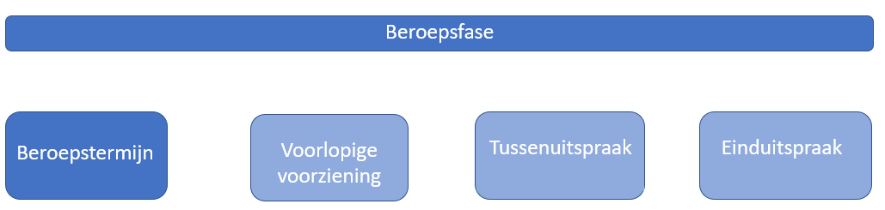Figuur 52Globaal overzicht van de mogelijke stappen in de beroepsprocedure
10.4.4.2.2 Beroepstermijn
Toekomstige functionaliteiten workaround
In paragraaf 10.4.4.2 is al aangegeven dat het doorgeven van informatie over de status van een besluit toekomstige functionaliteit is en dat daarvoor geen workaround bestaat. De inhoud van de onderhavige paragraaf is gericht op de toekomst wanneer dit wel mogelijk is.
Geen beroepingesteld
Als na afloop van de beroepstermijn duidelijk is dat er geen beroep is ingesteld, hoeft gemeente, waterschap, provincie of Rijk niets meer te doen. Het Procedureverloop is actueel. Uit het niet doorgeven van volgende Procedurestappen leidt de LVBB af dat er geen beroep is ingesteld tegen het besluit en dat het besluit onherroepelijk is. Daardoor kan een raadpleger in DSO-LV zien dat het programma onherroepelijk is.
Beroep ingesteld
Als er beroep tegen het besluit is ingesteld moet gemeente, waterschap, provincie of Rijk direct na ontvangst van het (eerste) bericht dat beroep is ingesteld met een directe Procedureverloopmutatie de volgende gegevens aan het Procedureverloop toevoegen:
Procedurestap
soortStap: kies uit de STOP-waardelijst Procedurestap_definitief de waarde ‘Start beroepsprocedure’
voltooidOp: vul de datum in waarop de beroepstermijn is geëindigd. Dit is de laatste dag waarop nog beroep tegen het besluit kan worden ingesteld
meerInformatie: gebruik dit gegeven niet
bekendOp: vul de datum in waarop (het eerste) beroep is ingesteld, of (als die datum onbekend is) de datum van het bericht van de Raad van State dat beroep is ingesteld
Het is van belang dat deze Procedurestap wordt doorgegeven. Daardoor wordt in DSO-LV een melding geplaatst dat het programma (nog) niet onherroepelijk is. Als deze Procedurestap niet wordt doorgegeven, dan krijgt een raadpleger ten onrechte te zien dat het programma onherroepelijk is.
Voor het vervolg van de beroepstermijn maakt gemeente, waterschap, provincie of Rijk een keuze tussen twee werkwijzen:
na afloop van de beroepstermijn bekijken of er beroepen tegen het besluit resteren (het ingestelde beroep kan immers ingetrokken zijn of niet-ontvankelijk verklaard):
zo ja: gemeente, waterschap, provincie of Rijk hoeft niets te doen, het Procedureverloop klopt nog steeds;
zo nee: voeg met een directe Procedureverloopmutatie de volgende gegevens aan het Procedureverloop toe:
Procedurestap
soortStap: kies uit de STOP-waardelijst Procedurestap_definitief de waarde ‘Einde beroepsprocedures’
voltooidOp: vul de datum in waarop bericht is ontvangen dat het (laatste resterende) beroep is ingetrokken dan wel de datum van de uitspraak waarmee het (laatste resterende) beroep niet-ontvankelijk is verklaard
meerInformatie: gebruik dit gegeven niet
bekendOp: vul de datum in waarop de Procedureverloopmutatie wordt aangeleverd
tijdens de beroepstermijn de module Procedureverloop steeds actueel houden:
er worden na het eerste beroep nog meer beroepen ingesteld: gemeente, waterschap, provincie of Rijk hoeft niets te doen, het Procedureverloop is actueel
tijdens de beroepstermijn worden alle dan bekende beroepen ingetrokken of niet-ontvankelijk verklaard: muteer het Procedureverloop op de wijze die bij 1a is beschreven
na de handelingen beschreven bij 2b komt er bericht dat er een nieuw beroep is ingesteld: voeg met een directe Procedureverloopmutatie de volgende gegevens aan het Procedureverloop toe:
Procedurestap
soortStap: kies uit de STOP-waardelijst Procedurestap_definitief de waarde ‘Start beroepsprocedure’
voltooidOp: vul de datum in waarop de beroepstermijn is geëindigd. Dit is de laatste dag waarop nog beroep tegen het besluit kan worden ingesteld
meerInformatie: gebruik dit gegeven niet
bekendOp: vul de datum in waarop (het eerste) beroep is ingesteld, of (als die datum onbekend is) de datum van het bericht van de Raad van State dat beroep is ingesteld
NB1: Er wordt niet doorgegeven hoeveel beroepschriften er zijn en ook niet over welke onderdelen van het besluit de beroepschriften gaan.
NB2: Er wordt geen kennisgeving gedaan van het feit dat beroep is ingesteld (en ook niet van het feit dat geen beroep is ingesteld).
10.4.4.2.3 Verzoek voorlopige voorziening en uitspraak
Toekomstige functionaliteiten workaround
In paragraaf 10.4.4.2 is al aangegeven dat het doorgeven van informatie over de status van een besluit toekomstige functionaliteit is en dat daarvoor geen workaround bestaat. De inhoud van de onderhavige paragraaf is gericht op de toekomst wanneer dit wel mogelijk is.
Indienen verzoek voorlopige voorziening
Het indienen van een verzoek om voorlopige voorziening heeft geen schorsende werking en heeft dus geen gevolgen voor de geldigheid of status van het besluit of het programma. Gemeente, waterschap, provincie of Rijk hoeft nu niets te doen, het Procedureverloop is actueel.
Uitspraak zonder gevolgen voor status
Als de uitspraak van de voorzieningenrechter op het verzoek om voorlopige voorziening inhoudt:
onbevoegdverklaring van de voorzieningenrechter,
niet-ontvankelijkverklaring van het verzoek,
afwijzing van het verzoek
heeft die uitspraak geen gevolgen voor de geldigheid of status van het besluit het programma. Gemeente, waterschap, provincie of Rijk hoeft ook nu niets te doen, het Procedureverloop is actueel.
Uitspraak met gevolgen voor status
De uitspraak die inhoudt gehele of gedeeltelijke toewijzing van het verzoek heeft wel gevolgen voor de geldigheid van het besluit; dat is geheel of gedeeltelijk geschorst. Gemeente, waterschap, provincie of Rijk moet direct na ontvangst van de uitspraak met een directe Procedureverloopmutatie de volgende gegevens aan het Procedureverloop toevoegen:
Procedurestap
soortStap: kies uit de STOP-waardelijst Procedurestap_definitief de waarde ‘Schorsing’
voltooidOp: vul de datum in van de uitspraak waarmee de voorzieningenrechter het besluit (geheel of gedeeltelijk) heeft geschorst
meerInformatie: maak hier, indien gewenst, een link naar de pagina op de website van gemeente, waterschap, provincie of Rijk met meer informatie over de juridische gevolgen van de schorsing voor de werking van het besluit
bekendOp: vul de datum in van de uitspraak waarmee de voorzieningenrechter het besluit (geheel of gedeeltelijk) heeft geschorst
Het is van belang dat deze Procedurestap wordt doorgegeven. Daardoor wordt in DSO-LV een waarschuwing geplaatst dat het programma geschorst en dus niet in werking is. Als deze Procedurestap niet wordt doorgegeven, dan krijgt een raadpleger ten onrechte niet te zien dat het programma geschorst is.
Het geheel of gedeeltelijk schorsen van het besluit heeft een voorlopig karakter. Daarom wordt in DSO-LV wel een waarschuwing bij de geschorste onderdelen geplaatst, maar worden de geschorste onderdelen niet uit het besluit of de geconsolideerde regeling verwijderd.
Ook bij tussenuitspraak (zie paragraaf 10.4.4.2.5) kan de bestuursrechter een voorlopige voorziening treffen. In dat geval moet gemeente, waterschap, provincie of Rijk het Procedureverloop muteren op de hier beschreven wijze.
De voorzieningenrechter kan, na de zitting, onmiddellijk uitspraak doen in de hoofdzaak. In dat geval moet het Procedureverloop worden gemuteerd op dezelfde wijze als bij een gewone uitspraak in de hoofdzaak, zie daarvoor de paragrafen 10.4.4.2.6 t/m 10.4.4.2.10.
NB1: Er wordt niet doorgegeven hoeveel verzoeken om voorlopige voorziening tot schorsing hebben geleid en ook niet welke onderdelen van het besluit geschorst zijn.
NB2: Er wordt geen kennisgeving gedaan van het feit dat het besluit is geschorst.
10.4.4.2.4 Vervallen en opheffen voorlopige voorziening
Toekomstige functionaliteit en workaround
In paragraaf 10.4.4.2 is al aangegeven dat het doorgeven van informatie over de status van een besluit toekomstige functionaliteit is en dat daarvoor geen workaround bestaat. De inhoud van de onderhavige paragraaf is gericht op de toekomst wanneer dit wel mogelijk is.
Een voorlopige voorziening heeft geen permanent karakter, maar kan vervallen of worden opgeheven:
Een voorlopige voorziening vervalt:
zodra de bestuursrechter uitspraak heeft gedaan in de hoofdzaak;
als de voorzieningenrechter dat in de uitspraak heeft bepaald;
zodra het beroep is ingetrokken.
De voorzieningenrechter kan, op verzoek of ambtshalve, een voorlopige voorziening opheffen.
In de situatie 1a moet gemeente, waterschap, provincie of Rijk het Procedureverloop muteren op een van de wijzen die zijn beschreven in de paragrafen 10.4.4.2.6 t/m 10.4.4.2.10.
In de situaties 1b, 1c en 2 moet gemeente, waterschap, provincie of Rijk met een directe Procedureverloopmutatie de volgende gegevens aan het Procedureverloop toevoegen:
Procedurestap
soortStap: kies uit de STOP-waardelijst Procedurestap_definitief de waarde ‘Opheffing schorsing’
voltooidOp: vul de datum in waarop de voorlopige voorziening is vervallen of opgeheven
meerInformatie: maak hier, indien gewenst, een link naar de pagina op de website van gemeente, waterschap, provincie of Rijk met meer informatie over de juridische gevolgen van het vervallen of opheffen van de schorsing voor de werking van het besluit
bekendOp: vul de datum in waarop de voorlopige voorziening is vervallen of opgeheven
Het is van belang dat deze Procedurestap wordt doorgegeven. Daardoor wordt in DSO-LV de waarschuwing verwijderd dat het programma geschorst is. Als deze Procedurestap niet wordt doorgegeven, dan krijgt een raadpleger ten onrechte te zien dat het programma geschorst is.
Het opheffen van de schorsing leidt niet tot wijziging van de inhoud van de geconsolideerde regeling.
NB1: Het Procedureverloop wordt niet gemuteerd als de schorsing slechts gedeeltelijk is opgeheven. Er zijn dan immers delen van de regeling die nog steeds geschorst zijn. Het Procedureverloop is dan nog steeds actueel.
NB2: Er wordt geen kennisgeving gedaan van het feit dat de schorsing is opgeheven.
10.4.4.2.5 Bestuurlijke lus en tussenuitspraak
Zoals is beschreven in paragraaf 10.4.4.1.3 is een van de mogelijke uitkomsten van de bestuurlijke lus in de beroepsprocedure tegen een het programma de tussenuitspraak met de opdracht aan het bestuursorgaan om een nieuw besluit te nemen. Dit nieuwe besluit moet op de wettelijk voorgeschreven wijze, dus met toepassing van de STOP/TPOD-standaard, worden bekendgemaakt. De aanlevering gebeurt op dezelfde manier als de aanlevering van het definitieve besluit, die is beschreven in paragraaf 10.4.3.3. De wijzigingen van het nieuwe besluit dat naar aanleiding van de tussenuitspraak is genomen, worden dan geconsolideerd in het programma.
Bij de tussenuitspraak kan de bestuursrechter een voorlopige voorziening treffen. In dat geval moet gemeente, waterschap, provincie of Rijk het Procedureverloop van het (oorspronkelijke) definitieve besluit muteren op de wijze zoals in paragraaf 10.4.4.2.3 onder het kopje ‘Uitspraak met gevolgen voor status’ is beschreven.
10.4.4.2.6 Uitspraak in de hoofdzaak – inleiding
Zoals in paragraaf 10.4.4.1.4 al is beschreven, kan de bestuursrechter in de hoofdzaak de volgende uitspraken doen:
onbevoegdverklaring van de bestuursrechter,
niet-ontvankelijkverklaring van het beroep,
ongegrondverklaring van het beroep, of
gegrondverklaring van het beroep.
Deze uitspraken leiden tot verschillende verplichtingen en handelingen voor gemeente, waterschap, provincie of Rijk. Die zijn in de volgende vier paragrafen beschreven.
10.4.4.2.7 Uitspraak in de hoofdzaak zonder vernietiging van besluit en rechtsgevolgen
Toekomstige functionaliteiten workaround
In paragraaf 10.4.4.2 is al aangegeven dat het doorgeven van informatie over de status van een besluit toekomstige functionaliteit is en dat daarvoor geen workaround bestaat. De inhoud van de onderhavige paragraaf is gericht op de toekomst wanneer dit wel mogelijk is.
Onbevoegdverklaring van de bestuursrechter, niet-ontvankelijkverklaring van het beroep en ongegrondverklaring van het beroep hebben wel gevolgen voor de status van het besluit, maar geen gevolgen voor de inhoud van het programma. Na ontvangst van de (laatste) uitspraak in de hoofdzaak met een of meer van deze strekkingen moet gemeente, waterschap, provincie of Rijk in deze gevallen met een directe Procedureverloopmutatie de volgende gegevens aan het Procedureverloop toevoegen:
Procedurestap (alleen als in een eerder stadium van de beroepsprocedure het besluit geheel of gedeeltelijk was geschorst en die schorsing niet voorafgaand aan de uitspraak is vervallen of opgeheven)
soortStap: kies uit de STOP-waardelijst Procedurestap_definitief de waarde ‘Opheffing schorsing’
voltooidOp: vul de datum in van de (laatste) uitspraak in de hoofdzaak waardoor de schorsing is vervallen
meerInformatie: maak hier, indien gewenst, een link naar de pagina op de website van gemeente, waterschap, provincie of Rijk met meer informatie over de juridische gevolgen van de uitspraak voor de werking van het besluit
Procedurestap
soortStap: kies uit de STOP-waardelijst Procedurestap_definitief de waarde ‘Einde beroepsprocedures’
voltooidOp: vul de datum in van de (laatste) uitspraak in de hoofdzaak
meerInformatie: maak hier, indien gewenst, een link naar de pagina op de website van gemeente, waterschap, provincie of Rijk met meer informatie over de juridische gevolgen van de uitspraak voor de werking van het besluit
bekendOp: vul de datum in van de (laatste) uitspraak in de hoofdzaak
Het is van belang om deze Procedurestap(pen) door te geven. Daardoor wordt in DSO-LV de melding verwijderd dat het programma nog niet onherroepelijk is. Ook de eventuele melding in DSO-LV over de schorsing van (onderdelen van) het programma wordt verwijderd. Als deze Procedurestappen niet worden doorgegeven, dan krijgt een raadpleger ten onrechte te zien dat het programma niet onherroepelijk (of in voorkomend geval geschorst) is.
Zoals gezegd heeft de uitspraak geen gevolgen voor de inhoud van het programma. Gemeente, waterschap, provincie of Rijk hoeft geen andere handelingen te verrichten dan het muteren van het Procedureverloop.
Met het Procedureverloop wordt niet doorgegeven wat de inhoud van de uitspraak is.
NB: Er wordt in deze situatie geen mededeling van de uitspraak gedaan en er geldt geen wettelijke verplichting om kennis te geven van de uitspraak.
10.4.4.2.8 Uitspraak in de hoofdzaak met vernietiging van besluit en instandblijven rechtsgevolgen
In deze situatie houdt de uitspraak op de beroepen tegen het programma in dat een of meer beroepen gegrond zijn verklaard en dat het programma geheel of gedeeltelijk is vernietigd maar de rechtsgevolgen van het besluit in stand zijn gebleven. Deze uitspraak heeft wel gevolgen voor de status van het besluit maar niet voor de inhoud van het programma.
Gemeente, waterschap, provincie of Rijk moet nu -zo snel mogelijk na ontvangst van de (laatste) uitspraak- mededeling van de uitspraak doen door te zorgen voor publicatie van de inhoud van de uitspraak in gemeenteblad, waterschapsblad, provinciaal blad of Staatscourant. Het eindbeeld is dat gemeente, waterschap, provincie of Rijk mededeling doet van de uitspraak van de rechter met toepassing van de Mededeling conform de STOP/TPOD-standaard en die Mededeling aan de LVBB aanlevert voor de publicatie in gemeenteblad, waterschapsblad, provinciaal blad of Staatscourant. De Mededeling is het aan te leveren ‘product’ waarmee gemeente, waterschap, provincie of Rijk door middel van het Procedureverloop informatie over de status van het besluit doorgeeft.
Het eindbeeld is toekomstige functionaliteit die onderdeel is van STOP versie 2.0 en in een latere Release in de DSO-keten wordt geïmplementeerd. Zolang in de DSO-keten deze functionaliteit nog niet geïmplementeerd is, moet een workaround worden toegepast.
De uitspraak waar deze paragraaf over gaat, heeft zoals gezegd geen gevolgen voor de inhoud van het programma. De uitspraak leidt niet tot aanpassing van een regeling en er hoeft geen ConsolidatieInformatie aangeleverd te worden. Er is dus geen aanleiding voor een aanlevering aan de LVBB. De workaround voor het doen van mededeling van de uitspraak bestaat er daarom uit dat gemeente, waterschap, provincie of Rijk deze aanlevert met de applicatie DROP.
Toekomstige functionaliteit
In de toekomst zal de mededeling van de uitspraak van de rechter conform model Mededeling van de STOP/TPOD-standaard worden opgesteld en aan de LVBB worden aangeleverd voor de publicatie in het publicatieblad. De Mededeling is nog niet in de DSO-keten geïmplementeerd.
Workaround
Zolang de Mededeling van deze uitspraak nog niet in de DSO-keten is geïmplementeerd, wordt de mededeling van de uitspraak van de rechter aangeleverd met de applicatie DROP.
10.4.4.2.9 Uitspraak in de hoofdzaak met gedeeltelijke vernietiging van besluit en rechtsgevolgen
Als er tegen een besluit een of meer beroepen zijn ingesteld die gegrond zijn verklaard en hebben geleid tot gedeeltelijke vernietiging van het besluit en de rechtsgevolgen daarvan, heeft dat zowel gevolgen voor de status van het besluit als voor de inhoud van het programma.
Gemeente, waterschap, provincie of Rijk moet nu -zo snel mogelijk na ontvangst van de (laatste) uitspraak- mededeling van de uitspraak doen door te zorgen voor publicatie van de inhoud van de uitspraak in het gemeenteblad, waterschapsblad, provinciaal blad of Staatscourant. Daarnaast moet gemeente, waterschap, provincie of Rijk zorgen voor het verwerken van de gevolgen van de gedeeltelijke vernietiging in de geconsolideerde regeling van het programma. Dat geldt ook als de bestuursrechter zelf in de zaak heeft voorzien door in de uitspraak precies te bepalen hoe het vernietigde deel van het besluit moet luiden.
Het eindbeeld is als volgt. Gemeente, waterschap, provincie of Rijk doet mededeling van de uitspraak van de rechter met toepassing van de Mededeling conform de STOP/TPOD-standaard. Gemeente, waterschap, provincie of Rijk levert de Mededeling aan de LVBB aan voor de publicatie in het gemeenteblad, waterschapsblad, provinciaal blad of Staatscourant. De Mededeling is het aan te leveren ‘product’ waarmee gemeente, waterschap, provincie of Rijk de RegelingMutatie met de wijzigingsinstructies en de ConsolidatieInformatie aanlevert die nodig zijn om de uitspraak te verwerken in de geconsolideerde regeling van het programma. De Mededeling is ook het aan te leveren ‘product’ waarmee gemeente, waterschap, provincie of Rijk door middel van het Procedureverloop informatie over de status van het besluit doorgeeft.
Het eindbeeld is toekomstige functionaliteit die onderdeel is van STOP versie 2.0 en in een latere Release in de DSO-keten wordt geïmplementeerd. Zolang in de DSO-keten deze functionaliteit nog niet geïmplementeerd is, moet een workaround worden toegepast. Die workaround bestaat er uit dat gemeente, waterschap, provincie of Rijk een besluit conform model BesluitCompact aanlevert met daarbij een module ConsolidatieInformatie. Het besluit dat voor deze workaround moet worden aangeleverd is alleen om technische redenen nodig. Juridisch gezien is er geen besluit nodig om mededeling van de uitspraak te doen en die uitspraak te verwerken in de geconsolideerde regeling. Dit technisch noodzakelijke besluit wordt op officielebekendmakingen.nl bekendgemaakt.
Toekomstige functionaliteit
In de toekomst zal de mededeling van de uitspraak van de rechter conform model Mededeling van de STOP/TPOD-standaard worden opgesteld en aan de LVBB worden aangeleverd voor de publicatie in het publicatieblad. Met de Mededeling kan het bevoegd gezag de ConsolidatieInformatie en dergelijke aanleveren die nodig is om de uitspraak te verwerken in de geconsolideerde regeling. De Mededeling is in de DSO-keten nog niet geïmplementeerd.
Workaround
Zolang de Mededeling nog niet in de DSO-keten is geïmplementeerd, wordt voor het doen van mededeling van de uitspraak van de rechter een besluit conform model BesluitCompact gebruikt. In het vervolg van deze paragraaf is beschreven hoe deze workaround moet worden toegepast.
Voor de workaround levert gemeente, waterschap, provincie of Rijk in het geval van gedeeltelijke vernietiging van het besluit en van de rechtsgevolgen daarvan het volgende aan de LVBB aan:
een besluit conform model BesluitCompact (met als soortProcedure definitief besluit) met de volgende onderdelen:
RegelingOpschrift: geef dit technisch noodzakelijke besluit een RegelingOpschrift waaruit duidelijk blijkt dat het gaat om mededeling van de uitspraak van de rechter. Een voorbeeld is: ‘Mededeling uitspraak over het beheerplan Natura 2000-gebied Veluwe’
Aanhef: in dit (niet verplichte) onderdeel kan kort beschreven worden dat het een mededeling van de uitspraak van de rechter betreft en niet een besluit
Lichaam, met daarin:
WijzigArtikel: geef hierin aan dat de uitspraak wordt verwerkt in de geconsolideerde regeling van het programma zoals is aangegeven in de WijzigBijlage
Artikel: vermeld in dit artikel de onderdelen van het programma die vernietigd zijn en de datum van de uitspraak
WijzigBijlage: neem in de WijzigBijlage een RegelingMutatie op met de wijzigingen die naar aanleiding van de uitspraak van de rechter in de actuele regeling worden doorgevoerd (of, in het geval van toepassing van de alternatieve wijzigingsmethode Integrale tekstvervanging, een VervangRegeling met daarin de nieuwe versie van de regeling van het programma waarin de uitspraak is verwerkt)
Bijlage: neem als bijlage de PDF van de rechterlijke uitspraak op, in de vorm van een alleen te publiceren informatieobject; maak hiervoor een PDF van de (geanonimiseerde) uitspraak op rechtspraak.nl of op de website van de Raad van State
Besluit- en RegelingMetadata
een module ConsolidatieInformatie met daarin:
(een container) BeoogdeRegelgeving met daarin:
BeoogdeRegeling, met daarbinnen:
Doel: vul hier het Doel in van het (technisch noodzakelijke) besluit dat als mededeling fungeert
instrumentVersie: vul hier de identificatie in van de nieuwe regelingversie die de wijzingen voor het verwerken van de uitspraak bevat
eId: vul hier de identificatie in van het WijzigArtikel in het (technisch noodzakelijke) besluit
BeoogdInformatieobject, voor ieder Informatieobject dat naar aanleiding van de uitspraak wordt toegevoegd of gewijzigd, met daarbinnen:
Doel: vul hier het Doel in van het (technisch noodzakelijke) besluit
instrumentVersie: vul hier de identificatie in van het nieuwe Informatieobject
eId: maak hier een verwijzing naar het element in de informatieobjecten-bijlage in de WijzigBijlage dat de ExtIoRef (de identificatie van het daadwerkelijke informatieobject) bevat
(een container) Tijdstempels met daarin:
Tijdstempel, met daarbinnen:
Doel: vul hier het Doel in van het (technisch noodzakelijke) besluit
soortTijdstempel: juridischWerkendVanaf
datum: de datum waarop de aangepaste regelingversie juridisch geldend wordt Vul hier de datum in waarop het (technisch noodzakelijke, als mededeling fungerende) besluit wordt gepubliceerd in het publicatieblad
eId: vul hier de identificatie in van het artikel in het Besluit-deel waarin de datum van de uitspraak is genoemd.
aangepaste versies van OW-objecten
De bestuursrechter kan in de uitspraak, naast de gedeeltelijke vernietiging van het besluit, gemeente, waterschap, provincie of Rijk opdragen een nieuw besluit te nemen. Gemeente, waterschap, provincie of Rijk moet mededeling doen van die uitspraak en zorgen voor verwerking van die gedeeltelijke vernietiging in de geconsolideerde regeling van het programma op de wijze zoals in het voorgaande deel van deze paragraaf is beschreven. Vanuit technisch perspectief is de procedure van het besluit waartegen het beroep was ingesteld geëindigd door de uitspraak. Met het besluit dat als gevolg van de uitspraak moet worden (voorbereid en) genomen start een nieuwe besluitprocedure met een eigen identificatie. Dat nieuwe besluit krijgt een eigen Procedureverloop.
10.4.4.2.10 Uitspraak in de hoofdzaak met gehele vernietiging van besluit en rechtsgevolgen
Beroep kan alleen worden ingesteld tegen een onderdeel van een programma waarin een beschrijving is opgenomen van een activiteit als gevolg waarvan (het verrichten van) de activiteit is toegestaan. Dat in beroep het volledige besluit wordt vernietigd, is dus niet waarschijnlijk. Voor de zekerheid beschrijft deze paragraaf toch wat er in het geval van een gehele vernietiging gedaan moet worden.
De gehele vernietiging van het besluit en de rechtsgevolgen daarvan heeft zowel gevolgen voor het programma als voor de status van het besluit. Gemeente, waterschap, provincie of Rijk moet nu -zo snel mogelijk na ontvangst van de (laatste) uitspraak- mededeling van de uitspraak doen door te zorgen voor publicatie van de inhoud van de uitspraak in het gemeenteblad, waterschapsblad, provinciaal blad of Staatscourant. Door de gehele vernietiging bestaat juridisch gezien het programma niet meer; daar is geen handeling (of besluit) voor nodig. In de regelingenbank op overheid.nl en in DSO-LV verdwijnt het programma niet vanzelf; er moet informatie worden aangeleverd waardoor het programma daar niet langer getoond wordt. Dat gebeurt door -in de ConsolidatieInformatie- een Intrekking aan de LVBB aan te leveren: een setje gegevens dat zorgt voor de technische intrekking van de regeling van het programma. Dit is alleen een technische intrekking. In juridische zin is er geen sprake van intrekking van het programma of van het besluit. Op officielebekendmakingen.nl is -ook na de intrekking van het programma- de bekendmaking van het programma nog steeds te vinden. Door de aanlevering van de Intrekking zorgt de LVBB er voor dat het programma in de lokale of nationale regelingenbank op overheid.nl niet meer getoond wordt. De LVBB geeft deze informatie door zodat ook DSO-LV het programma niet meer toont. Via tijdreizen in DSO-LV is het programma nog steeds te vinden.
Het eindbeeld is als volgt. Gemeente, waterschap, provincie of Rijk doet mededeling van de uitspraak van de rechter met toepassing van de Mededeling conform de STOP/TPOD-standaard. Gemeente, waterschap, provincie of Rijk levert de Mededeling aan de LVBB aan voor de publicatie in het gemeenteblad, waterschapsblad, provinciaal blad of Staatscourant. De Mededeling is het aan te leveren ‘product’ waarmee gemeente, waterschap, provincie of Rijk de Intrekking aanlevert.
Het eindbeeld is toekomstige functionaliteit die onderdeel is van STOP versie 2.0 en in een latere Release in de DSO-keten wordt geïmplementeerd. Zolang in de DSO-keten deze functionaliteit nog niet geïmplementeerd is, moet een workaround worden toegepast. Die workaround bestaat er uit dat gemeente, waterschap, provincie of Rijk een besluit conform model BesluitCompact aanlevert met daarbij een module ConsolidatieInformatie. Het besluit dat voor deze workaround moet worden aangeleverd is alleen om technische redenen nodig. Juridisch gezien is er geen besluit nodig om mededeling van de uitspraak te doen en de technische intrekking te doen. Dit technisch noodzakelijke besluit wordt op officielebekendmakingen.nl bekendgemaakt.
Toekomstige functionaliteit
In de toekomst zal de mededeling van de uitspraak van de rechter conform model Mededeling van de STOP/TPOD-standaard worden opgesteld en aan de LVBB worden aangeleverd voor de publicatie in het publicatieblad. Met de Mededeling kan het bevoegd gezag de Intrekking aanleveren die nodig is om het programma niet meer te tonen in regelingenbank en in DSO-LV. De Mededeling is in de DSO-keten nog niet geïmplementeerd.
Workaround
Zolang de Mededeling nog niet in de DSO-keten is geïmplementeerd, wordt voor het doen van mededeling van de uitspraak van de rechter en het intrekken van (de regeling van) het programma een besluit conform model BesluitCompact gebruikt. In het vervolg van deze paragraaf is beschreven hoe deze workaround moet worden toegepast.
Voor de workaround levert gemeente, waterschap, provincie of Rijk in het geval van gehele vernietiging van het besluit en van de rechtsgevolgen daarvan het volgende aan de LVBB aan:
een besluit conform model BesluitCompact (met als soortProcedure definitief besluit) met de volgende onderdelen:
RegelingOpschrift: geef dit technisch noodzakelijke besluit een RegelingOpschrift waaruit duidelijk blijkt dat het gaat om mededeling van de uitspraak van de rechter. Een voorbeeld is: ‘Mededeling uitspraak over het beheerplan Natura 2000-gebied Veluwe’
Aanhef: in dit (niet verplichte) onderdeel kan kort beschreven worden dat het een mededeling van de uitspraak van de rechter betreft en niet een besluit
Lichaam, met daarin:
Artikel: vermeld in dit (reguliere) artikel dat het programma is vernietigd door de uitspraak en op welke datum dat was
Bijlage: neem als bijlage de PDF van de rechterlijke uitspraak op, in de vorm van een alleen te publiceren informatieobject; maak hiervoor een PDF van de (geanonimiseerde) uitspraak op rechtspraak.nl of op de website van de Raad van State
NB: dit BesluitCompact bevat geen WijzigBijlage en dus ook geen WijzigArtikel
BesluitMetadata Indien in de BesluitMetadata het gegeven citeertitel wordt gebruikt, maak dan ook daarin duidelijk dat het gaat om een mededeling van de uitspraak van de rechter. Voor isOfficieel moet de waarde false worden gekozen
een module ConsolidatieInformatie met daarin:
(een container) Intrekkingen met daarin:
Intrekking
Doel: vul hier het Doel in van het (technisch noodzakelijke) besluit
Instrument: vul hier de identificatie in van de in te trekken Regeling van het programma
eId: vul hier de identificatie in van het Artikel in het (technisch noodzakelijke) besluit waarin vermeld wordt dat het programma is vernietigd
(een container) Tijdstempels met daarin:
Tijdstempel
Doel: vul hier het Doel in van het (technisch noodzakelijke) besluit
soortTijdstempel: kies juridischWerkendVanaf
datum: de datum waarop het (technisch noodzakelijke) besluit juridisch geldend wordt Vul hier de datum in waarop het (technisch noodzakelijke) besluit wordt gepubliceerd in het publicatieblad
eId: vul hier de identificatie in van het artikel in het (technisch noodzakelijke) besluit waarin de datum wordt vermeld waarop het programma is vernietigd.
de expliciete beëindiging van alle OW-objecten die bij de Regeling van het programma horen.
De bestuursrechter kan in de uitspraak, naast de gehele vernietiging van het besluit, gemeente, waterschap, provincie of Rijk opdragen een nieuw besluit te nemen. Gemeente, waterschap, provincie of Rijk moet mededeling doen van die uitspraak en zorgen voor verwerking van die gehele vernietiging door de regeling van het programma (technisch) in te trekken op de wijze zoals in het voorgaande deel van deze paragraaf is beschreven. Vanuit technisch perspectief is de procedure van het besluit waartegen het beroep was ingesteld geëindigd door de uitspraak. Met het besluit dat als gevolg van de uitspraak moet worden (voorbereid en) genomen start een nieuwe besluitprocedure met een eigen identificatie. Dat nieuwe besluit krijgt een eigen Procedureverloop.
10.4.5 Beperken vindbaarheid programma
Toekomstige functionaliteit
In deze paragraaf is beschreven hoe de vindbaarheid van (de regeling van) het programma kan worden beperkt nadat het is gerealiseerd. Dit zal in een later stadium worden geïmplementeerd in de DSO-keten.
Workaround
Geen
Als het programma volledig is gerealiseerd, is het materieel uitgewerkt. Het is dan niet langer zinvol om het programma nog in de regelingenbank op overheid.nl en in DSO-LV in het overzicht van actuele instrumenten te zien. Bij tijdreizen moet het programma uiteraard wel teruggevonden kunnen worden.
De vindbaarheid van het programma in de regelingenbank en DSO-LV wordt beperkt door de regeling als materieel uitgewerkt aan te merken. Dat doet gemeente, waterschap, provincie of Rijk door een Revisie aan te leveren. De Revisie is geen besluit en wordt niet gepubliceerd in de publicatiebladen.
De Revisie bestaat uit één module Consolidatie-informatie, waarmee informatie wordt aangeleverd ten behoeve van de geconsolideerde regeling. In het geval van een Revisie voor het als materieel uitgewerkt aanmerken van een regeling wordt een module Consolidatie-informatie aangeleverd met binnen een container MaterieelUitgewerkt:
instrument: de work-Id van de RegelingVrijetekst van het programma
datum: de datum waarop de vindbaarheid beperkt moet zijn.
11 Rectificatie en Revisie
Na de publicatie van een besluit, mededeling of kennisgeving kan blijken dat er wel is gepubliceerd wat het bevoegd gezag heeft aangeleverd, maar dat de inhoud van de publicatie niet helemaal correct is. Het bevoegd gezag moet dan de correcte inhoud alsnog aanleveren. Wat het bevoegd gezag moet aanleveren hangt af van de soort publicatie die gecorrigeerd moet worden en van de soort correctie.
11.1 Rectificatie
11.1.1 Rectificatie van de bekendmaking van een besluit
Het kan voorkomen dat de ter bekendmaking aangeleverde versie van een besluit verschilt van wat het bestuursorgaan daadwerkelijk heeft besloten, bijvoorbeeld omdat een aangenomen amendement niet verwerkt is, of door een verschrijving. De bekendmaking moet dan gerectificeerd worden. Juridisch gezien is rectificeren alleen mogelijk voor het herstellen van kennelijke (bekendmakings)fouten, waarbij het herstel geen rechtsgevolgen mag hebben. Als er wel sprake is van rechtsgevolg, dan kan de fout alleen hersteld worden door het nemen van een wijzigingsbesluit.
De STOP/TPOD-standaard biedt bevoegde gezagen de mogelijkheid om een reeds gepubliceerd besluit met een inhoudelijke fout erin te rectificeren. Het eindbeeld is als volgt. Het bevoegd gezag kan de bekendmaking van het besluit rectificeren met toepassing van de Rectificatie conform de STOP/TPOD-standaard. Het bevoegd gezag levert de Rectificatie aan de LVBB aan voor de publicatie in het publicatieblad. De Rectificatie is het aan te leveren ‘product’ waarmee het bevoegd gezag de RegelingMutatie met de wijzigingsinstructies en de ConsolidatieInformatie aanlevert die nodig zijn om de rectificatie te verwerken in de geconsolideerde regeling van het omgevingsdocument. Op die manier geeft het bevoegd gezag aan welke onderdelen van de oorspronkelijke publicatie verkeerd zijn en hoe ze hadden moeten luiden.
Het eindbeeld is toekomstige functionaliteit die onderdeel is van STOP versie 2.0 en in een latere Release in de DSO-keten wordt geïmplementeerd. Zolang in de DSO-keten deze functionaliteit nog niet geïmplementeerd is, moet een workaround worden toegepast. Die workaround bestaat eruit dat het bevoegd gezag een besluit conform model BesluitCompact aanlevert met daarbij een RegelingMutatie en een module ConsolidatieInformatie. Het besluit dat voor deze workaround moet worden aangeleverd is alleen om technische redenen nodig. Juridisch gezien is er geen sprake van een besluit bij het rectificeren van de bekendmaking van een besluit. Dit technisch noodzakelijke besluit wordt op officielebekendmakingen.nl bekendgemaakt.
Toekomstige functionaliteit
In de toekomst zal de rectificatie van de bekendmaking van een besluit conform model Rectificatie van de STOP/TPOD-standaard worden opgesteld en aan de LVBB worden aangeleverd voor de publicatie in het publicatieblad. De Rectificatie is nog niet in de DSO-keten geïmplementeerd.
Workaround
Zolang de Rectificatie nog niet in de DSO-keten is geïmplementeerd, wordt voor het rectificeren van de bekendmaking een besluit conform model BesluitCompact gebruikt. In het vervolg van deze paragraaf is beschreven hoe deze workaround moet worden toegepast.
Voor de workaround levert het bevoegd gezag het volgende aan de LVBB aan:
een besluit conform model BesluitCompact (met als soortProcedure definitief besluit) met de volgende onderdelen:
RegelingOpschrift: geef dit technisch noodzakelijke besluit een RegelingOpschrift waaruit duidelijk blijkt dat het gaat om rectificatie van de bekendmaking van een besluit. Een voorbeeld is: ‘Rectificatie van het besluit Wijziging omgevingsplan Amsterdam t.b.v. de realisatie van 47 studentenwoningen in de Jordaan’.
Aanhef: in dit (niet verplichte) onderdeel kan kort beschreven worden dat het een rectificatie betreft en niet een besluit
Lichaam, met daarin:
WijzigArtikel: geef hierin aan dat de geconsolideerde regeling van het omgevingsdocument wordt gerectificeerd zoals is aangegeven in de WijzigBijlage
Artikel: geef in dit artikel de datum aan waarop de gerectificeerde versie van de geconsolideerde regeling rechtsgeldig is; dit is de datum waarop het (technisch noodzakelijke) besluit wordt gepubliceerd, tenzij er al besluiten tot wijziging van het omgevingsdocument zijn gepubliceerd met een latere inwerkingtredingsdatum, dan moet als datum gekozen worden de dag na de inwerkingtredingsdatum van het laatst gepubliceerde besluit
WijzigBijlage: neem in de WijzigBijlage een RegelingMutatie op met de wijzigingen die door de rectificatie in de actuele regeling worden doorgevoerd
Besluit- en RegelingMetadata
een module ConsolidatieInformatie met daarin:
(een container) BeoogdeRegelgeving met daarin:
BeoogdeRegeling, met daarbinnen:
Doel: vul hier het Doel in van het (technisch noodzakelijke) besluit dat als rectificatie fungeert
instrumentVersie: vul hier de identificatie in van de nieuwe regelingversie die de wijzingen voor de rectificatie bevat
eId: vul hier de identificatie in van het WijzigArtikel in het (technisch noodzakelijke) besluit
BeoogdInformatieobject, voor ieder Informatieobject waarvan als rectificatie een nieuwe versie wordt aangeleverd, met daarbinnen:
Doel: vul hier het Doel in van het (technisch noodzakelijke) besluit
instrumentVersie: vul hier de identificatie in van de nieuwe versie van het Informatieobject
eId: maak hier een verwijzing naar het element in de informatieobjecten-bijlage in de WijzigBijlage dat de ExtIoRef (de identificatie van het daadwerkelijke informatieobject) bevat
(een container) Tijdstempels met daarin:
Tijdstempel, met daarbinnen:
Doel: vul hier het Doel in van het (technisch noodzakelijke) besluit
soortTijdstempel: juridischWerkendVanaf
datum: de datum waarop de rectificatie (het technisch noodzakelijke besluit) juridisch geldend wordt Vul hier de datum in waarop het (technisch noodzakelijke) besluit wordt gepubliceerd in het publicatieblad, tenzij er al besluiten tot wijziging van het omgevingsdocument zijn gepubliceerd met een latere inwerkingtredingsdatum, dan moet als datum gekozen worden de dag na de inwerkingtredingsdatum van het laatst gepubliceerde besluit
eId: vul hier de identificatie in van het reguliere artikel in het lichaam van het besluit.
11.1.2 Rectificatie van een kennisgeving
Als de inhoud van een kennisgeving niet klopt, moet deze gerectificeerd worden. Het bevoegd gezag doet dat door een nieuwe kennisgeving aan te leveren, overeenkomstig de voorschriften voor de betreffende kennisgeving. In de tekst van de kennisgeving maakt het bevoegd gezag duidelijk dat het een rectificatie van een eerdere kennisgeving betreft.
11.1.3 Rectificatie van een mededeling van een rechterlijke uitspraak
Als de inhoud van een mededeling van een rechterlijke uitspraak niet klopt, moet deze gerectificeerd worden. Het bevoegd gezag doet dat door een nieuwe mededeling aan te leveren, overeenkomstig de voorschriften voor de betreffende mededeling. In de tekst van de mededeling maakt het bevoegd gezag duidelijk dat het een rectificatie van een eerdere mededeling betreft.
11.2 Revisie [Gereserveerd]
D Bijlagen
1 De relatie tussen artikel 1.2 Omgevingswet en de waardelijst voor thema
Zoals in paragraaf 7.4.5 is aangegeven is er een waardelijst voor het attribuut thema. Het grootste deel van de waarden van die waardelijst is rechtstreeks ontleend aan artikel 1.2 Omgevingswet. In onderstaande tabel is aangegeven hoe de relatie is tussen dat artikel en de waarden van de waardelijst.
Tabel 9
Onderdelen vanartikel1.2 Ow
Waarden uit de waardelijstThema
Aanhef
Deze wet gaat over:
Lid 1
a. de fysieke leefomgeving, en
b. activiteiten die gevolgen hebben of kunnen hebben voor de fysieke leefomgeving.
Lid 2
De fysieke leefomgeving omvat in ieder geval:
a. bouwwerken,
Bouwwerken
b. infrastructuur,
Infrastructuur
c. watersystemen,
Water en watersystemen
d. water,
Water en watersystemen
e. bodem,
Bodem
f. lucht,
Lucht
g. landschappen,
Landschap
h. natuur,
Natuur
i. cultureel erfgoed,
j. werelderfgoed.
Cultureel erfgoed
Lid 3
Als gevolgen voor de fysieke leefomgeving worden in ieder geval aangemerkt gevolgen die kunnen voortvloeien uit:
a. het wijzigen van onderdelen van de fysieke leefomgeving of het gebruik daarvan,
Landgebruik[83] Wanneer zoals wordt overwogen aan de objecttypen Juridische regel en Tekstdeel een attribuut subthema wordt toegevoegd kan de (Thema-)waarde Landgebruik nader worden gespecialiseerd met subthema’s als landbouw, recreatie, wonen, verkeer etc.
b. het gebruik van natuurlijke hulpbronnen,
Energie en natuurlijke hulpbronnen
c. activiteiten waardoor emissies, hinder of risico’s worden veroorzaakt,
Gezondheid
Milieu algemeen
Externe veiligheid
Geluid
d. het nalaten van activiteiten.
Lid 4
Als gevolgen voor de fysieke leefomgeving worden ook aangemerkt gevolgen voor de mens, voor zover deze wordt of kan worden beïnvloed door of via onderdelen van de fysieke leefomgeving.
2 Versiehistorie
In deze bijlage staat de versiehistorie van eerdere versies van dit toepassingsprofiel.
In de versiehistorie wordt met WELT-xx verwezen naar de Wensen en Eisen Lijst voor de TPOD-standaard. Deze lijst bevat meldingen en wijzigingsverzoeken die door gebruikers van de standaard zijn ingediend. De ingediende meldingen zijn te vinden via https://www.geonovum.nl/geo-standaarden/omgevingswet/meldingen.
Voor de STOP-standaard bestaat een vergelijkbaar meldingssysteem, waarnaar wordt verwezen met STOP#xx. De STOP-issuetracker is te vinden via https://gitlab.com/koop/STOP/standaard/-/issues.
Versie
Datum
Wijziging
2.1.0
2022-01-07
Hoofdstuk 9 gewijzigd van algemene beschrijving naar specifieke beschrijving van de procedure van het programma en de producten en gegevens die tijdens die procedure moeten worden aangeleverd
2.0.1-rc
2021-12-17
Hele document:
tekst gecorrigeerd en verbeterd
tekst geactualiseerd n.a.v. wijzigingen in wet- en regelgeving
2.0.1-rc
2021-12-17
Hoofdstuk 4 De vormgeving van Besluit en Regeling bij het programma
Beschrijving Besluitmodel in overeenstemming gebracht met STOP: in BesluitCompact wordt een WijzigArtikel niet onderverdeeld in WijzigLeden
Bepaald wanneer gebruik gemaakt mag worden van een PDF-bijlage in Besluit en Regeling
Modellering Toelichting en ArtikelgewjizigeToelichting aangepast en advies toegevoegd over de toepassing hiervan, met het oog op de toekomstige vereenvoudiging van deze elementen (STOP#194)
Advies toegevoegd om in het Besluit het element Inhoudsopgave niet te gebruiken
2.0.1-rc
2021-12-17
Paragraaf 5 Specificatie van de Vrijetekststructuur
Aangegeven dat voor lijsten gekozen kan worden tussen Lijst van het type expliciet en Lijst van het type ongemarkeerd
Figuren toegevoegd en bestaande figuren verduidelijkt
2.0.1-rc
2021-12-17
Paragraaf 5.3 Bijlagen bij Besluit en Regeling
Toegelicht wanneer gebruik gemaakt mag worden van een PDF-bijlage in Besluit en Regeling
2.0.1-rc
2021-12-17
Paragraaf 6.1.2.2 Vastleggen van Locatie met geografisch informatieobject
Tekst over gebruik van GIO in meerdere omgevingsdocumenten verplaatst naar specifieke paragraaf over dit onderwerp: 8.3
2.0.1-rc
2021-12-17
Paragraaf 7.2 Objecttype Divisie
Toelichting inclusief figuren toegevoegd over de doorwerking van het annoteren op het niveau van Divisie
2.0.1-rc
2021-12-17
Paragraaf 7.3 Objecttype Divisietekst
Toelichting toegevoegd over de doorwerking van het annoteren op het niveau van Divisietekst
2.0.1-rc
2021-12-17
Paragraaf 7.4 Objecttype Tekstdeel
Toegevoegd waarschuwing over gevolg van niet annoteren van Tekstdeel met Locatie
2.0.1-rc
2021-12-17
Paragraaf 7.8 Objecttype Gebiedsaanwijzing
Toegevoegd Bouw als nieuw type Gebiedsaanwijzing (voor omgevingsplan) (WELT-177)
Verwijderd bepaling dat een Gebiedsaanwijzing alleen mag verwijzen naar gebieden of gebiedengroepen en toelichting daarover toegevoegd
2.0.1-rc
2021-12-17
Paragraaf 8.2 hernoemd tot Tekstverwijzing (was Verwijzing)
2.0.1-rc
2021-12-17
Paragraaf 8.3 Hergebruik van en verwijzen naar GIO’s en OW-objecten in een ander omgevingsdocument
Paragraaf toegevoegd
Mogelijkheden van hergebruik en verwijzingen beschreven
Advies over gebruik van deze mogelijkheden toegevoegd
2.0.1-rc
2021-12-17
Paragraaf 8.4 Muteren van OW-objecten verplaatst naar dit hoofdstuk, stond in hoofdstuk 9
2.0.1-rc
2021-12-17
Hoofdstuk 10 Mutatiescenario’s toegevoegd
Beschrijving van mutatiescenario Integrale Tekstvervanging en wanneer dit mag worden toegepast (STOP#191)
2.0.0
2021-06-29
Paragraaf 4.3 De vormgeving van Besluit en Regeling
Gebruik van WijzigLid aangescherpt (STOP#184)
2.0.0
2021-06-29
Paragraaf 7.6 Objecttype Locatie (WELT-170)
Bij het attribuut identificatie is de uitzondering voor Ambtsgebied vervallen: identificatie is nu in alle gevallen conform datatype NEN3610-ID; de toelichting op dit attribuut is verwijderd
Aan Ambtsgebied, een van de verschijningsvormen van Locatie, is het attribuut bestuurlijkeGrenzenVerwijzing toegevoegd, dat wordt ingevuld met de gegevensgroep BestuurlijkeGrenzenVerwijzing waarin zijn samengevoegd het nieuwe attribuut bestuurlijkeGrenzenID en de bestaande attributen domein en geldigOp; de toelichting is hierop aangepast
2.0.0-rc
2021-06-15
Hele document:
Tekst gecorrigeerd en verbeterd
Verduidelijkende afbeeldingen toegevoegd
Term OW-object vervangen door OW-object
Woord symbolisatiebibliotheek vervangen door symbolenbibliotheek, overal waar dat voorkwam (WELT-146)
2.0.0-rc
2021-06-15
Paragraaf 1.2 STOP, IMOW en TPOD
Tekst toegevoegd over het aanwijzen van omgevingsdocumenten en verplicht stellen van het gebruik van STOP, IMOW en toepassingsprofiel door Omgevingsregeling en Regeling standaarden publicaties Omgevingswet
Verwerkt huidig inzicht in welke producten tot de standaard behoren, welke serviceproducten zijn en voor welke doelgroep ze bedoeld zijn
2.0.0-rc
2021-06-15
Paragraaf 2.2 Algemene kenmerken programma
In tabel 2 de onderdelen over besluit en besluitonderdelen verwijderd i.v.m. nieuwe opzet hoofdstuk 4 waarin niet langer sprake is van besluit en besluitonderdelen, maar de opzet van het programma wordt voorgeschreven aan de hand van de STOP-modellen voor Besluit en Regeling
2.0.0-rc
2021-06-15
Paragraaf 3.5 Waardelijsten
Toegevoegd dat de waardelijsten zijn vastgelegd in de Stelselcatalogus
Verwijderd beschrijving dat Presentatiemodel vastlegt hoe wijzigingen in wijzigingsbesluit worden gepresenteerd
Verwerkt dat de symboolcodes voor de standaardweergave niet langer in een afzonderlijke symbolisatietabel staan, maar zijn opgenomen in de IMOW-waardelijsten
2.0.0-rc
2021-06-15
Hoofdstuk 4 De vormgeving van Besluit en Regeling in het programma
Hoofdstuk volledig vervangen door nieuwe tekst. Daarin is de beschrijving van de drie onderdelen van het besluit vervangen door de beschrijving van de vormgeving en onderdelen van Besluit en regeling aan de hand van de STOP-modellen
2.0.0-rc
2021-06-15
Hoofdstuk 5 Toepassing van de STOP-tekststructuren op omgevingsdocumenten
Hoofdstuk herschreven zodat het beter aansluit op STOP in de beschrijving welke onderdelen van Besluit en Regeling Artikelstructuur respectievelijk Vrijetekststructuur hebben
2.0.0-rc
2021-06-15
Paragraaf 5 Specificatie van de Vrijetekststructuur
Norm en toelichting aangepast op gewijzigd inzicht over positie van het element Divisietekst in de modellen: geen structuurelement maar inhoudelijke bouwsteen
Bepaling dat de Kop van Divisietekst in een aantal gevallen verplicht is gewijzigd in altijd optioneel
Toelichting volledig herschreven en afbeeldingen toegevoegd
2.0.0-rc
2021-06-15
Hoofdstuk 6 Inleiding op het Informatiemodel Omgevingswet
Dit is het inleidende deel van het voormalige zeer uitgebreide Hoofdstuk 6, dat nu is gesplitst in 2 hoofdstukken. De detailbeschrijving van de objecttypen staat nu in Hoofdstuk 7
2.0.0-rc
2021-06-15
Paragraaf 7.1 Productmodel: het IMOW-UML-diagram voor het programma
Productmodel vervangen door nieuwe versie, geactualiseerd op de hierna volgende punten
2.0.0-rc
2021-06-15
Paragrafen 7.2 t/m 7.8 expliciet beschreven dat annotaties met OW-objecten alleen kunnen worden toegepast op het Lichaam van de Regeling van omgevingsdocumenten
2.0.0-rc
2021-06-15
Paragraaf 7.2 Objecttype Divisie
Toegevoegd de opmerking dat in omgevingsdocumenten met Vrijetekststructuur geannoteerd kan worden op (STOP)structuurelementen én op STOP-elementen die inhoud bevatten en wanneer naar verwachting de ene of juist de andere mogelijkheid toegepast zal worden
Toegevoegd beschrijving van onderscheid tussen Divisie en Divisietekst
Definitie aangepast i.v.m. introductie van het objecttype Divisietekst in IMOW
Uitsnede uit IMOW-diagram aangepast
2.0.0-rc
2021-06-15
Paragraaf 7.3 Objecttype Divisietekst
Paragraaf toegevoegd i.v.m. introductie van het objecttype Divisietekst in IMOW
2.0.0-rc
2021-06-15
Paragraaf 7.4 Objecttype Tekstdeel
Toegevoegd dat Tekstdeel zowel bij Divisie als bij Divisietekst kan voorkomen
Gewijzigd de beschrijving van het attribuut divisieaanduiding i.v.m. de introductie van het keuze-element DivisieOfDivisietekst, waarmee de keuze tussen Divisie en Divisietekst wordt gemaakt
Toegevoegd attribuut kaartaanduiding. Dit attribuut was al vermeld in de paragraaf over het objecttype Kaart maar niet bij het objecttype Tekstdeel waar het hoort
Uitsnede uit IMOW-diagram aangepast
2.0.0-rc
2021-06-15
Paragraaf 7.5 Objecttype Hoofdlijn
Toegevoegd opmerking over de mogelijkheid om in omgevingsdocumenten met Vrijetekststructuur te annoteren op (STOP)structuurelementen én op STOP-elementen die inhoud bevatten
2.0.0-rc
2021-06-15
Paragraaf 7.6 Locatie
Vastgelegd dat naar Ambtsgebied altijd statisch verwezen moet worden; dynamisch verwijzen is vanwege de mogelijkheid van bestuurlijke herindeling onwenselijk gebleken
Kader met dynamisch verwijzen naar Ambtsgebied als Toekomstige functionaliteit verwijderd
Toegevoegd toelichting over aanleveren Ambtsgebied
2.0.0-rc
2021-06-15
Paragraaf 7.8 Objecttype Gebiedsaanwijzing
Toelichting op de toepassing herschreven en tabel toegevoegd met overzicht welk Gebiedsaanwijzingtype in welk omgevingsdocument toegepast kan worden
Attribuut specifiekeSymbolisatie verwijderd (nu definitief vervangen door objecttype SymbolisatieItem)
In deze paragraaf zijn de paragraaf over het objecttype Gebiedsaanwijzing en de paragrafen over de verschillende typen Gebiedsaanwijzing samengevoegd. Hierbij zijn de paragrafen over de verschillende typen Gebiedsaanwijzing zo ingekort dat tekstdubbelingen zijn verwijderd
2.0.0-rc
2021-06-15
Paragraaf 7.9 Objecttype SymbolisatieItem
Iedere vermelding van het (nu vervallen) attribuut specifiekeSymbolisatie verwijderd
2.0.0-rc
2021-06-15
Paragraaf 7.10 Objecttype Kaart
Cardinaliteit attribuut nummer gecorrigeerd (WELT-127)
2.0.0-rc
2021-06-15
Paragraaf 7.11 Objecttype Kaartlaag
Vermelding van het (nu vervallen) attribuut specifiekeSymbolisatie verwijderd
2.0.0-rc
2021-06-15
Paragraaf 7.12 Objecttype Regelingsgebied
Toegevoegd dat Regelingsgebied hoort bij de Regeling en niet wordt gekoppeld aan een Juridische regel of Tekstdeel
2.0.0-rc
2021-06-15
Paragraaf 7.13 Het niveau van annoteren
Toegevoegd Divisietekst als niveau waarop geannoteerd kan worden
2.0.0-rc
2021-06-15
Hoofdstuk 8 Overige modelleringsaspecten van het programma
Hoofdstuk toegevoegd
Naar dit hoofdstuk de voormalige paragrafen 5.4 (Standaardindeling), 5.5 (Verwijzing) en 6.7 (Verplichte en onverplichte onderdelen) verplaatst
Paragraaf 8.5 “Onderdelen van de standaard die voor omgevingsdocumenten met Vrijetekststructuur verplicht of noodzakelijk zijn” herschreven
2.0.0-rc
2021-06-15
Paragraaf 9.3 Kennisgeving
Beschrijving van het element Divisietekst aangepast: de Kop is nu altijd optioneel